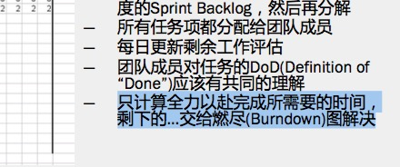
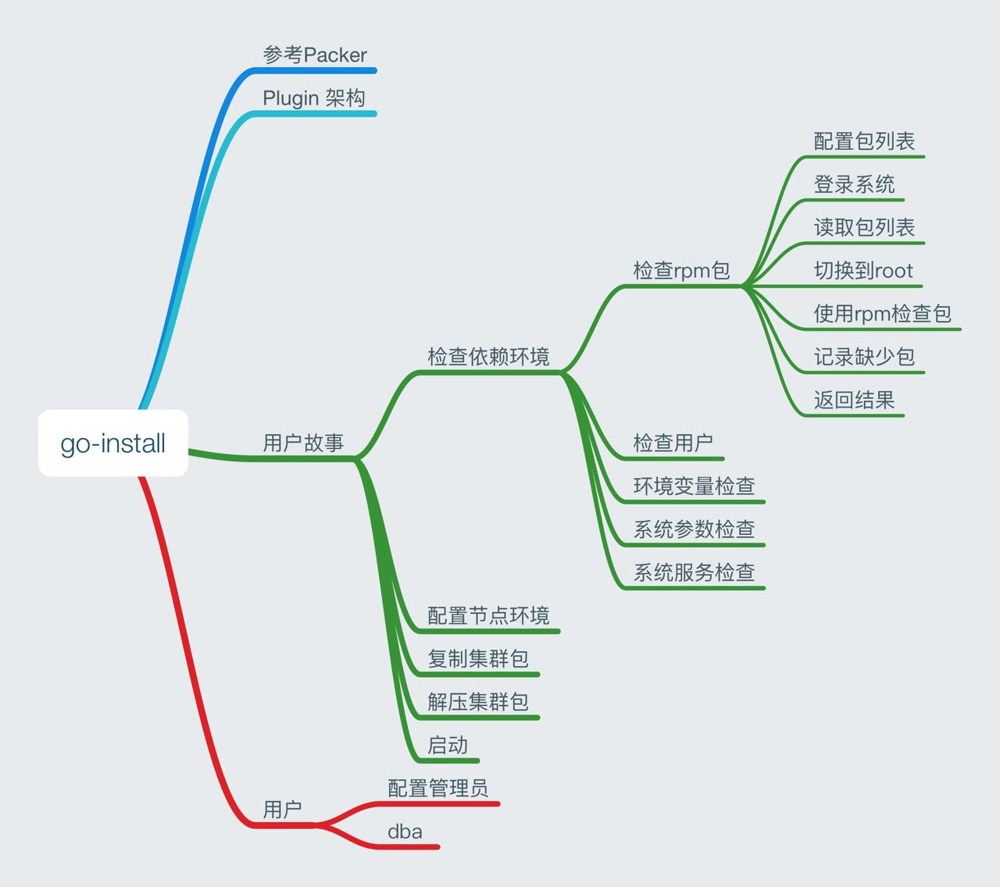
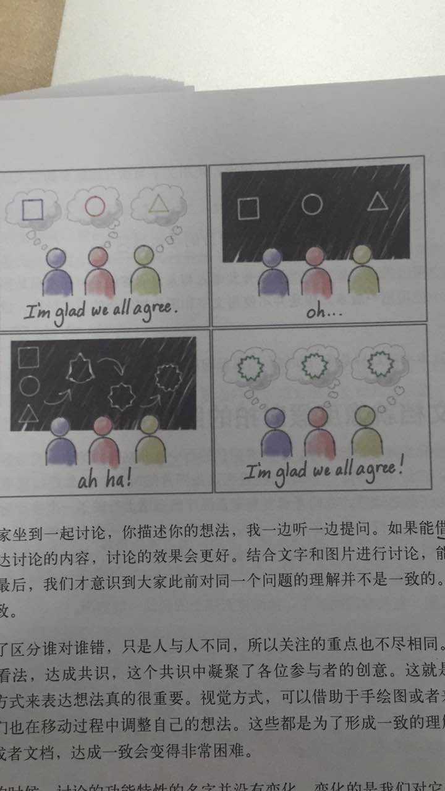
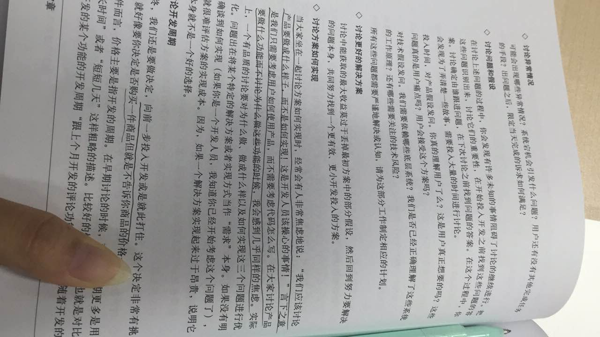
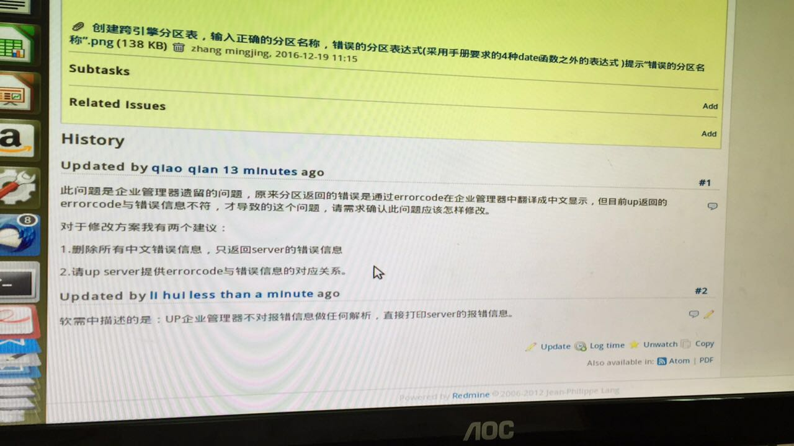
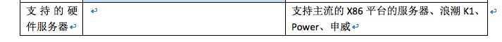

2016-12¶
2016-12-01¶
2016-12-01 10:25:36 |
你 |
开完了 |
2016-12-01 10:25:44 |
你 |
他们在写代码呢 |
2016-12-01 10:26:24 |
你 |
测试的有个bug 研发 测试 需求正纠缠呢 |
2016-12-01 10:26:31 |
你 |
王志新的bug |
2016-12-01 10:26:39 |
你 |
王志新的需求 |
2016-12-01 10:27:41 |
我 |
什么需求 |
2016-12-01 10:28:43 |
你 |
不知道 陈彪做的 |
2016-12-01 10:28:46 |
你 |
日志的吧 |
2016-12-01 10:28:56 |
我 |
好的 |
2016-12-01 10:59:33 |
你 |
你发给我的那个邮件 是武总要写篇文章是吧 |
2016-12-01 11:00:35 |
我 |
是，让番薯写了 |
2016-12-01 11:00:40 |
你 |
恩 好 |
2016-12-01 11:00:48 |
你 |
写完发给我看看 |
2016-12-01 11:00:55 |
我 |
好 |
2016-12-01 13:01:45 |
你 |
大叔，你什么时候才能中午来上班啊 |
2016-12-01 13:01:53 |
你 |
他们太吵了 |
2016-12-01 13:02:02 |
你 |
一直吵一直吵 |
2016-12-01 13:04:38 |
我 |
明天吧 |
2016-12-01 13:05:49 |
我 |
你中午又没睡吧 |
2016-12-01 13:06:46 |
你 |
一直说 |
2016-12-01 13:07:01 |
我 |
领导不在吗 |
2016-12-01 13:07:04 |
你 |
叽叽喳喳的 |
2016-12-01 13:07:09 |
你 |
不在 |
2016-12-01 13:07:31 |
我 |
这帮人太要命了 |
2016-12-01 13:08:52 |
你 |
你回来，你一摆睡觉的架势就没人吵了 |
2016-12-01 13:09:08 |
你 |
为什么他们总有这么多废话要说 |
2016-12-01 13:09:13 |
我 |
是，他们不敢吵我 |
2016-12-01 13:09:15 |
你 |
为什么为什么为什么 |
2016-12-01 13:09:17 |
你 |
[动画表情] |
2016-12-01 13:09:28 |
我 |
我明天中午前就回去了 |
2016-12-01 13:09:41 |
我 |
下周我妈就出院了 |
2016-12-01 13:09:49 |
你 |
没事了吧 |
2016-12-01 13:09:55 |
我 |
没事 |
2016-12-01 13:10:00 |
你 |
那就好 |
2016-12-01 13:16:07 |
我 |
明天你去北京 |
2016-12-01 13:18:36 |
你 |
是 |
2016-12-01 13:18:48 |
你 |
领导回来了 |
2016-12-01 13:18:53 |
我 |
这次注意别冻着了 |
2016-12-01 13:19:01 |
你 |
我对咱们屋彻底失望了 |
2016-12-01 13:19:15 |
你 |
我看中午找个地睡觉去 |
2016-12-01 13:19:21 |
你 |
现在又开始说雪地靴 |
2016-12-01 13:19:31 |
你 |
领导和老田都在打电话 |
2016-12-01 13:19:46 |
我 |
就是严丹带的 |
2016-12-01 13:20:09 |
你 |
刚才说半天吃的 |
2016-12-01 13:20:26 |
你 |
他们怎么那么多废话 |
2016-12-01 13:20:31 |
我 |
说吃的胖子最来劲 |
2016-12-01 13:20:37 |
你 |
我特别特别费解 |
2016-12-01 13:20:58 |
我 |
其实对他们来说不是废话，是一种炫耀 |
2016-12-01 13:21:15 |
你 |
有啥好炫耀的 炫耀的点在哪 |
2016-12-01 13:21:21 |
我 |
这也是属于社交的一种活动 |
2016-12-01 13:21:46 |
你 |
要是真美也行 |
2016-12-01 13:21:55 |
我 |
不是他们谈论的东西，是社会地位 |
2016-12-01 13:22:09 |
你 |
天天说那些破衣服 |
2016-12-01 13:22:12 |
你 |
破鞋 |
2016-12-01 13:22:21 |
我 |
说的多的人社会地位相对高 |
2016-12-01 13:22:30 |
你 |
真恶心 |
2016-12-01 13:22:36 |
你 |
你快回来吧 |
2016-12-01 13:22:38 |
你 |
快回来 |
2016-12-01 13:22:41 |
我 |
所以她们才会不停的找话题说 |
2016-12-01 13:22:48 |
我 |
是 |
2016-12-01 13:22:50 |
你 |
我昨天刚睡着了 吵醒了 |
2016-12-01 13:22:54 |
你 |
今天又是 |
2016-12-01 13:23:00 |
你 |
本来就不怎么爱睡着 |
2016-12-01 13:23:04 |
我 |
明天就没事了 |
2016-12-01 13:23:10 |
你 |
不单单是我自己睡 别人也在睡 |
2016-12-01 13:23:13 |
我 |
明天早上我就回去 |
2016-12-01 13:23:18 |
你 |
就不知道尊重下别人吗 |
2016-12-01 13:23:36 |
你 |
隔壁屋 隔壁的隔壁屋 都很安静 |
2016-12-01 13:23:45 |
你 |
就咱们屋叽叽喳喳 |
2016-12-01 13:23:57 |
我 |
你想想要是我和领导睡它们敢说吗 |
2016-12-01 13:24:06 |
你 |
要是他们再说 我就去五楼洽谈室睡觉去 |
2016-12-01 13:24:20 |
我 |
就是因为我们的地位比他们高 |
2016-12-01 13:24:35 |
你 |
是 |
2016-12-01 13:24:39 |
我 |
现在这屋里他们地位最高当然要说了 |
2016-12-01 13:24:40 |
你 |
我们都没地位 |
2016-12-01 13:24:46 |
你 |
是 |
2016-12-01 13:24:50 |
我 |
不然怎么显呢 |
2016-12-01 13:25:00 |
你 |
显呗 |
2016-12-01 13:25:04 |
你 |
显呗显呗 |
2016-12-01 13:25:08 |
你 |
不然还不憋死 |
2016-12-01 13:25:12 |
我 |
这是动物性的一部分 |
2016-12-01 13:25:17 |
你 |
不然怎么刷存在感 |
2016-12-01 13:25:24 |
我 |
是 |
2016-12-01 13:25:27 |
你 |
现在不说了 |
2016-12-01 13:25:33 |
你 |
领导回来不说了 |
2016-12-01 13:25:37 |
我 |
没错 |
2016-12-01 13:27:17 |
你 |
气死我了 |
2016-12-01 13:27:25 |
你 |
不干活不干活 干什么活 |
2016-12-01 13:27:28 |
你 |
就呆着 |
2016-12-01 13:27:45 |
我 |
不干了 |
2016-12-01 13:27:50 |
我 |
我陪着你 |
2016-12-01 13:28:28 |
你 |
好啊 |
2016-12-01 13:28:38 |
你 |
我现在对去北京都有阴影了 |
2016-12-01 13:28:48 |
你 |
我家车最晚明天就能回来了 |
2016-12-01 13:29:24 |
我 |
好 |
2016-12-01 13:29:52 |
你 |
聊点什么啊 |
2016-12-01 13:29:59 |
我 |
明天你们开车去 |
2016-12-01 13:30:05 |
我 |
聊什么都行 |
2016-12-01 13:30:47 |
你 |
不知道聊什么 |
2016-12-01 13:31:00 |
你 |
今天也是宋文斌生日 |
2016-12-01 13:31:08 |
我 |
嗯 |
2016-12-01 13:31:22 |
你 |
对了 要是有暂停 jira就没办法跟了 |
2016-12-01 13:31:36 |
你 |
应该是没办法 |
2016-12-01 13:31:44 |
我 |
没事，你可以先加一个任务 |
2016-12-01 13:31:47 |
你 |
一旦sprint开始 时间就不能变 |
2016-12-01 13:32:26 |
你 |
加任务也不行 |
2016-12-01 13:32:37 |
你 |
你知道就行了 |
2016-12-01 13:32:45 |
我 |
那就算了 |
2016-12-01 13:33:02 |
我 |
说明jira本身设计也有问题 |
2016-12-01 13:34:03 |
我 |
问你一个问题 |
2016-12-01 13:34:21 |
你 |
很不灵活 |
2016-12-01 13:34:32 |
你 |
我发现了很多能完善的需求点 |
2016-12-01 13:34:43 |
我 |
如果我想让小卜出去，你建议谁进来 |
2016-12-01 13:35:12 |
你 |
王凤臣吧 别人都不行 |
2016-12-01 13:35:38 |
我 |
他不行，需要做监控 |
2016-12-01 13:36:16 |
我 |
这期做完了，下一期需要做一些真正有难度的了 |
2016-12-01 13:36:52 |
我 |
这几期其实都是以你为主的 |
2016-12-01 13:36:56 |
你 |
我需要一个至少时间上能提供支持的 |
2016-12-01 13:37:13 |
我 |
后面需要以技术为主了 |
2016-12-01 13:37:22 |
你 |
嗯嗯 |
2016-12-01 13:37:24 |
你 |
是 |
2016-12-01 13:38:47 |
我 |
现在管理模块还没有很好的设计 |
2016-12-01 13:41:49 |
你 |
对啊 |
2016-12-01 13:41:58 |
你 |
研发的设计能力就这样了 |
2016-12-01 13:42:05 |
你 |
我的能力还能再发挥发挥 |
2016-12-01 13:44:52 |
我 |
是，你的潜力还有好多呢 |
2016-12-01 13:46:58 |
你 |
是啊 |
2016-12-01 13:47:54 |
你 |
咱们说说小卜的事 |
2016-12-01 13:48:07 |
你 |
今早上我跟他们说 说说昨天干啥了 |
2016-12-01 13:48:29 |
你 |
他又急了吧唧的 说我们没干啥 那个东西一直断一直断啥的 |
2016-12-01 13:48:35 |
你 |
贺津就没说话 |
2016-12-01 13:48:48 |
你 |
后来赶紧把话揽过来了 |
2016-12-01 13:49:41 |
你 |
换别人 一下子不好插进来吧 |
2016-12-01 13:49:44 |
你 |
你说呢 |
2016-12-01 13:50:55 |
我 |
刚才没信号 |
2016-12-01 13:51:02 |
你 |
没事 |
2016-12-01 13:51:08 |
你 |
这个不用说了 |
2016-12-01 13:51:20 |
你 |
问你个事 你是不是 把我置顶了 |
2016-12-01 13:51:27 |
我 |
我就是觉得小卜态度不对，我才想换他 |
2016-12-01 13:51:31 |
我 |
没有呀 |
2016-12-01 13:51:37 |
你 |
恩 |
2016-12-01 13:52:38 |
我 |
我置顶的都是管理的群，这样他们就看不出我天天和你聊天了 |
2016-12-01 13:52:49 |
你 |
哈哈 |
2016-12-01 13:52:57 |
你 |
那你是怎么做到秒回我的呢 |
2016-12-01 13:53:01 |
你 |
这个真的好难啊 |
2016-12-01 13:54:28 |
我 |
做一些技术准备，勤看手机就可以了 |
2016-12-01 13:59:46 |
你 |
技术准备？ |
2016-12-01 14:00:59 |
我 |
比如说蓝牙耳机 比如说现在的手表 我都可以第一时间得到通知 |
2016-12-01 14:01:22 |
你 |
哦 |
2016-12-01 14:01:24 |
你 |
知道了 |
2016-12-01 14:48:39 |
我 |
回来了 |
2016-12-01 14:48:50 |
你 |
OK |
2016-12-01 14:56:35 |
你 |
我改了jira了 |
2016-12-01 14:56:40 |
你 |
但是有点丑 |
2016-12-01 14:57:20 |
我 |
好的，待会我忙完了过去看看 |
2016-12-01 15:23:32 |
你 |
外部表好像不支持指定列导出成数据文件 必须是整表 |
2016-12-01 15:23:50 |
我 |
哈哈 |
2016-12-01 15:24:03 |
你 |
这样也行 就基于用户配置的 创建外部表呗 |
2016-12-01 15:24:06 |
你 |
你笑啥 |
2016-12-01 15:24:31 |
我 |
总是有惊喜呀 |
2016-12-01 15:24:47 |
你 |
哈哈 |
2016-12-01 15:25:32 |
我 |
其实这些调研都是应该在开始之前就做的 |
2016-12-01 15:25:48 |
我 |
特别是方案的讨论以及可能会出现的风险 |
2016-12-01 15:25:50 |
你 |
是 |
2016-12-01 15:25:56 |
你 |
需求的做 |
2016-12-01 15:26:07 |
你 |
要是瀑布 软需里肯定就得写 |
2016-12-01 15:26:14 |
你 |
也不是 |
2016-12-01 15:26:15 |
我 |
是 |
2016-12-01 15:26:40 |
你 |
这个首先是需求写了 然后研发的根据需求做方案 |
2016-12-01 15:26:41 |
你 |
对吧 |
2016-12-01 15:26:48 |
我 |
对呀 |
2016-12-01 15:26:49 |
你 |
嗯嗯 |
2016-12-01 15:27:05 |
你 |
需求写了啊 |
2016-12-01 15:27:11 |
你 |
用户故事里就有 |
2016-12-01 15:27:14 |
你 |
不是我的责任 |
2016-12-01 15:27:20 |
你 |
方案调研的不充分 |
2016-12-01 15:27:22 |
你 |
哼 |
2016-12-01 15:27:24 |
我 |
不全是 |
2016-12-01 15:27:30 |
我 |
敏捷强调团队 |
2016-12-01 15:27:41 |
你 |
不过这个还好 |
2016-12-01 15:27:50 |
我 |
像这种事情在敏捷里面很难说是谁的责任 |
2016-12-01 15:27:59 |
我 |
一般就是谁能力强谁做 |
2016-12-01 15:28:06 |
你 |
嗯嗯 |
2016-12-01 15:28:12 |
我 |
所以要求大家有团队意识 |
2016-12-01 15:28:14 |
你 |
这都算是经验吧 |
2016-12-01 15:28:27 |
你 |
下次方案要仔细的过一下 |
2016-12-01 15:28:29 |
我 |
你也可以让研发去调研 |
2016-12-01 15:28:34 |
你 |
是 |
2016-12-01 15:28:36 |
你 |
你说的对 |
2016-12-01 15:28:37 |
我 |
没错 |
2016-12-01 15:28:55 |
你 |
还是我调研吧 |
2016-12-01 15:29:08 |
你 |
不然研发的又有话说了 |
2016-12-01 15:29:13 |
我 |
所以很难说是谁的责任，只能说这次没做到，整个团队都有责任 |
2016-12-01 15:29:19 |
你 |
是 |
2016-12-01 15:29:23 |
你 |
团队水平低 |
2016-12-01 15:29:24 |
你 |
哈哈 |
2016-12-01 15:29:34 |
我 |
你后面要想办法培养研发的团队意识 |
2016-12-01 15:29:41 |
我 |
用户意识可以不着急 |
2016-12-01 15:29:57 |
你 |
这个还好 |
2016-12-01 15:30:09 |
你 |
现在出事了 大家一般不会找谁的责任了 |
2016-12-01 15:30:17 |
我 |
嗯 |
2016-12-01 15:30:20 |
你 |
都是一起反思下次该怎么做 |
2016-12-01 15:30:26 |
你 |
不像以前相互指责 |
2016-12-01 15:30:42 |
我 |
挺好，这就是进步 |
2016-12-01 15:30:49 |
你 |
是的 |
2016-12-01 15:31:13 |
你 |
现在团队 一是水平低 二是用户意识 |
2016-12-01 15:31:19 |
你 |
先培养用户意识 |
2016-12-01 15:31:32 |
你 |
水平低这个一时半会 过不来 |
2016-12-01 15:31:42 |
你 |
主要是我无能为力啊 |
2016-12-01 15:51:33 |
我 |
你想不想提高自己的设计水平 |
2016-12-01 15:52:07 |
你 |
想啊当然想了 |
2016-12-01 15:52:38 |
我 |
好的，就是没机会教你 |
2016-12-01 15:52:50 |
你 |
我晕 |
2016-12-01 15:53:03 |
你 |
以为你会。。。 |
2016-12-01 15:53:33 |
我 |
省略号是什么意思 |
2016-12-01 15:54:12 |
你 |
你会说什么 好吧 我教你吧 你要看xxxx书之类的 |
2016-12-01 15:54:56 |
我 |
你看书没用[呲牙] |
2016-12-01 15:55:15 |
你 |
之类的 |
2016-12-01 16:02:25 |
我 |
我的意思是你自学没戏[偷笑] |
2016-12-01 16:02:36 |
我 |
我是不是太狠了 |
2016-12-01 16:03:28 |
你 |
没有了啊 |
2016-12-01 16:03:33 |
你 |
我知道我自学没戏 |
2016-12-01 16:32:03 |
我 |
你干啥呢 |
2016-12-01 16:32:41 |
你 |
跟李杰聊天呢 |
2016-12-01 16:35:28 |
我 |
好的 |
2016-12-01 16:44:59 |
你 |
问你个事情 |
2016-12-01 16:45:13 |
我 |
说吧 |
2016-12-01 16:45:27 |
你 |
你前两天说的产品形态的事 |
2016-12-01 16:45:34 |
我 |
嗯 |
2016-12-01 16:45:58 |
你 |
产品形态是产品的演化方向 架构设计有架构的演化方向 |
2016-12-01 16:46:09 |
你 |
这两肯定是一个方向的 |
2016-12-01 16:46:10 |
你 |
对吗 |
2016-12-01 16:46:19 |
你 |
还是我混了 |
2016-12-01 16:46:20 |
我 |
对 |
2016-12-01 16:46:48 |
你 |
就是设计中的开点吧 是需求的一个纬度 |
2016-12-01 16:47:08 |
我 |
是 |
2016-12-01 16:47:24 |
你 |
但是怎么判断是开点还是闭点 是来自于客户的需求 |
2016-12-01 16:47:33 |
你 |
有部分 |
2016-12-01 16:47:36 |
我 |
不是 |
2016-12-01 16:47:39 |
你 |
一部分是 |
2016-12-01 16:47:43 |
我 |
是需求分析的结果 |
2016-12-01 16:47:49 |
你 |
就是显示的那部分吧 |
2016-12-01 16:47:53 |
我 |
不是 |
2016-12-01 16:47:56 |
你 |
隐士的那部分是需求挖掘的 |
2016-12-01 16:48:03 |
你 |
或者分析 |
2016-12-01 16:48:16 |
你 |
但是 如何发现这部分呢 |
2016-12-01 16:48:29 |
你 |
怎么发现呢 |
2016-12-01 16:48:33 |
我 |
就是需求分析呀 |
2016-12-01 16:48:42 |
你 |
对啊 |
2016-12-01 16:48:55 |
你 |
就是最开始需求收集 整理出很多很多纬度 |
2016-12-01 16:49:07 |
你 |
然后根据对每个纬度做分析 |
2016-12-01 16:49:29 |
你 |
看哪个做成开点 哪个做成闭点 |
2016-12-01 16:49:39 |
你 |
但是要是这个纬度就没找到呢 |
2016-12-01 16:49:45 |
你 |
那是水平问题了 |
2016-12-01 16:49:47 |
你 |
对吧 |
2016-12-01 16:49:49 |
我 |
对 |
2016-12-01 16:50:08 |
你 |
那我就明白了 |
2016-12-01 16:50:32 |
你 |
有些是基础知识的 有些是竞品分析的 有些甚至是研发的提出来的 |
2016-12-01 16:50:35 |
你 |
对吧 |
2016-12-01 16:50:50 |
我 |
对 |
2016-12-01 16:51:07 |
我 |
提炼维度是最难的 |
2016-12-01 16:51:14 |
我 |
不仅需要经验，还有抽象 |
2016-12-01 16:51:23 |
你 |
是 |
2016-12-01 16:51:28 |
我 |
也不一定一次就对了，有时候需要反复很多次 |
2016-12-01 16:51:39 |
你 |
纬度找出来 判断开闭点就简单了 |
2016-12-01 16:51:42 |
你 |
纬度才是最难得 |
2016-12-01 16:51:49 |
我 |
对 |
2016-12-01 16:52:14 |
你 |
明白了 明白了 |
2016-12-01 16:52:20 |
你 |
这下想明白了 |
2016-12-01 16:54:21 |
我 |
但是产品形态的概念比这个要大得多 |
2016-12-01 16:54:37 |
你 |
你以前跟我说过这个吗 |
2016-12-01 16:54:47 |
我 |
没有 |
2016-12-01 16:54:52 |
你 |
恩 |
2016-12-01 16:54:54 |
你 |
好 |
2016-12-01 16:54:59 |
你 |
你接着说吧 |
2016-12-01 16:55:34 |
我 |
产品形态不仅仅是你说的，还有产品的组成形式，部署形式等等 |
2016-12-01 16:56:27 |
你 |
番薯写的这个真low |
2016-12-01 16:56:33 |
我 |
比如单单说监控工具，旧的监控工具是C/S结构的，新的监控工具是B/S结构的，这两个的产品形态就不一样 |
2016-12-01 16:56:47 |
你 |
恩 |
2016-12-01 16:56:50 |
你 |
你接着说 |
2016-12-01 16:57:15 |
你 |
也就是 但凡与产品功能性能相关的 都属于产品形态的范畴 |
2016-12-01 16:57:16 |
我 |
这种形态就应该是产品经理决定的 |
2016-12-01 16:57:34 |
你 |
是一个长远规划 产品原型 |
2016-12-01 16:58:05 |
我 |
对，包含你说的 |
2016-12-01 16:58:29 |
我 |
这个相对来说是一个更高级的题目，所以当初我没有和你讲 |
2016-12-01 16:58:39 |
你 |
嗯嗯 |
2016-12-01 16:58:42 |
我 |
只是这次你写需求遇到了我才和你说的 |
2016-12-01 16:58:47 |
你 |
嗯嗯 |
2016-12-01 16:58:56 |
你 |
我觉得以前没遇到过 |
2016-12-01 16:59:03 |
你 |
所以最近就想了想 |
2016-12-01 16:59:04 |
我 |
你现在还远没到这个层次 |
2016-12-01 16:59:14 |
你 |
恩 |
2016-12-01 16:59:20 |
你 |
王洪越也没到啊 |
2016-12-01 16:59:22 |
你 |
对吧 |
2016-12-01 16:59:27 |
我 |
对 |
2016-12-01 16:59:32 |
你 |
当然我不跟他比 |
2016-12-01 16:59:40 |
我 |
李杰他们的项目其实就涉及到产品形态的问题 |
2016-12-01 16:59:44 |
你 |
老田也没到 |
2016-12-01 16:59:47 |
你 |
嗯嗯 |
2016-12-01 16:59:51 |
我 |
他们都没有 |
2016-12-01 16:59:55 |
你 |
是 |
2016-12-01 17:00:07 |
你 |
你接着说 |
2016-12-01 17:00:27 |
我 |
我不知道你对李杰的项目了解多少 |
2016-12-01 17:00:58 |
我 |
他们做的东西就是从零开始，这时候产品就需要考虑产品形态了 |
2016-12-01 17:01:12 |
你 |
恩 |
2016-12-01 17:01:17 |
我 |
比如李杰他们设计的报表 |
2016-12-01 17:01:19 |
你 |
这个去群里说吧 |
2016-12-01 17:01:28 |
你 |
我刚才正在跟李杰讨论这个话题 |
2016-12-01 17:01:35 |
你 |
她听得很认真 |
2016-12-01 17:01:46 |
我 |
我先和你说吧，等以后有时间再和李杰说，你们两个要说的主题不一样 |
2016-12-01 17:01:49 |
你 |
你不想让他知道 |
2016-12-01 17:01:53 |
你 |
好的 |
2016-12-01 17:01:54 |
你 |
说吧 |
2016-12-01 17:01:57 |
你 |
明白了 |
2016-12-01 17:01:58 |
我 |
我和她说就不这么说了 |
2016-12-01 17:02:03 |
你 |
嗯嗯 |
2016-12-01 17:02:04 |
你 |
说吧 |
2016-12-01 17:02:10 |
你 |
明白 |
2016-12-01 17:02:14 |
我 |
接着说他们的报表 |
2016-12-01 17:02:26 |
我 |
都是报表，但是可以从两个层次来理解 |
2016-12-01 17:02:47 |
你 |
恩 |
2016-12-01 17:03:01 |
我 |
低层次的，就是用户功能和用户界面，就是怎么给用户展示这些数据和结果以及数据的联系 |
2016-12-01 17:04:04 |
我 |
高层次的，这个项目的最终需求是什么，为了达到什么目的，现阶段用户可以理解什么样的东西，未来用户可以理解什么样的东西 |
2016-12-01 17:04:51 |
我 |
换一种说法，就是现在这个界面不是最终的界面，这个界面是可以演化的，未来这个界面的演化方向应该是什么样子的 |
2016-12-01 17:05:05 |
你 |
恩 |
2016-12-01 17:05:13 |
你 |
能明白 |
2016-12-01 17:05:19 |
我 |
高层次的就是产品形态问题了 |
2016-12-01 17:05:30 |
你 |
恩 |
2016-12-01 17:06:05 |
我 |
对于李杰他们这个产品，产品形态就涉及到对于大数据的理解了 |
2016-12-01 17:06:20 |
你 |
恩 |
2016-12-01 17:07:08 |
你 |
这部分理解了 |
2016-12-01 17:07:15 |
你 |
就是报表的 大数据的需求纬度 |
2016-12-01 17:07:27 |
你 |
是构成他们产品形态的基础 |
2016-12-01 17:07:38 |
我 |
对 |
2016-12-01 17:08:57 |
你 |
车回来了 |
2016-12-01 17:08:59 |
你 |
太好了 |
2016-12-01 17:09:16 |
你 |
接着咱的话题说 |
2016-12-01 17:09:18 |
我 |
是，听见了 |
2016-12-01 17:09:19 |
你 |
但是 |
2016-12-01 17:09:46 |
你 |
不管是什么产品 需求分析的这套东西 包括规划产品形态都是不会变得 |
2016-12-01 17:10:00 |
你 |
只是李杰的是大数据 我的是数据库的而已 |
2016-12-01 17:10:33 |
你 |
其实这种规划跟领导管理团队是一样的 |
2016-12-01 17:11:27 |
我 |
你接着说 |
2016-12-01 17:11:47 |
你 |
我没想好 想到哪说哪啊 |
2016-12-01 17:11:50 |
你 |
你想听吗 |
2016-12-01 17:11:57 |
我 |
当然想啦 |
2016-12-01 17:12:20 |
你 |
你看 产品经理对产品做规划 管理者对团队也要做规划 |
2016-12-01 17:12:51 |
你 |
产品确认产品的演化方向 产品定位 管理者对团队也要确定定位 |
2016-12-01 17:13:20 |
你 |
对每个人的定位 |
2016-12-01 17:13:49 |
你 |
你比如你想让杨丽颖成为一组的技术指导 让我做开发中心的PO |
2016-12-01 17:13:59 |
你 |
定位不同 教的内容也不同 |
2016-12-01 17:14:13 |
我 |
嗯 |
2016-12-01 17:14:14 |
你 |
大概这样吧 |
2016-12-01 17:14:24 |
你 |
想不动了 |
2016-12-01 17:14:27 |
你 |
懒得想了 |
2016-12-01 17:14:35 |
你 |
你看老田 |
2016-12-01 17:14:48 |
你 |
老田管理团队 就跟现在做需求是一样的 |
2016-12-01 17:14:56 |
你 |
没有长期规划 |
2016-12-01 17:15:00 |
你 |
来一个响应一个 |
2016-12-01 17:15:07 |
我 |
嗯 |
2016-12-01 17:15:10 |
你 |
让测试的干活也是 |
2016-12-01 17:15:32 |
你 |
谁闲着就让谁干 不想这个人是主要干什么 |
2016-12-01 17:15:37 |
你 |
那个人是主要干什么的 |
2016-12-01 17:15:46 |
我 |
嗯 |
2016-12-01 17:15:51 |
你 |
这样短期内可能有人闲着 有人忙死 |
2016-12-01 17:16:11 |
你 |
但是长期就会出现干活效率高的局面了 |
2016-12-01 17:16:24 |
你 |
我瞎想的 |
2016-12-01 17:16:28 |
你 |
不知道对不对 |
2016-12-01 17:16:37 |
你 |
好像挺类似的 |
2016-12-01 17:16:48 |
我 |
先不说你说的对不对 |
2016-12-01 17:16:55 |
我 |
首先你用了类比 |
2016-12-01 17:17:00 |
你 |
恩、 |
2016-12-01 17:17:02 |
你 |
是 |
2016-12-01 17:17:09 |
我 |
说明你的抽象能力高了 |
2016-12-01 17:17:26 |
你 |
啊？ |
2016-12-01 17:17:37 |
我 |
我自己没有想过把这两个进行类比 |
2016-12-01 17:17:47 |
你 |
找到了两个不想干事务的相似点 |
2016-12-01 17:17:54 |
我 |
是 |
2016-12-01 17:17:55 |
你 |
提炼了共性 |
2016-12-01 17:18:01 |
你 |
可能提炼的不对 |
2016-12-01 17:18:03 |
你 |
嘻嘻 |
2016-12-01 17:18:07 |
我 |
我感觉你说的大方向应该是对的 |
2016-12-01 17:18:19 |
我 |
就是一些细节部分我不确定 |
2016-12-01 17:18:26 |
你 |
恩 |
2016-12-01 17:18:33 |
我 |
等我回来仔细想想再回答你 |
2016-12-01 17:19:01 |
你 |
恩 |
2016-12-01 17:19:04 |
你 |
别想了 |
2016-12-01 17:19:08 |
你 |
怪累的 |
2016-12-01 17:19:23 |
我 |
我现在不想，因为心不静 |
2016-12-01 17:19:31 |
你 |
不过产品形态这个我算是明白了 虽然我不一定做的好 但是我知道那种感觉了 |
2016-12-01 17:19:33 |
我 |
我一般都是晚上去想这些问题 |
2016-12-01 17:19:37 |
你 |
恩 |
2016-12-01 17:19:55 |
你 |
我这两天一直想不明白 |
2016-12-01 17:20:06 |
你 |
今天跟你这么一说 明白了 |
2016-12-01 17:20:13 |
你 |
我的抽象水平确实不高 |
2016-12-01 17:20:16 |
你 |
这个不得不承认 |
2016-12-01 17:20:44 |
我 |
你和我比当然不行啦，和同龄人比就已经很不错了 |
2016-12-01 17:21:27 |
你 |
我没和你比 |
2016-12-01 17:21:41 |
你 |
我是跟我自己学别的东西比 |
2016-12-01 17:21:57 |
我 |
嗯 |
2016-12-01 17:23:47 |
你 |
你干啥呢 |
2016-12-01 17:23:49 |
你 |
不说话了 |
2016-12-01 17:24:02 |
我 |
没有呀 |
2016-12-01 17:24:13 |
我 |
在想你呢 |
2016-12-01 17:24:16 |
我 |
😄 |
2016-12-01 17:24:19 |
你 |
想我啥啊 |
2016-12-01 17:24:55 |
我 |
你猜呀 |
2016-12-01 17:25:25 |
你 |
想你怎么教我 我怎么才能学会抽象啥的 |
2016-12-01 17:43:33 |
我 |
猜对一部分 |
2016-12-01 17:43:41 |
我 |
我考虑的是更高的层次 |
2016-12-01 17:43:54 |
我 |
我在想怎么教你去发掘产品形态 |
2016-12-01 17:45:40 |
你 |
该想 |
2016-12-01 17:46:04 |
我 |
😄，我看成该打了 |
2016-12-01 17:46:32 |
你 |
哈哈 |
2016-12-01 17:46:45 |
你 |
怎么可能打你呢 |
2016-12-01 17:47:01 |
你 |
上次听你的建议买的大衣很不错 |
2016-12-01 17:47:16 |
我 |
嗯 |
2016-12-01 17:50:55 |
你 |
唉 你那小脸啊 |
2016-12-01 17:51:01 |
我 |
你笑什么 |
2016-12-01 17:51:20 |
你 |
你小脸鼓鼓的 |
2016-12-01 17:51:34 |
我 |
啊，那么胖？ |
2016-12-01 17:51:45 |
你 |
你喝水了啊 |
2016-12-01 17:51:53 |
你 |
听不到重点 |
2016-12-01 17:52:01 |
你 |
你刚才鼓着脸来着 |
2016-12-01 17:52:23 |
我 |
哦，真没想 |
2016-12-01 17:55:17 |
你 |
小卜和贺津打了一下午球 |
2016-12-01 17:55:22 |
你 |
人都找不到 |
2016-12-01 17:55:37 |
我 |
没事，先让他们耍 |
2016-12-01 18:21:14 |
我 |
你今天和李杰聊产品形态了？ |
2016-12-01 18:21:29 |
你 |
说了点点 |
2016-12-01 18:21:33 |
你 |
基本没说 |
2016-12-01 18:21:55 |
我 |
嗯 |
2016-12-01 18:22:15 |
我 |
她现在是不是改她的PPT呢 |
2016-12-01 18:22:23 |
你 |
好像是 |
2016-12-01 18:23:04 |
我 |
你今天几点走？ |
2016-12-01 18:25:44 |
你 |
不知道 |
2016-12-01 18:26:09 |
我 |
唉 |
2016-12-01 18:27:48 |
你 |
还得等会 |
2016-12-01 18:28:01 |
我 |
嗯 |
2016-12-01 18:28:16 |
我 |
明天你们是坐车去还是开车去 |
2016-12-01 18:28:51 |
你 |
开车 |
2016-12-01 18:29:02 |
你 |
我看贺津没走呢 准备给他上上政治课 |
2016-12-01 18:29:06 |
我 |
好的 |
2016-12-01 18:35:42 |
我 |
你咋没去 |
2016-12-01 18:35:55 |
你 |
他还没回来呢 |
2016-12-01 18:36:05 |
我 |
哦 |
2016-12-01 19:10:03 |
你 |
走了 |
2016-12-01 19:10:31 |
我 |
你还没走吗？ |
2016-12-01 19:10:43 |
你 |
没呢 |
2016-12-01 19:10:45 |
你 |
马上 |
2016-12-01 19:11:53 |
我 |
好 |
2016-12-02¶
2016-12-02 08:58:26 |
你 |
老王，你几点来 |
2016-12-02 08:58:58 |
我 |
10点左右吧 |
2016-12-02 08:59:13 |
你 |
好 |
2016-12-02 08:59:19 |
你 |
你昨天几点走的 |
2016-12-02 08:59:38 |
我 |
7点多，比你走的早 |
2016-12-02 08:59:47 |
你 |
我跟贺津聊了半个多小时吧，给他讲了很多东西， |
2016-12-02 08:59:56 |
我 |
他反应怎么样 |
2016-12-02 08:59:59 |
你 |
是去医院了吗 |
2016-12-02 09:00:08 |
你 |
反应挺好，很认可 |
2016-12-02 09:00:24 |
我 |
是，在医院 |
2016-12-02 09:00:31 |
你 |
[动画表情] |
2016-12-02 09:00:39 |
你 |
好辛苦 |
2016-12-02 09:00:43 |
你 |
快好了吧 |
2016-12-02 09:00:52 |
你 |
东东感冒了 |
2016-12-02 09:00:56 |
我 |
是，下周可以出院了 |
2016-12-02 09:01:05 |
你 |
那就好，不错不错 |
2016-12-02 09:01:14 |
我 |
啊，你要注意，别传染上 |
2016-12-02 09:01:19 |
你 |
出院后要调理吗 |
2016-12-02 09:01:23 |
你 |
是呢 |
2016-12-02 09:01:34 |
我 |
我妈需要长期吃药了 |
2016-12-02 09:01:48 |
你 |
昨天东东给我做了好多好吃的，我俩还喝了点酒 |
2016-12-02 09:01:56 |
你 |
嘻嘻 |
2016-12-02 09:02:01 |
我 |
😀 |
2016-12-02 09:02:05 |
你 |
不错了 |
2016-12-02 09:02:14 |
你 |
我爸爸现在都得长期吃药 |
2016-12-02 09:02:21 |
你 |
他还不到50 |
2016-12-02 09:02:26 |
你 |
没事没事 |
2016-12-02 09:02:30 |
你 |
吃吧 |
2016-12-02 09:02:31 |
我 |
是 |
2016-12-02 09:02:45 |
你 |
我印象中从我出生，我奶奶就吃药 |
2016-12-02 09:02:57 |
你 |
从我记事 |
2016-12-02 09:03:05 |
你 |
出生没印象 |
2016-12-02 09:03:20 |
你 |
跟你说说我跟贺津说啥了 |
2016-12-02 09:03:25 |
你 |
你看对不对 |
2016-12-02 09:03:26 |
我 |
好的 |
2016-12-02 09:04:13 |
你 |
我说现在团队已经有团队意识了，以后有两个目标要实现，一是用户意识，二是团队水平 |
2016-12-02 09:05:28 |
你 |
我说我平时没机会说，开会的时候刘杰不让我说，今天咱俩有空，一起讨论讨论 |
2016-12-02 09:05:47 |
我 |
嗯 |
2016-12-02 09:06:04 |
你 |
然后展开说的，我说用户意识这个点，先要有，然后再做 |
2016-12-02 09:06:23 |
你 |
贺津说，做起来更难，因为都养成不好的习惯了 |
2016-12-02 09:06:29 |
你 |
他真的很聪明 |
2016-12-02 09:06:51 |
你 |
我说是啊，所以要渗透到那天的意识里 |
2016-12-02 09:07:29 |
你 |
我说小卟更容易陷入执行，平时他俩讨论的多，让他带着点小卟 |
2016-12-02 09:07:37 |
我 |
嗯 |
2016-12-02 09:07:48 |
我 |
问你一个问题 |
2016-12-02 09:08:10 |
我 |
你觉得贺津的问题在哪 |
2016-12-02 09:10:54 |
你 |
说实话 我不知道怎么回答你的问题 |
2016-12-02 09:11:08 |
你 |
我觉得他和研发的大多数没有区别 |
2016-12-02 09:11:13 |
你 |
但是跟我比起来 |
2016-12-02 09:11:22 |
你 |
他还是不太会主动思考 |
2016-12-02 09:11:35 |
你 |
但是比我聪明 |
2016-12-02 09:11:50 |
你 |
别的不知道了 |
2016-12-02 09:11:52 |
你 |
你说说 |
2016-12-02 09:12:34 |
我 |
首先他对团队的影响力和他的聪明不成比例 |
2016-12-02 09:12:41 |
你 |
对 |
2016-12-02 09:12:44 |
你 |
是 |
2016-12-02 09:12:52 |
你 |
还是比较个人主义的 |
2016-12-02 09:13:14 |
我 |
其次他的工作质量比平均水平高的不多 |
2016-12-02 09:13:22 |
你 |
是 |
2016-12-02 09:13:48 |
我 |
我猜有两种可能 |
2016-12-02 09:14:01 |
你 |
说说 |
2016-12-02 09:14:57 |
我 |
一种是他能听明白你说的，但是他不积极，兴趣不在开发上，远不如他对健身的兴趣大 |
2016-12-02 09:15:19 |
你 |
恩 |
2016-12-02 09:15:54 |
我 |
一种是他其实没有听懂你说的，只是顺着你说的和你聊天，等真正干的时候还是老样子 |
2016-12-02 09:16:22 |
你 |
不是 我觉得他是真听懂了 |
2016-12-02 09:16:37 |
你 |
但是干时候 会不会按着这个干 我不知道 |
2016-12-02 09:17:00 |
你 |
因为我很多细节都没有跟你说 所以你也没有了解到他的反应 |
2016-12-02 09:17:03 |
我 |
如果不干那就是没听懂 |
2016-12-02 09:17:29 |
你 |
意识已经明白了 但是干的时候 由于已经有习惯 可能会差一些 |
2016-12-02 09:17:35 |
你 |
好吧 |
2016-12-02 09:17:43 |
你 |
你要说没听懂也是有可能的 |
2016-12-02 09:17:49 |
我 |
拿你做个类比 |
2016-12-02 09:18:13 |
你 |
OK |
2016-12-02 09:18:34 |
我 |
以前我和你说的很多东西你都以为听懂了，经过好久你才发现其实当时你没懂 |
2016-12-02 09:19:09 |
我 |
最重要的标志就是你自己能不能主动去干 |
2016-12-02 09:19:43 |
我 |
如果你还是按照原来的方法干，大多时候还是因为不懂 |
2016-12-02 09:19:57 |
你 |
是 |
2016-12-02 09:20:00 |
你 |
你说的对 |
2016-12-02 10:16:36 |
你 |
老杨主持晨会又问8t到8a了， |
2016-12-02 10:16:39 |
你 |
[动画表情] |
2016-12-02 10:16:51 |
你 |
说暂停了，他特别不淡定 |
2016-12-02 10:16:58 |
你 |
说为什么暂停 |
2016-12-02 10:17:00 |
我 |
哈哈 |
2016-12-02 10:17:12 |
我 |
不是给他发过邮件吗 |
2016-12-02 10:17:24 |
你 |
哎 |
2016-12-02 10:17:35 |
你 |
问什么停了 |
2016-12-02 10:17:43 |
你 |
用户故事还有没有写 |
2016-12-02 10:17:50 |
我 |
又不是因为我们自己的原因 |
2016-12-02 10:18:01 |
你 |
我又不知道我怎么回答了 |
2016-12-02 10:18:14 |
我 |
不明白他为啥老问写不写用户故事 |
2016-12-02 10:18:24 |
我 |
哪有那么多故事可写 |
2016-12-02 10:19:00 |
我 |
要是天天写故事，研发还不得疯了，怎么做都做不完 |
2016-12-02 10:19:31 |
我 |
晨会开完了没 |
2016-12-02 10:23:33 |
你 |
早开完了 |
2016-12-02 10:23:47 |
我 |
好的 |
2016-12-02 10:23:52 |
你 |
因为他脑子里的敏捷模型还是瀑布的 |
2016-12-02 10:24:10 |
你 |
他觉得研发的暂停了 不影响需求的 质控的 甚至测试的工作 |
2016-12-02 10:24:16 |
你 |
他想确认的就是这个 |
2016-12-02 10:24:17 |
你 |
唉 |
2016-12-02 10:24:48 |
我 |
没办法，估计他改不过来了 |
2016-12-02 10:24:57 |
我 |
老田说什么了？ |
2016-12-02 10:24:59 |
你 |
他改不过来 |
2016-12-02 10:25:12 |
你 |
今早说了半天 他也不知道说的是啥 |
2016-12-02 10:25:27 |
你 |
这次范树磊和洪越都说了下 |
2016-12-02 10:25:36 |
你 |
耿燕还一直问 |
2016-12-02 10:25:51 |
你 |
暂停了你们开站立会干啥 |
2016-12-02 10:25:58 |
你 |
有她啥事 |
2016-12-02 10:26:15 |
我 |
老虎不在家 |
2016-12-02 10:26:46 |
你 |
咄咄逼人的那种 |
2016-12-02 10:27:00 |
你 |
我发现我总是领会不到领导想说的啥 |
2016-12-02 10:27:05 |
我 |
她老想掺乎 |
2016-12-02 10:27:09 |
你 |
所以每次答对都很差 |
2016-12-02 10:27:18 |
我 |
哦 |
2016-12-02 10:27:41 |
你 |
就这样吧 无所谓了 |
2016-12-02 10:27:52 |
我 |
嗯 |
2016-12-02 10:28:05 |
你 |
而且每次领导问的时候 你都不在 |
2016-12-02 10:28:17 |
你 |
不过你在的话 他也不会主持晨会了 |
2016-12-02 10:28:26 |
我 |
是 |
2016-12-02 10:28:27 |
你 |
你到哪了 |
2016-12-02 10:28:34 |
我 |
快到了 |
2016-12-02 10:29:05 |
你 |
他老是问 研发的暂停了 需求的还在写user story吗 |
2016-12-02 10:29:07 |
你 |
很奇怪 |
2016-12-02 10:29:40 |
你 |
我不写user story 我也得做需求啊 |
2016-12-02 10:29:46 |
你 |
不知道他关注点在哪 |
2016-12-02 10:29:58 |
我 |
不知道 |
2016-12-02 10:30:34 |
你 |
找个机会跟他交流交流 |
2016-12-02 10:30:55 |
我 |
不好 |
2016-12-02 10:31:08 |
你 |
那怎么办啊 |
2016-12-02 10:31:11 |
你 |
真是的 |
2016-12-02 10:31:58 |
我 |
你找他他不一定能理解你的想法，反而对你不好 |
2016-12-02 10:32:12 |
我 |
会觉得你太矫情了 |
2016-12-02 10:32:17 |
你 |
是 |
2016-12-02 10:32:19 |
你 |
算了 |
2016-12-02 10:32:22 |
你 |
就这样吧 |
2016-12-02 10:33:03 |
我 |
回来了 |
2016-12-02 10:33:04 |
你 |
他实在不知道 问你去得了 |
2016-12-02 10:33:05 |
你 |
反正他也问不上我 |
2016-12-02 10:34:02 |
我 |
是 |
2016-12-02 10:40:45 |
我 |
你们今天几点去北京 |
2016-12-02 10:40:55 |
你 |
不知道 |
2016-12-02 10:41:10 |
你 |
应该会早点 |
2016-12-02 10:41:13 |
你 |
5：30吧 |
2016-12-02 10:41:27 |
我 |
嗯，今天你多喝水吧 |
2016-12-02 10:41:34 |
你 |
咋了 |
2016-12-02 10:41:44 |
我 |
别上火回来感冒了 |
2016-12-02 10:41:58 |
你 |
恩 |
2016-12-02 10:42:00 |
你 |
好的 |
2016-12-02 10:42:02 |
你 |
多喝 |
2016-12-02 13:14:30 |
你 |
还不回来么 |
2016-12-02 13:15:05 |
我 |
回来了，你睡了吗 |
2016-12-02 13:15:29 |
你 |
恩 睡着了 |
2016-12-02 13:15:35 |
你 |
睡得不错 |
2016-12-02 13:15:36 |
我 |
好的 |
2016-12-02 13:15:41 |
你 |
我今天还没跟你说话呢 |
2016-12-02 13:15:51 |
我 |
是[微笑] |
2016-12-02 13:18:40 |
我 |
上午你都忙什么了 |
2016-12-02 13:19:09 |
你 |
什么都没忙 开了个会 |
2016-12-02 13:19:33 |
你 |
刘杰跟你说给杨总发邮件的事了吗 |
2016-12-02 13:19:50 |
我 |
说了，无所谓了 |
2016-12-02 13:20:25 |
你 |
无所谓 |
2016-12-02 13:20:35 |
你 |
我上午跟杨总说了句 他根本不关心 |
2016-12-02 13:20:43 |
你 |
他就是想知道为什么暂停了 |
2016-12-02 13:20:44 |
我 |
下午我要去听他们的任职资格培训 |
2016-12-02 13:20:49 |
你 |
哦 |
2016-12-02 13:20:50 |
你 |
去吧 |
2016-12-02 13:42:40 |
你 |
这么点事 怎么弄这么磨叽 |
2016-12-02 13:43:06 |
我 |
哈哈，还不都是田整的 |
2016-12-02 13:43:23 |
你 |
真磨叽 |
2016-12-02 13:43:38 |
我 |
你知道当初我让他使劲要机器，他和我说要不来，就这么多 |
2016-12-02 13:43:44 |
你 |
他现在之所以成保姆 还是最开始要资源的时候 要的少 |
2016-12-02 13:44:26 |
我 |
他当初不想让我插手，大包大揽 |
2016-12-02 13:44:34 |
我 |
现在出事自己兜着吧 |
2016-12-02 13:44:38 |
你 |
唉 |
2016-12-02 13:44:42 |
你 |
那肯定的啊 |
2016-12-02 13:44:45 |
你 |
二组就那么水平 |
2016-12-02 13:44:57 |
你 |
他自己水平高 起100个都能干活 |
2016-12-02 13:45:15 |
你 |
现在二组水平低 当初要的时候多要不就行了 |
2016-12-02 13:45:38 |
我 |
唉 |
2016-12-02 13:46:10 |
我 |
你知道，老田就是胳臂肘往外拐的人 |
2016-12-02 13:46:49 |
我 |
你看现在这种情况，他不说去想法要机器，反而说二组配的不对 |
2016-12-02 13:47:00 |
你 |
就是呗 |
2016-12-02 13:47:03 |
你 |
就是没能力 |
2016-12-02 13:47:11 |
我 |
哪有这种出了事压榨自己人的道理 |
2016-12-02 13:47:19 |
你 |
他总是这样啊 |
2016-12-02 13:50:48 |
你 |
业务分析能力(BusinessAnalysis) • 工程技术能力(Engineering) • 领导和协调能力 |
2016-12-02 13:51:02 |
你 |
PO的这些个能力里边的工程技术指什么 |
2016-12-02 13:51:24 |
我 |
就是软件工程的工程 |
2016-12-02 13:51:35 |
你 |
哦 |
2016-12-02 14:05:38 |
我 |
你从哪看来的 |
2016-12-02 14:05:58 |
你 |
你发给我的ppt |
2016-12-02 14:06:10 |
我 |
我写的吗？ |
2016-12-02 14:06:56 |
你 |
不是 |
2016-12-02 14:07:04 |
你 |
是你很早发给我的一个 |
2016-12-02 14:07:10 |
你 |
scrum.pdf的 |
2016-12-02 14:07:27 |
你 |

|
2016-12-02 14:07:37 |
我 |
哦，我想不起来了 |
2016-12-02 14:08:43 |
你 |
没事啊 |
2016-12-02 14:08:48 |
你 |
想不起来拉倒 |
2016-12-02 14:08:55 |
你 |
你今天下午是不是很忙啊 |
2016-12-02 14:09:05 |
我 |
不忙 |
2016-12-02 14:09:10 |
我 |
可以陪你 |
2016-12-02 14:09:22 |
你 |
你不是要审核他们的PPT吗 |
2016-12-02 14:09:47 |
我 |
对呀，分一小块精力就够了 |
2016-12-02 14:10:04 |
我 |
这些东西对我来说还不是问题 |
2016-12-02 14:10:12 |
你 |
哈哈 |
2016-12-02 14:11:50 |
你 |
那次刘杰说加任务 你说怎么研发的说加任务就加任务呢 这句话什么意思啊 |
2016-12-02 14:11:58 |
你 |
就是VM迁移之前 |
2016-12-02 14:12:05 |
你 |
你还记得吗 |
2016-12-02 14:12:10 |
我 |
记得 |
2016-12-02 14:12:38 |
我 |
要保证sprint的严肃性 |
2016-12-02 14:13:10 |
你 |
要是整个团队都认可了 加任务 那就得加吧 |
2016-12-02 14:13:15 |
我 |
否则迭代变来变去怎么保证进度 |
2016-12-02 14:13:33 |
你 |
明白了 |
2016-12-02 14:15:50 |
我 |
现在研发把task当成一个救命稻草 |
2016-12-02 14:16:03 |
你 |
研发的事太多了 |
2016-12-02 14:16:06 |
我 |
但凡干点活都要加task |
2016-12-02 14:16:07 |
你 |
各种幺蛾子 |
2016-12-02 14:16:16 |
你 |
是呗 |
2016-12-02 14:16:24 |
你 |
小卜是 |
2016-12-02 14:16:27 |
你 |
贺津没有 |
2016-12-02 14:16:45 |
你 |
我觉得一组的随便哪个 比二组最好的都强 |
2016-12-02 14:16:48 |
我 |
所以不能让他们随便加 |
2016-12-02 14:16:55 |
你 |
恩 |
2016-12-02 14:16:57 |
我 |
是 |
2016-12-02 14:17:08 |
我 |
不是一个档次的 |
2016-12-02 14:17:28 |
你 |
对啊 |
2016-12-02 14:18:13 |
你 |
而且 昨天我跟贺津说的话 贺津要我今天开个会 给大家说一下 今早开完会了 我觉得他们都认为我说的是废话 根本没往脑子里进 |
2016-12-02 14:18:27 |
你 |
而且刘杰就是个搅和事的 |
2016-12-02 14:18:37 |
你 |
啥也不懂 一直装明白 |
2016-12-02 14:18:54 |
你 |
我不说他也不说 我一说他就开始说 |
2016-12-02 14:19:01 |
我 |
嗯 |
2016-12-02 14:19:19 |
你 |
就这样吧 我也不想管了 |
2016-12-02 14:19:32 |
你 |
我还是专心钻研我的scrum吧 |
2016-12-02 14:19:49 |
我 |
是 |
2016-12-02 14:20:08 |
你 |
管还容易陷入细节去 |
2016-12-02 14:20:15 |
你 |
目标都找不到了 |
2016-12-02 14:20:28 |
你 |
出头的事 多让她干吧 |
2016-12-02 14:20:30 |
我 |
没错 |
2016-12-02 14:20:38 |
你 |
我要退居二线了 |
2016-12-02 14:20:46 |
我 |
😀 |
2016-12-02 14:21:10 |
你 |
就今早给杨总汇报 说这两天VM的时候 研发的干啥 你猜人家刘杰写的啥 |
2016-12-02 14:21:24 |
你 |
（1） 明确了后续任务的设计思路 |
2016-12-02 14:21:41 |
你 |
这杨总看了 骗鬼呢吧 |
2016-12-02 14:21:52 |
你 |
能再虚点吗 |
2016-12-02 14:22:00 |
我 |
😀 |
2016-12-02 14:22:15 |
你 |
我懒得管 |
2016-12-02 14:22:17 |
你 |
不管了 |
2016-12-02 14:22:20 |
你 |
也管不了 |
2016-12-02 14:22:25 |
你 |
反正他们也不是我的人 |
2016-12-02 14:22:34 |
我 |
不过我觉得你还不能退 |
2016-12-02 14:22:48 |
你 |
不退 |
2016-12-02 14:22:59 |
你 |
我是这些无关紧要的事不管了 |
2016-12-02 14:23:05 |
我 |
你需要拿这次当锻炼的机会 |
2016-12-02 14:23:11 |
你 |
以后的政治课 只给贺津上 |
2016-12-02 14:24:56 |
你 |
 |
2016-12-02 14:25:03 |
你 |
看蓝体字 |
2016-12-02 14:25:28 |
我 |
嗯 |
2016-12-02 14:32:46 |
你 |
亲 我想到一点 |
2016-12-02 14:36:42 |
我 |
说吧 |
2016-12-02 14:36:56 |
你 |
既然task 是全力以赴完成所需的时间 而且我看ppt的后边还说『更新Sprint Backlog,包括增减任务项、更新任务进度和状态』 也就是说task是可以删减的 但是task任意删减后进度怎么保障呢 ？靠每个人的用户意识 。这条逻辑是对的。 |
2016-12-02 14:37:39 |
你 |
可是 我们评估完task后 release的时间 是需要告知用户的 一旦发现不能完成就需要PO和客户谈对吗 |
2016-12-02 14:37:52 |
我 |
对呀 |
2016-12-02 14:40:27 |
我 |
还有吗 |
2016-12-02 14:40:36 |
你 |
我没想好 |
2016-12-02 14:40:40 |
你 |
稍等 |
2016-12-02 14:56:15 |
你 |
对了 RPM包的那个需求 早上开晨会的时候洪越说开发单独工具 杨总不需要 |
2016-12-02 14:56:29 |
你 |
但是杨总说的是 不需要图形化的 |
2016-12-02 14:56:37 |
你 |
早上说了句 |
2016-12-02 14:56:41 |
你 |
旭明估计会跟你说的 |
2016-12-02 14:56:42 |
我 |
哦 |
2016-12-02 14:57:04 |
我 |
这个我打算让番薯干 |
2016-12-02 14:57:34 |
你 |
我知道 |
2016-12-02 14:57:45 |
你 |
不是因为Python啥的这边不熟嘛 |
2016-12-02 14:57:52 |
你 |
你问问旭明吧 |
2016-12-02 14:57:59 |
我 |
好的 |
2016-12-02 15:34:13 |
你 |
我今天估计得早走 |
2016-12-02 15:34:37 |
我 |
好吧，我争取快点，早点回去 |
2016-12-02 15:34:52 |
你 |
为啥 |
2016-12-02 15:34:57 |
你 |
你不回来我也可以走 |
2016-12-02 15:35:02 |
你 |
哈哈 |
2016-12-02 15:35:11 |
我 |
那我就看不见你啦[流泪] |
2016-12-02 15:35:37 |
你 |
哈哈 |
2016-12-02 15:35:39 |
你 |
是呗 |
2016-12-02 15:36:05 |
我 |
还有三个人[大哭] |
2016-12-02 15:38:41 |
你 |
哈哈 |
2016-12-02 15:38:45 |
你 |
我还不走呢 |
2016-12-02 15:38:49 |
你 |
只是会早走 |
2016-12-02 15:38:55 |
我 |
嗯 |
2016-12-02 15:39:05 |
我 |
我已经催他们了 |
2016-12-02 15:39:26 |
我 |
他们敢给我拖[发怒] |
2016-12-02 15:39:29 |
你 |
哈哈 |
2016-12-02 15:39:33 |
你 |
真厉害 |
2016-12-02 15:39:54 |
你 |
我也想让你回来 |
2016-12-02 15:40:07 |
我 |
嗯 |
2016-12-02 15:44:18 |
你 |
人力分解没人给我 除了胖子 |
2016-12-02 15:44:24 |
你 |
我还想今天写完呢 |
2016-12-02 15:44:40 |
我 |
那你去催他们 |
2016-12-02 16:01:14 |
我 |
王旭太磨叽啦 |
2016-12-02 16:04:53 |
你 |
恩 |
2016-12-02 16:04:59 |
你 |
他就是个墨迹的人 |
2016-12-02 16:05:11 |
我 |
掐死他 |
2016-12-02 16:05:21 |
你 |
哈哈 |
2016-12-02 16:45:40 |
我 |
完事了 |
2016-12-02 16:46:02 |
我 |
我让他们快快快 |
2016-12-02 16:56:07 |
我 |
你去哪了，看不见你[流泪] |
2016-12-02 18:07:35 |
你 |
杨总讲ppt让过去听 |
2016-12-02 18:07:43 |
你 |
而且给老田发的微信 |
2016-12-02 18:08:00 |
你 |
老田跟我们说，谁想听可以去 |
2016-12-02 18:08:24 |
我 |
你是主动去的还是领导点名的 |
2016-12-02 18:08:59 |
你 |
领导没点名 |
2016-12-02 18:09:20 |
你 |
领导在洽谈室给老田发的微信， |
2016-12-02 18:09:37 |
你 |
老田跟我说领导让去听听他做的培训， |
2016-12-02 18:09:42 |
我 |
嗯，你今天还去北京吗 |
2016-12-02 18:09:50 |
你 |
然后又叫的王志心 |
2016-12-02 18:09:56 |
你 |
刘杰也来了 |
2016-12-02 18:10:11 |
我 |
哦 |
2016-12-02 18:10:27 |
你 |
去啊 |
2016-12-02 18:10:28 |
你 |
去 |
2016-12-02 18:10:50 |
我 |
赶紧吧，太晚了 |
2016-12-02 18:15:27 |
你 |
屋里就4个人，我不好意发微信 |
2016-12-02 18:15:30 |
你 |
就没搭理你 |
2016-12-02 18:15:38 |
我 |
没事 |
2016-12-02 18:15:41 |
你 |
不过还是有点收获的 |
2016-12-02 18:15:52 |
我 |
嗯 |
2016-12-02 18:16:09 |
我 |
你扁桃体怎么样了 |
2016-12-02 18:16:14 |
我 |
嗓子疼吗 |
2016-12-02 18:16:57 |
你 |
做需求就该接触接触一线 |
2016-12-02 18:16:58 |
你 |
不说了 |
2016-12-02 18:16:59 |
你 |
下周见 |
2016-12-02 18:17:06 |
你 |
不说了 |
2016-12-02 18:17:09 |
你 |
下周见 |
2016-12-02 18:17:11 |
我 |
嗯 |
{kind=link}
2016-12-05¶
2016-12-05 08:58:58 |
你 |
早 |
2016-12-05 08:59:20 |
我 |
早，你昨天几点回来的 |
2016-12-05 08:59:37 |
你 |
六点到家的 |
2016-12-05 08:59:49 |
你 |
我老公感冒 今天请假了 |
2016-12-05 09:00:07 |
我 |
你的扁桃体怎么样了 |
2016-12-05 09:00:49 |
你 |
没事了 |
2016-12-05 09:01:07 |
你 |
已经消的差不多 |
2016-12-05 09:01:39 |
我 |
好的 |
2016-12-05 09:01:46 |
我 |
李杰怎么样 |
2016-12-05 09:02:15 |
你 |
她没事 |
2016-12-05 09:02:57 |
我 |
好的 |
2016-12-05 09:13:16 |
我 |
你们现在的立会都几点开 |
2016-12-05 09:14:23 |
你 |
人到齐就开 |
2016-12-05 09:14:39 |
你 |
一般半点 |
2016-12-05 09:14:49 |
我 |
嗯 |
2016-12-05 09:32:54 |
你 |
你妈妈出院了吗 |
2016-12-05 09:33:18 |
我 |
是，今天出院 |
2016-12-05 09:33:26 |
你 |
好的 |
2016-12-05 10:18:08 |
我 |
有事吗 |
2016-12-05 10:18:20 |
你 |
没事 |
2016-12-05 10:18:22 |
你 |
说通了 |
2016-12-05 10:18:40 |
我 |
好的，得给研发点压力了 |
2016-12-05 10:19:43 |
我 |
你今天有什么事情吗 |
2016-12-05 10:20:33 |
你 |
没事 |
2016-12-05 10:20:36 |
你 |
没什么事 |
2016-12-05 10:21:01 |
我 |
那你帮我写几个用户故事吧 |
2016-12-05 10:21:11 |
你 |
为什么是帮呢 |
2016-12-05 10:21:13 |
你 |
好啊 |
2016-12-05 10:21:34 |
你 |
同步工具的吗 |
2016-12-05 10:21:35 |
我 |
就是上次你写的检查rpm包的需求，我打算自己做一个 |
2016-12-05 10:21:47 |
你 |
好 |
2016-12-05 10:21:50 |
你 |
好的 |
2016-12-05 10:21:55 |
我 |
我想连安装包一起做 |
2016-12-05 10:22:02 |
你 |
你自己做啊 |
2016-12-05 10:22:07 |
你 |
好耶 |
2016-12-05 10:22:09 |
我 |
对 |
2016-12-05 10:22:13 |
你 |
好的 |
2016-12-05 10:22:19 |
你 |
好的 |
2016-12-05 10:22:26 |
你 |
我想想 |
2016-12-05 10:22:28 |
我 |
按照一个通用平台的方式 |
2016-12-05 10:22:57 |
我 |
你先照着安装包的样子先写几个用户故事 |
2016-12-05 10:23:01 |
你 |
OK |
2016-12-05 10:23:06 |
你 |
好的 |
2016-12-05 10:23:08 |
你 |
我先想想 |
2016-12-05 10:23:14 |
我 |
嗯 |
2016-12-05 10:23:15 |
你 |
今天就给你写 |
2016-12-05 11:28:04 |
我 |
你看啥呢，那么认真 |
2016-12-05 11:28:14 |
你 |
写用户故事啊 |
2016-12-05 11:28:25 |
我 |
好 |
2016-12-05 11:28:32 |
你 |
这个比较好玩 |
2016-12-05 11:28:39 |
你 |
写起来很顺手 |
2016-12-05 11:29:12 |
我 |
好的，回来你可以和我一起做设计 |
2016-12-05 11:29:27 |
你 |
好啊 |
2016-12-05 11:29:29 |
你 |
太好了 |
2016-12-05 11:29:43 |
你 |
我这次写的 比上次又有超大的进步 |
2016-12-05 11:29:46 |
你 |
嘻嘻 |
2016-12-05 11:29:53 |
我 |
😄 |
2016-12-05 11:30:01 |
我 |
越来越厉害了 |
2016-12-05 11:30:06 |
你 |
对啊 |
2016-12-05 11:39:37 |
你 |
你打算什么时候开始做啊 |
2016-12-05 11:39:44 |
你 |
我好兴奋啊 |
2016-12-05 11:39:52 |
我 |
就是最近 |
2016-12-05 11:40:01 |
你 |
可以听你说设计了 |
2016-12-05 11:40:03 |
你 |
哈哈 |
2016-12-05 11:40:06 |
你 |
[动画表情] |
2016-12-05 11:40:08 |
我 |
是呀 |
2016-12-05 13:39:17 |
你 |
忙吗 |
2016-12-05 13:39:22 |
你 |
我写的差不多了 |
2016-12-05 13:39:33 |
你 |
是不是写的有点快啊 |
2016-12-05 13:39:36 |
我 |
你发给我吧 |
2016-12-05 13:39:40 |
你 |
好的 |
2016-12-05 13:43:05 |
你 |
你先看吧 |
2016-12-05 13:43:14 |
我 |
正在看 |
2016-12-05 13:48:31 |
你 |
丢了一个 |
2016-12-05 13:48:37 |
你 |
你先看吧 |
2016-12-05 13:48:41 |
我 |
没事的 |
2016-12-05 13:53:50 |
我 |
我要去开会了，估计又是一下午，应该有空陪你 |
2016-12-05 13:55:11 |
你 |
好吧 |
2016-12-05 13:55:17 |
你 |
天天开会 |
2016-12-05 13:55:26 |
你 |
我的卡补回来了 |
2016-12-05 13:55:30 |
我 |
是呗，烦死了 |
2016-12-05 13:55:35 |
我 |
好的 |
2016-12-05 14:09:40 |
你 |
你开会去了么 |
2016-12-05 14:09:46 |
你 |
想跟你聊个话题 |
2016-12-05 14:10:28 |
我 |
好的，你说吧 |
2016-12-05 14:10:41 |
你 |
我最近在看康熙王朝 |
2016-12-05 14:10:51 |
你 |
看康熙怎么用人啥的 |
2016-12-05 14:10:58 |
我 |
嗯 |
2016-12-05 14:11:00 |
你 |
引发了一点点思考 |
2016-12-05 14:12:24 |
你 |
今早上 跟研发的说要让他们把那三天的工作补回来的时候 |
2016-12-05 14:12:40 |
你 |
贺津没说什么 小卜又开始嘚啵个没完 |
2016-12-05 14:13:00 |
你 |
意思就是补不回来 要时间 |
2016-12-05 14:13:11 |
你 |
我在想 怎么才能让他干活 |
2016-12-05 14:13:48 |
我 |
嗯 |
2016-12-05 14:13:54 |
你 |
刘杰就是不停的说 说什么做得好了领导看得见啊 出彩啥的 |
2016-12-05 14:14:06 |
你 |
就是灌鸡汤 还有画大饼 |
2016-12-05 14:14:15 |
你 |
我觉得这个根本没用 |
2016-12-05 14:14:33 |
我 |
没错 |
2016-12-05 14:15:55 |
你 |
我想的是 整个这个机会是难得的 是在提高自我 而且这个提高自我不是很虚的 是有逻辑的 至少是在不停的实践中体会scrum原则 学成也是自己的 没有给领导学 |
2016-12-05 14:16:31 |
你 |
跟 单纯的执行 给领导干成绩一点关系都没有 |
2016-12-05 14:17:52 |
你 |
还有就是 时间也好 设计也好 逼着做设计 甚至领导逼着加班 都不是单纯的在想着让我们出活 是在体会用户意识这个原则 |
2016-12-05 14:18:13 |
我 |
嗯 |
2016-12-05 14:18:22 |
你 |
我还想说的有一点比这个还深 我没想好 |
2016-12-05 14:18:43 |
你 |
但是 我跟他们都说不通 我觉得他们跟本不听 |
2016-12-05 14:18:50 |
你 |
还有就是刘杰老是捣乱 |
2016-12-05 14:19:00 |
你 |
老是灌鸡汤 研发的根本不care |
2016-12-05 14:20:03 |
你 |
我想 康熙王朝里有个桥段 |
2016-12-05 14:20:32 |
你 |
就是康熙收复台湾的时候 启用一个叫姚启圣的老将 |
2016-12-05 14:20:48 |
你 |
你可能不知道 背景 |
2016-12-05 14:20:54 |
你 |
我简单给你说下 |
2016-12-05 14:21:53 |
我 |
我知道 |
2016-12-05 14:21:56 |
你 |
就是姚启圣很有才 但是嘴很刁 刚开始做官很大 后来一直贬到九品 直到皇帝身边的周培公举荐了他 |
2016-12-05 14:22:03 |
你 |
你知道 那我就不说了 |
2016-12-05 14:22:04 |
我 |
我看过两遍 |
2016-12-05 14:22:35 |
你 |
康熙在找姚启圣的时候 姚启圣说了句话 说昏君杀人 明君诛心 |
2016-12-05 14:22:45 |
你 |
这里提到了诛心 |
2016-12-05 14:25:22 |
你 |
孝庄跟康熙说 统治最重要的在用人 用人最难得是得人心 |
2016-12-05 14:25:28 |
你 |
差不多这样的 |
2016-12-05 14:25:36 |
我 |
是 |
2016-12-05 14:26:16 |
你 |
我在想 这个得人心也好 诛心也好 到底是怎么回事 |
2016-12-05 14:27:24 |
你 |
孝庄最过人之处在于很会琢磨别人的心思，宫廷中各个关键人物，只要有风吹草动都逃不过孝庄的眼睛。 |
2016-12-05 14:27:58 |
你 |
康熙善于运用权术，工于心计 |
2016-12-05 14:30:28 |
我 |
还有吗 |
2016-12-05 14:30:35 |
你 |
没了 |
2016-12-05 14:30:41 |
你 |
乱吗 |
2016-12-05 14:30:58 |
我 |
有点 |
2016-12-05 14:31:05 |
你 |
哈哈 |
2016-12-05 14:31:10 |
我 |
你最后的结论是什么 |
2016-12-05 14:31:33 |
你 |
我的问题是 不知道啥叫琢磨别人的心思 |
2016-12-05 14:31:38 |
你 |
这件事不会干 |
2016-12-05 14:32:05 |
你 |
落实到工作中 不知道怎么跟小卜这种沟通 发挥他的能动性 |
2016-12-05 14:32:15 |
我 |
人性呀 |
2016-12-05 14:32:22 |
我 |
还有心理学 |
2016-12-05 14:33:22 |
我 |
孝庄的洞察人心的能力大多靠天赋和经验 |
2016-12-05 14:33:35 |
你 |
恩 |
2016-12-05 14:33:48 |
我 |
很多人也是一样 |
2016-12-05 14:34:44 |
我 |
但是通过对人性的了解和学习一些心理学也可以达到 |
2016-12-05 14:35:02 |
你 |
天赋指什么天赋 |
2016-12-05 14:35:16 |
我 |
我之前和你说要教你人性和心理学就是因为这个 |
2016-12-05 14:35:26 |
你 |
恩 |
2016-12-05 14:35:30 |
我 |
有的人天生就会看人 |
2016-12-05 14:35:37 |
你 |
恩 |
2016-12-05 14:35:44 |
你 |
你接着说 |
2016-12-05 14:36:53 |
我 |
每一个人都有自己的特点，只要不是精神病，大多还是有规律可循的 |
2016-12-05 14:37:03 |
你 |
恩 |
2016-12-05 14:37:06 |
你 |
是 |
2016-12-05 14:38:12 |
我 |
像小卜这样的其实他们组有还几个，只是大家表现的程度不同，胡祖会也一样 |
2016-12-05 14:38:33 |
你 |
恩 是 |
2016-12-05 14:39:04 |
我 |
我可以告诉你怎么对付他们，但是没有用，你还是不知道理论 |
2016-12-05 14:39:20 |
你 |
对啊 我不想让你告诉我 |
2016-12-05 14:39:22 |
我 |
所以我更想告诉你他们这样的原因 |
2016-12-05 14:39:24 |
你 |
因为没用 |
2016-12-05 14:39:35 |
我 |
然后你自己去想解决办法 |
2016-12-05 14:39:47 |
你 |
我现在不想你告诉我任何解决问题的方法 |
2016-12-05 14:40:46 |
你 |
这样我永远都不会自己做 |
2016-12-05 14:41:07 |
我 |
学习人性和心心理学最大的障碍是感性 |
2016-12-05 14:41:32 |
我 |
只有做到很高的理性才能去掌握人性 |
2016-12-05 14:42:05 |
你 |
恩 |
2016-12-05 14:42:08 |
我 |
要想做到好的理性就需要能克服自己的感性对自己的影响 |
2016-12-05 14:42:17 |
你 |
恩 |
2016-12-05 14:42:33 |
你 |
这点我比较难啊 |
2016-12-05 14:42:40 |
我 |
对呀 |
2016-12-05 14:42:50 |
我 |
你感性太强 |
2016-12-05 14:43:03 |
我 |
我现在也发愁 |
2016-12-05 14:43:29 |
我 |
其实你不知道，我曾经想过放弃了 |
2016-12-05 14:43:48 |
我 |
不想教你这些东西了 |
2016-12-05 14:44:18 |
我 |
主要还是怕你吃苦 |
2016-12-05 14:44:56 |
你 |
不是吧 |
2016-12-05 14:45:25 |
你 |
我觉得 逻辑性强的 会比较容易克服感性 |
2016-12-05 14:45:30 |
你 |
别放弃我啊 |
2016-12-05 14:45:46 |
我 |
不会的 |
2016-12-05 14:46:01 |
你 |
等我越来越因为不了解人性碰壁的话 会越来越想学习的 |
2016-12-05 14:46:33 |
我 |
嗯 |
2016-12-05 14:47:33 |
你 |
我现在越来越喜欢 因为。。。 所以。。。这种东西 |
2016-12-05 14:47:45 |
你 |
越来越不喜欢 感性的 没有理由的东西 |
2016-12-05 14:48:05 |
我 |
[微笑] |
2016-12-05 14:48:18 |
你 |
不管接触什么 都会问为什么 想不出为什么的东西会让我失去安全感 |
2016-12-05 14:50:38 |
我 |
啊，这么严重 |
2016-12-05 14:50:48 |
你 |
对啊 |
2016-12-05 14:50:51 |
你 |
会 |
2016-12-05 14:51:04 |
你 |
不然就一直想为什么 |
2016-12-05 14:51:36 |
你 |
给你说个好玩的 |
2016-12-05 14:51:45 |
我 |
嗯 |
2016-12-05 14:52:22 |
你 |
你记得康熙有次南巡 在山西的时候给各官员训话 |
2016-12-05 14:52:29 |
你 |
好像叫听训 |
2016-12-05 14:53:09 |
你 |
当初是漠X接的驾 |
2016-12-05 14:54:38 |
你 |
然后康熙说 ：有人劝他 皇上不应该经常露面 才能猜不透 ，这是御人之术 不是道 |
2016-12-05 14:55:00 |
你 |
当时我跟李杰相视一下，接着看了 |
2016-12-05 14:55:01 |
你 |
笑死我了 |
2016-12-05 14:55:18 |
我 |
😀 |
2016-12-05 14:56:52 |
你 |
你是不是不知道笑点在哪啊 |
2016-12-05 14:57:11 |
我 |
是的 |
2016-12-05 14:57:22 |
你 |
那你还笑 |
2016-12-05 14:57:29 |
你 |
这是我跟李杰的秘密 |
2016-12-05 14:57:32 |
你 |
我俩都知道 |
2016-12-05 14:57:51 |
我 |
嗯 |
2016-12-05 15:02:37 |
我 |
刚才大崔训人呢[惊恐] |
2016-12-05 15:02:54 |
你 |
大崔在呢啊 你快别聊天了 |
2016-12-05 15:03:21 |
我 |
在旁边屋 |
2016-12-05 15:03:32 |
你 |
哦 训谁了 |
2016-12-05 15:04:03 |
我 |
财务总监 |
2016-12-05 15:10:04 |
我 |
无聊 |
2016-12-05 15:10:19 |
我 |
给你一篇文章看看吧 |
2016-12-05 15:11:18 |
我 |
[链接] 项目经理的谎言 | 程序师 |
2016-12-05 15:12:09 |
你 |
我在看hadoop2.0呢 |
2016-12-05 15:12:22 |
你 |
hadoop2.0的架构跟8611的差不多 |
2016-12-05 15:12:39 |
我 |
好的 |
2016-12-05 15:12:53 |
你 |
namenode有多个 没有1.0的单点故障 |
2016-12-05 15:13:05 |
我 |
是 |
2016-12-05 15:13:08 |
你 |
跟8611的coordinator节点似的 |
2016-12-05 15:13:30 |
你 |
所以领导要hadoop2.0和8611的对比调研 |
2016-12-05 15:14:09 |
我 |
嗯 |
2016-12-05 15:39:10 |
我 |
我还要接着开同步工具的会[抓狂][抓狂][抓狂][抓狂] |
2016-12-05 15:39:16 |
你 |
我晕 |
2016-12-05 15:39:19 |
你 |
哈哈 |
2016-12-05 15:39:28 |
你 |
同步工具的会谁主持啊 还开呢吗 |
2016-12-05 15:39:58 |
我 |
都是陈婕主持 |
2016-12-05 15:40:20 |
你 |
谁参加啊 |
2016-12-05 15:40:31 |
你 |
不是周二开么 |
2016-12-05 15:40:36 |
你 |
现在改为周一了？ |
2016-12-05 15:40:52 |
我 |
不一定 |
2016-12-05 15:41:07 |
我 |
现在就是我和番薯，还有up的 |
2016-12-05 15:41:28 |
你 |
恩 |
2016-12-05 15:41:33 |
你 |
up的也在做？ |
2016-12-05 15:42:25 |
我 |
没有做，一开始有他们，就一直让他们参加了 |
2016-12-05 15:42:46 |
你 |
嗯嗯 |
2016-12-05 15:43:52 |
你 |
田和旭明又开始不正经的聊天了 |
2016-12-05 15:44:03 |
你 |
说什么咬旭明喷出来的是肉 |
2016-12-05 15:44:09 |
你 |
油 |
2016-12-05 15:44:16 |
我 |
呵呵 |
2016-12-05 16:25:44 |
你 |
你又不搭理我 |
2016-12-05 16:25:46 |
你 |
哼 |
2016-12-05 16:25:55 |
你 |
总是显得我那么那么倒贴 |
2016-12-05 16:25:58 |
我 |
没有呀 |
2016-12-05 16:26:29 |
我 |
才不是呢，我是暗暗的关心你 |
2016-12-05 16:27:12 |
你 |
8611的coordiantor节点是share-nothing的吗 |
2016-12-05 16:28:05 |
我 |
是呀 |
2016-12-05 16:29:01 |
你 |
为什么采用8611这种架构 |
2016-12-05 16:29:07 |
你 |
是为了扩展性对吗 |
2016-12-05 16:29:15 |
我 |
差不多吧 |
2016-12-05 16:29:20 |
我 |
其实是历史原因 |
2016-12-05 16:29:34 |
我 |
8611就是8512的一个改进，或者说妥协 |
2016-12-05 16:29:47 |
你 |
说说呗 |
2016-12-05 16:29:53 |
你 |
我先给你说 |
2016-12-05 16:29:57 |
我 |
好 |
2016-12-05 16:29:58 |
你 |
然后你再给我说 |
2016-12-05 16:30:04 |
你 |
我给你说的hadoop |
2016-12-05 16:30:14 |
你 |
我刚看了 现在想跟8611做个对比 |
2016-12-05 16:30:38 |
你 |
hadoop原来单点namenode的架构有扩展性问题 也有单点故障问题 |
2016-12-05 16:31:09 |
你 |
他是先把单个namenode改为多个namenode的方式 改善扩展性 |
2016-12-05 16:31:37 |
你 |
再通过多个namenode各自备份的形式 解决单点故障 |
2016-12-05 16:31:44 |
你 |
举个例子 |
2016-12-05 16:32:15 |
你 |
4个namenode节点 2个一组 互备 然后这两组代替原来的一个 |
2016-12-05 16:32:32 |
你 |
他的发展是这样的 |
2016-12-05 16:32:36 |
你 |
再说说8611 |
2016-12-05 16:33:58 |
你 |
8512是没有master节点的 所以没有单点故障 但是由于管理和计算绑定在一起 导致扩展性差 |
2016-12-05 16:34:05 |
你 |
8512节点数不能太多 |
2016-12-05 16:34:38 |
你 |
然后把管理和计算解耦了吗？出了个coordinator节点？？？ |
2016-12-05 16:34:40 |
你 |
是这样的吗 |
2016-12-05 16:35:21 |
你 |
解决了扩展性问题 但是多个coordinator节点之间有啥区别啊 没有单点故障吗？ |
2016-12-05 16:38:38 |
你 |
8611还是无master架构 hadoop始终都是有master架构 |
2016-12-05 16:42:47 |
我 |
你说的基本上对 |
2016-12-05 16:42:58 |
我 |
8611的coordinator是对等的 |
2016-12-05 16:43:15 |
你 |
这就是我的问题所在 |
2016-12-05 16:43:16 |
我 |
本质上是没有联系的 |
2016-12-05 16:43:34 |
你 |
对等的 那到底多少个c节点才合适啊 |
2016-12-05 16:44:19 |
我 |
楼下好像有一个公式 |
2016-12-05 16:44:39 |
我 |
就是一个gcluster对应多少gnode |
2016-12-05 16:44:57 |
你 |
那每个c节点都干啥啊 |
2016-12-05 16:44:59 |
你 |
就是职责 |
2016-12-05 16:45:08 |
你 |
我先说下 打断你下 |
2016-12-05 16:45:44 |
你 |
你看hadoop的多个namenode是可以根据应用分开的 不同的namenode负责一部分应用 但是我们的c节点没有这个功能 |
2016-12-05 16:45:49 |
你 |
大家都是一样一样的 |
2016-12-05 16:46:46 |
我 |
hadoop那个是另外一个维度的功能，叫sharding |
2016-12-05 16:46:54 |
我 |
或者叫负载均衡 |
2016-12-05 16:47:16 |
你 |
what |
2016-12-05 16:47:18 |
我 |
咱们的c节点是完全对等 |
2016-12-05 16:48:03 |
我 |
这是两个完全不同的架构 |
2016-12-05 16:50:07 |
我 |
你别听他瞎说，他说的模型不对 |
2016-12-05 16:50:24 |
你 |
我先听听 |
2016-12-05 16:50:28 |
你 |
有个感性认识 |
2016-12-05 16:52:16 |
我 |
他们都聚焦于具体的执行 |
2016-12-05 16:52:22 |
我 |
说的都不是模型 |
2016-12-05 16:52:28 |
你 |
恩 |
2016-12-05 16:52:39 |
你 |
我知道 他说的很多错的 |
2016-12-05 17:12:45 |
你 |
你说的很对 王志果然错的很离谱 |
2016-12-05 17:12:46 |
你 |
嘻嘻 |
2016-12-05 17:56:37 |
我 |
刚才我给二组开会，他们除了番薯站着，其他人都坐着 |
2016-12-05 17:56:56 |
你 |
真大爷 |
2016-12-05 17:57:04 |
你 |
这群败类 |
2016-12-05 17:57:33 |
我 |
我在考虑以后是不是常驻他们那 |
2016-12-05 17:57:46 |
我 |
不过那样和你聊天就麻烦了 |
2016-12-05 17:58:15 |
你 |
当然不能常驻了 |
2016-12-05 17:58:23 |
你 |
你要是常驻的话 就带我走 |
2016-12-05 17:58:53 |
我 |
好，我干脆把你拐走得了 |
2016-12-05 17:59:49 |
你 |
拐哪去？ |
2016-12-05 18:00:09 |
我 |
哪都行呀 |
2016-12-05 18:00:50 |
你 |
就逗我玩 |
2016-12-05 18:01:19 |
我 |
😄 |
2016-12-05 18:01:52 |
我 |
你今天是不是得早点回去呀 |
2016-12-05 18:02:01 |
你 |
恩 |
2016-12-05 18:02:09 |
你 |
二组汇报的怎么样啊 |
2016-12-05 18:02:13 |
你 |
你以后就晚点开 |
2016-12-05 18:02:24 |
我 |
是 |
2016-12-05 18:02:29 |
我 |
不过估计他们不在乎 |
2016-12-05 18:03:03 |
你 |
他们怎么能这样呢 |
2016-12-05 18:03:12 |
你 |
怎么这样呢 好奇怪啊 |
2016-12-05 18:03:16 |
我 |
死猪不怕开水烫 |
2016-12-05 18:03:21 |
你 |
一群年轻人 不思进取 |
2016-12-05 18:03:29 |
你 |
真是醉了 |
2016-12-05 18:03:36 |
我 |
无语呀 |
2016-12-05 18:13:34 |
我 |
你几点走？ |
2016-12-05 18:16:02 |
你 |
不知道 |
2016-12-05 18:16:10 |
你 |
等半点以后吧 |
2016-12-05 18:16:32 |
你 |
我的手套也丢了 |
2016-12-05 18:16:40 |
你 |
工卡丢了 |
2016-12-05 18:16:44 |
你 |
银行卡也丢了 |
2016-12-05 18:16:54 |
你 |
都是不同的时间丢的 |
2016-12-05 18:16:57 |
你 |
我真是服了 |
2016-12-05 18:17:05 |
我 |
怎么搞的 |
2016-12-05 18:17:25 |
我 |
是不是放哪忘了 |
2016-12-05 18:17:34 |
你 |
不知道 |
2016-12-05 18:17:41 |
你 |
无缘无故的找不到了 |
2016-12-05 18:18:01 |
我 |
你今天去哪了 |
2016-12-05 18:18:12 |
你 |
不是今天丢的 |
2016-12-05 18:18:35 |
我 |
哦，放北京了？ |
2016-12-05 18:18:44 |
你 |
没有 |
2016-12-05 18:19:30 |
我 |
唉，没准哪天就出来了了 |
2016-12-05 18:19:54 |
你 |
那是我最喜欢的手套 |
2016-12-05 18:19:57 |
你 |
怎么就没了 |
2016-12-05 18:19:58 |
你 |
唉 |
2016-12-05 18:20:14 |
我 |
最后一次是什么时候带的 |
2016-12-05 18:20:17 |
你 |
你记得周五咱们聚餐 我的工卡那天晚上还用 |
2016-12-05 18:20:27 |
你 |
我都有印象 无缘无故就丢了 |
2016-12-05 18:20:40 |
你 |
最后一次是开车的时候带的 |
2016-12-05 18:20:44 |
你 |
东东出差 |
2016-12-05 18:20:45 |
我 |
都一周啦 |
2016-12-05 18:20:54 |
你 |
都3周了快 |
2016-12-05 18:21:04 |
你 |
手套都5周了估计 |
2016-12-05 18:21:10 |
你 |
还是生病之前丢的 |
2016-12-05 18:21:16 |
我 |
哦 |
2016-12-05 18:21:30 |
你 |
唉 真气人 |
2016-12-05 18:21:33 |
我 |
那就买新的吧，旧的不去新的不来 |
2016-12-05 18:21:41 |
你 |
只能是买新的了 |
2016-12-05 18:21:52 |
你 |
看看吧 现在不着急用 我再等等 |
2016-12-05 18:21:54 |
你 |
再找找 |
2016-12-05 18:22:07 |
我 |
嗯 |
2016-12-05 18:24:31 |
你 |
咱俩又一天没说话 |
2016-12-05 18:24:52 |
我 |
要不现在出去走走 |
2016-12-05 18:24:56 |
你 |
不行 |
2016-12-05 18:25:01 |
你 |
我一会就回家 |
2016-12-05 18:25:13 |
你 |
你看我写的用户故事了吗 |
2016-12-05 18:25:14 |
我 |
好吧，明天找机会和你说话 |
2016-12-05 18:25:19 |
你 |
嘻嘻 |
2016-12-05 18:25:20 |
我 |
看了 |
2016-12-05 18:25:26 |
你 |
没事 咱俩面谈的机会很多 |
2016-12-05 18:25:33 |
我 |
嗯 |
2016-12-05 18:25:49 |
你 |
怎么没说写的怎么样啊 又怕打击我啊 |
2016-12-05 18:25:56 |
你 |
写的不对吗 |
2016-12-05 18:26:13 |
我 |
不是，我还没时间仔细琢磨呢 |
2016-12-05 18:26:28 |
你 |
这个项目完全你自己做吗 |
2016-12-05 18:26:41 |
我 |
现在是想自己做 |
2016-12-05 18:26:44 |
你 |
我写oa的话 是不是不能写这个任务啊 |
2016-12-05 18:26:51 |
我 |
到时候看看再说 |
2016-12-05 18:26:54 |
你 |
恩 |
2016-12-05 18:27:02 |
我 |
当然不能啦，这个项目是私人项目 |
2016-12-05 18:27:07 |
你 |
恩 好 |
2016-12-05 18:27:09 |
你 |
那我不写 |
2016-12-05 18:27:12 |
你 |
我就是问问 |
2016-12-05 18:27:19 |
你 |
我有的是事情写oa上 |
2016-12-05 18:27:47 |
我 |
嗯 |
2016-12-05 18:29:59 |
我 |
这个项目咱俩先做，我正好也教给你一些设计 |
2016-12-05 18:30:14 |
你 |
好啊好啊 |
2016-12-05 18:30:17 |
你 |
太好了 |
2016-12-05 18:30:21 |
我 |
等设计的差不多了再看我有没有时间，没有时间我就让宋文彬写代码 |
2016-12-05 18:30:28 |
你 |
好的 |
2016-12-05 18:30:30 |
你 |
OK |
2016-12-05 18:32:21 |
你 |
我们面谈的时候也可以给我讲 |
2016-12-05 18:32:26 |
你 |
哈哈 |
2016-12-05 18:32:28 |
我 |
是 |
2016-12-05 18:33:04 |
你 |
我要回家了 |
2016-12-05 18:33:09 |
你 |
你几点走啊 |
2016-12-05 18:33:28 |
我 |
好的，我稍微晚点 |
2016-12-05 18:33:34 |
你 |
恩 |
2016-12-06¶
2016-12-06 08:39:47 |
我 |
你今天好香 |
2016-12-06 09:00:27 |
你 |
有吗？ |
2016-12-06 09:00:44 |
你 |
我打球的装备忘带了，都已经收拾好了 |
2016-12-06 09:00:50 |
我 |
有呀 |
2016-12-06 09:01:02 |
我 |
啊，那你今天还去吗 |
2016-12-06 09:01:33 |
你 |
双十一的时候 东东给我买了面镜子 就跟我家小屋那个一样的 挂载一进门的右手边 |
2016-12-06 09:02:10 |
你 |
说是出门的时候能看到自己整体的样子 |
2016-12-06 09:02:24 |
我 |
😄 |
2016-12-06 09:02:33 |
你 |
我发现 想的不错 实际运行起来 我根本没时间站在那镜子面前照一下 |
2016-12-06 09:02:41 |
你 |
每天早上都特别着急 |
2016-12-06 09:03:14 |
你 |
还把墙打了两个眼 |
2016-12-06 09:03:23 |
我 |
所以人家都是放在卧室，在你最有时间的时候照镜子 |
2016-12-06 09:03:58 |
你 |
不行 |
2016-12-06 09:04:10 |
你 |
卧室里看不到穿着鞋的样子 |
2016-12-06 09:04:13 |
你 |
小屋有一个 |
2016-12-06 09:04:24 |
你 |
哈哈 是不是要求太高了 |
2016-12-06 09:04:40 |
我 |
不高呀 |
2016-12-06 09:07:04 |
你 |
小卜又说要晚到 |
2016-12-06 09:07:05 |
你 |
唉 |
2016-12-06 09:07:19 |
我 |
算了，不理他了 |
2016-12-06 09:07:28 |
你 |
你说他们组真是服了 每天6点准时走光 |
2016-12-06 09:07:32 |
我 |
我打算换掉他 |
2016-12-06 09:07:41 |
我 |
你看看谁合适 |
2016-12-06 09:07:44 |
你 |
好 |
2016-12-06 09:07:56 |
你 |
我这几天也都在留意 |
2016-12-06 09:08:05 |
我 |
嗯 |
2016-12-06 09:11:13 |
你 |
他们组的就剩下 赵建 张铭 王伟 宋明夏了 |
2016-12-06 09:11:18 |
你 |
别人都不行 |
2016-12-06 09:11:22 |
你 |
这几个我都不熟悉 |
2016-12-06 09:11:31 |
你 |
宋明夏怎么样 |
2016-12-06 09:11:44 |
我 |
一般，就是听话 |
2016-12-06 09:12:06 |
你 |
乔倩 胡组会 找兴华都不行 |
2016-12-06 09:12:11 |
你 |
王凤臣也不行 |
2016-12-06 09:12:14 |
你 |
就没人了 |
2016-12-06 09:13:44 |
我 |
我再想想吧 |
2016-12-06 09:13:56 |
你 |
恩 再观察观察 |
2016-12-06 09:33:25 |
我 |
你们开完了吗 |
2016-12-06 09:33:35 |
你 |
研发的都没来呢 |
2016-12-06 09:33:39 |
你 |
还没开 |
2016-12-06 10:05:33 |
我 |
今天是不是小卜没去开会 |
2016-12-06 10:05:40 |
你 |
是 |
2016-12-06 10:05:43 |
你 |
他说有事 |
2016-12-06 10:05:55 |
你 |
他们说今晚上加班 |
2016-12-06 10:06:03 |
我 |
你们在哪开的 |
2016-12-06 10:06:16 |
你 |
五楼洽谈室 |
2016-12-06 10:06:46 |
我 |
你们开的时候小卜来的，他也没过去 |
2016-12-06 10:07:22 |
你 |
没有 他说他没看到消息 |
2016-12-06 11:29:37 |
你 |
老田写的那个17年计划的邮件 根本不知道想表达个啥 |
2016-12-06 11:29:56 |
你 |
旭明和洪越都又问了他一次 |
2016-12-06 13:27:04 |
你 |
你看这个女人多聒噪 |
2016-12-06 13:27:29 |
我 |
是 |
2016-12-06 13:28:06 |
我 |
你刚才看什么呢 |
2016-12-06 13:28:15 |
我 |
抬的那么高 |
2016-12-06 13:28:46 |
你 |
你发的文章 抬高是扭脖子呢 |
2016-12-06 13:28:53 |
你 |
扬扬头舒服 |
2016-12-06 13:29:05 |
我 |
是，对颈椎有好处 |
2016-12-06 13:29:24 |
你 |
yes |
2016-12-06 13:30:28 |
你 |
最近你们方案讨论好频繁啊 |
2016-12-06 13:30:32 |
你 |
你每个都过是吗 |
2016-12-06 13:31:03 |
我 |
对呀，就这样还会出问题呢 |
2016-12-06 13:31:26 |
我 |
而且过方案很过瘾，毕竟我现在已经没有时间做设计了 |
2016-12-06 13:31:37 |
我 |
就当成做设计了 |
2016-12-06 13:32:08 |
你 |
恩 |
2016-12-06 16:15:42 |
我 |
你忙啥呢 |
2016-12-06 16:24:17 |
你 |
需求 |
2016-12-06 16:24:52 |
我 |
哦，累吗 |
2016-12-06 16:29:00 |
你 |
不累 |
2016-12-06 16:29:31 |
我 |
好，我累了 |
2016-12-06 16:29:38 |
你 |
那你歇会吧 |
2016-12-06 16:29:57 |
我 |
嗯 |
2016-12-06 17:06:13 |
你 |
我觉得你冷落我了 |
2016-12-06 17:06:19 |
你 |
很不开心 |
2016-12-06 17:07:28 |
我 |
怎么可能，刚才不是还和你说你离我太远了 |
2016-12-06 17:08:12 |
我 |
我可舍不得冷落你 |
2016-12-06 17:09:25 |
我 |
你去哪了 |
2016-12-06 17:09:44 |
我 |
我想看看你那美丽的脸庞[流泪] |
2016-12-06 18:01:02 |
我 |
你几点回家？ |
2016-12-06 18:07:05 |
我 |
你咋不理我？ |
2016-12-06 18:07:16 |
我 |
生我气啦？ |
2016-12-06 18:07:27 |
你 |
不理你 |
2016-12-06 18:07:31 |
你 |
谁叫你冷落我 |
2016-12-06 18:07:48 |
我 |
没有呀，我怎么敢呢[流泪] |
2016-12-06 18:08:21 |
你 |
你怎么不敢啊 你当然敢了 |
2016-12-06 18:08:33 |
你 |
而且你会哄 气着了就哄哄呗 |
2016-12-06 18:08:37 |
你 |
这次哄不好了 |
2016-12-06 18:08:41 |
你 |
告诉你！！！！！！！！ |
2016-12-06 18:08:52 |
我 |
对不起，我错了 |
2016-12-06 18:09:11 |
我 |
下次拉着你一起讨论设计 |
2016-12-06 18:09:53 |
我 |
这样我也可以一直看着你[色] |
2016-12-06 18:10:01 |
你 |
不需要 |
2016-12-06 18:10:20 |
你 |
你今天在外屋坐了一天 |
2016-12-06 18:10:24 |
你 |
你知不知道 |
2016-12-06 18:10:29 |
我 |
我知道 |
2016-12-06 18:10:44 |
我 |
你每次过我都行注目礼 |
2016-12-06 18:10:53 |
我 |
就差敬礼了 |
2016-12-06 18:11:14 |
我 |
你总是非常不屑的样子 |
2016-12-06 18:11:24 |
我 |
搞的我好伤心[大哭] |
2016-12-06 18:13:47 |
我 |
今天中午怕吵到你睡觉，我还特意吃饭拖着，让他们晚点回来 |
2016-12-06 18:14:00 |
你 |
说的你可怜见的 |
2016-12-06 18:14:08 |
你 |
我看着你跟他们说话就生气 |
2016-12-06 18:14:14 |
你 |
我就故意不看你 |
2016-12-06 18:14:27 |
你 |
你不是喜欢说吗 你就说去呗 |
2016-12-06 18:14:29 |
你 |
哼 |
2016-12-06 18:14:33 |
我 |
我真的很可怜 |
2016-12-06 18:14:35 |
你 |
我还伤心呢 |
2016-12-06 18:15:31 |
我 |
我最喜欢和你说话呀 |
2016-12-06 18:15:54 |
我 |
要不然刚才也不会专门跑过去找你 |
2016-12-06 18:16:48 |
我 |
能和你说两句我就高兴的不得了 |
2016-12-06 18:16:57 |
你 |
真的假的 |
2016-12-06 18:17:00 |
你 |
没骗我？？？ |
2016-12-06 18:17:01 |
我 |
我就差蹦起来了 |
2016-12-06 18:17:05 |
我 |
没有呀 |
2016-12-06 18:17:07 |
你 |
我看你每次都不喜欢跟我说话 |
2016-12-06 18:17:12 |
你 |
跟我说话都是那样式的 |
2016-12-06 18:17:15 |
我 |
才不是呢 |
2016-12-06 18:19:08 |
我 |
我是一定要把住自己，不然就让大家都知道了 |
2016-12-06 18:19:18 |
我 |
矫枉过正 |
2016-12-06 18:19:27 |
你 |
恩 可以理解 |
2016-12-06 18:19:40 |
你 |
我肯定做不到 只能靠你了 |
2016-12-06 18:19:42 |
我 |
所以我才会让你伤心 |
2016-12-06 18:19:51 |
你 |
好吧 |
2016-12-06 18:19:58 |
你 |
还算合理 |
2016-12-06 18:20:10 |
我 |
这是我的真心话 |
2016-12-06 18:20:30 |
你 |
我相信了 |
2016-12-06 18:21:57 |
我 |
不生气了吧 |
2016-12-06 18:22:11 |
你 |
算了 |
2016-12-06 18:22:15 |
你 |
不想生了 |
2016-12-06 18:22:24 |
你 |
就是冷落我了 |
2016-12-06 18:22:27 |
我 |
你这句歧义很大 |
2016-12-06 18:22:38 |
我 |
好吧，我承认 |
2016-12-06 18:23:08 |
我 |
明天我绝不冷落你 |
2016-12-06 18:23:28 |
你 |
为啥 |
2016-12-06 18:23:35 |
你 |
为啥明天就不冷落我 |
2016-12-06 18:23:45 |
你 |
你先讨论吧 |
2016-12-06 18:23:47 |
我 |
谁错了 |
2016-12-06 18:23:58 |
我 |
永远不冷落你 |
2016-12-06 18:32:16 |
我 |
你几点走呀？ |
2016-12-06 18:32:27 |
你 |
耽误你们啦！！！！！！！！！ |
2016-12-06 18:32:33 |
你 |
我现在就想走 |
2016-12-06 18:32:39 |
你 |
不想在这呆着 |
2016-12-06 18:32:57 |
我 |
我看看你吧 |
2016-12-06 18:34:57 |
我 |
别皱眉 |
2016-12-06 18:35:10 |
你 |
为什么听你的 |
2016-12-06 18:35:42 |
我 |
我忘了我该说啥了 |
2016-12-06 18:37:07 |
你 |
你知道我这是什么行为吗 |
2016-12-06 18:37:16 |
我 |
你占据了我整个大脑 |
2016-12-06 18:37:30 |
我 |
我没法并行了[抓狂] |
2016-12-06 18:38:34 |
我 |
我其实是在胡说 |
2016-12-06 19:02:12 |
我 |
你又和贺津谈心去了，我嫉妒啦 |
2016-12-06 19:16:50 |
我 |
你还需要多久 |
2016-12-06 19:17:44 |
你 |
不知道 |
2016-12-06 19:18:05 |
你 |
说还有十几分钟 |
2016-12-06 19:19:31 |
我 |
今天太晚了 |
2016-12-06 19:20:44 |
你 |
你回家吧 |
2016-12-06 19:20:58 |
你 |
跟杨丽颖一起走，多好 |
2016-12-06 19:21:00 |
我 |
好的 |
2016-12-07¶
2016-12-07 09:14:26 |
我 |
今天怎么晚了，有事吗 |
2016-12-07 09:14:58 |
你 |
没事 东东今早出差了 |
2016-12-07 09:15:00 |
你 |
我多睡了会 |
2016-12-07 09:15:11 |
我 |
好的 |
2016-12-07 09:15:21 |
我 |
怎么又出差了 |
2016-12-07 09:15:46 |
你 |
明天就回来 |
2016-12-07 09:16:16 |
我 |
还好 |
2016-12-07 09:17:24 |
你 |
王志新天天买饼 |
2016-12-07 09:17:31 |
你 |
搞得我浑身大饼味 |
2016-12-07 09:17:49 |
我 |
唉 |
2016-12-07 09:28:07 |
你 |
研发的到现在还没来 |
2016-12-07 09:29:28 |
我 |
这种情况持续多久了 |
2016-12-07 10:02:22 |
你 |
亲 站立会刘杰被小卜气哭了 |
2016-12-07 10:02:34 |
我 |
怎么啦 |
2016-12-07 10:02:56 |
你 |
刘杰说他们站立会老是迟到 保证不了时间 问什么时候能接受 |
2016-12-07 10:03:01 |
你 |
小卜说10点 |
2016-12-07 10:03:18 |
你 |
刘杰说 10点的话 报告杨总的可能就是前一天的任务 |
2016-12-07 10:03:33 |
你 |
小卜就开始巴拉巴拉的说了半天 |
2016-12-07 10:03:36 |
你 |
情绪特别激动 |
2016-12-07 10:04:18 |
你 |
说什么商量开会时间 怎么说10点又不行啥的 |
2016-12-07 10:04:45 |
我 |
他最近总是迟到吗 |
2016-12-07 10:04:58 |
你 |
他最近家里装修 |
2016-12-07 10:05:05 |
你 |
后来他给刘杰道歉了 |
2016-12-07 10:05:29 |
你 |
这事你知道就行 先沉淀沉淀 |
2016-12-07 10:05:48 |
你 |
后来大家定的9：30 我说以后这个时间不允许迟到 |
2016-12-07 10:06:07 |
你 |
大家没说啥 |
2016-12-07 10:06:50 |
你 |
小卜说他保证不了 不知道什么时候就有事 我说你保证不了你就在微信群里说吧 要是你来的时候 我们没开完 就过来开 |
2016-12-07 10:07:04 |
我 |
嗯 |
2016-12-07 10:07:14 |
你 |
其实吵的也不是很厉害 |
2016-12-07 10:07:32 |
你 |
但是后来马姐也跟着凑热闹 说了刘杰两句 |
2016-12-07 10:07:50 |
你 |
刘杰就委屈的哭了 不过没当着别人 跟我哭的 |
2016-12-07 10:08:00 |
我 |
马姐说刘杰什么 |
2016-12-07 10:08:36 |
你 |
就是刘杰说话的时候 马姐参合 刘杰说了句『闭嘴』 就是随口说的 大家也经常这么说话 |
2016-12-07 10:08:43 |
你 |
马姐就说 刘杰没礼貌 |
2016-12-07 10:08:53 |
你 |
马姐就是倚老卖老 |
2016-12-07 10:08:59 |
你 |
根本不用搭理她 |
2016-12-07 10:21:33 |
我 |
你昨天和贺津聊什么了 |
2016-12-07 10:21:50 |
你 |
我说二组加班的人少 |
2016-12-07 10:22:19 |
你 |
他说加班效率不高 写了一天代码了 脑子成浆糊了都 |
2016-12-07 10:22:36 |
你 |
后来又说 加班写的代码质量不高啥的 |
2016-12-07 10:22:41 |
你 |
就随便说了两句 |
2016-12-07 10:23:11 |
你 |
后来我就问他为什么8t到8a的断点续传实现不了 他给我讲了讲整个过程 |
2016-12-07 10:23:15 |
你 |
我就回来了 |
2016-12-07 10:23:21 |
我 |
哦 |
2016-12-07 10:24:33 |
你 |
这个电脑够他得瑟一个月了 |
2016-12-07 10:24:41 |
你 |
还没来就得瑟了一个月 |
2016-12-07 10:24:49 |
我 |
是 |
2016-12-07 11:15:05 |
我 |
别纠结了，我只是和你多说几句话 |
2016-12-07 11:15:24 |
我 |
具体的东西我私下告诉你 |
2016-12-07 11:15:29 |
你 |
好吧 |
2016-12-07 13:23:27 |
你 |
你睡觉了吗 |
2016-12-07 13:23:30 |
你 |
我睡醒了 |
2016-12-07 13:23:42 |
我 |
我也刚醒 |
2016-12-07 13:24:18 |
你 |
恩 |
2016-12-07 13:40:53 |
我 |
你还在写需求吗 |
2016-12-07 13:41:08 |
你 |
我在回复赵学庆邮件 |
2016-12-07 13:41:14 |
你 |
这个人这是太厉害了 |
2016-12-07 13:41:29 |
你 |
你说东 他非得说西 |
2016-12-07 13:41:36 |
你 |
反正你问啥我不答啥 |
2016-12-07 13:42:03 |
我 |
是，就会胡搅蛮缠 |
2016-12-07 13:42:31 |
你 |
你看下35392 |
2016-12-07 13:42:42 |
你 |
然后我把他回复的给你看看 |
2016-12-07 13:42:43 |
我 |
好 |
2016-12-07 13:55:44 |
我 |
看完了 |
2016-12-07 13:56:18 |
你 |
这是他的回复『用户数据来源很多，要统一管理入库情况。 发起IP是dispcli 控制文件是85的，86的是参数，我这里是兼顾2个版本集群。』 |
2016-12-07 14:02:25 |
你 |
我一直打哈欠 |
2016-12-07 14:02:45 |
我 |
没睡够吧 |
2016-12-07 14:03:03 |
我 |
我上午也是一直打哈欠 |
2016-12-07 14:03:24 |
你 |
啊？ |
2016-12-07 14:03:29 |
你 |
不知道 |
2016-12-07 14:03:38 |
你 |
你睡觉就坐着睡吗 |
2016-12-07 14:03:44 |
我 |
对呀 |
2016-12-07 14:18:16 |
你 |
老王 我想跟你说 早上咱们说的纬度的事 |
2016-12-07 14:18:26 |
我 |
说吧 |
2016-12-07 14:18:36 |
你 |
这些纬度之间不是绝对对等的 |
2016-12-07 14:18:44 |
你 |
有的是有关系的 有的没关系 |
2016-12-07 14:18:58 |
你 |
给你举个例子 我这么说说不清楚 |
2016-12-07 14:19:47 |
我 |
好的 |
2016-12-07 14:20:28 |
你 |
你比如 全量同步 整库同步/列映射同步 单线程同步/多线程并发 显示进度/不显示进度 这个纬度 |
2016-12-07 14:20:53 |
你 |
进度这个纬度和别的就不怎么相干啊 |
2016-12-07 14:21:23 |
你 |
但是前两个 就必须得排列组合一下 才能做 |
2016-12-07 14:22:09 |
你 |
就是要跑通的那条线 一定得涉及到前两个纬度中的某个点 但是可以没有进度这个纬度 |
2016-12-07 14:22:49 |
我 |
说的没错 |
2016-12-07 14:23:21 |
你 |
不过不显示进度 也是这个纬度中的一个点 |
2016-12-07 14:23:51 |
你 |
我又说乱了 |
2016-12-07 14:24:04 |
你 |
这个例子不好 |
2016-12-07 14:24:08 |
你 |
你看rpm包的 |
2016-12-07 14:24:12 |
我 |
别着急 |
2016-12-07 14:24:14 |
你 |
你想听我说么 |
2016-12-07 14:24:21 |
我 |
当然啦 |
2016-12-07 14:26:33 |
你 |
可能是我想错了 |
2016-12-07 14:26:43 |
我 |
怎么啦 |
2016-12-07 14:26:52 |
我 |
我没觉得你错呀 |
2016-12-07 14:29:07 |
我 |
你被自己困住了吧 |
2016-12-07 14:29:12 |
你 |
哈哈 |
2016-12-07 14:29:21 |
你 |
也不是 可能是我喜欢偷懒吧 |
2016-12-07 15:03:29 |
你 |
连不上了 |
2016-12-07 15:04:20 |
我 |
那就回来吧 |
2016-12-07 15:22:12 |
你 |
今早上开晨会的时候咋的了 |
2016-12-07 15:22:22 |
你 |
洪越跟小白说啥了 |
2016-12-07 15:23:04 |
我 |
就是让小白推动一下 |
2016-12-07 15:23:30 |
我 |
说需求反馈单写的不好 |
2016-12-07 15:24:31 |
我 |
怎么了，出什么事了 |
2016-12-07 15:26:08 |
你 |
没事，随便问问 |
2016-12-07 15:26:10 |
你 |
没事 |
2016-12-07 15:26:18 |
我 |
好的 |
2016-12-07 16:08:42 |
你 |
培训我用听吗 |
2016-12-07 16:08:46 |
你 |
对我有用吗 |
2016-12-07 16:08:59 |
你 |
你去吗 |
2016-12-07 16:09:02 |
我 |
没用，太底层的技术 |
2016-12-07 16:09:07 |
你 |
好吧 |
2016-12-07 16:09:09 |
我 |
我稍微晚点过去 |
2016-12-07 16:09:10 |
你 |
那不去了 |
2016-12-07 16:09:16 |
你 |
你又去啊！！！！ |
2016-12-07 16:10:02 |
我 |
那我不去了 |
2016-12-07 16:12:35 |
你 |
那咱们聊天吧 |
2016-12-07 16:12:42 |
我 |
好呀 |
2016-12-07 16:12:46 |
你 |
8个需求 就剩下2个了 |
2016-12-07 16:12:53 |
你 |
我跟你这样说话没事吧 |
2016-12-07 16:13:05 |
你 |
我是不是跑你那跑的太勤了 |
2016-12-07 16:13:06 |
我 |
没事，最多是洪越生气 |
2016-12-07 16:13:20 |
你 |
他现在不敢生 |
2016-12-07 16:13:22 |
你 |
也不生 |
2016-12-07 16:13:24 |
你 |
没事 |
2016-12-07 16:13:29 |
我 |
是 |
2016-12-07 16:13:33 |
你 |
你就直接教我写需求 他也不生气 |
2016-12-07 16:13:51 |
你 |
我看今天小白白他好几眼 |
2016-12-07 16:14:02 |
你 |
所以问了问晨会发生什么了 |
2016-12-07 16:14:30 |
我 |
别提了，这事确实太别扭了 |
2016-12-07 16:15:00 |
你 |
咋了 |
2016-12-07 16:15:06 |
你 |
说说呗 |
2016-12-07 16:15:10 |
我 |
好的 |
2016-12-07 16:15:11 |
你 |
我今晚上送你吧 |
2016-12-07 16:15:16 |
你 |
可以晚回去会 |
2016-12-07 16:15:18 |
我 |
好呀 |
2016-12-07 16:15:20 |
你 |
但是不能太晚 |
2016-12-07 16:15:28 |
我 |
那我就早点走 |
2016-12-07 16:15:33 |
我 |
可以多待一会 |
2016-12-07 16:15:37 |
你 |
恩 你安排下 |
2016-12-07 16:15:45 |
你 |
最好今天老田早走 |
2016-12-07 16:15:49 |
你 |
我早上来的太晚了 |
2016-12-07 16:16:02 |
我 |
没事的，他才不关心你的工时呢 |
2016-12-07 16:16:12 |
我 |
我和你说说上午的事情吧 |
2016-12-07 16:16:22 |
你 |
好 |
2016-12-07 16:16:33 |
我 |
赵学庆写的需求你也看了，简直是没法的 |
2016-12-07 16:16:49 |
你 |
对啊 |
2016-12-07 16:16:59 |
我 |
洪越就生气，他又不想直接找赵学庆，就想拉一个垫背的 |
2016-12-07 16:17:06 |
你 |
哈哈 |
2016-12-07 16:17:25 |
我 |
今天晨会上洪越就提出来这个反馈单质量太差了 |
2016-12-07 16:17:49 |
你 |
然后呢 |
2016-12-07 16:17:54 |
我 |
说反馈单都是pst录入的，是不是pst把一下质量 |
2016-12-07 16:18:08 |
你 |
恩 |
2016-12-07 16:18:12 |
我 |
然后老田就说那就打回去 |
2016-12-07 16:18:22 |
你 |
小白说啥了吗 |
2016-12-07 16:18:41 |
我 |
小白说要不就直接联系用户吧 |
2016-12-07 16:18:55 |
我 |
结果他们三个就扯上了 |
2016-12-07 16:19:12 |
我 |
洪越是想把这个事情推出去，让别人去找赵学庆 |
2016-12-07 16:19:17 |
你 |
我看今天小白那眼神不对劲 |
2016-12-07 16:19:23 |
你 |
恩 |
2016-12-07 16:19:40 |
我 |
老田是不理洪越，就说我们不是有规定吗，就按照规定来 |
2016-12-07 16:20:02 |
你 |
恩 |
2016-12-07 16:20:17 |
我 |
小白就说pst只是管录入，反馈单的质量问题他也搞不定，需要去和赵学庆联系 |
2016-12-07 16:20:25 |
你 |
哈哈 |
2016-12-07 16:20:27 |
你 |
真好笑 |
2016-12-07 16:20:46 |
我 |
最后不就是这么一个结果吗 |
2016-12-07 16:20:55 |
你 |
嗯嗯 知道了 |
2016-12-07 16:21:17 |
你 |
电话跟赵学庆说话也是 他老是拐到实现上去 |
2016-12-07 16:21:32 |
你 |
然后提的这些需求都没有现场问题 |
2016-12-07 16:21:34 |
我 |
对，他就那样 |
2016-12-07 16:21:43 |
你 |
什么都是虚的 |
2016-12-07 16:21:47 |
你 |
没有任何指标 |
2016-12-07 16:21:57 |
你 |
用户紧急程度 没有 |
2016-12-07 16:22:03 |
你 |
啥也不知道 |
2016-12-07 16:22:05 |
我 |
本身这些就都是他想象出来的 |
2016-12-07 16:22:24 |
你 |
对 用户场景也没有 |
2016-12-07 16:22:36 |
你 |
任何关于用户的数据都是 ：无 |
2016-12-07 16:23:00 |
我 |
和他交流其实没有任何意义 |
2016-12-07 16:23:07 |
我 |
洪越就是偷懒 |
2016-12-07 16:23:20 |
你 |
他说让找用户了 但是洪越说不用 |
2016-12-07 16:23:22 |
我 |
这些事情就应该跳过赵学庆直接找用户 |
2016-12-07 16:23:42 |
你 |
可能洪越怕出差？ |
2016-12-07 16:23:43 |
我 |
你看着吧，没准最后还是得找用户 |
2016-12-07 16:23:44 |
你 |
不知道 |
2016-12-07 16:23:55 |
你 |
那就不管了 |
2016-12-07 16:24:04 |
我 |
这事后面会有两种情况 |
2016-12-07 16:24:28 |
你 |
不了了之 和 闹到客户那 |
2016-12-07 16:24:37 |
我 |
一种是继续由开发中心主导，那么老杨最终就会关注，然后让洪越去见客户 |
2016-12-07 16:25:25 |
我 |
一种是楼下主导，那么老张可能就会直接去找客户，最后开发中心就是写一个用需完事 |
2016-12-07 16:25:37 |
你 |
哦 |
2016-12-07 16:25:48 |
我 |
这个项目的是比较重要的 |
2016-12-07 16:25:55 |
你 |
但是赵说这些都建议在8611上做 |
2016-12-07 16:26:00 |
我 |
之前也是闹得鸡飞蛋打的 |
2016-12-07 16:26:02 |
你 |
8512只是看能不能做 |
2016-12-07 16:26:06 |
你 |
是吧 |
2016-12-07 16:26:33 |
我 |
其实就是赵学庆瞎嚷嚷，把事情闹大 |
2016-12-07 16:26:57 |
你 |
是 |
2016-12-07 16:27:02 |
我 |
闹的武总都觉得这个项目要完蛋了，然后给老杨压力 |
2016-12-07 16:27:15 |
我 |
其实远还没到那个程度 |
2016-12-07 16:27:21 |
你 |
8个需求 2个根本不是需求 4个8611在做 |
2016-12-07 16:27:29 |
你 |
哈哈 |
2016-12-07 16:27:32 |
你 |
哈哈 |
2016-12-07 16:27:38 |
你 |
赵学庆这么厉害啊 |
2016-12-07 16:27:45 |
我 |
只是大家都是一条线上的蚂蚱 |
2016-12-07 16:27:55 |
你 |
唉 |
2016-12-07 16:27:59 |
你 |
无所谓啦 |
2016-12-07 16:28:12 |
我 |
他这么一闹，谁都不敢说没这么回事，谁都不敢承担责任 |
2016-12-07 16:28:29 |
你 |
那肯定的 |
2016-12-07 16:28:41 |
我 |
就不停的往后面推，最后就是研发承担压力 |
2016-12-07 16:29:01 |
你 |
好吧 |
2016-12-07 16:29:29 |
你 |
不说这个了 |
2016-12-07 16:29:31 |
你 |
说点别的 |
2016-12-07 16:29:35 |
我 |
好 |
2016-12-07 16:30:04 |
你 |
给你看个用户故事 |
2016-12-07 16:30:12 |
我 |
好 |
2016-12-07 16:30:38 |
你 |
安装8512集群时，依赖的红帽6.4版本操作系统rmp不全，dba用户执行检查工具脚本，检查完成后，不允许用户安装集群。 |
2016-12-07 16:30:53 |
你 |
还有这个 |
2016-12-07 16:31:01 |
你 |
安装某集群时，依赖的某版本操作系统rmp不全，dba用户执行检查工具脚本，检查完成后，不允许用户安装集群。 |
2016-12-07 16:31:37 |
你 |
说第二个是史诗级的 是因为他把集群版本和操作系统版本的纬度给抽象了对吧 |
2016-12-07 16:31:49 |
我 |
对 |
2016-12-07 16:32:22 |
你 |
那我就明白你的意思了 |
2016-12-07 16:32:36 |
我 |
[微笑] |
2016-12-07 16:32:41 |
你 |
但是 |
2016-12-07 16:33:45 |
你 |
对于dba来说 就是这个rpm包的需求来说 集群版本和操作系统版 根本不是dba这个执行者的纬度 |
2016-12-07 16:34:37 |
你 |
因为dba对检查工具的操作 实在检查是否合格 不在检查是否全 是否全是配管的执行者对检查工具的操作 |
2016-12-07 16:35:14 |
我 |
接着说 |
2016-12-07 16:35:23 |
你 |
上边那两个用户故事 对于dba这个执行者来说 是没有区别的 |
2016-12-07 16:35:48 |
你 |
也就是我递交给研发的时候 这两个用户故事是一样一样的 |
2016-12-07 16:37:56 |
我 |
ok，但是你从研发的角度，或者从产品形态的角度看就不一样了 |
2016-12-07 16:38:50 |
你 |
我觉得我说的没有那么高的层次呢 |
2016-12-07 16:39:01 |
你 |
等我说完啊 |
2016-12-07 16:39:05 |
我 |
好的 |
2016-12-07 16:39:53 |
你 |
这是dba这一摊的 那配管那一摊 就必须体现 集群版本和操作系统版 这两个纬度了 而且这两个是很重要的纬度 |
2016-12-07 16:40:21 |
你 |
通过配管的这两个纬度 就体现产品形态了啊 |
2016-12-07 16:41:22 |
你 |
就是说 自动兼容这个用户价值 是通过配管配置文件 实现的 用户接口也是配置文件 如果研发的提出更好的方式 也可以接受 不用配置文件的形式 |
2016-12-07 16:50:11 |
你 |
你怎么不搭理我了 |
2016-12-07 16:50:23 |
我 |
没有呀，等你继续说呢 |
2016-12-07 16:50:55 |
你 |
我说完了 等你说呢 |
2016-12-07 16:51:08 |
我 |
啊，这就说完了 |
2016-12-07 16:51:10 |
你 |
算了 这个面谈吧 |
2016-12-07 16:51:15 |
你 |
我看你也没听 |
2016-12-07 16:51:16 |
你 |
看书呢吗 |
2016-12-07 16:52:06 |
我 |
没有呢，你们开会的时候我看的 |
2016-12-07 16:53:00 |
我 |
你刚才说的这些还差一点就达到我的目的了 |
2016-12-07 16:53:07 |
你 |
啊？？？ |
2016-12-07 16:53:10 |
你 |
还差一点 |
2016-12-07 16:53:31 |
我 |
我的目标是让你去体会维度 |
2016-12-07 16:53:54 |
我 |
你现在说的都是维度交集以后的结果 |
2016-12-07 16:53:55 |
你 |
我又关注细节了？ |
2016-12-07 16:54:21 |
我 |
也不算 |
2016-12-07 16:54:26 |
你 |
纬度我觉得我已经知道了 |
2016-12-07 16:55:02 |
你 |
面谈的时候说吧 |
2016-12-07 16:55:03 |
你 |
你说呢 |
2016-12-07 16:55:13 |
我 |
也行吧 |
2016-12-07 16:56:00 |
你 |
全量那个没有细化的用户故事 你的意思是怕我丢纬度的点 或者是丢纬度对吗 |
2016-12-07 16:56:17 |
你 |
你是不是从现在写的看不出纬度是哪几个啊 |
2016-12-07 16:56:19 |
我 |
同步工具的你不用考虑 |
2016-12-07 16:56:23 |
你 |
好 |
2016-12-07 16:56:28 |
你 |
那我就不想了 |
2016-12-07 16:56:41 |
你 |
你是在找话题 跟我说话吧 |
2016-12-07 16:56:43 |
你 |
哈哈 |
2016-12-07 16:57:12 |
我 |
对呀 |
2016-12-07 16:57:16 |
你 |
好 |
2016-12-07 16:57:31 |
我 |
因为rpm包这事是我私下里做，说多了让他们听见不好 |
2016-12-07 16:58:05 |
我 |
我看见你现在做同步工具遇到障碍了，心气有点低 |
2016-12-07 16:58:18 |
我 |
所以用这个项目带带你 |
2016-12-07 17:03:31 |
我 |
是不是没兴趣和我聊了 |
2016-12-07 17:03:45 |
你 |
何出此言啊 |
2016-12-07 17:03:47 |
你 |
没有啊 |
2016-12-07 17:03:55 |
我 |
逗你呢 |
2016-12-07 17:03:57 |
你 |
我心气低是让研发的气的 |
2016-12-07 17:04:05 |
我 |
我知道 |
2016-12-07 17:04:29 |
我 |
我还是那句话，让子弹先飞一会 |
2016-12-07 17:04:37 |
你 |
恩 |
2016-12-07 17:04:45 |
我 |
我带你玩玩好玩的事情 |
2016-12-07 17:04:52 |
你 |
啥啊 |
2016-12-07 17:05:19 |
你 |
我没事 研发的气我 我就不管事了 把目标集中在PO的活上 本来我也不是团队一员 对吧 |
2016-12-07 17:05:34 |
我 |
就是rpm包这事，咱们好好按照敏捷的方法来做 |
2016-12-07 17:05:48 |
我 |
你体会一下怎么做用户故事 |
2016-12-07 17:06:01 |
你 |
先放纵一会 心里好受了 我的责任心回归后 接着管 |
2016-12-07 17:06:10 |
我 |
然后我再带着你做做设计 |
2016-12-07 17:06:25 |
你 |
好啊 这是最能勾起我心劲的事了 |
2016-12-07 17:06:32 |
你 |
别的就是工作 这才是兴趣 |
2016-12-07 17:06:40 |
我 |
嗯 |
2016-12-07 17:07:21 |
你 |
我需要干啥啊 我用户故事都搞明白了 |
2016-12-07 17:07:27 |
你 |
rpm包的 |
2016-12-07 17:07:33 |
我 |
才没有呢 |
2016-12-07 17:07:39 |
你 |
哈哈 |
2016-12-07 17:07:47 |
你 |
就等着跟你讨论了 |
2016-12-07 17:07:58 |
我 |
这次我可要好好折磨你[呲牙] |
2016-12-07 17:08:12 |
你 |
来吧 |
2016-12-07 17:08:15 |
你 |
哈哈 |
2016-12-07 17:08:31 |
我 |
反正这事也没有时间限制，想做多久做多久 |
2016-12-07 17:11:51 |
我 |
我去给番薯他们开会 |
2016-12-07 17:15:41 |
你 |
是 |
2016-12-07 18:01:48 |
我 |
咱们六点半走吧 |
2016-12-07 18:02:00 |
你 |
我也是这么想的 |
2016-12-07 18:02:06 |
你 |
今天老田去游泳 |
2016-12-07 18:03:04 |
我 |
嗯，咱们还是开车到后面吧 |
2016-12-07 18:03:12 |
你 |
好 |
2016-12-07 18:03:29 |
你 |
你走过去？我开过去？还是一起走 |
2016-12-07 18:03:46 |
我 |
我走过去吧 |
2016-12-07 18:03:54 |
你 |
好的 |
2016-12-07 18:26:20 |
你 |
你走吗 |
2016-12-07 18:26:25 |
你 |
我要走了 |
2016-12-07 18:27:13 |
我 |
马上，我在打电话 |
2016-12-07 18:27:28 |
我 |
你先走吧 我去找你 |
2016-12-07 18:34:05 |
我 |
我出来了，你到了吗 |
2016-12-07 18:36:28 |
你 |
到了 |
2016-12-07 18:36:35 |
你 |
就在门口这 |
2016-12-07 18:36:51 |
我 |
好 |
2016-12-07 18:37:41 |
你 |
开着灯呢 |
2016-12-07 18:37:57 |
我 |
看见了 |
2016-12-07 20:59:38 |
你 |
到家了 |
2016-12-07 20:59:39 |
我 |
好的 |
2016-12-08¶
2016-12-08 09:07:57 |
你 |
又迟到了 |
2016-12-08 09:08:35 |
我 |
没事的，咱们没有迟到一说 |
2016-12-08 09:10:00 |
你 |
我早上吃饲料了好像 |
2016-12-08 09:10:02 |
你 |
恶心死了 |
2016-12-08 09:10:20 |
我 |
怎么搞的 |
2016-12-08 09:11:26 |
你 |
我煮了点面条 放了个鸡蛋 然后那个鸡蛋双黄 有个特别小 我也没在意 吃的时候咬到一半的黄 那个黄好像是饲料 恶心的把面全倒了 |
2016-12-08 09:11:59 |
你 |
看不出饲料的颗粒 但是特别像消化一般的 |
2016-12-08 09:12:03 |
你 |
一半的 |
2016-12-08 09:12:08 |
你 |
你说是不是特别恶心 |
2016-12-08 09:12:16 |
我 |
是 |
2016-12-08 09:12:35 |
你 |
短期内我都不会吃鸡蛋咧 |
2016-12-08 09:12:37 |
我 |
煮的时候那个黄破了吗 |
2016-12-08 09:12:47 |
你 |
没有啊 |
2016-12-08 09:13:00 |
你 |
我昨晚睡得太晚了 |
2016-12-08 09:13:09 |
我 |
看电视了？ |
2016-12-08 09:13:17 |
你 |
是 |
2016-12-08 09:13:20 |
你 |
总是忍不住 |
2016-12-08 09:13:29 |
我 |
正常 |
2016-12-08 09:13:52 |
我 |
以前我在北京的时候，看美剧看到一两点 |
2016-12-08 09:14:01 |
你 |
啊 |
2016-12-08 09:14:26 |
你 |
估计一会坐着就会睡着 |
2016-12-08 09:14:31 |
我 |
好在我们那阵上班没现在这么忙 |
2016-12-08 09:14:45 |
你 |
是吧 |
2016-12-08 09:14:47 |
你 |
还好 |
2016-12-08 09:15:16 |
我 |
中午我带他们去永旺吃饭，你可以多睡会 |
2016-12-08 09:15:30 |
我 |
省得他们回来吵你 |
2016-12-08 09:15:46 |
你 |
哈哈 |
2016-12-08 09:15:53 |
你 |
好 那我吃完就睡 |
2016-12-08 09:17:38 |
我 |
嗯 |
2016-12-08 09:54:13 |
我 |
今天我有一个非常重要的邮件要写，先忙一会，待会有空陪你 |
2016-12-08 09:54:36 |
你 |
写吧 |
2016-12-08 09:54:37 |
你 |
没事 |
2016-12-08 09:54:45 |
你 |
我得写一份用需出来 |
2016-12-08 09:54:57 |
我 |
哪一个 |
2016-12-08 09:55:54 |
你 |
任务控制 暂停的那个 |
2016-12-08 09:57:29 |
我 |
哦，这个最不好写 |
2016-12-08 09:57:40 |
你 |
是吗 |
2016-12-08 09:57:50 |
我 |
是 |
2016-12-08 09:57:59 |
你 |
好吧 没怎么注意 |
2016-12-08 09:58:06 |
你 |
写写看 |
2016-12-08 09:58:12 |
我 |
嗯，你先写吧 |
2016-12-08 09:58:52 |
你 |
jira这个燃尽图 太差劲了 |
2016-12-08 09:59:00 |
你 |
咋是折线呢 |
2016-12-08 09:59:21 |
我 |
😄，真的还不如自己画呢 |
2016-12-08 09:59:33 |
你 |
对啊 我都看蒙了 |
2016-12-08 09:59:38 |
你 |
下次我自己画吧 |
2016-12-08 09:59:40 |
我 |
我现在觉得jira这个真的不适合咱们 |
2016-12-08 09:59:46 |
你 |
恩 是 |
2016-12-08 09:59:51 |
你 |
我觉得也是 |
2016-12-08 09:59:53 |
我 |
咱们团队小，没必要用 |
2016-12-08 09:59:56 |
你 |
用起来也很麻烦 |
2016-12-08 10:00:05 |
我 |
团队大了才能体现他的价值 |
2016-12-08 10:00:08 |
你 |
整个Excel 都搞定了 |
2016-12-08 10:00:30 |
你 |
我现在还得对着Excel表 更新它 |
2016-12-08 10:00:36 |
你 |
他这个没有时间 |
2016-12-08 10:00:42 |
我 |
是 |
2016-12-08 10:00:46 |
你 |
再看看吧 |
2016-12-08 10:00:55 |
你 |
先会用再说 |
2016-12-08 10:00:58 |
我 |
好的 |
2016-12-08 10:01:03 |
你 |
不好用是另一回事 |
2016-12-08 10:37:11 |
我 |
可怜的王伟 |
2016-12-08 10:37:36 |
我 |
今天要被我虐惨了 |
2016-12-08 10:37:57 |
你 |
咋了？ |
2016-12-08 10:38:00 |
你 |
你也参与啊 |
2016-12-08 10:38:04 |
你 |
哪个项目啊 |
2016-12-08 10:38:17 |
我 |
指纹工具的设计 |
2016-12-08 10:43:02 |
我 |
我这个位置正好 |
2016-12-08 10:50:32 |
你 |
你不好好听 老看我 |
2016-12-08 10:51:10 |
我 |
我就是来看你的呀，听他们是顺便的 |
2016-12-08 10:57:38 |
你 |
你还没虐呢 已经被虐的挺惨了 |
2016-12-08 10:58:02 |
我 |
😀 |
2016-12-08 11:07:30 |
我 |
我开始了 |
2016-12-08 11:30:55 |
我 |
你还不去吃吗 |
2016-12-08 11:31:02 |
你 |
恩 |
2016-12-08 13:10:45 |
你 |
白瞎了你的苦心了 |
2016-12-08 13:11:07 |
你 |
我的高中老师 买房的那个 给我打电话 让我帮她看着买房 |
2016-12-08 13:11:35 |
我 |
唉 |
2016-12-08 13:11:53 |
我 |
要不你现在睡会 |
2016-12-08 13:12:20 |
你 |
不睡了 困了在睡吧 我也睡不着 |
2016-12-08 13:12:31 |
你 |
王伟那个方案是他给你看的吗 |
2016-12-08 13:12:38 |
我 |
没有 |
2016-12-08 13:12:53 |
我 |
最近他们的方案都是让番薯看的，都没发给我 |
2016-12-08 13:13:06 |
你 |
嗯嗯 |
2016-12-08 13:13:13 |
我 |
发评审的时候我看见的 |
2016-12-08 13:13:34 |
你 |
恩 知道了 |
2016-12-08 13:54:31 |
你 |
你忙吗 |
2016-12-08 13:54:37 |
我 |
不忙 |
2016-12-08 13:55:34 |
你 |
给你看看我写的用需 |
2016-12-08 13:55:50 |
你 |
看吗 |
2016-12-08 13:55:58 |
我 |
看 |
2016-12-08 13:56:55 |
你 |
有空吗 |
2016-12-08 13:57:02 |
我 |
有空 |
2016-12-08 14:03:10 |
我 |
优先响应指：用户指定的查询任务执行期间，阻塞所有将要执行的查询任务，用户指定查询任务结束后，再响应其他查询任务 这个应该是指还没有开始的查询任务吧 |
2016-12-08 14:03:38 |
你 |
是 |
2016-12-08 14:03:40 |
我 |
第一步：用户通过执行SQL语句（pause all），暂停正在进行的所有查询任务，集群把原本执行查询任务时占用的资源释放给指定的查询任务。 这个说的应该是正在执行的查询任务 |
2016-12-08 14:03:56 |
你 |
对 |
2016-12-08 14:04:04 |
我 |
所以不一致呀 |
2016-12-08 14:05:23 |
你 |
需求里并没有说必须暂停正在查询的任务 |
2016-12-08 14:05:40 |
你 |
这个第一步是赵学庆给的方案实现 |
2016-12-08 14:06:30 |
我 |
那你可以在最后加一个附录，写上赵学庆的这个方案 |
2016-12-08 14:06:42 |
你 |
好吧 |
2016-12-08 14:06:58 |
我 |
你把两个放在一起，给人的感觉就是要都做 |
2016-12-08 14:07:41 |
你 |
好 |
2016-12-08 14:07:43 |
你 |
好的 |
2016-12-08 14:08:03 |
你 |
由问题分析可知，本需求的用户需求为：用户希望集群能够以最大资源优先响应用户指定的查询任务。其中， ¬ 最大资源指：集群响应正在进行的查询任务所消耗的资源和集群未被占用的资源。 优先响应指：用户指定的查询任务执行期间，阻塞所有将要执行的查询任务，用户指定查询任务结束后，再响应其他查询任务。 |
2016-12-08 14:08:07 |
你 |
看着部分就行 |
2016-12-08 14:08:45 |
我 |
我正想问你，这个最大资源的描述是什么意思 |
2016-12-08 14:08:55 |
你 |
这块好别扭 |
2016-12-08 14:09:59 |
我 |
是 |
2016-12-08 14:10:18 |
你 |
赵学庆是这样说的 ：正在进行的查询任务停下来 然后他们占用的资源就释放出来给高优先级的用 |
2016-12-08 14:10:42 |
你 |
但是我想的是 任务暂停后 资源是否释放这个不确定 |
2016-12-08 14:10:51 |
你 |
所以需求没提暂停任务 |
2016-12-08 14:10:53 |
我 |
对，所以这个最大资源的描述其实隐含了任务暂停的概念 |
2016-12-08 14:11:28 |
我 |
如果这个资源释放出来了，任务必然暂停呀 |
2016-12-08 14:11:53 |
你 |
那就直接写暂停得了 |
2016-12-08 14:12:26 |
我 |
资源释放是任务暂停的充分条件，任务暂停是资源释放的必要条件 |
2016-12-08 14:12:44 |
我 |
但是资源释放不是任务暂停的充要条件 |
2016-12-08 14:13:11 |
我 |
你要把这里面的关系搞清楚，别把自己绕进去 |
2016-12-08 14:13:18 |
你 |
我没绕进去 |
2016-12-08 14:14:18 |
你 |
需求是 要给优先级高的资源 让他更快的被执行完 这个资源包括两部分：集群响应正在进行的查询任务所消耗的资源 和 集群未被占用的资源 |
2016-12-08 14:14:47 |
你 |
但是 怎么把这个资源给高优先级的查询任务 需求没提 |
2016-12-08 14:14:54 |
我 |
对，关键是前者 |
2016-12-08 14:14:57 |
你 |
那是实现 |
2016-12-08 14:14:59 |
你 |
对 |
2016-12-08 14:15:03 |
你 |
关键是前者 |
2016-12-08 14:15:11 |
我 |
你说这是实现是不对的 |
2016-12-08 14:15:20 |
我 |
这是需求需要考虑的 |
2016-12-08 14:15:34 |
你 |
赵学庆的实现是 让正在进行的任务暂停 |
2016-12-08 14:15:44 |
你 |
但是我不知道这个实现是否满足需求 |
2016-12-08 14:16:36 |
你 |
我是需求 赵学庆是实现 |
2016-12-08 14:16:41 |
你 |
你就看需求就行 |
2016-12-08 14:16:42 |
我 |
总资源是不变的，如果要求前者的资源必须提供给高优先级的任务，那么对应的任务必然要暂停 |
2016-12-08 14:17:01 |
我 |
我的意思是你提了一个隐含的需求 |
2016-12-08 14:17:12 |
你 |
可以暂停 |
2016-12-08 14:17:36 |
你 |
那我把这个隐含的直接写出来 |
2016-12-08 14:17:38 |
你 |
你说呢 |
2016-12-08 14:17:48 |
你 |
而且 用户说了 不用考虑优先级 |
2016-12-08 14:17:53 |
你 |
错了 |
2016-12-08 14:17:56 |
你 |
不用考虑并发 |
2016-12-08 14:17:57 |
我 |
因为还有一种可能性，就是直接中止现有任务 |
2016-12-08 14:18:19 |
我 |
这样也可以释放资源 |
2016-12-08 14:18:23 |
你 |
对 |
2016-12-08 14:18:37 |
我 |
这个用户可以接受吗？ |
2016-12-08 14:18:42 |
你 |
不可以 |
2016-12-08 14:18:49 |
我 |
你需求里面没有说呀 |
2016-12-08 14:19:02 |
我 |
所以我才说你其实是有一个隐式的需求 |
2016-12-08 14:19:48 |
你 |
可以中止 但是中止的话 高优先级任务响应完后 也得能继续 |
2016-12-08 14:20:54 |
你 |
这个隐式需求我必须提出来吗 |
2016-12-08 14:21:18 |
我 |
我的意思是说，你指提了使用最大资源，可是为了达到最大资源所使用的方法可能不是用户期望的 |
2016-12-08 14:21:42 |
我 |
这时候你就需要从需求的角度限制实现方法 |
2016-12-08 14:22:10 |
我 |
比如说不允许中止现有任务 |
2016-12-08 14:22:16 |
你 |
哦 |
2016-12-08 14:22:40 |
我 |
否则就是你的需求有漏洞可以钻了 |
2016-12-08 14:22:49 |
你 |
是 |
2016-12-08 14:23:19 |
我 |
我说这个需求不好写就是因为这里面的关系太复杂了 |
2016-12-08 14:23:48 |
你 |
恩 |
2016-12-08 14:26:25 |
你 |
该功能只影响查询任务的响应时间和顺序， |
2016-12-08 14:26:30 |
你 |
这句话怎么写啊 |
2016-12-08 14:26:34 |
你 |
抽想不出来 |
2016-12-08 14:27:23 |
我 |
分开写呗 |
2016-12-08 14:27:57 |
我 |
响应时间：非高优先级的响应时间可以延长 |
2016-12-08 14:28:26 |
我 |
顺序：高优先级的查询任务应该立即执行 |
2016-12-08 14:31:32 |
你 |
优先响应指：用户指定的查询任务执行期间，阻塞所有将要执行的查询任务。用户指定的查询任务结束后，集群继续执行暂停及阻塞的查询任务。 |
2016-12-08 14:31:35 |
你 |
就这样吧 |
2016-12-08 14:31:42 |
你 |
我觉得你说的那个也不好 |
2016-12-08 14:31:44 |
你 |
不明确 |
2016-12-08 14:31:59 |
我 |
是，这个就是非常不好写 |
2016-12-08 14:32:12 |
你 |
拿个不好 |
2016-12-08 14:32:30 |
你 |
哪 |
2016-12-08 14:32:51 |
你 |
就这样吧 看王洪越怎么说 |
2016-12-08 14:32:55 |
你 |
别的还有吗 |
2016-12-08 14:34:26 |
你 |
行吗行吗行吗行吗行吗行吗行吗行吗行吗行吗 |
2016-12-08 14:34:44 |
我 |
没有啦，可以啦 |
2016-12-08 14:34:59 |
你 |
OK |
2016-12-08 14:35:12 |
你 |
多谢多谢啊 |
2016-12-08 14:41:15 |
你 |
交差 |
2016-12-08 14:41:19 |
你 |
开心 |
2016-12-08 14:41:27 |
你 |
我嘴是不是歪的 |
2016-12-08 14:41:33 |
我 |
😄 |
2016-12-08 14:43:32 |
我 |
看出来你开心了 |
2016-12-08 14:43:38 |
你 |
对啊 |
2016-12-08 14:43:47 |
你 |
我这把有空干点别的了 |
2016-12-08 14:44:03 |
我 |
嗯 |
2016-12-08 14:58:50 |
我 |
你现在还做瑜伽吗 |
2016-12-08 14:59:44 |
你 |
不做了 |
2016-12-08 14:59:47 |
你 |
看电视 |
2016-12-08 14:59:59 |
我 |
😄 |
2016-12-08 15:01:26 |
你 |
我在写rpm包的用户故事 |
2016-12-08 15:01:33 |
我 |
好的 |
2016-12-08 15:13:19 |
你 |
你有空吗 |
2016-12-08 15:13:25 |
你 |
邮件写完了吗 |
2016-12-08 15:13:36 |
我 |
有空 |
2016-12-08 15:14:18 |
你 |
某个纬度上的小点 还是有能合并的 |
2016-12-08 15:14:27 |
你 |
有的就不能合并 |
2016-12-08 15:14:40 |
你 |
合并了就成史诗级别的了 |
2016-12-08 15:14:45 |
你 |
有的就是能合并的 |
2016-12-08 15:14:53 |
我 |
嗯 |
2016-12-08 15:15:18 |
你 |
有空听我说话呢吗？ |
2016-12-08 15:15:39 |
我 |
对呀，很认真的听你说呢 |
2016-12-08 15:16:14 |
你 |
[动画表情] |
2016-12-08 15:16:28 |
我 |
啊 |
2016-12-08 15:16:34 |
你 |
我跟李杰说去 |
2016-12-08 15:16:35 |
我 |
[流泪] |
2016-12-08 15:16:37 |
你 |
不理你了 |
2016-12-08 15:16:47 |
我 |
怎么又不理我啦 |
2016-12-08 15:17:11 |
我 |
我还等着你说呢 |
2016-12-08 15:17:28 |
我 |
你说完了？ |
2016-12-08 15:17:37 |
你 |
恩 |
2016-12-08 15:18:25 |
我 |
你没说清楚，什么情况能合并，什么情况不能合并 |
2016-12-08 15:51:27 |
我 |
真不理我啦 |
2016-12-08 15:51:56 |
你 |
没有 亲 |
2016-12-08 15:52:08 |
你 |
洪越给我提意见了 我正在改文档 |
2016-12-08 15:52:25 |
我 |
那你先改吧，我不着急 |
2016-12-08 15:52:31 |
你 |
好的 |
2016-12-08 16:22:08 |
你 |
这都是啥啊 |
2016-12-08 16:22:15 |
你 |
今天老田心情不好 |
2016-12-08 16:22:32 |
我 |
就是因为这事他和耿燕吵的 |
2016-12-08 16:22:42 |
你 |
我知道 |
2016-12-08 16:22:49 |
你 |
老田心情不好 |
2016-12-08 16:22:57 |
我 |
是 |
2016-12-08 16:23:02 |
你 |
没准又花钱了 |
2016-12-08 16:23:11 |
你 |
花钱对于他 比什么都难受 |
2016-12-08 16:23:19 |
我 |
今天带他闺女去看病了 |
2016-12-08 16:23:27 |
你 |
好吧 |
2016-12-08 16:23:35 |
你 |
心烦 |
2016-12-08 16:23:57 |
你 |
耿燕正撞到枪口上 |
2016-12-08 16:24:10 |
我 |
是呗 |
2016-12-08 16:24:12 |
你 |
他俩真好玩 上次是因为耿燕心情不好 这次是老田心情不好 |
2016-12-08 16:24:57 |
我 |
关键是这俩人都是只想着自己，老想让别人按照自己的想法来 |
2016-12-08 16:25:43 |
你 |
哈哈 |
2016-12-08 16:26:09 |
我 |
其实这次耿燕已经很让着老田了 |
2016-12-08 16:26:20 |
你 |
是 这次确实是 |
2016-12-08 16:26:24 |
我 |
老田之前让她怎么干她就怎么干 |
2016-12-08 16:26:27 |
你 |
邮件评审效率更低 |
2016-12-08 16:26:49 |
我 |
是呀 |
2016-12-08 16:27:18 |
你 |
主要 老田就跟朝鲜一样 谁都不想搭理他 |
2016-12-08 16:27:24 |
你 |
他不是明白人 |
2016-12-08 16:27:40 |
你 |
说他也是胡搅蛮缠 不然就拿职位压人 |
2016-12-08 16:27:53 |
你 |
反正王洪越是不想搭理他 |
2016-12-08 16:28:02 |
我 |
是 |
2016-12-08 16:28:17 |
你 |
我也不想搭理他 |
2016-12-08 16:28:29 |
你 |
跟他说个啥事 他就会捅娄子 |
2016-12-08 16:28:40 |
我 |
😄 |
2016-12-08 16:28:46 |
你 |
上次up测试的事 你说他值当的把我拉过去跟测试的打仗吗 |
2016-12-08 16:28:55 |
你 |
他过去提醒下就OK呗 |
2016-12-08 16:29:14 |
你 |
反正你肯定不会干这种事 |
2016-12-08 16:29:36 |
我 |
当然不会啦 |
2016-12-08 16:29:51 |
我 |
我要是拉着你也是训他们 |
2016-12-08 16:30:03 |
我 |
让他们老老实实听你的 |
2016-12-08 16:30:20 |
你 |
就是呗 |
2016-12-08 16:30:24 |
你 |
当时可尴尬了 |
2016-12-08 16:30:37 |
你 |
好像我背后跟他说测试的坏话似的 |
2016-12-08 16:30:42 |
你 |
你说多尴尬 |
2016-12-08 16:30:57 |
我 |
没错 |
2016-12-08 16:31:17 |
你 |
为啥我啥事也不愿意找他 不找他还能凑合办 一找肯定变杂 |
2016-12-08 16:38:27 |
我 |
这是因为他从来不替别人考虑 |
2016-12-08 16:38:54 |
我 |
总是以自己是为了工作为由，非常简单粗暴的对待别人 |
2016-12-08 16:39:23 |
我 |
一旦事情不是按照他的想法进行，他就不高兴，然后就让大家都不高兴 |
2016-12-08 16:39:24 |
你 |
是 |
2016-12-08 16:39:33 |
你 |
搞得只有他爱岗敬业似的 |
2016-12-08 16:39:39 |
你 |
是 |
2016-12-08 16:39:41 |
你 |
正解 |
2016-12-08 16:39:59 |
我 |
他以为自己“一切为了工作”就占了道德制高点了，所以大家都得让着他 |
2016-12-08 16:40:57 |
你 |
是呗 |
2016-12-08 16:41:15 |
你 |
口头禅就是 大家这么着可不行啊 |
2016-12-08 16:41:23 |
你 |
好像大家都要拖死他似的 |
2016-12-08 16:41:33 |
我 |
其实“一切为了工作”的精髓是什么，是想尽一切办法让事情做成，如果有人不配合，那么就需要自己去配合别人 |
2016-12-08 16:41:40 |
你 |
而且 他天天忙 也不知道忙啥 |
2016-12-08 16:41:44 |
你 |
对呗 |
2016-12-08 16:42:03 |
你 |
也就国华那样 |
2016-12-08 16:43:10 |
我 |
所以现在是没有办法说他办的不对，他认为不管自己做的对不对，自己初衷是好的，大家质疑他就是不对 |
2016-12-08 16:43:22 |
我 |
我现在也懒得和他说了 |
2016-12-08 16:43:29 |
我 |
说了也没用 |
2016-12-08 16:43:51 |
你 |
你说的太对了 |
2016-12-08 16:44:00 |
我 |
不解决他思想认识上的问题，永远也没有改观 |
2016-12-08 16:44:12 |
你 |
是 |
2016-12-08 16:44:35 |
你 |
康熙说他的儿子们说的最多的就是心胸和眼界 |
2016-12-08 16:44:55 |
你 |
这比怎么做重要多了 |
2016-12-08 16:45:20 |
我 |
江山易改，禀性难移。更何况他又不是我儿子，我才没有义务去改变他的认知呢 |
2016-12-08 16:45:28 |
你 |
哈哈 |
2016-12-08 16:45:34 |
你 |
那我是你女儿啊 |
2016-12-08 16:45:45 |
我 |
我是拿你当亲人呀 |
2016-12-08 16:46:22 |
你 |
哼 |
2016-12-08 16:46:48 |
我 |
啊，不高兴啦 |
2016-12-08 16:47:07 |
你 |
没有 |
2016-12-08 16:47:12 |
你 |
没有 |
2016-12-08 16:47:15 |
你 |
逗你玩呢 |
2016-12-08 16:47:21 |
我 |
还好，还好 |
2016-12-08 16:47:26 |
你 |
哈哈 |
2016-12-08 16:47:28 |
我 |
你写完了吗 |
2016-12-08 16:47:36 |
你 |
写完了 |
2016-12-08 16:47:51 |
你 |
严丹真能说 |
2016-12-08 16:47:55 |
你 |
我特别佩服他 |
2016-12-08 16:48:16 |
我 |
好的，我给你发个邮件，你帮我看看措辞，一定要替我保密，最高密级 |
2016-12-08 16:48:24 |
你 |
好 |
2016-12-08 16:48:33 |
你 |
我肯定替你保密 |
2016-12-08 16:48:35 |
你 |
放心吧 |
2016-12-08 16:52:07 |
我 |
我今天说的重要邮件就是这个 |
2016-12-08 16:52:13 |
我 |
你先看看吧 |
2016-12-08 16:52:15 |
你 |
明白 |
2016-12-08 16:52:18 |
你 |
我先看看 |
2016-12-08 16:57:20 |
你 |
『这会影响对现场提供版本的时间，最坏情况需要单独发版，反而会加剧风险，需要谨慎评估。』 |
2016-12-08 16:57:25 |
你 |
这句话没理解 |
2016-12-08 16:59:29 |
你 |
别的没什么 |
2016-12-08 16:59:52 |
你 |
这种工作叠加是由于项目安排导致』—这句话是什么意思 |
2016-12-08 17:00:23 |
你 |
措辞没问题 也没有错别字 |
2016-12-08 17:00:43 |
我 |
就是说需要将后面的发版周期调大，大于两周，这就会导致现场拿到版本晚 |
2016-12-08 17:01:02 |
我 |
如果现场着急，那就需要一个紧急发版 |
2016-12-08 17:01:41 |
你 |
老杨能看懂就行 |
2016-12-08 17:01:53 |
你 |
还有 你光提一组的 不说二组的合适吗 |
2016-12-08 17:02:24 |
我 |
比如原来两周正好，结果因为前一个有需求导致后一版是三周，现场等不及，那就会有一个单独的 |
2016-12-08 17:02:41 |
我 |
二组不涉及到两周一版 |
2016-12-08 17:02:55 |
我 |
他们哪有那么频繁的发版 |
2016-12-08 17:03:07 |
我 |
他们的发版大都是自己定的 |
2016-12-08 17:03:30 |
你 |
那这些问题都是两周一版的问题吗 |
2016-12-08 17:03:47 |
我 |
不是，但是我希望一次性解决 |
2016-12-08 17:04:03 |
你 |
恩 明白了 |
2016-12-08 17:04:06 |
我 |
不然领导就不会意识到问题的重要性 |
2016-12-08 17:04:30 |
我 |
最后就变成case.by case 了 |
2016-12-08 17:04:58 |
你 |
效率下降 —-要不说下是因为什么造成的？ |
2016-12-08 17:05:23 |
我 |
不说了，要说就太多了 |
2016-12-08 17:05:30 |
你 |
恩 |
2016-12-08 17:05:32 |
我 |
这个只是引子 |
2016-12-08 17:05:40 |
你 |
好的 |
2016-12-08 17:05:43 |
你 |
态度不错 |
2016-12-08 17:05:46 |
我 |
重点是后面开会 |
2016-12-08 17:05:54 |
你 |
领导看了 肯定会重视起来 |
2016-12-08 17:05:55 |
你 |
嗯嗯 |
2016-12-08 17:06:06 |
我 |
再说吧 |
2016-12-08 17:06:07 |
你 |
主要是要领导态度上重视 |
2016-12-08 17:06:09 |
你 |
是吧 |
2016-12-08 17:06:21 |
我 |
我估计他会让我和田先商量 |
2016-12-08 17:06:26 |
你 |
你是要单独发给杨总 |
2016-12-08 17:06:28 |
你 |
唉 |
2016-12-08 17:06:38 |
我 |
他现在没空管开发中心 |
2016-12-08 17:06:40 |
你 |
我觉得这就是他的不对了 |
2016-12-08 17:07:05 |
你 |
既然你都单独上书了 说明你俩达不成一致意见啊 |
2016-12-08 17:07:08 |
我 |
我会发给他和田，这事我不用背后搞小动作 |
2016-12-08 17:07:17 |
你 |
嗯嗯 |
2016-12-08 17:07:18 |
你 |
好 |
2016-12-08 17:07:40 |
你 |
发吧 |
2016-12-08 17:07:48 |
我 |
嗯 |
2016-12-08 17:07:54 |
你 |
我把邮件删了 |
2016-12-08 17:07:57 |
我 |
我去给番薯开会 |
2016-12-08 17:07:59 |
你 |
免得被别人看到 |
2016-12-08 17:08:01 |
你 |
好 |
2016-12-08 17:21:05 |
我 |
你几点回家 |
2016-12-08 17:21:26 |
你 |
今天会早点 |
2016-12-08 17:21:40 |
你 |
东东五点的火车到天津站 |
2016-12-08 17:21:45 |
你 |
然后做地铁过来 |
2016-12-08 17:21:48 |
我 |
今天别那么晚睡觉了 |
2016-12-08 17:21:59 |
你 |
恩 遵命 |
2016-12-08 17:22:32 |
我 |
嗯，乖 |
2016-12-08 17:22:35 |
我 |
😄 |
2016-12-08 18:14:32 |
你 |
真服了， |
2016-12-08 18:14:38 |
你 |
我得赶紧走 |
2016-12-08 18:15:06 |
我 |
嗯，注意安全 |
2016-12-08 18:16:05 |
你 |
这两货太二了 |
2016-12-08 18:16:08 |
你 |
我得赶紧走 |
2016-12-08 18:16:19 |
我 |
赶紧走吧 |
2016-12-09¶
2016-12-09 08:57:57 |
你 |
还没来吗 |
2016-12-09 08:58:25 |
我 |
到了 |
2016-12-09 09:19:27 |
你 |
你咋了 |
2016-12-09 09:19:33 |
你 |
赶紧情绪不高啊 |
2016-12-09 09:19:51 |
我 |
还没醒呢 |
2016-12-09 09:20:19 |
你 |
哈哈 |
2016-12-09 09:23:03 |
我 |
你睡的好吗 |
2016-12-09 09:23:18 |
你 |
挺好的 |
2016-12-09 09:23:36 |
我 |
好的 |
2016-12-09 09:26:22 |
我 |
你哼哼啥呢 |
2016-12-09 09:26:35 |
你 |
我嗓子有点不舒服 |
2016-12-09 09:26:46 |
我 |
咋了 |
2016-12-09 09:27:00 |
你 |
好几天了 |
2016-12-09 09:27:09 |
你 |
有点发炎估计 没事 |
2016-12-09 09:27:15 |
你 |
就是想哼哼了 |
2016-12-09 09:27:21 |
我 |
好的，多喝水吧 |
2016-12-09 09:46:43 |
我 |
你干啥呢 |
2016-12-09 10:29:11 |
我 |
你咋不理我呢 |
2016-12-09 10:29:19 |
你 |
我忙着呢 |
2016-12-09 10:29:31 |
我 |
好吧 |
2016-12-09 10:50:54 |
你 |
我发现我丑了 |
2016-12-09 10:50:59 |
你 |
因为我胖了 |
2016-12-09 10:52:01 |
我 |
没有呀 |
2016-12-09 10:55:19 |
我 |
你那胖了 |
2016-12-09 10:57:42 |
我 |
我没看出你胖了 |
2016-12-09 10:58:05 |
你 |
我看出来了 |
2016-12-09 10:58:22 |
我 |
哇，你好厉害呀 |
2016-12-09 10:58:43 |
我 |
待会我要好好看看你 |
2016-12-09 10:58:44 |
你 |
对啊 我看的秤 |
2016-12-09 10:58:52 |
你 |
这样看肯定看不出来 |
2016-12-09 10:59:19 |
你 |
为什么你的脸还是那么小 |
2016-12-09 10:59:20 |
我 |
那个不算，你多喝一杯水就高了 |
2016-12-09 10:59:31 |
你 |
我看的统计值 |
2016-12-09 10:59:37 |
你 |
不是抽样的 |
2016-12-09 10:59:39 |
你 |
大数据 |
2016-12-09 10:59:42 |
我 |
不要揭我的短 |
2016-12-09 10:59:58 |
我 |
说明你的原始数据有问题 |
2016-12-09 10:59:59 |
你 |
没有啊 我说的是事实 |
2016-12-09 11:00:07 |
我 |
造假了 |
2016-12-09 11:00:09 |
你 |
怎么证明 |
2016-12-09 11:00:41 |
我 |
你饿自己三天，你看看自己就轻了 |
2016-12-09 11:01:05 |
你 |
我饿不了啊 |
2016-12-09 11:01:11 |
你 |
我得减肥 |
2016-12-09 11:01:14 |
你 |
要有行动 |
2016-12-09 11:01:25 |
我 |
对，做瑜伽吧 |
2016-12-09 11:01:55 |
你 |
恩 |
2016-12-09 11:01:58 |
你 |
做瑜伽 |
2016-12-09 11:02:01 |
你 |
今晚上就做 |
2016-12-09 11:23:35 |
你 |
干啥呢 |
2016-12-09 11:23:40 |
你 |
李杰消失了好像 |
2016-12-09 11:24:02 |
我 |
无聊呢 |
2016-12-09 11:24:05 |
你 |
哈哈 |
2016-12-09 11:24:12 |
我 |
今天也没带书 |
2016-12-09 11:24:14 |
你 |
我把我写的用户故事发给你看看 |
2016-12-09 11:24:20 |
我 |
好呀 |
2016-12-09 11:25:11 |
我 |
李杰今天是不是去检查了 |
2016-12-09 11:25:23 |
你 |
周二去的吧 |
2016-12-09 11:25:56 |
我 |
那就是太忙了 |
2016-12-09 11:26:19 |
你 |
可能吧 |
2016-12-09 11:37:36 |
你 |
我怎么每次都这么蠢 |
2016-12-09 11:38:01 |
我 |
怎么了 |
2016-12-09 12:10:12 |
你 |
中午吃饭跟领导还有赵总他们一起坐电梯 很挤 我把门 一楼的时候 我以为按的开门的钮 结果一直按的关门的钮 正好把杨总给挤了 |
2016-12-09 12:10:58 |
我 |
没事的，你太在意这些事情了 |
2016-12-09 12:11:18 |
你 |
你要是把大崔挤了呢 |
2016-12-09 12:11:19 |
你 |
哈哈 |
2016-12-09 12:11:23 |
你 |
逗你玩呢 没事 |
2016-12-09 12:11:51 |
我 |
嗯，你睡觉吧 |
2016-12-09 13:34:32 |
我 |
刚睡醒 |
2016-12-09 13:34:46 |
你 |
恩 |
2016-12-09 13:34:49 |
你 |
睡着了吗 |
2016-12-09 13:36:21 |
我 |
是 |
2016-12-09 13:36:34 |
我 |
你冷吗，穿那么厚 |
2016-12-09 13:36:47 |
你 |
恩 |
2016-12-09 13:36:53 |
你 |
我有点冷 |
2016-12-09 13:37:12 |
我 |
啊，是感冒吗 |
2016-12-09 13:37:18 |
你 |
不是 |
2016-12-09 13:37:26 |
你 |
可能今天穿少了 |
2016-12-09 13:37:41 |
我 |
好 |
2016-12-09 13:50:07 |
你 |
你把邮件发给老杨了吗 |
2016-12-09 13:50:33 |
我 |
没有呢，还有一些东西没有准备好 |
2016-12-09 13:50:41 |
你 |
好 |
2016-12-09 14:02:28 |
我 |
你和谁聊天呢[抓狂] |
2016-12-09 14:02:43 |
你 |
没有人啊 |
2016-12-09 14:03:33 |
我 |
看你不停敲键盘，还偷偷乐，一定是和人聊天，哼，你骗不了我 |
2016-12-09 14:03:47 |
你 |
没有啊 |
2016-12-09 14:03:50 |
你 |
我写邮件呢 |
2016-12-09 14:04:03 |
你 |
我乐是故意气你呢 |
2016-12-09 14:04:11 |
我 |
写邮件怎么会乐呢 |
2016-12-09 14:04:30 |
我 |
你自己逻辑上有问题 |
2016-12-09 14:04:37 |
你 |
没有啊 |
2016-12-09 14:04:45 |
你 |
我乐是因为我气你呢 |
2016-12-09 14:05:28 |
我 |
你那么善良，从来不会气我。所以你说谎呢 |
2016-12-09 14:05:49 |
你 |
哈哈 |
2016-12-09 14:05:50 |
你 |
好吧 |
2016-12-09 14:06:02 |
你 |
被你打败了 |
2016-12-09 14:06:12 |
我 |
😄，你终于承认了吧 |
2016-12-09 14:06:52 |
我 |
说正事吧，你买了书吗 |
2016-12-09 14:07:03 |
你 |
我早买了 |
2016-12-09 14:07:05 |
你 |
还没到 |
2016-12-09 14:07:26 |
我 |
这么慢 |
2016-12-09 14:47:28 |
我 |
你忙吗 |
2016-12-09 14:47:38 |
你 |
不忙啊 |
2016-12-09 14:47:49 |
你 |
我刚才跟甲哥聊天了 |
2016-12-09 14:48:01 |
我 |
好的 |
2016-12-09 14:48:11 |
我 |
你看我就说你和人聊天呢 |
2016-12-09 14:48:31 |
你 |
是呗 |
2016-12-09 14:48:34 |
你 |
比多厉害 |
2016-12-09 14:48:36 |
你 |
你 |
2016-12-09 14:48:43 |
我 |
😄 |
2016-12-09 14:49:30 |
我 |
你先聊吧，我就想和你碰一下rpm的事情 |
2016-12-09 14:49:37 |
我 |
不着急 |
2016-12-09 14:49:44 |
你 |
当然是先跟你碰了 |
2016-12-09 14:49:52 |
你 |
我跟他聊天没啥正事 |
2016-12-09 14:50:04 |
你 |
咱们聊吧 |
2016-12-09 14:50:46 |
我 |
好的 |
2016-12-09 14:51:22 |
我 |
我看你写完的，我现在也有点困惑了，感觉你写的已经非常好了，但是我还是没有办法和我的设计连上 |
2016-12-09 14:51:32 |
我 |
好像感觉哪里缺点东西 |
2016-12-09 14:52:21 |
你 |
你骗我 |
2016-12-09 14:52:35 |
我 |
啊，我怎么骗你啦 |
2016-12-09 14:53:04 |
你 |
那肯定是我写的不好 |
2016-12-09 14:53:11 |
你 |
你怕打击我 |
2016-12-09 14:53:32 |
我 |
不是，真的不是 |
2016-12-09 14:53:41 |
我 |
我现在是非常严肃的和你讨论 |
2016-12-09 14:53:57 |
你 |
好吧 那咱们讨论下 |
2016-12-09 14:54:05 |
你 |
我是怕你照顾我的感受 |
2016-12-09 14:54:29 |
你 |
但是全量同步的那个 就能和设计连上 |
2016-12-09 14:54:48 |
你 |
你类比着看看 |
2016-12-09 14:55:13 |
我 |
不是 |
2016-12-09 14:56:17 |
我 |
我是说我自己的感觉不好 |
2016-12-09 14:56:48 |
我 |
我认为好的用户故事是可以非常平滑的过渡到设计的 |
2016-12-09 14:57:13 |
我 |
现在我就是没有办法过渡到设计 |
2016-12-09 14:57:22 |
我 |
全量同步的也是一样 |
2016-12-09 14:59:46 |
你 |
那就是需求写的层次太高了 |
2016-12-09 15:00:01 |
我 |
现在是这么一种情况，我自己已经有了一个设计架构，想能不能和用户故事接上 |
2016-12-09 15:00:11 |
我 |
现在怎么看都接不上 |
2016-12-09 15:01:26 |
我 |
如果这是常态，那么当我无法确定设计架构的时候，怎么才能从用户故事里面推导出来呢 |
2016-12-09 15:01:40 |
你 |
恩 |
2016-12-09 15:02:42 |
你 |
刚才洪越一直站着 |
2016-12-09 15:02:46 |
你 |
我看他盯着我呢 |
2016-12-09 15:02:52 |
我 |
没事 |
2016-12-09 15:03:41 |
你 |
那就是需求的纬度不是设计的纬度吗 |
2016-12-09 15:04:30 |
我 |
我也没有想好，所以想和你探讨一下 |
2016-12-09 15:04:41 |
你 |
那你能跟我说说你的设计吗 |
2016-12-09 15:05:01 |
我 |
可以 |
2016-12-09 15:05:05 |
你 |
好 |
2016-12-09 15:05:26 |
我 |
其实设计非常简单 |
2016-12-09 15:06:13 |
我 |
先说dba的，这个是主场景 |
2016-12-09 15:06:20 |
你 |
好的 |
2016-12-09 15:06:21 |
你 |
说吧 |
2016-12-09 15:06:24 |
你 |
恩 |
2016-12-09 15:06:39 |
我 |
程序就是检查一些东西是否和预期一样 |
2016-12-09 15:06:52 |
你 |
对 |
2016-12-09 15:07:07 |
我 |
关键字就是“检查”和“预期” |
2016-12-09 15:07:14 |
你 |
是 |
2016-12-09 15:07:20 |
我 |
我就把这两个做成开点 |
2016-12-09 15:07:28 |
你 |
现在用户故事没有体现预期这部分 |
2016-12-09 15:07:30 |
你 |
你接着说 |
2016-12-09 15:07:56 |
我 |
检查本质是一个action，动作 |
2016-12-09 15:08:13 |
你 |
恩 |
2016-12-09 15:08:23 |
我 |
作为开点，就是要支持各种动作，已知的和未来的 |
2016-12-09 15:08:49 |
我 |
预期本质是数据，这个就比较简单了 |
2016-12-09 15:09:02 |
你 |
检查是指检查的项 是开点是吗 |
2016-12-09 15:09:11 |
我 |
因此架构设计重点就是检查 |
2016-12-09 15:09:22 |
我 |
不是检查的项，就是检查本身 |
2016-12-09 15:09:29 |
你 |
这点没懂 |
2016-12-09 15:09:40 |
你 |
就是除了检查 也可以做别的对吗 |
2016-12-09 15:09:46 |
你 |
比如其他动作 |
2016-12-09 15:09:50 |
你 |
比如 删除 |
2016-12-09 15:09:53 |
你 |
啥的 |
2016-12-09 15:09:55 |
你 |
对吧 |
2016-12-09 15:09:58 |
我 |
“检查的项”是作为检查这个action的参数 |
2016-12-09 15:10:03 |
我 |
你说的对 |
2016-12-09 15:10:06 |
你 |
明白了 |
2016-12-09 15:10:07 |
你 |
接着说吧 |
2016-12-09 15:10:34 |
你 |
你接着说 |
2016-12-09 15:10:40 |
我 |
然后检查其实可以不是一步，可以是一串检查 |
2016-12-09 15:10:44 |
你 |
这个纬度 需求没有 |
2016-12-09 15:10:56 |
我 |
甚至检查还可以有“子检查” |
2016-12-09 15:11:07 |
你 |
接着说 |
2016-12-09 15:11:17 |
我 |
形成一个树状结构 |
2016-12-09 15:11:42 |
我 |
但是，这些都是从架构上推理出来的，没有需求做支撑 |
2016-12-09 15:11:57 |
我 |
比如说树状结构的检查是否是必要的 |
2016-12-09 15:12:10 |
我 |
到底有没有这么复杂的需求 |
2016-12-09 15:12:27 |
我 |
所以我就想从用户故事看看 |
2016-12-09 15:12:32 |
你 |
哦 |
2016-12-09 15:13:05 |
你 |
你说的这个子检查，我理解的是 一个检查项 要依赖于另一个检查项对吗 |
2016-12-09 15:13:18 |
我 |
不对 |
2016-12-09 15:13:30 |
你 |
就好像王伟的那个设计一样 检查项A是否被检查 依赖与B是否检查通过 |
2016-12-09 15:13:59 |
我 |
就是一个检查又可以分成几个步骤，每个步骤又是一个检查 |
2016-12-09 15:14:13 |
你 |
跟我说的差不多 |
2016-12-09 15:14:23 |
你 |
这部分用户故事里没写 其实是有的 |
2016-12-09 15:14:29 |
你 |
但是我不熟悉 |
2016-12-09 15:14:34 |
你 |
你先听我说 |
2016-12-09 15:14:40 |
我 |
好 |
2016-12-09 15:14:48 |
你 |
比如 检查项里边有个检查系统参数的 |
2016-12-09 15:15:46 |
你 |
参数A检查的时候 要检查好几个地方 要在某个配置文件中有设置 还要在另一个脚本中有一些设置 同时包括两项 参数A才算设置成功 |
2016-12-09 15:15:54 |
你 |
你说的应该就是这个场景 |
2016-12-09 15:16:15 |
你 |
对吗 |
2016-12-09 15:16:21 |
我 |
不对 |
2016-12-09 15:16:24 |
你 |
啊 |
2016-12-09 15:16:31 |
你 |
那你接着说 |
2016-12-09 15:16:56 |
我 |
我说的是步骤 |
2016-12-09 15:17:39 |
你 |
其实我大概知道你说的 |
2016-12-09 15:17:51 |
你 |
但是这个需求没有 我也不知道将来会不会有 |
2016-12-09 15:18:05 |
你 |
就安装场景来说 可能不会有 |
2016-12-09 15:18:06 |
我 |
比如要检查配置：第一步，连接机器；第二步，检查配置；第三步，设置配置 |
2016-12-09 15:18:38 |
你 |
这部分都是检查那个分支上的对吗 |
2016-12-09 15:18:50 |
我 |
对 |
2016-12-09 15:18:57 |
你 |
你说的这个是一种 我说的那个也是一种啊 对吗 |
2016-12-09 15:19:06 |
我 |
对呀 |
2016-12-09 15:19:10 |
我 |
所以是两种 |
2016-12-09 15:19:16 |
我 |
我说的是父子关系 |
2016-12-09 15:19:29 |
我 |
你说的是兄妹关系 |
2016-12-09 15:20:08 |
你 |
这部分需求里没有 我就知道要检查这几项 具体这几项的怎么得到检查 这部分需求没写 |
2016-12-09 15:20:13 |
我 |
就是说如果这两个需求里面都有体现，那么架构就都要支持 |
2016-12-09 15:20:25 |
你 |
这部分就是需求没写 |
2016-12-09 15:20:42 |
你 |
但是这些项怎么得到检查 你说算设计还是算需求 |
2016-12-09 15:20:58 |
我 |
我也没想好 |
2016-12-09 15:21:11 |
我 |
不过敏捷应该不去纠结这些 |
2016-12-09 15:21:15 |
你 |
这么说吧 如果只是检查rpm包 那会有这种父子和兄妹关系吗 |
2016-12-09 15:21:30 |
你 |
这个我不知道 |
2016-12-09 15:21:32 |
我 |
我也不知道 |
2016-12-09 15:21:33 |
你 |
我也不会 |
2016-12-09 15:21:35 |
你 |
哈哈 |
2016-12-09 15:22:12 |
你 |
那再说 检查系统的cgroup这个rpm包是否存在 会有这种父子兄妹关系吗 |
2016-12-09 15:26:08 |
你 |
我想表达的是 你看看需求中的那些需要检查的项 要是没有父子 兄妹关系 那做简单的check 就行 |
2016-12-09 15:26:31 |
我 |
你说的对 |
2016-12-09 15:26:41 |
你 |
如果没想到 会有子检查这种开点 等以后来需求 再接着做 |
2016-12-09 15:27:07 |
你 |
而且你设计的时候想到了 我设计 没你想的全 我想不到 可能这部分就没做成开点 |
2016-12-09 15:28:00 |
你 |
因为需求里没有这部分 或者你作为研发 可以提出来 以后的检查项会不会有这种子检查的可能 |
2016-12-09 15:28:05 |
你 |
由PO判断 |
2016-12-09 15:28:35 |
我 |
嗯 |
2016-12-09 15:28:59 |
你 |
我瞎说的 |
2016-12-09 15:29:02 |
你 |
凭自己的感觉 |
2016-12-09 15:30:00 |
我 |
我再想想，好像感觉到点东西了 |
2016-12-09 15:30:21 |
你 |
嗯嗯 |
2016-12-09 15:36:55 |
我 |
咱们可能把用户故事想简单了 |
2016-12-09 15:37:07 |
我 |
用户故事也应该是分层的 |
2016-12-09 15:37:20 |
你 |
对 |
2016-12-09 15:37:24 |
我 |
而且比用例应该更细更底层 |
2016-12-09 15:37:38 |
你 |
史诗级的 和一般级别的 就是高层和低层的关系 |
2016-12-09 15:37:45 |
你 |
是吧 |
2016-12-09 15:37:49 |
你 |
你说的对 |
2016-12-09 15:38:30 |
你 |
层次要是比用例还要低 我能写出来吗 |
2016-12-09 15:38:31 |
我 |
所以现在的用户故事还是太粗了 |
2016-12-09 15:38:42 |
我 |
可以试试 |
2016-12-09 15:38:49 |
你 |
好吧 |
2016-12-09 15:39:17 |
你 |
因为用例都是用户目标级的 就是海平面级别的 我比较不擅长写海底级 |
2016-12-09 15:39:21 |
你 |
但是可以试试 |
2016-12-09 15:39:50 |
你 |
我再写几个更低层次的试试 |
2016-12-09 15:39:52 |
你 |
你也看看 |
2016-12-09 15:40:06 |
我 |
好的 |
2016-12-09 15:47:43 |
我 |
今天我要回家，需要早走 |
2016-12-09 15:49:45 |
你 |
恩 |
2016-12-09 15:49:47 |
你 |
好的 |
2016-12-09 16:01:48 |
你 |
你看看 |
2016-12-09 16:01:50 |
你 |
dba安装集群，操作系统没有安装集群时依赖的xxx.rpm，dba用户执行检查工具脚本。检查工具读取配置文件，获知安装集群时依赖xxx.rpm，检查工具检测操作系统没有xxx.rpm包，不允许用户安装集群。 |
2016-12-09 16:03:13 |
我 |
感觉还是不对 |
2016-12-09 16:03:22 |
我 |
你先别想了 |
2016-12-09 16:03:43 |
我 |
等那天咱们面谈的时候说吧 |
2016-12-09 16:04:11 |
你 |
『检查工具检测操作系统没有xxx.rpm包』—这句话就会涉及到你说的纬度啊 |
2016-12-09 16:04:16 |
你 |
那等面谈再说吧 |
2016-12-09 17:03:12 |
你 |
大叔 |
2016-12-09 17:03:21 |
你 |
我刚才给赵学庆打电话了 |
2016-12-09 17:03:26 |
我 |
我听见了 |
2016-12-09 17:03:27 |
你 |
就是那个需求的 |
2016-12-09 17:03:40 |
你 |
他竟然说 是要任务暂停这个功能 |
2016-12-09 17:04:13 |
你 |
暂停的效果就跟kill一样 与kill不同的是能够恢复 |
2016-12-09 17:04:27 |
我 |
那你就这么写吧 |
2016-12-09 17:04:46 |
我 |
这个简直…….. |
2016-12-09 17:05:06 |
你 |
真无语 |
2016-12-09 17:05:49 |
我 |
没办法，这个人就这么奇葩 |
2016-12-09 17:06:12 |
你 |
真奇葩 |
2016-12-09 17:06:41 |
我 |
你就这么写，反正是让老张他们做 |
2016-12-09 17:07:04 |
你 |
我当然这么写了 不管谁做我都得这么写 |
2016-12-09 17:07:08 |
你 |
真是气人 |
2016-12-09 17:07:14 |
你 |
我写完得跟他确认 |
2016-12-09 17:07:21 |
我 |
没错 |
2016-12-09 17:07:28 |
你 |
你说他多绕啊 |
2016-12-09 17:07:38 |
你 |
真服了 |
2016-12-09 17:07:49 |
我 |
是 |
2016-12-09 17:08:32 |
你 |
刚才领导给我发了一个PPT |
2016-12-09 17:09:10 |
我 |
什么ppt |
2016-12-09 17:09:30 |
你 |
|
2016-12-09 17:14:21 |
我 |
好像是武总的演讲 |
2016-12-09 17:17:38 |
你 |
恩 |
2016-12-09 17:17:41 |
你 |
我周日加班 |
2016-12-09 17:17:54 |
我 |
看见了 |
2016-12-09 17:18:07 |
我 |
可惜这周我要去看儿子 |
2016-12-09 17:18:38 |
你 |
没事 |
2016-12-09 17:18:51 |
你 |
你也够忙的 妈妈 儿子 |
2016-12-09 17:18:56 |
你 |
都没有自己的时间 |
2016-12-09 17:19:02 |
你 |
中流砥柱就是这样 |
2016-12-09 17:19:10 |
我 |
还行吧 |
2016-12-09 17:50:44 |
我 |
我走了 |
2016-12-09 17:51:53 |
你 |
你走了是吗 |
2016-12-09 17:52:34 |
我 |
有什么事情吗 |
2016-12-09 17:53:23 |
你 |
没有 |
2016-12-09 17:53:28 |
你 |
就是问问 |
2016-12-09 17:54:03 |
我 |
好的 |
2016-12-09 17:54:05 |
你 |
用需里哪些异常需要写 哪些不需要写啊 |
2016-12-09 17:54:29 |
我 |
没有标准呀 |
2016-12-09 17:55:11 |
我 |
可以不写 |
2016-12-09 17:55:20 |
你 |
恩 |
2016-12-09 17:55:29 |
我 |
反正还有软需呢 |
2016-12-09 17:55:35 |
你 |
对 |
2016-12-09 17:55:49 |
你 |
我觉得也是 把要求提好就行 约束不用提 |
2016-12-09 17:55:56 |
我 |
对 |
2016-12-09 17:56:20 |
我 |
除非有重大的对用户价值有影响的 |
2016-12-09 17:56:40 |
你 |
恩 |
2016-12-09 17:56:55 |
我 |
你为啥周日来加班呀 |
2016-12-09 17:57:35 |
你 |
我现在这个需求要写 洪越今天催我写hadoop调研了 |
2016-12-09 17:57:47 |
你 |
对了 东东周日出差 |
2016-12-09 17:58:08 |
我 |
这个家伙，自己不干，还老催你 |
2016-12-09 17:58:44 |
你 |
是呗 |
2016-12-09 17:59:03 |
我 |
怎么又出差了 |
2016-12-09 17:59:23 |
我 |
年底大家都挺忙的 |
2016-12-09 17:59:49 |
我 |
李杰也很忙 |
2016-12-09 18:00:54 |
你 |
是 |
2016-12-09 18:03:31 |
你 |
你受累看下我写的用户需求这部分 |
2016-12-09 18:03:39 |
你 |
由问题分析可知，本需求的用户需求为：用户希望集群支持特权用户暂停、恢复正在进行任务的功能。其中， 暂停任务的用户需求包括： ¬ 任务按照功能分类，由特权用户指定暂停的任务，支持同时暂停多类任务及所有任务； ¬ 暂停的任务状态与kill一致，暂停结束后，可恢复执行。 恢复任务的用户需求包括： ¬ 任务按照功能分类，由特权用户指定恢复的任务，支持同时恢复多类任务及所有任务。 特权用户指：能够执行暂停、恢复任务的用户。 |
2016-12-09 18:04:39 |
我 |
可以 |
2016-12-09 18:05:00 |
我 |
和kill一致这个地方可能会有坑 |
2016-12-09 18:05:08 |
你 |
肯定会有 |
2016-12-09 18:06:01 |
你 |
¬ 暂停任务过程中除当前session外，集群不响应任何新任务。 同一时刻集群只能响应一个特权用户指定的任务。 |
2016-12-09 18:06:10 |
你 |
这两条是约束 不用写在用需里 |
2016-12-09 18:06:39 |
你 |
¬ 暂停任务过程中除当前session外，集群不响应任何新任务。 这条改写 |
2016-12-09 18:06:43 |
你 |
该 |
2016-12-09 18:07:34 |
我 |
是 |
2016-12-09 18:07:49 |
你 |
那我就知道了 |
2016-12-09 18:07:53 |
你 |
感觉好多坑 |
2016-12-09 18:08:00 |
你 |
软需需要写好多东西 |
2016-12-09 18:08:10 |
你 |
反正也不是咱们做 |
2016-12-09 18:08:14 |
我 |
是 |
2016-12-09 18:08:16 |
你 |
软需估计不用写 |
2016-12-09 18:08:30 |
我 |
这就要看田的本事了 |
2016-12-09 18:08:55 |
我 |
早上晨会领导还说用需都不用咱写呢 |
2016-12-09 18:10:16 |
你 |
是吧 |
2016-12-09 18:10:28 |
你 |
他啥本事没有 就会酸气 |
2016-12-09 18:10:42 |
我 |
😀 |
2016-12-09 18:14:50 |
我 |
我到南站了 |
2016-12-09 18:45:21 |
你 |
王洪越现在还没回家呢 |
2016-12-09 18:45:28 |
你 |
说要等着杨丽颖 |
2016-12-09 18:45:39 |
你 |
看看，这魅力 |
2016-12-09 18:45:41 |
我 |
呵呵 |
2016-12-09 18:46:21 |
你 |
排着队送 |
2016-12-09 18:46:40 |
我 |
还有人吗？ |
2016-12-09 18:46:51 |
我 |
太有意思了 |
2016-12-09 18:46:52 |
你 |
我要走了 |
2016-12-09 18:46:54 |
你 |
不聊了 |
2016-12-09 18:46:59 |
我 |
好的 |
2016-12-11¶
2016-12-11 18:18:36 |
你 |

|
2016-12-11 18:19:13 |
我 |
咋啦 |
2016-12-11 18:19:20 |
我 |
是你的吗 |
2016-12-11 18:19:35 |
你 |
老王，你帮忙看看，系统提示升系统，点成升级了 |
2016-12-11 18:19:41 |
你 |
不是，是我妈妈的 |
2016-12-11 18:20:11 |
我 |
有点麻烦，这是需要连计算机 |
2016-12-11 18:20:25 |
我 |
有懂得人很简单 |
2016-12-11 18:20:45 |
你 |
那让她去修手机的看看去吧 |
2016-12-11 18:21:02 |
你 |
有电脑的话怎么弄 |
2016-12-11 18:21:06 |
我 |
只能是这样了 |
2016-12-11 18:21:34 |
我 |
用电脑的iTunes给他升级 |
2016-12-11 18:21:54 |
你 |
那得安装iturns 吗？ |
2016-12-11 18:22:02 |
我 |
必须的 |
2016-12-11 18:22:03 |
你 |
这个时间挺长的吧 |
2016-12-11 18:22:11 |
我 |
是 |
2016-12-11 18:22:24 |
你 |
那没办法了 |
2016-12-11 18:22:34 |
你 |
估计升完不能用了 |
2016-12-11 18:22:41 |
你 |
是iphone5 |
2016-12-11 18:22:52 |
我 |
一旦开始升级就没办法了 |
2016-12-11 18:23:03 |
你 |
真扯 |
2016-12-11 18:23:51 |
我 |
重启一下试试，估计希望不大 |
2016-12-11 18:24:15 |
我 |
她也应该没有备份过 |
2016-12-11 18:24:22 |
我 |
有备份还有希望 |
2016-12-11 18:24:43 |
你 |
重启不行 |
2016-12-11 18:24:57 |
你 |
让他升级吧 |
2016-12-11 18:25:25 |
我 |
只能这样了 |
2016-12-11 18:27:25 |
我 |
你感冒好点吗 |
2016-12-11 18:43:31 |
你 |
刚刷碗去了 |
2016-12-11 18:48:33 |
你 |
没有，又严重了 |
2016-12-11 18:49:01 |
我 |
啊，吃药了吗 |
2016-12-11 18:49:17 |
你 |
吃了 |
2016-12-11 18:49:19 |
我 |
要不明天你请一天假吧 |
2016-12-11 18:49:30 |
你 |
不请，没事 |
2016-12-11 18:49:33 |
我 |
发烧吗 |
2016-12-11 18:49:41 |
你 |
今天还加班了呢 |
2016-12-11 18:49:45 |
我 |
啊 |
2016-12-11 18:49:52 |
你 |
没烧 |
2016-12-11 18:50:16 |
我 |
有什么症状 |
2016-12-11 18:50:52 |
你 |
嗓子疼，头晕 |
2016-12-11 18:50:56 |
你 |
不严重 |
2016-12-11 18:51:06 |
我 |
应该是上火 |
2016-12-11 18:51:15 |
你 |
嗯 |
2016-12-11 18:51:19 |
你 |
没事 |
2016-12-11 18:51:24 |
我 |
多喝水吧 |
2016-12-11 18:51:25 |
你 |
老是困 |
2016-12-11 18:51:27 |
你 |
嗯 |
2016-12-11 18:51:30 |
你 |
喝水 |
2016-12-11 18:51:40 |
我 |
早点睡，一定要睡足了 |
2016-12-11 18:51:49 |
我 |
休息好了才能好得快 |
2016-12-11 18:51:52 |
你 |
嗯 |
2016-12-11 18:51:54 |
你 |
是 |
2016-12-11 18:52:23 |
我 |
唉，你还一个人在家 |
2016-12-11 18:52:48 |
你 |
是 |
2016-12-11 18:53:48 |
我 |
歇会吧 |
2016-12-11 18:54:19 |
你 |
你什么时候回来的 |
2016-12-11 18:54:49 |
我 |
正在ing，火车上呢 |
2016-12-11 18:54:56 |
我 |
马上到站 |
2016-12-11 18:55:07 |
你 |
还没回家呢啊 |
2016-12-11 18:55:28 |
我 |
嗯，今天还算早呢 |
2016-12-11 18:55:56 |
你 |
那你回天津吗 |
2016-12-11 18:56:10 |
我 |
就是回天津的火车 |
2016-12-11 18:56:22 |
你 |
嗯 |
2016-12-11 18:56:24 |
我 |
我六点到的廊坊 |
2016-12-11 18:56:37 |
我 |
早上六点走的 |
2016-12-11 18:56:58 |
你 |
今早走的？ |
2016-12-11 18:57:47 |
我 |
是 |
2016-12-12¶
2016-12-12 09:19:36 |
我 |
感冒好点吗 |
2016-12-12 09:20:15 |
你 |
好点了 |
2016-12-12 09:20:32 |
我 |
好 |
2016-12-12 09:20:39 |
我 |
昨天几点睡的 |
2016-12-12 09:21:02 |
你 |
躺着睡不着 |
2016-12-12 09:22:21 |
我 |
哦，有心事啦？[呲牙] |
2016-12-12 09:22:31 |
你 |
没有啊 |
2016-12-12 09:22:34 |
你 |
就是睡不着 |
2016-12-12 09:23:01 |
我 |
嗯 |
2016-12-12 09:27:46 |
你 |
我得开站立会去了 |
2016-12-12 09:27:51 |
你 |
今天验收 |
2016-12-12 09:28:23 |
我 |
好的 |
2016-12-12 09:28:37 |
你 |
我上周写的那个需求还有问题 |
2016-12-12 09:28:42 |
我 |
他们今天都来了 |
2016-12-12 09:28:46 |
我 |
什么问题 |
2016-12-12 09:28:51 |
你 |
小卜请假了 |
2016-12-12 09:28:56 |
你 |
很大的问题 |
2016-12-12 09:29:03 |
我 |
怎么又请假了 |
2016-12-12 09:29:05 |
你 |
我今天还得跟赵交涉 |
2016-12-12 09:29:13 |
我 |
哦 |
2016-12-12 09:53:34 |
我 |
你今天是不是还得盯着他们测试 |
2016-12-12 09:57:04 |
你 |
不需要吧 |
2016-12-12 09:57:40 |
我 |
好的 |
2016-12-12 09:57:52 |
你 |
这次这功能简单 |
2016-12-12 09:57:59 |
你 |
我都想不到出错在哪 |
2016-12-12 09:58:04 |
我 |
好 |
2016-12-12 09:58:13 |
你 |
我让马姐测了测宽表 大表 |
2016-12-12 09:58:20 |
你 |
下午验收 |
2016-12-12 09:58:25 |
我 |
好的 |
2016-12-12 10:09:43 |
我 |
你的书到了吗 |
2016-12-12 10:14:00 |
你 |
是 |
2016-12-12 10:14:12 |
我 |
好的 |
2016-12-12 10:17:39 |
你 |
赵学庆这个需求快疯了 |
2016-12-12 10:17:50 |
我 |
又怎么了 |
2016-12-12 10:18:52 |
你 |
我就是跟你抱怨抱怨 这个你帮不了我 |
2016-12-12 10:19:03 |
你 |
我得自己啃这硬骨头 |
2016-12-12 10:19:06 |
我 |
哦 |
2016-12-12 10:19:10 |
我 |
好吧 |
2016-12-12 11:14:08 |
你 |
你看 你一过来说 王洪越就凑过来了 |
2016-12-12 11:14:14 |
你 |
幸好我找的是老毛 |
2016-12-12 11:15:17 |
我 |
他就是成心难为你 |
2016-12-12 11:15:52 |
你 |
唉 |
2016-12-12 11:16:13 |
你 |
看我们的小命 都抓在领导手里 |
2016-12-12 11:16:33 |
我 |
是呀，李杰不也一样吗 |
2016-12-12 11:16:49 |
你 |
我要平常心 |
2016-12-12 11:16:54 |
你 |
先学不生气 |
2016-12-12 11:17:01 |
我 |
对啦 |
2016-12-12 11:17:15 |
你 |
我昨天一边看电视 一边做瑜伽了 |
2016-12-12 11:17:27 |
我 |
好 |
2016-12-12 11:17:57 |
我 |
坚持做，你会有惊喜的 |
2016-12-12 11:18:03 |
你 |
恩 |
2016-12-12 11:18:04 |
你 |
好 |
2016-12-12 11:18:49 |
我 |
刚才洪越和我说老张不想和赵学庆打交道，他们曾经吵过架 |
2016-12-12 11:19:01 |
你 |
啊？？？ |
2016-12-12 11:19:34 |
我 |
所以你就随便写写就得了 |
2016-12-12 11:19:53 |
你 |
主要洪越一直不让过 |
2016-12-12 11:19:59 |
我 |
他们都搞不定赵学庆 |
2016-12-12 11:20:08 |
你 |
我根据沟通的写完了 等会发给他 |
2016-12-12 11:20:18 |
你 |
哈哈 |
2016-12-12 11:20:22 |
我 |
我知道，所以我才会过去和你说 |
2016-12-12 11:20:28 |
你 |
恩 |
2016-12-12 11:20:31 |
你 |
好吧 |
2016-12-12 11:21:31 |
我 |
rpm那个我有点思路了 |
2016-12-12 11:21:37 |
你 |
真的啊 |
2016-12-12 11:21:52 |
你 |
我又有问题了 关于设计和用户故事的 |
2016-12-12 11:22:08 |
我 |
说说 |
2016-12-12 11:23:09 |
你 |
如果只根据一个迭代的需求就开始做 设计的时候怎么找开闭点啊 |
2016-12-12 11:23:31 |
我 |
没有办法 |
2016-12-12 11:24:05 |
你 |
错了就不断重构呗 |
2016-12-12 11:24:13 |
你 |
应该是这样的 |
2016-12-12 11:34:02 |
我 |
从方法论上说就是这样的，但是重构也不是万能的 |
2016-12-12 11:34:16 |
我 |
总会有不能重构的时候 |
2016-12-12 11:34:38 |
我 |
当不能重构了，就只能重写了 |
2016-12-12 11:34:51 |
我 |
这时候成本就非常高了 |
2016-12-12 11:35:15 |
我 |
所以这就是一个平衡妥协的过程 |
2016-12-12 11:35:20 |
你 |
等会 |
2016-12-12 11:36:05 |
我 |
为了不重写，我们需要尽可能全面，全面了又会出现前置时间过长 |
2016-12-12 11:37:28 |
我 |
前置时间短必然会导致需求和设计粗糙，导致未来重写的概率会提高 |
2016-12-12 11:38:34 |
我 |
好的需求人员和设计人员就是能在短时间内覆盖更多的需求 |
2016-12-12 11:45:10 |
你 |
明白了，就是是平衡， |
2016-12-12 11:45:43 |
你 |
瀑布是极端，敏捷是平衡，从哲学角度看敏捷更本质一些 |
2016-12-12 11:46:18 |
我 |
对 |
2016-12-12 11:46:40 |
我 |
只是敏捷没说平衡点在哪 |
2016-12-12 11:47:05 |
你 |
这个就得看团队自己把握了 |
2016-12-12 11:47:42 |
你 |
平衡的双方是设计和响应时间 |
2016-12-12 11:48:00 |
我 |
不是设计，是成本 |
2016-12-12 11:49:55 |
我 |
这就是项目管理铁三角，成本，时间，资源 |
2016-12-12 11:50:03 |
你 |
成本最大化是最终目标 |
2016-12-12 11:50:19 |
你 |
我先吃饭 |
2016-12-12 11:50:28 |
我 |
好的 |
2016-12-12 12:30:51 |
你 |
今天洪越看到我买的书了 |
2016-12-12 12:30:57 |
你 |
别让他看你也有一本 |
2016-12-12 12:31:00 |
你 |
你说呢 |
2016-12-12 12:31:04 |
你 |
你在家看吧 |
2016-12-12 12:31:20 |
我 |
好的 |
2016-12-12 12:37:48 |
我 |
你不睡吗 |
2016-12-12 12:37:53 |
你 |
谁 |
2016-12-12 12:37:56 |
你 |
睡 |
2016-12-12 12:38:02 |
我 |
好 |
2016-12-12 13:56:53 |
我 |
你忙啥呢 |
2016-12-12 13:57:26 |
你 |
看书呢 |
2016-12-12 13:57:29 |
你 |
等着验收 |
2016-12-12 13:57:36 |
我 |
好的 |
2016-12-12 15:17:59 |
我 |
你们有问题吗 |
2016-12-12 15:18:37 |
你 |
有 |
2016-12-12 15:18:45 |
我 |
什么问题 |
2016-12-12 15:19:19 |
你 |
稍等 |
2016-12-12 15:19:24 |
你 |
我整理下 |
2016-12-12 15:44:43 |
你 |
我把问题列表发出去了 |
2016-12-12 15:45:00 |
你 |
人呢？ |
2016-12-12 15:45:06 |
我 |
开会呢 |
2016-12-12 15:45:22 |
我 |
VM |
2016-12-12 15:45:27 |
你 |
哦 |
2016-12-12 15:45:36 |
我 |
都是扯淡的事 |
2016-12-12 15:45:49 |
你 |
那你看看那些问题吧 |
2016-12-12 15:45:52 |
你 |
啥样的都有 |
2016-12-12 15:45:57 |
我 |
看了 |
2016-12-12 15:46:09 |
你 |
现在正在改 |
2016-12-12 15:46:26 |
你 |
我想 问题多点多点 也不让马姐就介入太多了 |
2016-12-12 15:46:32 |
你 |
这次几乎马姐都没参与 |
2016-12-12 15:46:38 |
我 |
嗯 |
2016-12-12 15:46:48 |
你 |
这样慢慢的培养下研发的黑盒自测意识 |
2016-12-12 15:46:50 |
你 |
你说呢 |
2016-12-12 15:46:55 |
我 |
没错 |
2016-12-12 15:47:05 |
你 |
不然不过马姐这关 研发总是心里没底 |
2016-12-12 15:47:43 |
我 |
这几个问题可以放到下个sprint吗 |
2016-12-12 15:48:11 |
你 |
这几个问题 就第一个难点 |
2016-12-12 15:48:15 |
你 |
可以 |
2016-12-12 15:48:19 |
你 |
可以放 |
2016-12-12 15:48:39 |
你 |
以后我验收的时候 验的细一点 慢慢培养下研发的测试意识 |
2016-12-12 15:48:51 |
我 |
好的 |
2016-12-12 15:49:19 |
你 |
3、4已经改完了 |
2016-12-12 15:49:30 |
你 |
以后马姐就让他跑回归 |
2016-12-12 15:49:43 |
我 |
好 |
2016-12-12 15:50:27 |
你 |
『这几个问题可以放到下个sprint吗』是想开下个sprint吗 |
2016-12-12 15:50:43 |
我 |
这周不开吗 |
2016-12-12 15:50:49 |
你 |
开啊 |
2016-12-12 15:50:53 |
你 |
本来今天就开 |
2016-12-12 15:51:17 |
你 |
现在就是把这个问题放在下个sprint 还是直接放到下个迭代 作为task |
2016-12-12 15:51:35 |
我 |
好的 |
2016-12-12 15:51:47 |
你 |
好的？？？ |
2016-12-12 15:52:33 |
我 |
bug放到下个sprint改 |
2016-12-12 15:52:42 |
你 |
OK |
2016-12-12 16:06:03 |
你 |
开计划会了 |
2016-12-12 16:06:31 |
你 |
还有第一个迭代的回顾会 |
2016-12-12 16:07:14 |
我 |
好的 |
2016-12-12 16:08:04 |
我 |
你们去哪开了 |
2016-12-12 16:24:20 |
你 |
五楼洽谈室 |
2016-12-12 16:24:30 |
你 |
你来吗 |
2016-12-12 16:26:52 |
我 |
不去了，你主持吧 |
2016-12-12 16:52:35 |
我 |
你们几点结束 |
2016-12-12 17:42:45 |
我 |
你们还需要多久呀 |
2016-12-12 18:02:38 |
你 |
还在拆 |
2016-12-12 18:02:43 |
你 |
今天效果不错 |
2016-12-12 18:03:20 |
我 |
好的 |
2016-12-12 18:15:05 |
你 |
累死我了 |
2016-12-12 18:15:14 |
我 |
啊 |
2016-12-12 18:15:16 |
我 |
好心疼 |
2016-12-12 18:29:54 |
我 |
你几点走 |
2016-12-12 18:30:38 |
你 |
等会 |
2016-12-12 18:30:55 |
我 |
早点回家吧，感冒好点吗 |
2016-12-12 18:33:03 |
你 |
恩 还好 |
2016-12-12 18:33:07 |
你 |
没事了 |
2016-12-12 18:33:08 |
你 |
好多了 |
2016-12-12 18:33:13 |
我 |
好 |
2016-12-12 18:33:20 |
我 |
你今天真够忙的 |
2016-12-12 18:34:52 |
我 |
怎么咳嗽了 |
2016-12-12 18:35:19 |
你 |
是 今天很忙 |
2016-12-12 18:35:25 |
你 |
迭代结束就是很忙 |
2016-12-12 18:35:31 |
你 |
等我跟你说说今天开会情况 |
2016-12-12 18:35:41 |
我 |
好的，不着急 |
2016-12-12 19:11:52 |
我 |
你回家吧 |
2016-12-12 19:12:03 |
我 |
回家咱俩可以接着聊 |
2016-12-12 19:20:13 |
我 |
你咋了 |
2016-12-12 19:20:17 |
我 |
不舒服？ |
2016-12-12 19:20:44 |
你 |
没有 有点累了 不想说话 |
2016-12-12 19:20:46 |
你 |
我回家了 |
2016-12-12 19:20:49 |
我 |
回家吧 |
2016-12-12 19:20:58 |
我 |
这些事情都不重要 |
2016-12-12 19:21:06 |
我 |
反正是让你练手的 |
2016-12-12 21:02:18 |
我 |
 |
2016-12-12 22:08:34 |
你 |
我得听你说才能懂 |
2016-12-12 22:09:38 |
我 |
明天和你说吧 |
2016-12-12 22:10:03 |
你 |
好 |
2016-12-12 22:36:22 |
你 |
为了降低项目总体风险，我司需要具备完整的一套方案作，不受外界依赖，确保降低项目风险。 |
2016-12-12 22:36:29 |
你 |
这句话什么意思 |
2016-12-12 22:36:51 |
我 |
就是要开发同步工具 |
2016-12-12 22:37:10 |
我 |
前一阵不是说暂停了吗 |
2016-12-12 22:37:44 |
你 |
嗯 |
2016-12-12 22:38:06 |
你 |
前一阵说的结论是啥我忘了 |
2016-12-12 22:38:34 |
你 |
Ogg直接接8a吗？ |
2016-12-12 22:38:37 |
你 |
忘记了 |
2016-12-12 22:38:55 |
我 |
8a做事务，就用不到同步了 |
2016-12-12 22:39:07 |
我 |
不是田提的吗 |
2016-12-12 22:39:12 |
你 |
是 |
2016-12-12 22:39:21 |
你 |
老田当时提的 |
2016-12-12 22:39:24 |
我 |
后面这事就暂停了 |
2016-12-12 22:39:45 |
我 |
当时我就和你说这事还没准是什么样呢 |
2016-12-12 22:39:57 |
你 |
等着8a做出事务那版出来 |
2016-12-12 22:40:15 |
我 |
关键是他们瞎掺和把时间都浪费了 |
2016-12-12 22:40:28 |
你 |
是呗 |
2016-12-12 22:40:46 |
你 |
领导就爱听参合的 |
2016-12-12 22:40:56 |
我 |
就给一周的时间 |
2016-12-12 22:41:15 |
你 |
开玩笑嘛 |
2016-12-12 22:41:18 |
我 |
还是beta版 |
2016-12-12 22:41:32 |
我 |
真亏他们能想出来 |
2016-12-12 22:41:40 |
你 |
Beta 是啥意思啊 |
2016-12-12 22:42:06 |
我 |
就是经过测试，稳定的版本 |
2016-12-12 22:42:13 |
你 |
是要做ogg到kafka 再到8a吗？ |
2016-12-12 22:42:38 |
我 |
ogg到kafka已经有了 |
2016-12-12 22:42:47 |
我 |
ogg本身支持 |
2016-12-12 22:43:29 |
我 |
我得去查一下他的接口是什么，这个sprint就先停吧 |
2016-12-12 22:43:55 |
你 |
你现在查是吗？ |
2016-12-12 22:44:07 |
你 |
好 |
2016-12-12 22:45:47 |
我 |
我现在看吧，明天晨会还不知道会怎么样 |
2016-12-12 22:46:08 |
我 |
明天早上不知道领导来不来，他要出差 |
2016-12-12 22:46:09 |
你 |
嗯，你看吧 |
2016-12-12 22:46:28 |
你 |
你看吧 |
2016-12-12 22:47:34 |
我 |
你早点睡吧 |
2016-12-12 22:47:59 |
你 |
明天小卟应该请假，孩子发烧了 |
2016-12-12 22:48:34 |
我 |
没事的，这事估计得我亲自出马了 |
2016-12-12 22:48:48 |
你 |
哦，好 |
2016-12-12 22:48:51 |
你 |
你忙吧 |
2016-12-12 22:48:59 |
我 |
嗯 |
{kind=link}
2016-12-13¶
2016-12-13 08:56:26 |
我 |
今天你们开会的时候，你先不要说国网的事情 |
2016-12-13 08:57:55 |
你 |
我知道，我就当什么都没听说 |
2016-12-13 08:58:15 |
我 |
嗯 |
2016-12-13 08:58:33 |
你 |
而且，领导说起来的话，也是第一次听说 |
2016-12-13 09:04:04 |
你 |
这个是当初老杨让洪越写的关于同步工具用需的材料 他好像还没写 |
2016-12-13 09:04:22 |
我 |
是，今天早上我问他了 |
2016-12-13 09:07:09 |
我 |
你昨天几点睡的 |
2016-12-13 09:07:56 |
你 |
跟你说完就睡了 |
2016-12-13 09:08:21 |
我 |
嗯，我到1点才睡 |
2016-12-13 09:09:58 |
你 |
恩 中午休息休息 |
2016-12-13 09:10:07 |
你 |
你调研的怎么样了 |
2016-12-13 09:10:57 |
我 |
差不多了，你看了我早上发的邮件了吗 |
2016-12-13 09:11:11 |
你 |
看了 |
2016-12-13 09:16:04 |
我 |
老杨已经回复邮件了，我就可以名正言顺的让你去做需求了 |
2016-12-13 09:17:01 |
你 |
恩 |
2016-12-13 09:17:42 |
你 |
这个项目是你带着贺津小卜做吗 |
2016-12-13 09:17:47 |
你 |
范树磊参与否 |
2016-12-13 09:18:26 |
我 |
让番薯跑腿，我负责技术，你负责需求，马姐负责测试 |
2016-12-13 09:18:41 |
我 |
你的主要工作就是收集需求和管好马姐 |
2016-12-13 09:18:51 |
你 |
好 |
2016-12-13 09:19:21 |
你 |
我需要写用需吗 |
2016-12-13 09:19:53 |
我 |
不用，咱们没时间写文档了，你记录要点就可以了 |
2016-12-13 09:20:00 |
你 |
OK |
2016-12-13 09:20:31 |
你 |
我觉得也是 写文档不如直接沟通快 |
2016-12-13 09:20:47 |
你 |
我等你们的消息吧 |
2016-12-13 09:21:35 |
我 |
我已经转邮件了 |
2016-12-13 09:24:53 |
我 |
你今天还打球去吗 |
2016-12-13 09:29:21 |
你 |
去 |
2016-12-13 09:31:02 |
你 |
刘杰让开站立会去 |
2016-12-13 09:31:33 |
我 |
去吧 |
2016-12-13 09:41:05 |
我 |
开会有事吗 |
2016-12-13 09:41:24 |
你 |
没开，就说暂停了 |
2016-12-13 09:41:32 |
你 |
刘杰没看到你的邮件 |
2016-12-13 09:41:37 |
我 |
好的 |
2016-12-13 11:17:06 |
你 |
我已经跟景喜通过电话 把需求整理出来 给他确认 确认无误后发给你们 |
2016-12-13 11:17:21 |
我 |
好的 |
2016-12-13 11:17:34 |
你 |
景喜说那个支持事务的8a性能满足不了需求 以后也用咱们开发的这个 |
2016-12-13 11:17:52 |
我 |
啊，这下麻烦了 |
2016-12-13 11:17:53 |
你 |
彻底抛弃ogg到8a的方案了 |
2016-12-13 11:18:28 |
我 |
dmd的kafka consumer方案呢 |
2016-12-13 11:18:46 |
你 |
这个不知道 |
2016-12-13 11:19:20 |
你 |
还有 这次的8a是8611版本的 |
2016-12-13 11:20:03 |
我 |
好的 |
2016-12-13 11:26:47 |
我 |
还有字符集的事情，太麻烦了 |
2016-12-13 11:26:58 |
你 |
对啊 |
2016-12-13 11:26:59 |
我 |
咱们的同步工具考虑过字符集吗 |
2016-12-13 11:27:04 |
你 |
没有 |
2016-12-13 11:27:09 |
你 |
没有字符集的事 |
2016-12-13 11:27:21 |
你 |
我就是觉得麻烦 先发给 你心里有个底 |
2016-12-13 11:27:45 |
我 |
8a应该是只有一个字符集 |
2016-12-13 11:27:56 |
我 |
所以还需要转码 |
2016-12-13 11:28:14 |
你 |
8a不是gbk和utf8都支持吗 |
2016-12-13 11:28:27 |
我 |
但是不能混用 |
2016-12-13 11:28:52 |
你 |
啊！！！！！！ |
2016-12-13 11:29:07 |
你 |
一个库只能一个字符集吗 |
2016-12-13 11:29:32 |
我 |
原来老张定的一个集群只能有一个字符集 |
2016-12-13 11:30:06 |
你 |
哈哈 |
2016-12-13 11:30:20 |
我 |
而且即使是能支持多个字符集，咱们的同步工具使用的是JDBC，也存在一个从原始数据到JDBC转码的问题 |
2016-12-13 11:31:09 |
我 |
还有一个BLOB CLOB字段的问题 |
2016-12-13 11:31:37 |
我 |
咱们现在好像不支持BLOB吧 |
2016-12-13 11:37:28 |
你 |
不支持 |
2016-12-13 11:57:38 |
我 |
他们看你车门上塞的传单 |
2016-12-13 12:01:24 |
你 |
不知道谁放的 |
2016-12-13 12:02:06 |
我 |
王志说是卖房的 |
2016-12-13 12:20:57 |
你 |
吃完了吗 |
2016-12-13 12:21:30 |
我 |
刚吃 |
2016-12-13 12:22:26 |
你 |
今天跟小宁吃的 |
2016-12-13 12:23:02 |
我 |
好的，你们吃完了？ |
2016-12-13 12:25:32 |
你 |
吃完了 |
2016-12-13 12:25:54 |
你 |
我买的饼干不错，给她一袋 |
2016-12-13 12:26:05 |
我 |
好的，睡觉吧，下午还有的忙呢 |
2016-12-13 12:26:15 |
你 |
我现在睡不了 |
2016-12-13 12:26:26 |
你 |
增哥跟我要发票 |
2016-12-13 12:26:34 |
你 |
在车里，我给他拿去 |
2016-12-13 12:26:38 |
我 |
哦 |
2016-12-13 13:45:22 |
我 |
我的咖啡白沏了，和你一说话我就精神了 |
2016-12-13 14:06:05 |
我 |
开会了 |
2016-12-13 14:11:46 |
我 |
你忙吗？怎么不理我 |
2016-12-13 14:13:19 |
你 |
我给赵回封邮件 |
2016-12-13 14:13:41 |
我 |
好吧 |
2016-12-13 14:13:49 |
你 |
如果不考虑字符集 和 blob 不做断点续传 19号OK吗 |
2016-12-13 14:16:43 |
我 |
应该差不多 |
2016-12-13 14:17:17 |
你 |
好的 我回邮件了 你看下行吗 |
2016-12-13 14:18:07 |
我 |
我看了，还有一个问题，就是集群只有一个字符集，不能支持多个字符集 |
2016-12-13 14:18:19 |
你 |
恩 |
2016-12-13 14:18:25 |
你 |
我补充一下 |
2016-12-13 14:18:29 |
你 |
别的还有吗 |
2016-12-13 14:18:36 |
你 |
这个我估计他们也都知道 |
2016-12-13 14:18:52 |
你 |
只是现场有这个问题 想推给工具解决 |
2016-12-13 14:18:57 |
我 |
我想不起来了 |
2016-12-13 14:19:08 |
你 |
如果能解决就让工具解决 解决不了就先这么着 |
2016-12-13 14:20:14 |
我 |
唉，他们就是这样，要是不和他们争一下，咱们就吃亏了 |
2016-12-13 14:21:23 |
你 |
对啊 |
2016-12-13 14:22:24 |
你 |
他们说：8a这边的表全部新增了一列记录oracle中的rowid |
2016-12-13 14:23:05 |
我 |
嗯 |
2016-12-13 14:23:13 |
你 |
这个列是8a这边建表的时候加上去的 |
2016-12-13 14:27:52 |
我 |
那么能从ogg里面拿到这个rowid吗 |
2016-12-13 14:28:00 |
你 |
对 |
2016-12-13 14:28:04 |
你 |
Oracle的 |
2016-12-13 14:28:28 |
你 |
这个是从Oracle里来的 我刚跟贺津问得 |
2016-12-13 14:28:42 |
我 |
行吧，待会我回去看看，我记得ogg的接口上没有 |
2016-12-13 14:28:57 |
我 |
数据库有 |
2016-12-13 14:29:26 |
你 |
估计是数据库里的 当成数据传到ogg里 |
2016-12-13 14:30:05 |
我 |
这个我回来去确认吧 |
2016-12-13 14:30:22 |
你 |
好 |
2016-12-13 14:30:33 |
你 |
你跟洪越说把我调过去做这个项目吗 |
2016-12-13 14:30:54 |
我 |
不用，你本来就是同步工具的 |
2016-12-13 14:31:01 |
你 |
好 |
2016-12-13 14:31:26 |
我 |
不用什么事情都和他汇报，他会嘚瑟的 |
2016-12-13 14:31:42 |
你 |
我怕他会说我 |
2016-12-13 14:32:17 |
我 |
你不用怕，他总会找借口说你的 |
2016-12-13 14:32:44 |
我 |
你老是这么怕他，他会更欺负你的 |
2016-12-13 14:32:54 |
你 |
对了 番薯说 支持事务的8a 性能很慢 所以咱们这个工具应该最终是在支持8a的事务上实现断点续传 但是在8a这端还是会把事务打散 批量提交 |
2016-12-13 14:33:26 |
我 |
嗯 |
2016-12-13 14:33:29 |
你 |
咱们这版就是实现不了断点续传 |
2016-12-13 14:34:03 |
你 |
刚才一线的回了 rowid就是从Oracle带过来的 |
2016-12-13 14:34:34 |
我 |
好的 |
2016-12-13 14:34:37 |
你 |
what？ |
2016-12-13 14:35:05 |
我 |
rowid就先这样 |
2016-12-13 14:35:26 |
我 |
断点续传这次不做 |
2016-12-13 14:35:48 |
你 |
是 不做 |
2016-12-13 14:35:55 |
你 |
想做也做不了 |
2016-12-13 14:36:07 |
你 |
需求大概齐就没啥了 |
2016-12-13 14:36:20 |
你 |
我可以看着马姐写写测试方案 |
2016-12-13 14:36:44 |
我 |
好的，回来你跟着我去和他们碰方案 |
2016-12-13 14:36:50 |
你 |
嗯嗯 |
2016-12-13 14:36:51 |
你 |
好的 |
2016-12-13 14:37:04 |
你 |
我也想跟着…..xixi |
2016-12-13 14:37:18 |
我 |
知道你想 |
2016-12-13 14:41:13 |
我 |
本来今天还想和你说说那张图呢 |
2016-12-13 14:41:21 |
我 |
看样子没空了 |
2016-12-13 14:42:08 |
你 |
明天说吧 |
2016-12-13 14:42:17 |
我 |
嗯 |
2016-12-13 14:42:19 |
你 |
你们 要讨论多久啊 |
2016-12-13 14:42:37 |
我 |
早呢，刚讨论两个 |
2016-12-13 14:43:15 |
我 |
光严丹 老田 耿燕三个人就没法统一 |
2016-12-13 14:45:02 |
你 |
这个组 就是没效率 |
2016-12-13 14:45:10 |
你 |
谁都不服谁 |
2016-12-13 14:45:23 |
我 |
是的 |
2016-12-13 14:45:46 |
你 |
我可以轻松回了 |
2016-12-13 14:45:48 |
你 |
会了 |
2016-12-13 14:46:23 |
我 |
嗯，歇会吧 |
2016-12-13 14:46:31 |
你 |
可以跟你聊天 |
2016-12-13 14:46:34 |
我 |
书看多少了 |
2016-12-13 14:46:39 |
你 |
还没怎么看呢 |
2016-12-13 14:46:52 |
你 |
昨天跟我那个老师打了一小时电话 |
2016-12-13 14:46:59 |
你 |
我几乎都没怎么说话 |
2016-12-13 14:47:05 |
我 |
😀 |
2016-12-13 14:47:20 |
你 |
她一直说 一直说 家长里短的 我一点不想听 |
2016-12-13 14:47:47 |
我 |
人家和你拉近乎呢 |
2016-12-13 14:48:22 |
你 |
不是 是上次买房的那个 我高中的英语老师 |
2016-12-13 14:48:32 |
我 |
我知道 |
2016-12-13 14:48:46 |
我 |
老田和严丹吵起来了 |
2016-12-13 14:48:54 |
你 |
凶吗 |
2016-12-13 14:48:59 |
我 |
放狠话了 |
2016-12-13 14:49:04 |
你 |
就知道会这样 |
2016-12-13 14:49:07 |
你 |
啥狠话 |
2016-12-13 14:49:10 |
你 |
说说 |
2016-12-13 14:49:21 |
我 |
说以后领导要东西他不管，让严丹统计 |
2016-12-13 14:49:43 |
你 |
吼吼 |
2016-12-13 14:50:44 |
我 |
老田和谁都打 |
2016-12-13 14:50:53 |
我 |
现在和小白打 |
2016-12-13 14:51:21 |
我 |
稍早还和我打 |
2016-12-13 14:51:48 |
我 |
现在其他几个人都不敢吭声了[呲牙] |
2016-12-13 14:51:49 |
你 |
哈哈 |
2016-12-13 14:53:31 |
我 |
老田还是说那句老话：我就是为了把工作干好 |
2016-12-13 14:54:32 |
你 |
真晕 |
2016-12-13 14:54:40 |
你 |
他就这一招 |
2016-12-13 14:55:11 |
我 |
是 |
2016-12-13 15:02:36 |
我 |
现在是第三项，又吵起来了 |
2016-12-13 15:03:05 |
你 |
哈哈 一会吵累了就不吵了 |
2016-12-13 15:03:12 |
你 |
注定又是虎头蛇尾 |
2016-12-13 15:03:55 |
我 |
老田被气走了 |
2016-12-13 15:04:10 |
我 |
这事本来就是他自己折腾起来的 |
2016-12-13 15:05:28 |
你 |
哈哈 |
2016-12-13 15:06:50 |
我 |
真受不了了 |
2016-12-13 15:07:04 |
我 |
简直就是胡搅蛮缠 |
2016-12-13 15:07:12 |
你 |
老田去哪了 |
2016-12-13 15:08:17 |
我 |
不知道，刚回来了 |
2016-12-13 15:19:02 |
我 |
又是一阵吵吵 |
2016-12-13 15:19:21 |
我 |
不理他们了 |
2016-12-13 15:26:00 |
你 |
哈哈 |
2016-12-13 15:26:02 |
你 |
我在看书 |
2016-12-13 15:26:06 |
你 |
这本书好有意思啊 |
2016-12-13 15:26:08 |
你 |
哈哈 |
2016-12-13 15:26:30 |
你 |
看到一个title 叫 讲用户的故事 |
2016-12-13 15:26:34 |
你 |
有意思呗 |
2016-12-13 15:26:35 |
我 |
嗯， 你慢慢看 |
2016-12-13 15:27:21 |
你 |
我们现在计划会 开的效率特别高 |
2016-12-13 15:27:32 |
你 |
找到一点 感觉了 |
2016-12-13 15:28:03 |
我 |
嗯，挺好 |
2016-12-13 15:50:48 |
你 |
看完第一章了 |
2016-12-13 15:50:58 |
你 |
一头雾水 |
2016-12-13 15:55:37 |
我 |
没事，慢慢看 |
2016-12-13 15:55:49 |
你 |
你们怎么样了 |
2016-12-13 15:55:54 |
我 |
他的前五章是一个介绍 |
2016-12-13 15:56:01 |
我 |
后面才是怎么做 |
2016-12-13 15:56:08 |
你 |
好吧 |
2016-12-13 15:56:16 |
我 |
正在碰耿燕的，最麻烦的 |
2016-12-13 15:56:25 |
你 |
OK |
2016-12-13 15:57:53 |
你 |
聊会？ |
2016-12-13 15:58:40 |
我 |
好呀 |
2016-12-13 15:58:48 |
你 |
产品的愿景在用户那里是比较容易拿到的 比如 武总给的同步工具的愿景 |
2016-12-13 15:58:59 |
我 |
是 |
2016-12-13 16:00:01 |
你 |
产品愿景出来之前做需求分析 |
2016-12-13 16:00:18 |
你 |
愿景已经是做什么的范围 |
2016-12-13 16:00:58 |
你 |
愿景是个很粗的东西 这时候 收集细节的需求 根据需求做迭代开发 |
2016-12-13 16:02:19 |
你 |
比如：我们收集了国调项目8t到8t 的需求 做了同步工具8t到8t的这部分 |
2016-12-13 16:02:43 |
你 |
产品愿景不需要收集需求 |
2016-12-13 16:02:51 |
你 |
开发之前才需要 |
2016-12-13 16:03:04 |
你 |
产品愿景收集的是用户的痛点 |
2016-12-13 16:03:38 |
我 |
嗯 |
2016-12-13 16:10:16 |
我 |
和耿燕吵起来了 |
2016-12-13 16:10:26 |
你 |
你啊 |
2016-12-13 16:10:40 |
我 |
是 |
2016-12-13 16:10:44 |
你 |
嗓子又喊哑了 |
2016-12-13 16:10:53 |
你 |
耿燕这个人 真的很烦他 |
2016-12-13 16:10:58 |
我 |
没错 |
2016-12-13 16:11:50 |
你 |
我真心觉得吵架解决不了任何问题 |
2016-12-13 16:12:04 |
你 |
我跟你就是活生生的例子 |
2016-12-13 16:12:15 |
你 |
你昨天跟我说优先级的事 |
2016-12-13 16:13:19 |
你 |
我当时心情不好 被你一问很不耐烦 胡说八道了半天 反正就是气不顺 你说什么我不是什么 后来回家的时候 开车我仔细想了下 你问什么提出这个问题 就想明白了 |
2016-12-13 16:14:48 |
你 |
想要达成一致理解 实在是太难了 依赖的条件太多 |
2016-12-13 16:15:54 |
我 |
不好意思，又和她吵了，气的我手抖 |
2016-12-13 16:16:35 |
我 |
昨天我看出你不高兴了，就是不知道是什么原因 |
2016-12-13 16:17:08 |
我 |
昨天我自己回去还想了半天 |
2016-12-13 16:18:49 |
你 |
别吵了 |
2016-12-13 16:18:59 |
你 |
她那个人就那样 |
2016-12-13 16:19:04 |
你 |
有什么好吵的 |
2016-12-13 16:19:15 |
你 |
别生气啦 |
2016-12-13 16:19:17 |
你 |
哄哄你 |
2016-12-13 16:20:04 |
我 |
我没事了，不理她了 |
2016-12-13 16:20:10 |
你 |
就是 |
2016-12-13 16:21:03 |
我 |
瞎耽误功夫，今天还得和研发碰设计 |
2016-12-13 16:21:39 |
你 |
我看他就是没事闲的 |
2016-12-13 16:22:06 |
我 |
没错 |
2016-12-13 16:22:16 |
你 |
他就是没事闲的 |
2016-12-13 16:22:24 |
你 |
你说研发的每天多少活啊 |
2016-12-13 16:22:35 |
你 |
哪有空跟他整这个 |
2016-12-13 16:22:43 |
我 |
没错 |
2016-12-13 16:27:05 |
我 |
回来了 |
2016-12-13 16:28:44 |
你 |
你不生气了吧 |
2016-12-13 16:30:07 |
我 |
不生气 |
2016-12-13 17:33:02 |
我 |
你几点去打球 |
2016-12-13 17:33:12 |
你 |
六点 |
2016-12-13 17:33:45 |
我 |
那我抓紧点，先给一组开会，然后碰同步工具的方案 |
2016-12-13 17:34:01 |
你 |
好 |
2016-12-13 17:34:03 |
你 |
看你 |
2016-12-13 20:29:11 |
你 |
怎么每次跟番薯说话都那么费劲呢 |
2016-12-13 20:29:15 |
你 |
你有感觉吗 |
2016-12-13 20:29:56 |
你 |
也很没势气 |
2016-12-13 20:29:57 |
我 |
有呀，所以不想和他废话 |
2016-12-13 20:29:59 |
你 |
没意思 |
2016-12-13 20:31:04 |
我 |
现在我就是让他做一些跑腿的活 |
2016-12-13 20:33:08 |
你 |
他是真不行 |
2016-12-13 20:33:30 |
我 |
是，什么都不行 |
2016-12-13 20:33:34 |
你 |
贺津总是傻了吧唧的 |
2016-12-13 20:33:39 |
你 |
你发现没 |
2016-12-13 20:33:59 |
你 |
我最近发现了我一个毛病 |
2016-12-13 20:34:10 |
我 |
？ |
2016-12-13 20:34:14 |
我 |
怎么啦 |
2016-12-13 20:34:33 |
你 |
就是别人问什么不知道正面回答问题 |
2016-12-13 20:34:50 |
你 |
老是绕圈 |
2016-12-13 20:35:09 |
我 |
你吗？没有吧 |
2016-12-13 20:35:32 |
你 |
你昨天问我优先级的问题，我说半天也没回答你 |
2016-12-13 20:35:49 |
你 |
我想回家了 |
2016-12-13 20:35:55 |
你 |
燕姐还在打 |
2016-12-13 20:36:04 |
我 |
昨天不是这种情况 |
2016-12-13 20:36:12 |
我 |
你先回去吧 |
2016-12-13 20:36:46 |
我 |
除了昨天你还有绕圈子的时候吗 |
2016-12-13 21:03:13 |
你 |
没有 |
2016-12-13 21:03:20 |
你 |
刚又打了会 |
2016-12-13 21:03:59 |
我 |
好的，所以我说你绕圈子不是毛病 |
2016-12-13 21:04:01 |
你 |
准备回家 |
2016-12-13 21:04:06 |
我 |
是其他原因 |
2016-12-13 21:04:12 |
我 |
累坏了吧 |
2016-12-13 21:04:31 |
你 |
跟领导答话有过一次，就一次 |
2016-12-13 21:04:38 |
你 |
你这次是第二次 |
2016-12-13 21:05:01 |
你 |
我想你是不是对我总有耐心，我没发现我这毛病 |
2016-12-13 21:05:18 |
我 |
你没有这个毛病 |
2016-12-13 21:05:20 |
你 |
跟别人没有过 |
2016-12-13 21:05:22 |
你 |
好吧 |
2016-12-13 21:05:27 |
你 |
我先开车 |
2016-12-13 21:05:34 |
我 |
好的 |
2016-12-13 21:19:58 |
你 |
旭明刚回家 |
2016-12-13 21:21:11 |
我 |
哦，你还回公司了 |
2016-12-13 21:21:58 |
你 |
回家 |
2016-12-13 21:22:01 |
你 |
对啊 |
2016-12-13 21:22:13 |
你 |
燕姐得回家 |
2016-12-13 21:22:15 |
我 |
好的 |
2016-12-13 21:22:19 |
你 |
我拿电脑 |
2016-12-13 21:22:32 |
我 |
嗯 |
2016-12-14¶
{kind=link}
2016-12-15¶
2016-12-15 07:52:50 |
你 |
净瞎折腾，转了一圈，张学还不把贺津昨天看的那个文档给咱们，你信不 |
2016-12-15 07:54:02 |
你 |
我今天还得找景喜，让他把ora到8a时，对应关系给我，它提供不出来的，先别给他做 |
2016-12-15 08:36:40 |
我 |
啊，怎么回事 |
2016-12-15 09:04:21 |
我 |
昨晚我在沙发上看书睡着了 |
2016-12-15 09:04:31 |
我 |
你几点睡的 |
2016-12-15 09:04:43 |
你 |
11：30 |
2016-12-15 09:08:10 |
你 |
我对象老给我打电话 烦死了 |
2016-12-15 09:08:29 |
我 |
为啥烦呀 |
2016-12-15 09:09:16 |
你 |
也没啥事 |
2016-12-15 09:09:22 |
你 |
我都不知道他说啥呢 |
2016-12-15 09:09:36 |
我 |
人家想你了呗 |
2016-12-15 09:10:01 |
你 |
他就是没事闲的 |
2016-12-15 09:11:34 |
我 |
你看，人家忙的时候顾不上理你，你又该埋怨人家 |
2016-12-15 09:11:59 |
你 |
谁准你向着他说话了 |
2016-12-15 09:12:28 |
我 |
😄，我才没向着他说呢，我是劝你，担心你心情不好 |
2016-12-15 09:12:49 |
你 |
我懒得搭理他 |
2016-12-15 09:13:24 |
你 |
他们把ora中 timestamp 对应成8a的datetime了 |
2016-12-15 09:13:33 |
我 |
嗯，没事的 |
2016-12-15 09:13:42 |
你 |
我不理解timestamp和datetime有啥区别啊 |
2016-12-15 09:13:46 |
我 |
你和我说说张学的事情吧 |
2016-12-15 09:14:16 |
我 |
内部存储和本质上没什么区别，但是表现形式不一样 |
2016-12-15 09:14:20 |
你 |
没啥 就是昨天贺津不是给看了一个张学他们的文档吗 |
2016-12-15 09:14:38 |
你 |
咱们从那个里边看不出对应关系 才说跟一线的问问 |
2016-12-15 09:15:13 |
我 |
嗯 |
2016-12-15 09:15:17 |
你 |
结果一线的也都说不知道 魏伟就让张少勇提供 张少勇又让张学提供 |
2016-12-15 09:15:25 |
你 |
这不又绕回来了么 |
2016-12-15 09:16:04 |
我 |
正常，楼下就是这样 |
2016-12-15 09:16:14 |
我 |
你多接触几次就知道了 |
2016-12-15 09:16:43 |
你 |
可是这样的话 咱的目的还是没达到啊 我还得接着找景喜 |
2016-12-15 09:16:54 |
我 |
我们有时候找下面的人推不动，就只能找老张，然后就是绕圈 |
2016-12-15 09:17:02 |
你 |
哦 是吧 |
2016-12-15 09:18:59 |
我 |
楼下对咱们及其的不配合，老田还老觉得楼下好，嫌弃我们老说楼下的不是 |
2016-12-15 09:19:42 |
你 |
别搭理他 |
2016-12-15 09:20:44 |
我 |
是，才懒得搭理他 |
2016-12-15 09:21:11 |
你 |
别搭理他 |
2016-12-15 09:25:33 |
我 |
你昨天睡的好吗 |
2016-12-15 09:51:37 |
你 |
领导这家伙根本不让人说话 |
2016-12-15 09:51:53 |
我 |
他就是这性格，很正常 |
2016-12-15 09:52:15 |
我 |
咱们领会领导的意思就行了 |
2016-12-15 09:52:21 |
你 |
是 |
2016-12-15 09:52:28 |
你 |
那就不做类型转换了呗 |
2016-12-15 09:52:30 |
你 |
对吧 |
2016-12-15 09:52:33 |
我 |
今天番薯不在，你和景喜沟通一下吧 |
2016-12-15 09:52:55 |
你 |
OK |
2016-12-15 09:52:57 |
你 |
没问题 |
2016-12-15 09:53:47 |
我 |
你就说这是领导的意思，这些类型目前时间太紧，恐怕做不了。要想支持需要8a集群去做一些工作 |
2016-12-15 09:54:00 |
你 |
好 |
2016-12-15 09:54:21 |
你 |
这是8a对Oracle的兼容性问题 不是同步工具该干的 |
2016-12-15 09:54:26 |
我 |
同步工具只负责数据的传输，类型支持主要还是要靠8a |
2016-12-15 09:54:28 |
你 |
DDL部分 用户保证 |
2016-12-15 09:54:39 |
你 |
就这些呗 |
2016-12-15 09:54:40 |
我 |
对，差不多就是这个意思 |
2016-12-15 09:54:44 |
你 |
知道了 |
2016-12-15 10:11:22 |
你 |
那关于这些数据类型的业务需求还跟景喜沟通吗？ |
2016-12-15 10:12:15 |
我 |
我觉得景喜也不知道 |
2016-12-15 10:12:28 |
我 |
领导只是这么一说 |
2016-12-15 10:12:31 |
你 |
我写完邮件了 发给你吧 |
2016-12-15 10:12:34 |
你 |
你看下 |
2016-12-15 10:14:20 |
我 |
嗯 |
2016-12-15 10:22:17 |
我 |
第一条语气有点硬，书面和面谈给人的感觉是不一样的 |
2016-12-15 10:29:15 |
你 |
|
2016-12-15 10:29:19 |
你 |
改成这样了 |
2016-12-15 10:30:50 |
我 |
写的不错 |
2016-12-15 10:30:58 |
你 |
那发出去啦1 |
2016-12-15 10:31:15 |
我 |
好的 |
2016-12-15 10:31:16 |
你 |
用抄送领导和严丹啥的吗 |
2016-12-15 10:32:38 |
你 |
这里边有杨总说的话 用不用抄送领导 |
2016-12-15 10:34:10 |
你 |
回复我哟 发出去就干别的事咧 |
2016-12-15 10:40:42 |
我 |
不用 |
2016-12-15 10:40:51 |
你 |
OK |
2016-12-15 10:52:20 |
我 |
他们讨论完了吗 |
2016-12-15 10:52:27 |
你 |
没呢 |
2016-12-15 10:52:34 |
你 |
真烦 |
2016-12-15 10:52:38 |
我 |
我先不回去了 |
2016-12-15 10:52:47 |
我 |
在这边躲一躲 |
2016-12-15 10:52:58 |
你 |
好的 |
2016-12-15 10:53:03 |
你 |
快别来了 |
2016-12-15 10:53:05 |
你 |
多烦啊 |
2016-12-15 10:53:15 |
我 |
是呀 |
2016-12-15 10:53:31 |
我 |
耽误我和你聊天 |
2016-12-15 10:54:03 |
我 |
刚才孙世霖找我，我就说没空 |
2016-12-15 10:54:17 |
我 |
正给你回消息呢 |
2016-12-15 10:54:23 |
你 |
你在哪呢 |
2016-12-15 10:54:25 |
你 |
躲哪去了 |
2016-12-15 10:54:29 |
我 |
外屋 |
2016-12-15 10:54:38 |
你 |
好 |
2016-12-15 10:54:39 |
我 |
宋文彬这 |
2016-12-15 11:04:03 |
你 |
里屋太吵了 |
2016-12-15 11:04:07 |
你 |
房盖要起来了 |
2016-12-15 11:05:07 |
你 |
快讨论完了 |
2016-12-15 11:05:17 |
我 |
咱们去贺津那吧 |
2016-12-15 11:05:25 |
你 |
好 |
2016-12-15 13:14:00 |
我 |
亲，你没睡觉吗 |
2016-12-15 13:14:15 |
你 |
没睡着 |
2016-12-15 13:14:25 |
我 |
累吗 |
2016-12-15 13:14:52 |
你 |
不累 没事 |
2016-12-15 13:14:57 |
我 |
好的 |
2016-12-15 13:30:38 |
我 |
咋了，为啥叹气 |
2016-12-15 13:30:49 |
你 |
反馈的都太慢 |
2016-12-15 13:30:50 |
你 |
嘻嘻 |
2016-12-15 13:31:00 |
我 |
什么反馈呀 |
2016-12-15 13:31:12 |
你 |
跟景喜他们那边要的东西呗 |
2016-12-15 13:31:17 |
你 |
没信 |
2016-12-15 13:31:24 |
我 |
正常，他们现在也很忙 |
2016-12-15 13:31:58 |
我 |
等着就行了，别着急 |
2016-12-15 13:32:05 |
我 |
给你看个好玩的吧 |
2016-12-15 13:32:10 |
你 |
这不是要马姐测试吗 |
2016-12-15 13:32:33 |
我 |
先让她测正常场景就行了 |
2016-12-15 13:32:44 |
我 |
她测试也没有那么快 |
2016-12-15 13:33:05 |
你 |
正常场景也要表宽啊 业务特点啥的 |
2016-12-15 13:33:10 |
你 |
不是测性能吗 |
2016-12-15 13:33:25 |
我 |
能有最好，没有就自己模拟 |
2016-12-15 13:33:42 |
我 |
肯定不能完全靠他们 |
2016-12-15 13:34:29 |
你 |
首先 景喜说的大表 不是宽表 我已经跟他确认过了 他说的大表是行数多 |
2016-12-15 13:34:49 |
你 |
我看盛超的160张表里 最宽的不超过200列 |
2016-12-15 13:34:59 |
我 |
这种沟通本身就处于灰色地带，也说不清该是谁的责任，所以能用上他们就用，用不上就得靠我们自己 |
2016-12-15 13:35:22 |
我 |
最终还是得把事情做了 |
2016-12-15 13:35:23 |
你 |
不行就按200列测吧 8t的同步工具 列宽的性能也不差反而更好 |
2016-12-15 13:35:27 |
你 |
对呗 |
2016-12-15 13:35:32 |
我 |
可以 |
2016-12-15 13:35:37 |
你 |
我给马姐说个大概场景 |
2016-12-15 13:35:43 |
我 |
好的 |
2016-12-15 13:35:44 |
你 |
先测去吧 |
2016-12-15 13:35:54 |
你 |
即使那边给了 咱们这边也得测测边界啊 对吧 |
2016-12-15 13:36:04 |
我 |
对 |
2016-12-15 13:36:20 |
你 |
好 |
2016-12-15 13:36:32 |
我 |
[链接] 王雪松和WX北极的聊天记录 |
2016-12-15 13:36:33 |
你 |
让他按照8t的那个场景跑 |
2016-12-15 13:36:41 |
我 |
好的 |
2016-12-15 13:37:04 |
你 |
哈哈 |
2016-12-15 13:37:07 |
你 |
不错 |
2016-12-15 13:37:16 |
你 |
看这孩子多懂事 跟我似的 |
2016-12-15 13:37:29 |
我 |
没你聪明 |
2016-12-15 13:37:35 |
你 |
是吗 |
2016-12-15 13:37:40 |
我 |
也没你漂亮 |
2016-12-15 13:37:50 |
我 |
你是大美女 |
2016-12-15 13:37:57 |
我 |
聪明又漂亮 |
2016-12-15 13:37:58 |
你 |
简直是耻辱 |
2016-12-15 13:38:07 |
你 |
怎么能跟他和我比呢 |
2016-12-15 13:38:10 |
你 |
他是老爷们 |
2016-12-15 13:38:40 |
我 |
是是是 |
2016-12-15 13:38:44 |
我 |
我说错了 |
2016-12-15 13:40:08 |
你 |
你为啥说他没我聪明啊 |
2016-12-15 13:40:28 |
你 |
继展是个比较感恩的孩子吧 |
2016-12-15 13:40:35 |
我 |
是 |
2016-12-15 13:40:49 |
你 |
这样的责任心也比较好一些 |
2016-12-15 13:40:54 |
你 |
当然也有特例 |
2016-12-15 13:40:59 |
我 |
就是脑子不太好使，太认死理 |
2016-12-15 13:41:07 |
你 |
听说他媳妇特别特别凶悍 |
2016-12-15 13:41:12 |
你 |
好吃懒做的 |
2016-12-15 13:41:21 |
我 |
哦，不了解 |
2016-12-15 14:41:24 |
我 |
领导又关心你了 |
2016-12-15 14:41:40 |
你 |
是吧 |
2016-12-15 14:41:47 |
你 |
找我给他转PDF |
2016-12-15 14:41:56 |
我 |
我知道，我都听着呢 |
2016-12-15 14:42:03 |
你 |
我让贺津测试rowid的去了 |
2016-12-15 14:42:04 |
我 |
严丹又拦着 |
2016-12-15 14:42:07 |
你 |
是 |
2016-12-15 14:42:13 |
我 |
好的 |
2016-12-15 14:42:27 |
你 |
严丹现在视我为眼中钉 |
2016-12-15 14:42:38 |
你 |
反正是领导主动的 跟我没关系 |
2016-12-15 14:42:41 |
你 |
气死她 |
2016-12-15 14:42:43 |
我 |
是 |
2016-12-15 14:43:03 |
我 |
现在她可怕领导找你呢 |
2016-12-15 14:43:19 |
你 |
是吧 |
2016-12-15 14:43:30 |
你 |
领导最近把他讲的PPT都发给我了 |
2016-12-15 14:43:44 |
我 |
挺好，你正好学一学 |
2016-12-15 14:43:53 |
你 |
我看不出啥来 |
2016-12-15 14:43:58 |
我 |
啊，不会吧 |
2016-12-15 14:44:06 |
你 |
方案那部分还行 |
2016-12-15 14:44:16 |
我 |
这些东西都是有讲究的 |
2016-12-15 14:44:17 |
你 |
就瞎看看呗 看的多了就看出来了 |
2016-12-15 14:44:30 |
我 |
好吧，等有空我给你说说吧 |
2016-12-15 14:44:36 |
你 |
好 |
2016-12-15 14:45:04 |
你 |
真坑 你们那个IP怎么都是9网段的 |
2016-12-15 14:45:11 |
你 |
不是虚拟网的 |
2016-12-15 14:45:26 |
我 |
胖子说要的是PC机的 |
2016-12-15 14:49:52 |
你 |
接电话ing |
2016-12-15 14:56:14 |
你 |
有事吗 |
2016-12-15 14:56:20 |
你 |
叹什么气 |
2016-12-15 14:57:01 |
我 |
有点忙，给小孩买机票 |
2016-12-15 14:57:18 |
你 |
忙吧 |
2016-12-15 17:02:32 |
你 |
老田真有病 |
2016-12-15 17:03:06 |
我 |
他又怎么了 |
2016-12-15 17:03:46 |
你 |
我跟洪越说话 他又站起来 说这说那的 |
2016-12-15 17:04:09 |
我 |
他今天比较郁闷 |
2016-12-15 17:04:18 |
你 |
神经病 |
2016-12-15 17:04:22 |
我 |
这是在刷存在呢 |
2016-12-15 17:04:23 |
你 |
他根本啥也不知道 |
2016-12-15 17:04:45 |
我 |
上午讨论他好像没占便宜 |
2016-12-15 17:05:00 |
你 |
随便吧 神经病 |
2016-12-15 17:16:04 |
你 |
我没事了 |
2016-12-15 17:16:07 |
你 |
好轻松 |
2016-12-15 17:16:12 |
我 |
瞧瞧今天咱俩忙的 |
2016-12-15 17:16:16 |
我 |
都没空聊天 |
2016-12-15 17:16:18 |
你 |
对啊 |
2016-12-15 17:16:20 |
你 |
是 |
2016-12-15 17:17:00 |
我 |
歇会吧 |
2016-12-15 17:17:04 |
我 |
你累吗 |
2016-12-15 17:17:20 |
你 |
还行 |
2016-12-15 17:18:53 |
你 |
数据类型的测了 |
2016-12-15 17:19:11 |
你 |
基本变化不大 |
2016-12-15 17:19:24 |
我 |
好的 |
2016-12-15 17:19:31 |
你 |
没话找话 |
2016-12-15 17:19:34 |
你 |
咱们聊天吧 |
2016-12-15 17:20:37 |
我 |
嗯，聊啥呀 |
2016-12-15 17:21:19 |
你 |
不知道 |
2016-12-15 17:21:25 |
你 |
你今天忙吗 |
2016-12-15 17:21:34 |
我 |
不忙了 |
2016-12-15 17:22:33 |
我 |
我昨天晚上看书了，看的是第一章前面的一章 |
2016-12-15 17:22:52 |
我 |
对里面说的很多都有同感 |
2016-12-15 17:23:20 |
你 |
我看那部分也是 |
2016-12-15 17:23:23 |
你 |
挺有的 |
2016-12-15 17:23:39 |
你 |
尤其是有副图 |
2016-12-15 17:24:08 |
我 |
你回来整理一下有同感的那些点，总结一下，发出来吧 |
2016-12-15 17:24:24 |
我 |
虽然咱们说的是看第一章 |
2016-12-15 17:24:26 |
你 |
 |
2016-12-15 17:24:49 |
我 |
😄，对对对。就是这个 |
2016-12-15 17:24:53 |
你 |
哈哈 |
2016-12-15 17:25:32 |
你 |
还有一句：悲催的是，一致的理解是无形的 |
2016-12-15 17:25:38 |
我 |
这个就和scrum中关于Done对应上了 |
2016-12-15 17:25:43 |
我 |
没错 |
2016-12-15 17:25:44 |
你 |
对的 |
2016-12-15 17:26:33 |
你 |
还有：让员工把文档写得更清楚以避免错误理解所带来的风险 实际上却是适得其反 |
2016-12-15 17:26:38 |
我 |
还有这两句` |
2016-12-15 17:26:49 |
你 |
对的 |
2016-12-15 17:26:52 |
我 |
是的，我也想说这句 |
2016-12-15 17:26:55 |
你 |
还有成果那部分 |
2016-12-15 17:27:04 |
我 |
😄 |
2016-12-15 17:27:10 |
我 |
咱俩太有共鸣了 |
2016-12-15 17:28:06 |
你 |
讨论过程中记录的便签 保存下来：并不是上边记了什么，而是看的时候 能回忆起什么 |
2016-12-15 17:28:24 |
你 |
输出不重要，成果最重要 |
2016-12-15 17:28:33 |
我 |
是 |
2016-12-15 17:28:43 |
你 |
软件是为了改变世界的 |
2016-12-15 17:28:53 |
我 |
达成共识，是指沟通的各方对彼此所想的内容以及要解决的业务问题达成一致的理解 |
2016-12-15 17:29:20 |
你 |
是 |
2016-12-15 17:29:36 |
你 |
达成共识这部分 真的是含泪读完的 |
2016-12-15 17:29:37 |
你 |
哈哈 |
2016-12-15 17:29:44 |
我 |
是呀 |
2016-12-15 17:30:07 |
我 |
不知道李杰是什么感想 |
2016-12-15 17:30:26 |
你 |
估计他不是 |
2016-12-15 17:31:04 |
你 |
我都是先看这部分的 |
2016-12-15 17:31:09 |
你 |
你最开始没看吗 |
2016-12-15 17:31:26 |
你 |
我怎么回啊 |
2016-12-15 17:31:33 |
我 |
我看书都是跳着看的 |
2016-12-15 17:31:43 |
我 |
你就说你回来看看 |
2016-12-15 17:32:17 |
我 |
我是从第5章还是第6章开始看的[呲牙] |
2016-12-15 17:32:29 |
你 |
好么 |
2016-12-15 17:33:07 |
我 |
我看这类书都是乱着看 |
2016-12-15 17:33:16 |
你 |
是 |
2016-12-15 17:33:22 |
我 |
感觉哪个有用就看哪个 |
2016-12-15 17:33:49 |
你 |
恩 |
2016-12-15 17:35:06 |
你 |
好的团队那部分 我天 咱们几乎条条中弹 |
2016-12-15 17:35:23 |
我 |
是呗 |
2016-12-15 17:35:30 |
你 |
不过 咱们这群人 就得这样 |
2016-12-15 17:35:35 |
你 |
而且过的很好 |
2016-12-15 17:35:51 |
我 |
不管他们，只要你明白就够了 |
2016-12-15 17:35:59 |
你 |
要是都是咱俩这样的 就可以直接跳到好的团队了 |
2016-12-15 17:36:03 |
你 |
恩 |
2016-12-15 17:37:57 |
我 |
这本书里面有些东西我也不是很熟悉，咱们正好一起学习一起进步 |
2016-12-15 17:38:07 |
你 |
好啊 |
2016-12-15 17:38:08 |
我 |
然后拿同步工具练手 |
2016-12-15 17:38:14 |
你 |
是 |
2016-12-15 17:38:20 |
我 |
让他们做你的陪练 |
2016-12-15 17:38:29 |
你 |
估计我看不到那么深刻 |
2016-12-15 17:38:37 |
你 |
你那么深刻 |
2016-12-15 17:38:40 |
我 |
没事的 |
2016-12-15 17:39:11 |
我 |
就像以前一样，你能入门就可以了，以后你自己一定能自己找到的 |
2016-12-15 17:40:09 |
你 |
好 |
2016-12-15 17:40:52 |
我 |
我昨天和你聊天，发现你其实进步了不少 |
2016-12-15 17:41:01 |
我 |
只是你现在自己还不能总结 |
2016-12-15 17:41:16 |
我 |
所以就没我那么大的感觉 |
2016-12-15 17:44:37 |
你 |
我也不知道 |
2016-12-15 17:44:42 |
你 |
我想的有的是错的 |
2016-12-15 17:44:57 |
我 |
这个正常 |
2016-12-15 17:45:22 |
我 |
你要是一下就想到对的那你就太厉害了 |
2016-12-15 17:46:39 |
你 |
你知道 现在贺津他俩对我可好了 |
2016-12-15 17:46:57 |
我 |
😄 |
2016-12-15 17:47:02 |
我 |
这就对了 |
2016-12-15 17:47:06 |
你 |
那个kafka偏移量的解决方案 是我想出来滴 |
2016-12-15 17:47:08 |
你 |
哈哈 |
2016-12-15 17:47:12 |
你 |
多有成就感 |
2016-12-15 17:47:15 |
我 |
你真厉害 |
2016-12-15 17:47:33 |
你 |
又在敷衍我 |
2016-12-15 17:47:40 |
我 |
你真有做产品的天赋 |
2016-12-15 17:47:45 |
我 |
当然不是敷衍你 |
2016-12-15 17:47:53 |
我 |
我说的是心里话 |
2016-12-15 17:48:15 |
我 |
你没有学过设计，但是你的设计感不差 |
2016-12-15 17:48:31 |
我 |
而且逻辑感也不错 |
2016-12-15 17:48:49 |
你 |
这个不说了 |
2016-12-15 17:48:50 |
我 |
关键是你的情商也不低 |
2016-12-15 17:49:02 |
我 |
好 |
2016-12-15 17:49:25 |
你 |
那是 |
2016-12-15 17:49:38 |
你 |
跟你显摆显摆我们计划会 |
2016-12-15 17:50:03 |
你 |
我这次可是出彩了 |
2016-12-15 17:50:15 |
我 |
好呀 |
2016-12-15 17:50:25 |
你 |
计划会反思的时候 大家挨个说 但是他们说的我都知道是错的 |
2016-12-15 17:50:50 |
你 |
他们说的 都是我最开始理解的样子的 |
2016-12-15 17:51:09 |
你 |
然后 我也没怎么纠正他们 纠正他们也不会听 |
2016-12-15 17:51:19 |
你 |
后来刘杰就开始鸡汤 |
2016-12-15 17:51:44 |
你 |
说要加强沟通 我等她说完 我就问了个问题 |
2016-12-15 17:52:23 |
你 |
我说 大家想想为什么加强沟通 我让小卜说 小卜说完贺津说 贺津说完马姐说 |
2016-12-15 17:52:25 |
你 |
说了一个遍 |
2016-12-15 17:52:35 |
你 |
然后我开始说 |
2016-12-15 17:52:40 |
你 |
把他们震惊了 |
2016-12-15 17:52:49 |
你 |
哈哈 没那么夸张啊 |
2016-12-15 17:52:55 |
你 |
稍等 |
2016-12-15 17:56:11 |
你 |
他们说的 有：有歧义的 、不明白的等等 |
2016-12-15 17:56:43 |
你 |
马姐说，对别人的期望值高于别人的实际能力 |
2016-12-15 17:57:06 |
你 |
我就顺势说：敏捷的加强沟通正好和这句话相反 |
2016-12-15 17:57:39 |
我 |
说的真好 |
2016-12-15 17:57:51 |
你 |
我们要想别人的能力不如自己 然后由这个趋势我们帮别人思考 到达主动沟通的目的 |
2016-12-15 17:58:09 |
你 |
只有对别人的领域有了思考 才会有沟通 |
2016-12-15 17:58:35 |
你 |
研发的只考虑自己那块 有什么好沟通的 研发的要想需求 才能对PO的需求 提出疑问 |
2016-12-15 17:58:43 |
你 |
他们都恍然大悟 |
2016-12-15 17:58:53 |
我 |
😄 |
2016-12-15 17:58:54 |
你 |
马姐说我是大老王附体了 |
2016-12-15 17:58:57 |
你 |
哈哈 |
2016-12-15 17:59:14 |
我 |
那当然啦，我亲手调教的呀 |
2016-12-15 17:59:18 |
你 |
我知道 他们还不一定听懂 但是至少给他们留下了印象 |
2016-12-15 18:09:50 |
我 |
你怎么不说了 |
2016-12-15 18:10:37 |
你 |
我上厕所了 |
2016-12-15 18:11:04 |
我 |
接着说说你们的计划会 |
2016-12-15 18:11:15 |
你 |
没了 |
2016-12-15 18:11:17 |
你 |
嘻嘻 |
2016-12-15 18:11:35 |
我 |
哦，我还没看够呢 |
2016-12-15 18:11:41 |
我 |
太精彩了 |
2016-12-15 18:12:16 |
你 |
你又骗我 |
2016-12-15 18:12:18 |
我 |
幸亏我当时不在，要是我在就没有你这么精彩的演说了 |
2016-12-15 18:12:23 |
你 |
你没看到他们的表情 |
2016-12-15 18:12:30 |
你 |
对我都超级崇拜 |
2016-12-15 18:12:38 |
我 |
可以想象 |
2016-12-15 18:12:43 |
你 |
鸦雀无声的 大家都在思考我的话 |
2016-12-15 18:12:45 |
你 |
没人说话 |
2016-12-15 18:13:02 |
你 |
然后 一会后 说：嗯~~~，确实是 |
2016-12-15 18:13:09 |
我 |
你说比我说有说服力 |
2016-12-15 18:13:55 |
你 |
我要从责任心、情商、智商、专业能力各方面征服他们 |
2016-12-15 18:14:30 |
我 |
嗯 |
2016-12-15 18:15:05 |
你 |
为啥我说比你说有说服力 |
2016-12-15 18:15:32 |
我 |
因为你说出来对他们的触动更大 |
2016-12-15 18:15:57 |
我 |
我说他们会认为是应当的，因为我本来就这么厉害 |
2016-12-15 18:16:14 |
你 |
恩 说得对 |
2016-12-15 18:16:15 |
我 |
可是你说就不一样，他们以前不认为你有这么厉害 |
2016-12-15 18:16:18 |
你 |
有道理 |
2016-12-15 18:16:34 |
你 |
是 |
2016-12-15 18:16:51 |
我 |
而且他们平时还小看你，你这么一说会刺激他们去思考 |
2016-12-15 18:17:03 |
你 |
是 |
2016-12-15 18:17:08 |
我 |
人都有好胜之心 |
2016-12-15 18:17:16 |
你 |
那肯定的 |
2016-12-15 18:17:36 |
我 |
你几点走，需要去接东东吗 |
2016-12-15 18:18:02 |
你 |
不需要 他明天回来 今天回不来了 |
2016-12-15 18:19:25 |
我 |
哦 |
2016-12-15 18:30:47 |
我 |
是想和我说话了吗 |
2016-12-15 18:30:52 |
你 |
没有啊 |
2016-12-15 18:30:56 |
你 |
问问题 |
2016-12-15 18:31:03 |
我 |
好 |
2016-12-15 18:31:49 |
我 |
今天李杰是真忙，咱俩这么聊她都没出现 |
2016-12-15 18:31:56 |
你 |
是 |
2016-12-15 18:31:59 |
你 |
估计是 |
2016-12-15 18:38:49 |
你 |
周二被限号了 |
2016-12-15 18:38:59 |
你 |
打不了球了估计 |
2016-12-15 18:39:08 |
我 |
让领导带你去呀 |
2016-12-15 18:39:23 |
我 |
或者找别的车 |
2016-12-15 18:39:25 |
你 |
下周 |
2016-12-15 18:39:37 |
你 |
他不出差吗 说实话我不想跟他打了 我想去城建 |
2016-12-15 18:39:59 |
我 |
哦 |
2016-12-15 18:40:23 |
你 |
我都退步了 华仔说帮我练球 |
2016-12-15 18:40:39 |
我 |
没事的，打两次就回来了 |
2016-12-15 18:40:53 |
你 |
跟领导打球没意思 |
2016-12-15 18:41:03 |
你 |
再说吧 |
2016-12-15 18:41:08 |
你 |
希望他出差 |
2016-12-15 18:41:20 |
我 |
😄 |
2016-12-15 18:52:38 |
我 |
你还不走吗 |
2016-12-15 18:52:45 |
你 |
不走 |
2016-12-15 18:53:08 |
我 |
哦 |
2016-12-15 18:53:47 |
你 |
今天贺津加班 |
2016-12-15 18:53:52 |
你 |
我晚点走 |
2016-12-15 18:54:10 |
我 |
好的 |
2016-12-15 19:01:38 |
你 |
人呢 |
2016-12-15 19:01:50 |
我 |
打电话 |
2016-12-15 19:05:25 |
我 |
你走？ |
2016-12-15 19:05:47 |
你 |
嗯 |
2016-12-15 19:05:53 |
我 |
好的 |
2016-12-15 19:06:23 |
我 |
晚上回去我去看书，明天可以接着聊 |
2016-12-15 19:07:01 |
你 |
好，走了， |
2016-12-15 19:07:53 |
你 |
不陪你了 |
2016-12-15 19:08:13 |
你 |
回家再聊 |
2016-12-15 19:08:36 |
我 |
好的 |
2016-12-15 19:38:20 |
你 |
到家了 |
2016-12-15 19:47:25 |
我 |
好的 |
2016-12-15 19:47:35 |
我 |
我刚上车 |
2016-12-15 20:45:01 |
我 |
到家了 |
2016-12-15 23:40:28 |
你 |
|
2016-12-15 23:41:05 |
我 |
赶紧睡吧 |
2016-12-15 23:41:25 |
你 |
|
2016-12-15 23:41:54 |
我 |
是的，有很多新的想法 |
2016-12-15 23:43:23 |
你 |
|
2016-12-15 23:43:37 |
你 |
|
2016-12-15 23:43:42 |
你 |
|
2016-12-15 23:44:12 |
我 |
没有电子版[撇嘴] |
2016-12-15 23:45:00 |
你 |
|
2016-12-15 23:45:29 |
我 |
[微笑]你赶紧睡吧 |
2016-12-15 23:45:32 |
你 |
|
2016-12-15 23:45:49 |
你 |
|
2016-12-15 23:45:50 |
我 |
为啥不想睡 |
2016-12-15 23:45:56 |
你 |
|
2016-12-15 23:46:15 |
我 |
我也不知道 |
2016-12-15 23:46:19 |
我 |
你睡吧 |
2016-12-15 23:46:23 |
我 |
[动画表情] |
2016-12-15 23:46:27 |
你 |
|
2016-12-15 23:46:43 |
你 |
|
2016-12-15 23:46:58 |
我 |
😀 |
2016-12-15 23:47:07 |
你 |
|
2016-12-15 23:47:38 |
我 |
嗯，担心你被罚 |
{kind=link}
2016-12-16¶
2016-12-16 09:13:07 |
我 |
刚才睡着了 |
2016-12-16 09:14:17 |
我 |
李杰就是因为恶心 |
2016-12-16 09:15:02 |
你 |
哦 |
2016-12-16 09:15:04 |
你 |
好的 |
2016-12-16 09:17:58 |
你 |
你看见DMD给回复的数据类型对应关系 |
2016-12-16 09:18:11 |
你 |
纯粹就是敷衍了事 |
2016-12-16 09:18:19 |
你 |
按照他们那个 根本进不去 |
2016-12-16 09:18:56 |
我 |
就知道是这样，别理他们了 |
2016-12-16 09:40:18 |
你 |
你去找贺津说说进度和今天的工作吗 |
2016-12-16 09:40:57 |
我 |
等一下，我先沏茶 |
2016-12-16 09:41:08 |
我 |
待会我喊你 |
2016-12-16 09:43:46 |
你 |
我想把这个需求交出去 |
2016-12-16 09:43:52 |
你 |
你有意见吗 |
2016-12-16 09:43:58 |
你 |
让王志新做去 |
2016-12-16 09:44:39 |
我 |
可以 |
2016-12-16 09:44:51 |
我 |
你就专心做敏捷 |
2016-12-16 09:44:54 |
你 |
不一定能交出去 我试试 |
2016-12-16 09:45:02 |
你 |
不想做了 函数的 做过很对次 |
2016-12-16 09:47:35 |
你 |
不允许 |
2016-12-16 09:49:55 |
我 |
什么理由 |
2016-12-16 09:50:09 |
你 |
就说王志新那边有别的活 |
2016-12-16 09:50:23 |
你 |
说我跟赵学庆联系过了 换人显得不好 |
2016-12-16 09:50:41 |
你 |
就是这个函数是GP的 我没有环境 到时候测试很麻烦 |
2016-12-16 09:50:52 |
我 |
哦 |
2016-12-16 10:50:55 |
你 |
行了 马姐开始测了 |
2016-12-16 10:51:33 |
我 |
好的 |
2016-12-16 10:51:49 |
我 |
是不是觉得很难 |
2016-12-16 10:54:33 |
你 |
我叫他们周末来加班 |
2016-12-16 10:54:46 |
我 |
好的 |
2016-12-16 10:54:56 |
我 |
关键是加班要有需要做的东西 |
2016-12-16 10:55:05 |
你 |
当然有啦 |
2016-12-16 10:55:11 |
你 |
测试会出很多问题 |
2016-12-16 10:56:02 |
我 |
好的 |
2016-12-16 10:58:54 |
你 |
看他们整理的那个列表吧 |
2016-12-16 10:59:12 |
我 |
大概需要多久 |
2016-12-16 10:59:26 |
你 |
现在正在弄 |
2016-12-16 10:59:29 |
你 |
不知道 |
2016-12-16 11:16:12 |
你 |
我说话声音是不是很大 |
2016-12-16 11:16:29 |
我 |
有点大 |
2016-12-16 11:16:49 |
我 |
也可能是我关注你，就听见你一个人说了 |
2016-12-16 11:17:53 |
你 |
我没说什么引起公愤的话吧 |
2016-12-16 11:18:11 |
我 |
没有，就是正常的沟通 |
2016-12-16 11:18:17 |
你 |
OK 好的 |
2016-12-16 11:18:23 |
我 |
我估计其他人都不注意你说什么 |
2016-12-16 11:18:31 |
你 |
好的 |
2016-12-16 11:46:13 |
我 |
今天停水了 |
2016-12-16 12:06:44 |
你 |
是 |
2016-12-16 12:07:33 |
我 |
我桌子上有湿巾 |
2016-12-16 12:07:34 |
你 |
我跟景喜说了 这个要开发的话 必须要时间 |
2016-12-16 12:08:06 |
你 |
我用饮水机的水漱口 洗手了 但是饭盆没洗 |
2016-12-16 12:08:51 |
我 |
好的，等他们回复吧 |
2016-12-16 12:10:02 |
你 |
先别跟开发的说 |
2016-12-16 12:10:20 |
我 |
好的 |
2016-12-16 13:31:14 |
我 |
景喜回复的邮件你看了吗 |
2016-12-16 13:32:31 |
你 |
我看了 他自己调研下就行呗 |
2016-12-16 13:32:40 |
你 |
总不能啥都得咱们管吧 |
2016-12-16 13:32:45 |
你 |
我买的裙子到了 |
2016-12-16 13:32:47 |
你 |
嘻嘻 |
2016-12-16 13:32:53 |
我 |
好 |
2016-12-16 13:33:01 |
我 |
穿上我看看呗 |
2016-12-16 13:33:21 |
你 |
我喝的水差点喷出来 |
2016-12-16 13:35:29 |
你 |
不行 是个半身的长裙 |
2016-12-16 13:39:41 |
你 |
严丹真是少见多怪 |
2016-12-16 13:40:01 |
我 |
是 |
2016-12-16 13:40:08 |
我 |
我两点去开会 |
2016-12-16 13:40:12 |
我 |
任职资格的 |
2016-12-16 13:40:18 |
我 |
你还有事吗 |
2016-12-16 13:42:19 |
你 |
没啥了 |
2016-12-16 13:42:25 |
你 |
你开去吧 |
2016-12-16 13:42:40 |
你 |
等下午我看看研发测试的情况 |
2016-12-16 13:42:45 |
我 |
好的 |
2016-12-16 13:43:13 |
我 |
你回来催他们一下那个列表，到现在也没有给我 |
2016-12-16 13:45:58 |
你 |
知道了 |
2016-12-16 13:47:34 |
我 |
待会你要是没事，咱俩聊天吧。虽然我也不知道聊啥 |
2016-12-16 13:47:42 |
我 |
现在就是想和你聊天 |
2016-12-16 13:48:15 |
你 |
还有个大需求 等着写文档呢 |
2016-12-16 13:48:20 |
你 |
我看都看 |
2016-12-16 13:48:29 |
你 |
没看 |
2016-12-16 13:48:34 |
你 |
王洪越那王八蛋 |
2016-12-16 13:48:42 |
我 |
就是那个函数的吗 |
2016-12-16 13:48:45 |
你 |
还有周报 |
2016-12-16 13:48:47 |
你 |
是 |
2016-12-16 13:49:01 |
我 |
好吧，你真的太忙了 |
2016-12-16 13:49:14 |
你 |
对啊 |
2016-12-16 13:49:26 |
你 |
还得给找景喜调研那个破玩意 这是服了 |
2016-12-16 13:49:32 |
我 |
赶紧忙吧 |
2016-12-16 13:49:34 |
你 |
我回他邮件了 |
2016-12-16 13:52:22 |
我 |
你今天和李杰联系了吗 |
2016-12-16 13:53:17 |
你 |
没有 |
2016-12-16 14:10:48 |
你 |
你周六来吗？ |
2016-12-16 14:11:23 |
我 |
来，你来吗 |
2016-12-16 14:11:33 |
你 |
来啊 |
2016-12-16 14:11:39 |
你 |
我一定来 |
2016-12-16 14:11:44 |
我 |
好的 |
2016-12-16 14:11:50 |
你 |
事太多 |
2016-12-16 14:11:54 |
你 |
我忙不过来了 |
2016-12-16 14:12:08 |
我 |
唉，好心疼 |
2016-12-16 14:12:17 |
我 |
你好像还没这么忙过 |
2016-12-16 14:12:24 |
你 |
主要是这个新需求 |
2016-12-16 14:12:52 |
你 |
上次这么忙还是团建的时候 |
2016-12-16 14:13:09 |
我 |
嗯 |
2016-12-16 14:18:20 |
你 |
要不是这个项目是你负责的 我肯定不会这么惯着研发和测试的 |
2016-12-16 14:18:52 |
我 |
？ |
2016-12-16 14:19:05 |
我 |
你怎么惯着他们了 |
2016-12-16 14:19:06 |
你 |
我觉得我成李杰了 |
2016-12-16 14:19:18 |
我 |
😀 |
2016-12-16 14:20:55 |
你 |
啥都得问我 要是我没事 还爱操心 有事了 我就爱烦 |
2016-12-16 14:21:08 |
我 |
嗯 |
2016-12-16 14:46:53 |
我 |
他们列表完事了吗？ |
2016-12-16 14:47:05 |
你 |
还在写 |
2016-12-16 14:47:11 |
你 |
刚才找我了 |
2016-12-16 14:47:17 |
你 |
说有个问题 |
2016-12-16 14:47:23 |
你 |
解决了 |
2016-12-16 14:47:45 |
我 |
他们这半天都在写列表吗？ |
2016-12-16 14:56:39 |
你 |
你们完事了吗 |
2016-12-16 14:56:54 |
我 |
是的 |
2016-12-16 14:56:55 |
你 |
发现了一个问题 正在测试 |
2016-12-16 14:57:13 |
你 |
那个列表除了内容 还有工时 |
2016-12-16 14:57:22 |
你 |
估工时用的时间比较多 |
2016-12-16 15:01:34 |
你 |
我让他们把任务先发给你 |
2016-12-16 15:22:52 |
你 |
时间没拍出来呢 |
2016-12-16 15:23:22 |
我 |
就这点东西还需要这么久 |
2016-12-16 15:23:51 |
你 |
下次直接碰头说吧 |
2016-12-16 15:23:59 |
你 |
这个效率太低了 |
2016-12-16 15:29:17 |
我 |
我已经发邮件了 |
2016-12-16 16:07:08 |
你 |
我是不是特别烦人！！！ |
2016-12-16 16:07:10 |
你 |
唉 |
2016-12-16 16:07:13 |
你 |
一根筋 |
2016-12-16 16:14:17 |
我 |
没有呀 |
2016-12-16 16:17:10 |
我 |
打电话呢 |
2016-12-16 16:17:23 |
你 |
打吧 |
2016-12-16 16:17:28 |
你 |
王志新真傻 |
2016-12-16 16:17:59 |
你 |
刚才严丹大声的问他 用需几天 软需几天 人家用需2天 软需1天 这家伙。。。 |
2016-12-16 16:18:10 |
你 |
领导肯定认为我们需求的又不干活了 |
2016-12-16 16:18:30 |
我 |
是 |
2016-12-16 16:21:12 |
我 |
你写了多少了 |
2016-12-16 16:21:14 |
你 |
看你的小脸 |
2016-12-16 16:21:38 |
我 |
咋啦 |
2016-12-16 16:21:44 |
你 |
小啊 |
2016-12-16 16:22:09 |
我 |
没办法，就这么大了[委屈] |
2016-12-16 16:22:29 |
你 |
小啊 心里美去吧 |
2016-12-16 16:22:58 |
我 |
小就美呀，才不是呢 |
2016-12-16 16:26:40 |
我 |
研发都走了吗？人都不在 |
2016-12-16 16:26:53 |
你 |
一组的吗 |
2016-12-16 16:26:57 |
你 |
不知道 |
2016-12-16 16:27:09 |
我 |
同步的 |
2016-12-16 16:27:19 |
你 |
小卜走了 |
2016-12-16 16:27:22 |
你 |
贺津没有吧 |
2016-12-16 16:28:05 |
我 |
都没在 |
2016-12-16 16:28:17 |
你 |
我问问 |
2016-12-16 16:36:22 |
你 |
贺津没走 |
2016-12-16 16:36:40 |
我 |
好的 |
2016-12-16 16:37:08 |
你 |
刚才我找你的时候 看你挺忙的 我非得抓着你跟我说 其实挺不好的 |
2016-12-16 16:37:31 |
你 |
下次你可以拒绝我 就说没空 |
2016-12-16 16:37:37 |
你 |
那样的话 我就恨死你了 |
2016-12-16 16:37:40 |
我 |
我才舍不得 |
2016-12-16 16:37:42 |
你 |
哈哈 |
2016-12-16 16:37:57 |
我 |
我怎么可能拒绝你呢 |
2016-12-16 16:38:11 |
你 |
怎么不可能啊 |
2016-12-16 16:38:19 |
你 |
我可以歇会了 |
2016-12-16 16:38:29 |
我 |
写完了？ |
2016-12-16 16:38:44 |
你 |
哪能啊 |
2016-12-16 16:39:00 |
你 |
写完用需前边的那部分了 |
2016-12-16 16:39:16 |
我 |
好的，歇会吧 |
2016-12-16 16:39:47 |
我 |
聊会天吧 |
2016-12-16 16:40:56 |
你 |
好 |
2016-12-16 16:40:58 |
你 |
聊天 |
2016-12-16 16:41:44 |
我 |
昨天我回家看书 |
2016-12-16 16:41:51 |
你 |
恩 |
2016-12-16 16:41:58 |
我 |
发现我有些想法可能是错的 |
2016-12-16 16:42:08 |
你 |
说说 |
2016-12-16 16:42:10 |
你 |
比如 |
2016-12-16 16:42:11 |
我 |
关于用户故事的部分 |
2016-12-16 16:42:17 |
你 |
我也得看书了 |
2016-12-16 16:42:22 |
你 |
这很正常 |
2016-12-16 16:42:25 |
你 |
说说 |
2016-12-16 16:42:26 |
我 |
就是是否需要考虑设计 |
2016-12-16 16:42:27 |
你 |
我看看 |
2016-12-16 16:42:48 |
我 |
你也曾经问过我，你如果不去问研发，有些故事没法写 |
2016-12-16 16:42:59 |
你 |
是 |
2016-12-16 16:43:01 |
我 |
我当时说还是应该站在用户的角度 |
2016-12-16 16:43:22 |
我 |
昨天看书的时候，他的说法就不一样 |
2016-12-16 16:43:24 |
你 |
你接着说 |
2016-12-16 16:43:30 |
你 |
他怎么说的 |
2016-12-16 16:43:37 |
你 |
要跟研发的一起讨论是吗 |
2016-12-16 16:43:44 |
我 |
你可以看一下115页到116页 |
2016-12-16 16:43:46 |
你 |
OK |
2016-12-16 16:43:55 |
我 |
看完了你就知道了 |
2016-12-16 16:51:49 |
你 |
看完了 |
2016-12-16 16:52:03 |
我 |
你看后面是不是有和设计相关的 |
2016-12-16 16:52:26 |
你 |
对 |
2016-12-16 16:52:54 |
我 |
但是我赶紧他说的和做设计还不一样 |
2016-12-16 16:53:14 |
你 |
 |
2016-12-16 16:53:26 |
你 |
划线的这部分 |
2016-12-16 16:53:29 |
你 |
对吗 |
2016-12-16 16:53:42 |
我 |
对 |
2016-12-16 16:53:55 |
我 |
唉，我得歪着脑袋看 |
2016-12-16 16:54:17 |
你 |
拍出来就这样 |
2016-12-16 16:54:37 |
你 |
咱们类比下 做什么和怎么做这两件事 |
2016-12-16 16:55:09 |
你 |
你最近有发现吗 |
2016-12-16 16:55:19 |
我 |
你指什么 |
2016-12-16 16:55:53 |
你 |
咱们跟贺津他们碰的时候 其实是在说设计 但是每次都会有需求的事 |
2016-12-16 16:56:02 |
你 |
每次都会有需要我确认的事 |
2016-12-16 16:56:05 |
我 |
对 |
2016-12-16 16:56:12 |
我 |
我想说的就是这个 |
2016-12-16 16:56:27 |
我 |
我感觉他是把设计当需求 |
2016-12-16 16:56:50 |
你 |
这句话没理解 |
2016-12-16 16:57:08 |
我 |
就是也需要和研发讨论 |
2016-12-16 16:57:41 |
我 |
但是不是讨论设计，而是挖掘需求 |
2016-12-16 16:57:53 |
你 |
这本书里的设计 是咱们说的方案设计吗 |
2016-12-16 16:58:04 |
我 |
设计约束他也当成一种需求 |
2016-12-16 16:58:18 |
我 |
是 |
2016-12-16 17:07:31 |
你 |
我觉得不是挖掘需求 |
2016-12-16 17:07:43 |
你 |
我想当面跟你说 |
2016-12-16 17:07:48 |
你 |
咱们去贺津那说去 |
2016-12-16 17:07:52 |
我 |
好 |
2016-12-16 18:04:40 |
你 |
又耽误你这么长时间 |
2016-12-16 18:06:15 |
我 |
才不是呢 |
2016-12-16 18:06:24 |
我 |
我可高兴呢 |
2016-12-16 18:07:25 |
你 |
东东7点到空港机场 |
2016-12-16 18:07:43 |
我 |
哦 |
2016-12-16 18:07:51 |
你 |
坐地铁到我家最近的地铁站 然后打车回家 |
2016-12-16 18:08:03 |
你 |
我今天跟你讨论 明白了很多东西 |
2016-12-16 18:08:21 |
你 |
你可能没感觉 而且我把你带跑了还 |
{kind=link}
2016-12-17¶
2016-12-17 09:45:50 |
你 |
[链接] OGG+KFK+8A的聊天记录 |
2016-12-17 11:26:02 |
我 |
|
2016-12-17 12:15:02 |
你 |
去哪了 |
2016-12-17 12:15:05 |
你 |
阿娇来了 |
2016-12-17 12:15:13 |
你 |
但是他吃过饭了 |
2016-12-17 12:15:36 |
我 |
我在贺津这，你过来吧 |
2016-12-17 12:15:46 |
你 |
好 |
2016-12-17 15:51:45 |
你 |
要是你对我好 杨丽颖会生气吗 |
2016-12-17 15:52:07 |
我 |
不知道，估计会生气 |
2016-12-17 15:52:20 |
你 |
肯定会啊 |
2016-12-17 15:52:29 |
你 |
不然那么讨厌我 |
2016-12-17 15:52:31 |
我 |
你写的怎么样了 |
2016-12-17 15:52:39 |
我 |
我又想找你聊天了 |
2016-12-17 15:52:41 |
你 |
刚写完一个 |
2016-12-17 15:52:54 |
我 |
好吧，赶紧写吧 |
2016-12-17 15:53:24 |
你 |
恩 |
2016-12-17 15:53:50 |
你 |
我看杨丽颖气性比我也小不到哪去 |
2016-12-17 15:54:12 |
我 |
她气性比你大得多 |
2016-12-17 15:54:23 |
我 |
她可没有你那么温柔 |
2016-12-17 15:54:46 |
我 |
而且我一直觉得她的心理上有问题 |
2016-12-17 15:55:00 |
你 |
真的啊 什么问题 |
2016-12-17 15:55:02 |
我 |
有点类似现在李杰的情况 |
2016-12-17 15:55:07 |
你 |
哈哈 |
2016-12-17 15:55:25 |
你 |
我都感觉出她懒得搭理我了 |
2016-12-17 15:55:33 |
我 |
嗯 |
2016-12-17 15:57:40 |
你 |
我在你眼里还属于温柔型的 |
2016-12-17 15:57:50 |
我 |
对呀 |
2016-12-17 15:59:14 |
你 |
我先写周报 |
2016-12-17 15:59:20 |
我 |
好的 |
2016-12-17 17:00:59 |
你 |
给谁打电话 |
2016-12-17 17:06:17 |
我 |
苹果客服的电话 |
2016-12-17 17:09:09 |
我 |
我昨天投诉他们了，今天给我回电 |
2016-12-17 17:09:21 |
你 |
恩 没事了 |
2016-12-17 17:09:32 |
我 |
你还不走吗 |
2016-12-17 17:09:54 |
你 |
不走 |
2016-12-17 17:10:00 |
我 |
写完了吗 |
2016-12-17 17:10:12 |
你 |
周报写完了 在写需求 |
2016-12-17 17:10:19 |
我 |
好的 |
2016-12-17 17:17:06 |
我 |
我在贺津这，问问他们进度 |
2016-12-17 17:17:11 |
你 |
恩 |
2016-12-17 17:20:49 |
我 |
没问出什么来 |
2016-12-17 17:21:00 |
我 |
也说不出进度 |
2016-12-17 17:21:01 |
你 |
他们换七八糟的 |
2016-12-17 17:21:06 |
你 |
进度太慢了 |
2016-12-17 17:21:10 |
我 |
是 |
2016-12-17 17:21:29 |
你 |
数据类型2天不是吗 |
2016-12-17 17:21:35 |
你 |
明天就该做完了 |
2016-12-17 17:21:50 |
我 |
是 |
2016-12-17 17:21:59 |
我 |
但是这么没有讨论done的标准 |
2016-12-17 17:22:05 |
我 |
不知道他们是否和我想的一样 |
2016-12-17 17:22:23 |
你 |
肯定不一样 |
2016-12-17 17:22:29 |
你 |
看吧 |
2016-12-17 17:22:33 |
我 |
😄 |
2016-12-17 17:42:47 |
你 |
我一会要走了 |
2016-12-17 17:42:49 |
你 |
写完了 |
2016-12-17 17:43:25 |
我 |
好的 |
2016-12-17 17:43:37 |
我 |
今天我是不是耽误你好久 |
2016-12-17 17:43:45 |
你 |
没有啊 |
2016-12-17 17:43:46 |
我 |
要不你早写完了 |
2016-12-17 17:43:54 |
你 |
没有 你想多了 |
2016-12-17 17:44:10 |
我 |
累吗 |
2016-12-17 17:44:25 |
你 |
你俩说完 你帮我看个东西 |
2016-12-17 17:44:32 |
我 |
你喊我吧 |
2016-12-17 17:45:07 |
你 |
我又饿了 |
2016-12-17 17:45:12 |
你 |
头疼 |
2016-12-17 17:45:26 |
我 |
你快喊我呀 |
2016-12-17 17:45:37 |
你 |
他跟你说话呢 我怎么喊你啊 |
2016-12-17 17:45:49 |
我 |
没事，你优先级高 |
2016-12-17 18:03:50 |
我 |
走吗 |
2016-12-19¶
2016-12-19 08:04:17 |
我 |
你今天真早啊 |
2016-12-19 08:06:21 |
你 |
是 |
2016-12-19 08:47:39 |
你 |
昨天跟李杰聊了会天 |
2016-12-19 08:47:49 |
你 |
她一直抨击我 我就放弃了 |
2016-12-19 08:48:05 |
我 |
啊，她抨击你什么 |
2016-12-19 08:48:27 |
你 |
就是无理取闹的那种 |
2016-12-19 08:48:47 |
我 |
哦，你们聊的什么 |
2016-12-19 08:49:33 |
你 |
一会说我说的不对 一会说我解释的不对 |
2016-12-19 08:50:01 |
你 |
跟他说 一、用户故事不单单是达成共识用的 他还有别的作用 |
2016-12-19 08:50:29 |
你 |
二、为什么不能达成共识 如何才能达成共识 |
2016-12-19 08:53:40 |
我 |
她是怎么认为的 |
2016-12-19 09:01:26 |
你 |
她基本不知道用例是啥 也不知道用例的目标，也不知道用例的组织形式 就知道用例是PRD文档中的东西 |
2016-12-19 09:01:46 |
你 |
用户故事也不知道是个啥 |
2016-12-19 09:01:53 |
你 |
就是逻辑很跨越 |
2016-12-19 09:02:02 |
你 |
经不起考量 跟我以前一样 |
2016-12-19 09:02:15 |
我 |
[微笑] |
2016-12-19 09:02:26 |
你 |
为什么不能达成共识 如何才能达成共识—-这两个问题根本没想过 |
2016-12-19 09:02:32 |
你 |
我说她也不听 |
2016-12-19 09:03:22 |
我 |
她应该是还没有体验 |
2016-12-19 09:05:47 |
我 |
而且她也没有人给她做指导，就是自己摸索 |
2016-12-19 09:06:19 |
你 |
问题是 跟他说 他不听 |
2016-12-19 09:06:23 |
你 |
一直瞎说 |
2016-12-19 09:06:36 |
你 |
我看他还挺生气 我就哄哄他 放弃了 |
2016-12-19 09:06:52 |
你 |
好家伙 我给他说东西 她还气的不行 |
2016-12-19 09:07:21 |
我 |
这个还是她的心态问题 |
2016-12-19 09:07:45 |
你 |
所以我放弃了 以后他求着我我才跟他说 |
2016-12-19 09:07:59 |
你 |
这个重任就交给你了 |
2016-12-19 09:08:00 |
我 |
或者说她现在还没有认可你比她强这个事实 |
2016-12-19 09:08:06 |
你 |
不知道 |
2016-12-19 09:08:09 |
你 |
随便吧 |
2016-12-19 09:08:35 |
我 |
😄，这么快就放弃啦 |
2016-12-19 09:09:02 |
你 |
反正我说她也不听 |
2016-12-19 09:09:07 |
我 |
没事的 |
2016-12-19 09:27:35 |
你 |
你干嘛呢 |
2016-12-19 09:27:41 |
你 |
小卜 贺津都没来呢 |
2016-12-19 09:27:54 |
我 |
整理问题呢 |
2016-12-19 09:28:20 |
我 |
等着吧，今天都不会早来 |
2016-12-19 09:28:55 |
我 |
待会我去开会，他们来了你帮我问问数据类型做完了没有，要是做完了赶紧让马姐测试 |
2016-12-19 09:29:06 |
你 |
恩 |
2016-12-19 09:29:08 |
你 |
好 |
2016-12-19 09:29:10 |
我 |
明天或者后天给景喜一版 |
2016-12-19 09:29:16 |
你 |
好 |
2016-12-19 10:02:43 |
你 |
魏伟说 现在实际业务还没有拿过来 正在协调 |
2016-12-19 10:03:50 |
我 |
没办法，等着吧 |
2016-12-19 10:03:58 |
你 |
那就解析吧 |
2016-12-19 10:04:04 |
你 |
反正也不着急 |
2016-12-19 10:04:44 |
我 |
关键是要保证结果正确 |
2016-12-19 10:05:10 |
你 |
是 |
2016-12-19 10:06:08 |
你 |
现在还有个异常信息没加进来 数据类型的这个 估计功能今天差不多 最晚明天结束吧 |
2016-12-19 10:06:17 |
你 |
后天送测给马姐 |
2016-12-19 10:06:39 |
我 |
呵呵，就这进度，唉，没治了 |
2016-12-19 10:07:31 |
我 |
给你转了个邮件，你看看 |
2016-12-19 10:07:59 |
我 |
番薯他们我是彻底服了，自己打自己脸 |
2016-12-19 10:08:21 |
你 |
呵呵呵呵 |
2016-12-19 10:09:23 |
你 |
你先开会吧 这个重要 |
2016-12-19 10:09:29 |
我 |
嗯 |
2016-12-19 10:11:24 |
我 |
这个会绝对半小时开不完 |
2016-12-19 13:54:43 |
我 |
我去开会 |
2016-12-19 13:55:07 |
你 |
恩 |
2016-12-19 13:55:48 |
你 |
我要在word文档中插文本文件 插不进去 |
2016-12-19 14:00:34 |
我 |
不行就拷贝粘贴吧 |
2016-12-19 14:03:00 |
我 |
你现在写什么呢 |
2016-12-19 14:12:42 |
你 |
函数的那个需求 |
2016-12-19 14:12:57 |
你 |
王洪越就一直一版一版的挑刺 |
2016-12-19 14:13:04 |
你 |
说措辞不好 |
2016-12-19 14:13:46 |
我 |
真是找死 |
2016-12-19 14:14:12 |
你 |
没事找事呗 反正他也是个摆设 |
2016-12-19 14:14:23 |
你 |
你别这么说 会吓着我的 |
2016-12-19 14:14:56 |
我 |
啊，不会真吓到你了吧 |
2016-12-19 14:14:57 |
你 |
他看我态度好 要是给他甩个脸就不这样了 就是给不的脸 |
2016-12-19 14:15:06 |
你 |
你很少说这种话 |
2016-12-19 14:15:28 |
我 |
嗯，我看他刁难你就生气 |
2016-12-19 14:15:41 |
你 |
我这网页版的邮箱老是报密码错误 |
2016-12-19 14:15:44 |
你 |
不知道为啥 |
2016-12-19 14:16:10 |
我 |
客户端有事吗 |
2016-12-19 14:18:48 |
你 |
不知道 这不是要附上邮件的附件吗 以前都是王洪越帮我附 那不是说 你也不能每次都让我帮你啊 |
2016-12-19 14:18:57 |
你 |
我说我 自己弄吧 不用你了 |
2016-12-19 14:19:10 |
你 |
他知道我的电脑弄不了这个 |
2016-12-19 14:20:04 |
我 |
你用windows，从网页下载附件？ |
2016-12-19 14:20:45 |
你 |
不是就是我邮件正文导出 |
2016-12-19 14:20:51 |
你 |
windows应该可以 |
2016-12-19 14:21:04 |
你 |
我这个有 但是导出后没办法插入到word中 |
2016-12-19 14:21:05 |
你 |
乱码 |
2016-12-19 14:21:35 |
我 |
你需要在windows的Word里面插入 |
2016-12-19 14:21:46 |
你 |
我试试 |
2016-12-19 14:21:50 |
我 |
好的 |
2016-12-19 14:22:41 |
我 |
说实话我一直不清楚这么插邮件的必要性，只是从开始洪越就一直这么干 |
2016-12-19 14:23:29 |
你 |
他的意思就是我写的东西都是用户说的 不是我自己加工过的 |
2016-12-19 14:23:41 |
你 |
那还写个狗屁文档 |
2016-12-19 14:23:49 |
你 |
他就是怕担责任 |
2016-12-19 14:23:56 |
你 |
说的话就是用户这么说的 |
2016-12-19 14:24:15 |
你 |
但是需求的不就是不能只是简单把用户说的传过来 要经过加工么 |
2016-12-19 14:24:23 |
我 |
哼，甩责任，不用这种方式也可以呀 |
2016-12-19 14:24:32 |
你 |
他比较低级 |
2016-12-19 14:24:42 |
我 |
是 |
2016-12-19 14:25:00 |
我 |
算了，不理他了 |
2016-12-19 14:36:13 |
你 |
不理他 |
2016-12-19 14:36:27 |
你 |
UP有两个bug 让需求确认 |
2016-12-19 14:36:33 |
你 |
确认了 都是bug |
2016-12-19 14:36:43 |
我 |
好的 |
2016-12-19 14:37:22 |
你 |
二组现在也有确认bug的意识了？ |
2016-12-19 14:37:55 |
我 |
哈哈，难道他们进化了？ |
2016-12-19 14:39:27 |
你 |
不知道 但是矫情的太不高级了 |
2016-12-19 14:40:02 |
我 |
他们确实太低级了 |
2016-12-19 14:40:20 |
我 |
不管什么事情都要胡搅一下 |
2016-12-19 14:42:03 |
你 |
软需写的清清楚楚的 |
2016-12-19 14:42:24 |
你 |
要是写的模棱两可的 我还想帮着研发打压打压测试呢 |
2016-12-19 14:42:31 |
你 |
结果我想帮也帮不了 |
2016-12-19 14:43:14 |
我 |
我觉得他们也知道，就是想到你这碰一碰运气，万一你脑子糊涂呢[偷笑] |
2016-12-19 14:46:25 |
你 |
哈哈 是 |
2016-12-19 14:46:34 |
你 |
当时乔倩太好玩了 |
2016-12-19 14:46:45 |
你 |
过来找我 结果灰溜溜的走了 |
2016-12-19 14:47:01 |
你 |
我得把王洪越拉进来 不然他又给我话听 |
2016-12-19 14:47:08 |
我 |
嗯 |
2016-12-19 14:47:17 |
你 |
我说洪越这个redmine你来回吧 我以前也没回过 |
2016-12-19 14:47:24 |
你 |
这恶心 |
2016-12-19 14:48:12 |
我 |
什么redmine，测试提的bug吗？ |
2016-12-19 14:49:59 |
你 |
是 |
2016-12-19 14:50:02 |
你 |
测试提的 |
2016-12-19 14:50:16 |
我 |
为啥还要你回呀 |
2016-12-19 14:51:06 |
你 |
乔倩让我回一个 |
2016-12-19 14:51:29 |
我 |
这事不对 |
2016-12-19 14:51:33 |
你 |
 |
2016-12-19 14:53:12 |
我 |
这都是哪对哪呀 |
2016-12-19 14:53:17 |
你 |
哈哈 |
2016-12-19 14:53:20 |
你 |
我也不知道 |
2016-12-19 14:53:41 |
我 |
其实根本不用你回 |
2016-12-19 14:53:44 |
你 |
我没细看 |
2016-12-19 14:53:57 |
你 |
原来是让我确定怎么改 |
2016-12-19 14:54:04 |
你 |
这真的是哪对哪啊 |
2016-12-19 14:54:11 |
你 |
太可爱了 |
2016-12-19 14:54:23 |
我 |
怎么改也是他们的事情，和别人无关呀 |
2016-12-19 14:54:42 |
你 |
哈哈 |
2016-12-19 14:54:53 |
我 |
他们组都是这个风格，什么都是别人定 |
2016-12-19 14:55:04 |
你 |
乔倩刚才那表情 现在想想觉得还很好玩 |
2016-12-19 14:55:06 |
你 |
是 |
2016-12-19 14:55:23 |
我 |
这种明显就该他们自己定 |
2016-12-19 14:55:32 |
我 |
和需求测试都无关 |
2016-12-19 14:55:50 |
你 |
唉 |
2016-12-19 15:12:37 |
你 |
ogg有个问题 |
2016-12-19 15:12:53 |
我 |
？ |
2016-12-19 15:13:17 |
你 |
long型的数据 在update的时候 不会传过来 kafka里没有 咱们这边拆成的insert 字段数和值个数不对应 会报错 |
2016-12-19 15:20:02 |
我 |
开完了，今天很快 |
2016-12-19 15:23:17 |
你 |
刚才贺津和小卜都过来了 站在我旁边跟我说话 |
2016-12-19 15:23:25 |
你 |
这家伙 太拉风了 |
2016-12-19 15:23:32 |
我 |
😄 |
2016-12-19 15:23:33 |
你 |
不知道还以为我干啥大事呢 |
2016-12-19 15:23:50 |
我 |
就该这样 |
2016-12-19 15:23:54 |
你 |
率领两个长腿偶吧 |
2016-12-19 15:23:56 |
你 |
哈哈 |
2016-12-19 15:24:07 |
你 |
杨总还过来接水 |
2016-12-19 15:25:46 |
你 |
我都想去国调了 把他们的业务搞清楚 这样你们一问我 我就知道哪个可以不开发 |
2016-12-19 15:26:06 |
我 |
没错，但是现在去不了 |
2016-12-19 15:26:13 |
你 |
是呗 |
2016-12-19 15:26:22 |
我 |
你去我还放心 |
2016-12-19 15:27:02 |
你 |
哈哈 |
2016-12-19 15:27:05 |
你 |
我也想去呢 |
2016-12-19 15:27:32 |
你 |
这东西 不用花很长时间 就是景喜他们心思不在这 |
2016-12-19 15:27:38 |
我 |
嗯 |
2016-12-19 15:28:10 |
我 |
还有一件事情，张学他们说的性能提升其实就是咱们已经做的insert合并 |
2016-12-19 15:28:35 |
我 |
也就是说如果我们也用insert合并，性能不会相加的 |
2016-12-19 15:29:14 |
你 |
恩 |
2016-12-19 15:30:11 |
我 |
long数据类型的事情解决了吗 |
2016-12-19 15:30:20 |
你 |
没有 |
2016-12-19 15:30:29 |
你 |
这个特别棘手 |
2016-12-19 15:30:30 |
你 |
哈哈 |
2016-12-19 15:30:38 |
你 |
你看清楚我的问题描述了吗 |
2016-12-19 15:31:38 |
我 |
看了，就是long的update没有 |
2016-12-19 15:31:49 |
你 |
是 |
2016-12-19 15:31:57 |
你 |
ogg里就没有数据 |
2016-12-19 15:55:08 |
你 |
我真是服死马姐了 |
2016-12-19 15:55:20 |
你 |
你怎么不搭理李杰了 |
2016-12-19 15:55:38 |
我 |
正在看，刚才旭明找我 |
2016-12-19 15:55:57 |
你 |
哦 |
2016-12-19 16:12:18 |
你 |
现在 马姐没有软需 不会写测试方案了 哈哈 |
2016-12-19 16:12:29 |
我 |
😄 |
2016-12-19 16:12:34 |
你 |
真是惯的不成样 |
2016-12-19 16:12:38 |
我 |
真的是太呆板了 |
2016-12-19 16:12:43 |
你 |
要我给她写 |
2016-12-19 16:12:50 |
我 |
不能写 |
2016-12-19 16:12:53 |
你 |
我才不给她写 我会也不给她写 |
2016-12-19 16:13:01 |
你 |
非得逼着她自己写 |
2016-12-19 16:13:04 |
我 |
没错 |
2016-12-19 16:13:06 |
你 |
想使唤我 |
2016-12-19 16:13:31 |
你 |
打着同步工具的旗号 呆了不知道多少天了 可给他点活 又不想干 |
2016-12-19 16:13:33 |
你 |
挑三拣四 |
2016-12-19 16:14:06 |
我 |
是 |
2016-12-19 16:14:10 |
你 |
你真应该把软件工程史给李杰讲讲 |
2016-12-19 16:14:48 |
我 |
我以前说过，也让她听过，可是她一直不和我讨论这些 |
2016-12-19 16:15:16 |
你 |
唉 |
2016-12-19 16:28:19 |
我 |
李杰说的这个是你的观点还是她的观点 |
2016-12-19 16:30:55 |
你 |
等会 我看看 |
2016-12-19 16:32:09 |
你 |
不是 |
2016-12-19 16:32:16 |
我 |
好的 |
2016-12-19 16:32:59 |
你 |
他提的这些点我提过 但每个结论都不是这样的 |
2016-12-19 16:33:01 |
你 |
呜呜 |
2016-12-19 16:33:05 |
我 |
你知道我现在最抓狂的是什么吗，是李杰经常大段大段的打字，我老是以为她说完了 |
2016-12-19 16:33:21 |
我 |
这个结论是她自己的？ |
2016-12-19 16:33:26 |
你 |
估计是 |
2016-12-19 16:33:31 |
你 |
没有我的 |
2016-12-19 16:34:27 |
你 |
从描述这个维度，prd偏单一—这句话啥意思 |
2016-12-19 16:35:01 |
我 |
不知道 |
2016-12-19 16:35:04 |
你 |
我不知道她理解成这样了 也不为错 但是跟我想给他说的 深度不够 |
2016-12-19 16:35:07 |
我 |
说实话我没看懂 |
2016-12-19 16:35:11 |
你 |
我说的比这个深 |
2016-12-19 16:35:18 |
我 |
我相信 |
2016-12-19 16:35:31 |
你 |
很多都是为了给她说明白举得例子 |
2016-12-19 16:36:28 |
你 |
这个平衡点即代表用户利益，也与开发利益不冲突，而当多个用户故事构成完成产品模型时，这个产品就更接近于用户需求的产品。 |
2016-12-19 16:36:31 |
你 |
这都不是我说的 |
2016-12-19 16:36:50 |
你 |
我懂内涵和外延 |
2016-12-19 16:36:55 |
你 |
但是我不能那么说 |
2016-12-19 16:37:04 |
我 |
我知道，我就是问她 |
2016-12-19 16:37:31 |
我 |
关于利益这一块她的理解是错的 |
2016-12-19 17:01:33 |
你 |
好的prd是外延越来越多，所以prd的层次还是比较高？？？？？？ |
2016-12-19 17:01:37 |
你 |
这句话何解？？？ |
2016-12-19 17:01:42 |
我 |
她说的不对 |
2016-12-19 17:02:57 |
你 |
我的个晕啊 |
2016-12-19 17:03:02 |
你 |
你看看李杰 |
2016-12-19 17:08:12 |
你 |
旭明说啥呢 咋了 |
2016-12-19 17:08:28 |
我 |
董龙霖的事情 |
2016-12-19 17:08:33 |
你 |
咋了？ |
2016-12-19 17:08:50 |
你 |
不想干了 |
2016-12-19 17:08:57 |
我 |
对，辞职了 |
2016-12-19 17:09:01 |
你 |
哦哦 |
2016-12-19 17:09:29 |
你 |
这个位置 来了走 走了来 |
2016-12-19 17:09:33 |
你 |
来来去去 |
2016-12-19 17:09:48 |
我 |
是 |
2016-12-19 17:19:15 |
你 |
我问个问题考考他 |
2016-12-19 17:20:07 |
你 |
他还是没理解外延 |
2016-12-19 17:23:19 |
我 |
好 |
2016-12-19 18:24:48 |
你 |
领导也挺敏感的 |
2016-12-19 18:25:07 |
我 |
怎么啦 |
2016-12-19 18:25:15 |
我 |
我刚才没注意你们 |
2016-12-19 18:25:35 |
你 |
我写的调研报告，领导说从写 |
2016-12-19 18:25:43 |
你 |
写的太粗了 |
2016-12-19 18:25:45 |
我 |
啊 |
2016-12-19 18:25:48 |
我 |
怎么能这样 |
2016-12-19 18:25:57 |
我 |
他太坏了 |
2016-12-19 18:26:39 |
你 |
没事 他一直冲着洪越吵吵了 |
2016-12-19 18:26:56 |
你 |
我发给洪越 洪越说可以 |
2016-12-19 18:26:57 |
我 |
回来洪越又该说你了 |
2016-12-19 18:27:01 |
你 |
没事 |
2016-12-19 18:27:07 |
你 |
他不敢 |
2016-12-19 18:27:29 |
我 |
好 |
2016-12-19 18:28:54 |
你 |
然后 我说跟他要写hadoop1.0的调研报告 |
2016-12-19 18:29:18 |
你 |
他就开始找 找了一会没找到 接着找 又没找到 我说不好找别找了 他不放弃 还找 |
2016-12-19 18:29:21 |
你 |
我晕 |
2016-12-19 18:29:35 |
你 |
真是被批的很惨烈 |
2016-12-19 18:30:00 |
我 |
简直了 |
2016-12-19 18:30:08 |
你 |
你们讨论的怎么样 |
2016-12-19 18:30:23 |
我 |
我这没事，all in control |
2016-12-19 18:30:24 |
你 |
捅大了吗 |
2016-12-19 18:30:27 |
你 |
我知道 |
2016-12-19 18:30:28 |
你 |
哈哈 |
2016-12-19 18:30:33 |
我 |
别着急 |
2016-12-19 18:30:34 |
你 |
我是lose control了 |
2016-12-19 18:30:54 |
我 |
回家吃顿好的 |
2016-12-19 18:31:00 |
我 |
犒劳一下自己 |
2016-12-19 18:31:03 |
你 |
这次还特意写的李辉完成的调研报告！！！！！啊啊啊啊a |
2016-12-19 18:31:06 |
你 |
我真晕 |
2016-12-19 18:31:12 |
你 |
就这样吧 |
2016-12-19 18:31:34 |
我 |
别理他 |
2016-12-19 18:31:44 |
你 |
不过领导一直说洪越 |
2016-12-19 18:31:46 |
我 |
没准待会领导就给你发微信了 |
2016-12-19 18:31:47 |
你 |
没对我说 |
2016-12-19 18:31:50 |
你 |
嘻嘻 |
2016-12-19 18:32:00 |
你 |
不会吧 |
2016-12-19 18:32:04 |
你 |
没事拉 我没事 |
2016-12-19 18:32:09 |
你 |
大不了从新写呗 |
2016-12-19 18:32:33 |
我 |
说说李杰吧 |
2016-12-19 18:32:38 |
你 |
我不给他发微信了 |
2016-12-19 18:32:44 |
你 |
好的 |
2016-12-19 18:32:49 |
我 |
我后来没仔细看 |
2016-12-19 18:32:50 |
你 |
一会 我得走了 |
2016-12-19 18:32:55 |
你 |
哦 |
2016-12-19 18:33:01 |
我 |
好的，你早点回家吧 |
2016-12-19 18:33:02 |
你 |
你可以看看 没啥 |
2016-12-19 18:33:08 |
你 |
现在还可以说 |
2016-12-19 18:33:09 |
你 |
没事 |
2016-12-19 18:33:32 |
我 |
她后来懂了吗 |
2016-12-19 18:34:27 |
你 |
没有 |
2016-12-19 18:35:11 |
我 |
哦，我正在看 |
2016-12-19 18:36:31 |
我 |
她和你的差距是不小 |
2016-12-19 18:36:40 |
你 |
是 |
2016-12-19 18:36:41 |
我 |
好像还是特别在意细节 |
2016-12-19 18:36:46 |
你 |
还好 |
2016-12-19 18:37:01 |
你 |
他实践的多 学起来比我快 |
2016-12-19 18:37:15 |
我 |
是，不过也容易偏 |
2016-12-19 18:38:12 |
我 |
很明显她的碎片化比较严重 |
2016-12-19 18:39:57 |
你 |
是 |
{kind=link}
2016-12-20¶
2016-12-20 08:45:22 |
你 |
还没来 |
2016-12-20 08:45:56 |
我 |
马上就到了 |
2016-12-20 08:47:17 |
我 |
你今天是拼车吗 |
2016-12-20 08:47:42 |
你 |
昨天我们拉了个人 我们隔壁小区的 今早他送我们 |
2016-12-20 08:49:07 |
我 |
今天还打球吗 |
2016-12-20 08:49:16 |
你 |
不打了 |
2016-12-20 08:49:19 |
你 |
周五打 |
2016-12-20 08:49:31 |
我 |
好 |
2016-12-20 09:12:44 |
我 |
真是嫌我们事少 |
2016-12-20 09:12:56 |
你 |
恩 |
2016-12-20 09:14:19 |
你 |
列表我大概列了列 都比较粗 |
2016-12-20 09:14:21 |
你 |
太粗了 |
2016-12-20 09:14:38 |
我 |
什么列表 |
2016-12-20 09:14:56 |
你 |
你昨天不是说 把待办列表整理下嘛 |
2016-12-20 09:14:58 |
你 |
唉 |
2016-12-20 09:15:20 |
我 |
哦，先列粗的吧 |
2016-12-20 09:15:45 |
我 |
细节咱们现在也收集不到 |
2016-12-20 09:16:05 |
你 |
今天就开始测试了 |
2016-12-20 09:16:23 |
我 |
嗯 |
2016-12-20 09:16:29 |
你 |
我想让研发的跟着测一天 你有意见吗 |
2016-12-20 09:16:38 |
你 |
争取后天就发版 |
2016-12-20 09:16:47 |
我 |
没有 |
2016-12-20 09:16:48 |
你 |
错了 明发版 |
2016-12-20 09:17:22 |
我 |
你注意看看是不是需要两个研发都陪着测试 |
2016-12-20 09:17:57 |
你 |
我觉得需要 |
2016-12-20 09:18:02 |
我 |
好 |
2016-12-20 09:34:11 |
我 |
你今天忙吗 |
2016-12-20 09:34:30 |
我 |
是要改hadoop的文档吗 |
2016-12-20 09:34:37 |
你 |
是 |
2016-12-20 09:34:46 |
你 |
那个不着急 |
2016-12-20 09:34:53 |
你 |
我才不给他死劲弄呢 |
2016-12-20 09:35:10 |
我 |
嗯 |
2016-12-20 09:39:57 |
你 |
监控工具的发给王志新做了 |
2016-12-20 09:40:10 |
你 |
我正不想做 |
2016-12-20 09:40:41 |
我 |
好 |
2016-12-20 09:43:17 |
你 |
咱们这个同步工具需要写文档吗？ |
2016-12-20 09:43:43 |
我 |
是国网这个吗 |
2016-12-20 09:43:52 |
你 |
对 |
2016-12-20 09:44:09 |
我 |
先不写了，回来补吧 |
2016-12-20 09:50:42 |
你 |
研发的不能都投入了 没有环境 |
2016-12-20 09:51:15 |
我 |
为什么没有投入？ |
2016-12-20 09:51:36 |
你 |
都投入就一套环境 |
2016-12-20 09:51:39 |
你 |
我自己想的 |
2016-12-20 09:51:49 |
你 |
待会你给我们开碰头会吧 |
2016-12-20 09:53:14 |
我 |
你能开吗，你能开就尽量你开 |
2016-12-20 09:53:24 |
你 |
我开也行 |
2016-12-20 09:53:30 |
你 |
都是小事了 |
2016-12-20 09:53:34 |
你 |
安排下就行 |
2016-12-20 09:53:41 |
你 |
统筹安排下 |
2016-12-20 09:53:51 |
我 |
那就你开吧 |
2016-12-20 10:07:46 |
你 |
开完了 |
2016-12-20 10:07:55 |
我 |
怎么样 |
2016-12-20 10:07:56 |
你 |
给你说下 任务安排 |
2016-12-20 10:08:02 |
我 |
好 |
2016-12-20 10:08:15 |
你 |
你看不合适再调吧 |
2016-12-20 10:09:20 |
你 |
我让马姐做测试 贺津小卜他们全力支持 测试优先级最高，研发的任务 1、研发写使用说明 2、安装一套新环境 |
2016-12-20 10:09:46 |
你 |
如果今天按完 就分担一部分黑盒测试的工作 |
2016-12-20 10:09:59 |
你 |
下午2点碰一次安装进度 |
2016-12-20 10:10:01 |
你 |
可以吗 |
2016-12-20 10:10:07 |
我 |
可以 |
2016-12-20 10:10:22 |
你 |
我看了下待办列表 高优先级的没有什么 |
2016-12-20 10:10:31 |
你 |
等这个发版了 在开始做 |
2016-12-20 10:10:37 |
我 |
好的 |
2016-12-20 10:10:39 |
你 |
环境的事太制约我们 |
2016-12-20 10:10:49 |
我 |
现在可能最麻烦的就是数据一致性了 |
2016-12-20 10:10:52 |
你 |
正好装的时候 也学学 |
2016-12-20 10:11:06 |
你 |
你说的是异常？ |
2016-12-20 10:11:22 |
我 |
其实正常也存在一致性问题 |
2016-12-20 10:11:46 |
你 |
先看测试结果吧 要是测试有问题 研发的随时支持 |
2016-12-20 10:12:00 |
你 |
你脑子想的明白 我想不明白 |
2016-12-20 10:12:15 |
你 |
这才是项目管理 |
2016-12-20 10:12:46 |
你 |
开会的时候 我跟他们说 你们想想还有别的事吗？ 这是我想到的 你们看看 |
2016-12-20 10:12:52 |
你 |
他们都没意见 |
2016-12-20 10:13:00 |
你 |
一看就没想 |
2016-12-20 10:13:01 |
我 |
他们不会主动想的 |
2016-12-20 10:13:05 |
你 |
啥也不想 让干啥 干啥 |
2016-12-20 10:13:09 |
我 |
是 |
2016-12-20 10:13:51 |
你 |
你有什么任务 你就安排吧 |
2016-12-20 10:14:01 |
我 |
嗯 |
2016-12-20 10:14:13 |
我 |
现在对他们不能指望太高了 |
2016-12-20 10:14:42 |
你 |
是呗 啥事都得追着 看着才能出活 |
2016-12-20 10:14:50 |
你 |
而且 很多坑都发现不了 |
2016-12-20 10:15:01 |
你 |
就这样吧 |
2016-12-20 10:15:20 |
我 |
不过你现在倒是把他们驯服了 |
2016-12-20 10:15:37 |
我 |
你看李杰那边，研发对她还不服气呢 |
2016-12-20 10:15:38 |
你 |
我在以前的单位也是 项目的事都是我来管 可能我比较有责任心 |
2016-12-20 10:15:44 |
你 |
是 |
2016-12-20 10:15:58 |
你 |
现在研发的对我 还不错 比较认可 |
2016-12-20 10:16:02 |
你 |
没有扎刺的 |
2016-12-20 10:16:19 |
你 |
这是项目管理对吧 |
2016-12-20 10:16:28 |
我 |
对 |
2016-12-20 10:16:46 |
你 |
我那天又从你这学了一招 |
2016-12-20 10:16:49 |
你 |
嘻嘻 |
2016-12-20 10:17:21 |
我 |
学了什么？ |
2016-12-20 10:34:56 |
你 |
我有很多话要跟你说 |
2016-12-20 10:35:08 |
你 |
最近又有一点新体会 |
2016-12-20 10:35:09 |
我 |
需要面谈吗 |
2016-12-20 10:35:14 |
你 |
不需要 |
2016-12-20 10:35:18 |
我 |
好呀 |
2016-12-20 10:35:20 |
我 |
你说吧 |
2016-12-20 10:35:23 |
你 |
等我缕缕思路 |
2016-12-20 10:35:48 |
我 |
好的，我正在回番薯的邮件，就是上海电信的更改单 |
2016-12-20 10:49:27 |
你 |
在吗 |
2016-12-20 10:49:34 |
我 |
在 |
2016-12-20 10:49:40 |
我 |
你说吧 |
2016-12-20 10:49:43 |
你 |
恩 |
2016-12-20 10:50:05 |
你 |
我对比了下这次近乎极限编程和我们日常的scrum的区别 |
2016-12-20 10:50:31 |
你 |
我想明白的都是战术级的 没什么高深的想法 |
2016-12-20 10:50:51 |
你 |
就是把宁劲的绳子捋顺 |
2016-12-20 10:51:21 |
你 |
这次做起来 觉得很顺利 没有特别别扭 |
2016-12-20 10:51:38 |
你 |
scrum中最别扭的就是task 站立会 |
2016-12-20 10:51:43 |
你 |
为什么 |
2016-12-20 10:51:50 |
你 |
先说站立会 |
2016-12-20 10:52:17 |
你 |
我们站立会 太流于形式 而且该解决的 该识别的问题都没有 |
2016-12-20 10:52:35 |
你 |
研发的甚至要按照刘杰的电脑 才能说出今天要干什么 |
2016-12-20 10:52:42 |
你 |
我就觉得这个点很奇怪 |
2016-12-20 10:53:06 |
你 |
对比了下咱们这次 我得出的结论是 我们的task错了 |
2016-12-20 10:53:14 |
你 |
最起码侧重点错了 |
2016-12-20 10:53:29 |
你 |
讽刺的那句话说：形式是极好的 |
2016-12-20 10:53:38 |
你 |
内容完全是错的 |
2016-12-20 10:54:06 |
你 |
我认为 scrum里边有三个会是最主要的 |
2016-12-20 10:54:44 |
你 |
站立会是完全是过程可控 就像是说的 过程不出错 结果就能保证正确 |
2016-12-20 10:55:07 |
你 |
所以站立会和我说的那三个会比起来 没那么重要 |
2016-12-20 10:55:25 |
你 |
这三个会分别是 |
2016-12-20 10:56:02 |
你 |
1、发现用户故事，这个会咱们是没有的 这个会主要是业务代表和用户 以及PO开的 |
2016-12-20 10:56:29 |
你 |
确定哪些是用户最有价值的功能 以及开发的功能集 |
2016-12-20 10:57:11 |
你 |
这个会结束后 出来的是比较粗的用户故事 |
2016-12-20 10:57:43 |
我 |
嗯 |
2016-12-20 10:57:49 |
你 |
2、用户故事讨论会 —这个会要研发的参与 主要是拉平信息 达成共识的 这个会会出来很多深海级别的用户故事 同时出来release的迭代信息 |
2016-12-20 10:57:52 |
你 |
等等 |
2016-12-20 10:58:13 |
你 |
3、task的讨论会 |
2016-12-20 10:58:56 |
你 |
这个会 出来的是任务逻辑 以及最重要的 讨论过程中识别的技术风险点 以及技术关键点 |
2016-12-20 10:59:16 |
你 |
你还记得 咱们那次碰头说方案 你一口气提的关键点吗 |
2016-12-20 10:59:23 |
你 |
应该是那个 |
2016-12-20 11:00:16 |
你 |
我们现在写的是流水账 第一步 第二步 数据从A到B 传到变量里 大多数都是这些 没有技术风险的点 |
2016-12-20 11:00:40 |
你 |
所以研发的也记不住这些task是什么 每次开会还得看电脑 |
2016-12-20 11:01:02 |
你 |
但是你说的那些点不一样 你说了很多 但是后来几天都不会忘 |
2016-12-20 11:01:06 |
你 |
都在脑子里 |
2016-12-20 11:01:21 |
我 |
嗯 |
2016-12-20 11:01:31 |
你 |
而且 你说这些点的时候 是按照你脑子里从头到尾过的 |
2016-12-20 11:01:38 |
你 |
所以他是有顺序的 |
2016-12-20 11:01:44 |
你 |
其次他是可测的 |
2016-12-20 11:02:13 |
你 |
我们现在的task 基本不可测 说可测也是生拉硬抓上去的e |
2016-12-20 11:02:48 |
你 |
所以 我们的task列表 是按照逻辑顺序排列的 一个个任务的风险点 |
2016-12-20 11:03:10 |
你 |
你是不是以为 现在的我们就已经是这样的了 嘻嘻 |
2016-12-20 11:03:13 |
你 |
哈哈 |
2016-12-20 11:05:03 |
你 |
你怎么不说话[快哭了] |
2016-12-20 11:05:32 |
我 |
没有呀，我正在回番薯的邮件 |
2016-12-20 11:05:39 |
我 |
你说的都是对的 |
2016-12-20 11:05:41 |
你 |
这些风险点被列成task后 task就好评估了 而且不会像现在这样变更 |
2016-12-20 11:05:49 |
我 |
明显境界提高不少 |
2016-12-20 11:05:54 |
你 |
你错了 |
2016-12-20 11:05:59 |
你 |
我没有提高境界 |
2016-12-20 11:06:36 |
你 |
我只是想明白了一个本来是大家默认的情况 |
2016-12-20 11:07:01 |
我 |
你能想明白本身就是一种提高呀 |
2016-12-20 11:07:14 |
我 |
就是你能从上帝视角去观察了 |
2016-12-20 11:07:28 |
你 |
范树磊说啥了 |
2016-12-20 11:07:47 |
你 |
我还想跟你聊聊项目管理的事 |
2016-12-20 11:07:49 |
我 |
待会我给你转邮件 |
2016-12-20 11:07:53 |
你 |
OK |
2016-12-20 11:07:58 |
我 |
你说吧 |
2016-12-20 11:11:52 |
你 |
你看我写的软需里A4 结果集未选中时 点击按钮结果显示啥 |
2016-12-20 11:12:16 |
你 |
是空吧 我记得 行号显示的是0 |
2016-12-20 11:12:40 |
我 |
显示1 |
2016-12-20 11:12:52 |
我 |
A0010在N0010处，用户未选中任何记录，点击『单记录显示』按钮； A0020企业管理器竖排显示所有记录的第一行记录，字段名称列的列名处显示1； |
2016-12-20 11:12:53 |
你 |
哦 那就是第一行对吗 |
2016-12-20 11:13:00 |
我 |
这个是1.0版的 |
2016-12-20 11:13:02 |
你 |
嗯嗯 |
2016-12-20 11:13:03 |
你 |
好的 |
2016-12-20 11:13:09 |
你 |
那就是了 |
2016-12-20 11:13:29 |
你 |
他们变更单里 只说可用 没说点击后什么行为 |
2016-12-20 11:14:29 |
我 |
没错 |
2016-12-20 11:14:41 |
你 |
对啊 这个最起码得写上 |
2016-12-20 11:15:01 |
你 |
不然仅可用 点了以后 是啥也没有 还是第一行啊 |
2016-12-20 11:15:42 |
你 |
变更理由也没写点击后什么行为 |
2016-12-20 11:15:48 |
你 |
变更理由为：1. 变更后，工具更易用。如：用户查询后，直接点击『单记录显示』按钮即可进行行转列查看，无需再多点击一次结果集。2. 若根据用户是否选中记录来处理『单记录显示』按钮的可用与否，实现难度较大，因为需要处理多个事件，如：鼠标的点击事件、鼠标的拖拽事件、tab键事件、上一页、下一页点击事件、以及其他组合快捷键等。 |
2016-12-20 11:16:11 |
你 |
『按钮即可进行行转列查看』，没说查看什么 |
2016-12-20 11:20:04 |
我 |
他们的脑子真的是猪脑子 |
2016-12-20 11:20:24 |
你 |
没脑子 |
2016-12-20 11:20:32 |
你 |
真不像是做开发的 |
2016-12-20 11:20:53 |
我 |
我饿了 |
2016-12-20 11:22:03 |
我 |
我先去吃饭，下午听你讲项目管理 |
2016-12-20 11:22:12 |
你 |
好 |
2016-12-20 11:22:17 |
你 |
我主要是想听你讲 |
2016-12-20 11:22:22 |
你 |
模型级别的e |
2016-12-20 11:36:23 |
你 |
我会问你问题的 |
2016-12-20 11:36:53 |
我 |
好的 |
2016-12-20 13:33:36 |
我 |
醒了 |
2016-12-20 13:33:46 |
我 |
你睡的怎么样 |
2016-12-20 13:47:24 |
你 |
还好 |
2016-12-20 13:47:39 |
我 |
我2点去开会 |
2016-12-20 13:47:47 |
你 |
什么会 |
2016-12-20 13:47:49 |
我 |
应该很快回来 |
2016-12-20 13:47:58 |
我 |
同步工具碰头会 |
2016-12-20 13:48:45 |
你 |
恩 去吧 |
2016-12-20 13:57:15 |
你 |
打起来了 |
2016-12-20 13:57:19 |
你 |
哈哈 |
2016-12-20 13:57:21 |
我 |
？ |
2016-12-20 13:57:23 |
你 |
小卜这脾气啊 |
2016-12-20 13:57:25 |
你 |
哈哈 |
2016-12-20 13:58:06 |
你 |
太搞笑 |
2016-12-20 14:09:33 |
我 |
同步暂停之前咱们做到哪了 |
2016-12-20 14:10:10 |
你 |
全量同步实现整库的同步了 |
2016-12-20 14:10:14 |
你 |
UP有事了 |
2016-12-20 14:10:32 |
我 |
什么事情 |
2016-12-20 14:10:41 |
你 |
需求里没写的 以前企业管理器的功能 有的番薯他们删了 有的没删 |
2016-12-20 14:10:55 |
你 |
测试的问需求 该不该删 |
2016-12-20 14:11:07 |
你 |
删的要不要提bug |
2016-12-20 14:11:21 |
你 |
他们测试方案里也没写 |
2016-12-20 14:11:25 |
你 |
就是没事找事 |
2016-12-20 14:12:44 |
你 |
同步工具 接下来做列映射的全量同步和异常处理（报错退出与否客户决定） |
2016-12-20 14:12:57 |
你 |
还有一个进度信息显示 |
2016-12-20 14:13:19 |
我 |
好的，up的不用管 |
2016-12-20 14:13:40 |
你 |
恩 |
2016-12-20 14:13:43 |
你 |
好 |
2016-12-20 14:13:51 |
你 |
你知道就行了 |
2016-12-20 14:14:20 |
你 |
我说我不管 蓓蓓说不是需求说了算吗 我说我说过的 我说了算 我没说的 我可不敢说 |
2016-12-20 14:14:40 |
我 |
对 |
2016-12-20 14:14:45 |
我 |
说得好 |
2016-12-20 14:32:18 |
你 |
真无聊 |
2016-12-20 14:32:52 |
我 |
是的 |
2016-12-20 14:46:56 |
你 |
王洪越这个人 是真小人 |
2016-12-20 14:47:18 |
我 |
又把你推出去了吧 |
2016-12-20 14:51:46 |
你 |
对啊 |
2016-12-20 14:51:59 |
你 |
搅和半天 让我找邮件啥的 结果来句不管了 |
2016-12-20 14:52:11 |
我 |
我估计他就这样 |
2016-12-20 14:52:18 |
你 |
神经病 |
2016-12-20 14:52:42 |
我 |
是 |
2016-12-20 14:57:28 |
你 |
你干啥呢 |
2016-12-20 14:57:38 |
你 |
小战斗脸 |
2016-12-20 14:57:55 |
我 |
[微笑]没事干，等你呢 |
2016-12-20 15:01:43 |
你 |
总有一天我会把王洪越这个王八蛋干掉 |
2016-12-20 15:02:00 |
我 |
嗯，我支持你 |
2016-12-20 15:05:13 |
我 |
你收一下邮件 |
2016-12-20 15:07:05 |
你 |
恩 |
2016-12-20 15:07:11 |
你 |
好 我有个急活 |
2016-12-20 15:29:56 |
你 |
我的天啊 这个文档太难懂了 |
2016-12-20 15:30:01 |
你 |
根本看不出个数 |
2016-12-20 15:30:20 |
我 |
哪个 |
2016-12-20 15:30:32 |
我 |
是参数检查的吗 |
2016-12-20 15:40:47 |
你 |
是 |
2016-12-20 15:43:45 |
我 |
这个你看看就行了 |
2016-12-20 15:44:23 |
你 |
恩 |
2016-12-20 15:44:32 |
我 |
就是让你看看楼下的水平 |
2016-12-20 15:44:40 |
你 |
恩 我知道 |
2016-12-20 15:44:47 |
你 |
我觉得写的太技术了 |
2016-12-20 15:49:54 |
你 |
干嘛呢 |
2016-12-20 15:50:15 |
我 |
没事，准备写送测文档 |
2016-12-20 15:50:20 |
我 |
你还有事吗 |
2016-12-20 15:51:32 |
你 |
没事 你写吧 |
2016-12-20 15:52:18 |
我 |
你要是没事咱俩接着聊吧 |
2016-12-20 15:53:40 |
你 |
好啊 |
2016-12-20 15:53:50 |
你 |
感觉没到你的兴奋点 |
2016-12-20 15:54:05 |
我 |
没懂 |
2016-12-20 15:54:13 |
你 |
早上的时候 |
2016-12-20 15:54:17 |
我 |
是我不够兴奋？ |
2016-12-20 15:54:51 |
我 |
你接着说吧 |
2016-12-20 15:55:05 |
我 |
早上我在努力理解你说的东西 |
2016-12-20 15:55:17 |
你 |
啊？？ |
2016-12-20 15:55:23 |
你 |
不至于吧 |
2016-12-20 15:55:35 |
我 |
就是从你说的里面抽你的想法的模型 |
2016-12-20 15:55:39 |
你 |
这就是 打字 |
2016-12-20 15:55:50 |
你 |
要是面谈 你一下子就知道我说啥了 |
2016-12-20 15:56:00 |
我 |
是呗 |
2016-12-20 15:56:29 |
你 |
算了 那个不重要 |
2016-12-20 15:56:37 |
你 |
咱说项目管理 |
2016-12-20 15:56:41 |
我 |
好 |
2016-12-20 15:56:50 |
你 |
我吃橙子呢 |
2016-12-20 15:56:52 |
你 |
等会 |
2016-12-20 15:57:01 |
你 |
手被占着 |
2016-12-20 15:58:48 |
你 |
接着说 |
2016-12-20 15:59:39 |
你 |
跟软件工程纬度一样 项目管理的纬度是啥啊？ |
2016-12-20 15:59:47 |
你 |
任务、时间、风险？ |
2016-12-20 15:59:59 |
我 |
资源和时间 |
2016-12-20 16:00:29 |
我 |
任务是基础，一般不当成一个维度 |
2016-12-20 16:00:36 |
你 |
嗯嗯 |
2016-12-20 16:00:52 |
你 |
合理安排资源 |
2016-12-20 16:01:52 |
我 |
继续说吧 |
2016-12-20 16:02:14 |
你 |
我在想 |
2016-12-20 16:02:27 |
你 |
除了合理安排资源外 有考核的标准吗 |
2016-12-20 16:02:53 |
你 |
如何衡量好的项目管理 坏的 |
2016-12-20 16:03:23 |
我 |
有，不过都太抽象 |
2016-12-20 16:03:58 |
我 |
主要就是针对风险可以提前预警 |
2016-12-20 16:04:32 |
我 |
项目管理也是一种预期管理，能保证项目符合预期就是好的 |
2016-12-20 16:05:04 |
你 |
他这个主要是时间吧 |
2016-12-20 16:05:14 |
你 |
不延期 |
2016-12-20 16:06:16 |
你 |
如果有风险 除了提出来 就是统筹安排了呗 |
2016-12-20 16:06:27 |
我 |
是 |
2016-12-20 16:06:33 |
你 |
把资源用给紧急重要的事情上 |
2016-12-20 16:06:39 |
你 |
说起来蛮简单的 |
2016-12-20 16:06:50 |
我 |
如果只是静态的当然简单了 |
2016-12-20 16:07:00 |
我 |
可是如果是动态的就麻烦了 |
2016-12-20 16:07:05 |
你 |
肯定是动态的 |
2016-12-20 16:07:15 |
我 |
比如现在同步工具，经常出现意料之外的事情 |
2016-12-20 16:07:24 |
你 |
我们的计划都是变化的 |
2016-12-20 16:07:33 |
你 |
是 |
2016-12-20 16:08:16 |
你 |
项目管理 不但是管理这些资源 时间 还包括推进吧 |
2016-12-20 16:08:19 |
我 |
计划随时变化没有问题，但是如何保证deadline不变才叫本事 |
2016-12-20 16:08:27 |
你 |
感觉很多事没人推 |
2016-12-20 16:08:36 |
我 |
你说的推进应该是协调 |
2016-12-20 16:08:42 |
你 |
哦 是 |
2016-12-20 16:08:45 |
我 |
还有就是监督 |
2016-12-20 16:08:58 |
我 |
这两个不是项目管理的主责 |
2016-12-20 16:09:08 |
你 |
那什么是 |
2016-12-20 16:09:09 |
你 |
安排 |
2016-12-20 16:09:32 |
我 |
就是制定计划，分派资源，预估风险 |
2016-12-20 16:09:46 |
我 |
还有就是根据情况调整计划 |
2016-12-20 16:10:27 |
我 |
如果监督和协调占了主要的工作量，说明干活的人本身素质低，不能主动工作 |
2016-12-20 16:10:56 |
你 |
o |
2016-12-20 16:11:00 |
你 |
原来是这样 |
2016-12-20 16:11:43 |
我 |
一般的项目管理就是这些了 |
2016-12-20 16:11:53 |
我 |
还有高级的项目管理 |
2016-12-20 16:11:54 |
你 |
明白了 |
2016-12-20 16:11:56 |
你 |
说说 |
2016-12-20 16:12:01 |
你 |
想听 |
2016-12-20 16:12:06 |
我 |
比如就刚才咱们说的人主动不够 |
2016-12-20 16:12:41 |
我 |
好的项目管理就会从流程、制度等方面去想办法，降低对人的素质的要求 |
2016-12-20 16:12:55 |
你 |
啊！！！！！！！ |
2016-12-20 16:13:10 |
你 |
原来是这样 |
2016-12-20 16:13:12 |
我 |
其实这部分工作已经不全是项目管理了，应该属于管理的大范畴 |
2016-12-20 16:13:19 |
我 |
你知道流水线吧 |
2016-12-20 16:13:20 |
你 |
恩 |
2016-12-20 16:13:22 |
你 |
知道 |
2016-12-20 16:13:32 |
你 |
我大概明白你说的意思了 |
2016-12-20 16:13:48 |
我 |
用流水线替代手工就是从管理的角度降低对人素质的要求 |
2016-12-20 16:14:04 |
你 |
恩 |
2016-12-20 16:14:06 |
你 |
说的对 |
2016-12-20 16:14:17 |
我 |
管理学上有一个术语叫专业分工 |
2016-12-20 16:14:32 |
你 |
恩 |
2016-12-20 16:14:44 |
我 |
瀑布就是基于这个理论 |
2016-12-20 16:14:50 |
你 |
是 |
2016-12-20 16:15:24 |
你 |
管理还包括 带人吧 |
2016-12-20 16:15:29 |
你 |
这个专业的词我不知道 |
2016-12-20 16:15:31 |
你 |
我得看看书 |
2016-12-20 16:15:52 |
你 |
比如 你说过有的是用人的 有的是带人的 |
2016-12-20 16:16:04 |
我 |
管理不包括带人 |
2016-12-20 16:16:18 |
我 |
带人属于人力资源的范畴 |
2016-12-20 16:16:28 |
我 |
和管理学不是一个东西 |
2016-12-20 16:16:41 |
你 |
啊？？？ |
2016-12-20 16:16:47 |
我 |
如果你想学管理学，我可以给你本书看 |
2016-12-20 16:16:48 |
你 |
原来这么细分啊 |
2016-12-20 16:16:54 |
你 |
好啊 |
2016-12-20 16:16:55 |
你 |
可以 |
2016-12-20 16:17:01 |
你 |
现在不要了 |
2016-12-20 16:17:11 |
我 |
好的 |
2016-12-20 16:17:12 |
你 |
我现在对项目管理比较感兴趣 |
2016-12-20 16:17:19 |
你 |
我先把项目管理搞明白 |
2016-12-20 16:17:24 |
你 |
然后学管理学 |
2016-12-20 16:17:31 |
我 |
你先学着制定计划 |
2016-12-20 16:17:32 |
你 |
太多我就烦了 |
2016-12-20 16:17:35 |
你 |
恩 |
2016-12-20 16:17:37 |
你 |
是 |
2016-12-20 16:17:40 |
我 |
你知道甘特图吗 |
2016-12-20 16:17:46 |
你 |
听说过 |
2016-12-20 16:17:49 |
你 |
没玩过 |
2016-12-20 16:18:12 |
我 |
甘特图是项目管理的基本 |
2016-12-20 16:18:24 |
你 |
我不明白 你带杨丽颖 旭明啥的 这不是人力资源的事啊 |
2016-12-20 16:18:32 |
你 |
这有点混 |
2016-12-20 16:18:33 |
我 |
你可以找点东西试试甘特图 |
2016-12-20 16:18:48 |
我 |
当然是人力资源的事情啦 |
2016-12-20 16:19:04 |
我 |
包括现在任职资格搞的培训 |
2016-12-20 16:19:34 |
我 |
就是通过各种手段提高其他人的能力 |
2016-12-20 16:19:48 |
你 |
恩 |
2016-12-20 16:20:00 |
你 |
明白了 |
2016-12-20 16:20:01 |
我 |
项目管理是不考虑提高人的能力的 |
2016-12-20 16:20:04 |
你 |
恩 |
2016-12-20 16:20:10 |
我 |
除非你就是搞培训的项目管理 |
2016-12-20 16:20:50 |
你 |
知道了 |
2016-12-20 16:22:23 |
我 |
还有什么吗 |
2016-12-20 16:22:51 |
你 |
没了 |
2016-12-20 16:23:26 |
我 |
哦，这么快就没了 |
2016-12-20 16:23:47 |
你 |
感觉不知道的东西好多啊 |
2016-12-20 16:23:49 |
你 |
哈哈 |
2016-12-20 16:23:57 |
我 |
正常呀 |
2016-12-20 16:24:15 |
我 |
你这些不知道的大部分都是属于管理学的范畴 |
2016-12-20 16:24:27 |
你 |
你说的那个需求和设计平滑过度的事 解决了吗 |
2016-12-20 16:24:37 |
我 |
你现在又不是管理岗，当然不需要这些知识了 |
2016-12-20 16:24:45 |
我 |
还没有 |
2016-12-20 16:24:46 |
你 |
恩 |
2016-12-20 16:24:48 |
你 |
恩 |
2016-12-20 16:25:02 |
我 |
这几天有点忙，没空思考 |
2016-12-20 16:25:06 |
你 |
恩 |
2016-12-20 16:25:08 |
你 |
不着急 |
2016-12-20 16:25:16 |
你 |
最近是挺忙的 |
2016-12-20 16:25:19 |
你 |
刚闲下来 |
2016-12-20 16:25:52 |
我 |
说实话，我还想从你身上获得点灵感呢 |
2016-12-20 16:26:04 |
你 |
让你失望了吧 |
2016-12-20 16:26:12 |
你 |
我有个建议 |
2016-12-20 16:26:34 |
我 |
你说 |
2016-12-20 16:26:55 |
你 |
我想我们下次开计划会的时候 你去旁听呗 |
2016-12-20 16:27:02 |
你 |
你先别拒绝 |
2016-12-20 16:27:11 |
你 |
我一直有个问题 |
2016-12-20 16:28:15 |
你 |
你知道我是比较能发现问题的 我现在没有发现计划会让我有特别大矛盾的地方 我怕我做错的 又不知道 一直错下去 我还怕我到瓶颈期了 |
2016-12-20 16:29:26 |
我 |
我能理解你的感觉 |
2016-12-20 16:29:42 |
你 |
那咱们说说 |
2016-12-20 16:29:50 |
我 |
好呀 |
2016-12-20 16:31:46 |
我 |
这个release你自己进步了不少，也获得了很多经验 |
2016-12-20 16:31:52 |
你 |
是 |
2016-12-20 16:31:55 |
你 |
很多 |
2016-12-20 16:32:18 |
我 |
但是现在你自己感觉好像没有之前那种进步的感觉了 |
2016-12-20 16:32:25 |
你 |
是 |
2016-12-20 16:32:50 |
你 |
而且 我不怕你笑话 我都不想带这个团队了 我想加入一个整体水平高的 |
2016-12-20 16:33:01 |
你 |
我是掉脚的那个 |
2016-12-20 16:33:04 |
我 |
我知道 |
2016-12-20 16:33:14 |
你 |
你看这个ogg的项目 跟你在一块 我就学了很多东西 |
2016-12-20 16:33:15 |
我 |
所以我才邀请你和我一起做东西呀 |
2016-12-20 16:47:34 |
你 |
你干嘛呢 |
2016-12-20 16:48:08 |
我 |
没事，等你呢 |
2016-12-20 16:48:29 |
你 |
要不你去问问贺津他们情况 给他们点压力 |
2016-12-20 16:48:35 |
你 |
想动吗？ |
2016-12-20 16:48:50 |
我 |
今天不想理他们 |
2016-12-20 16:48:56 |
你 |
那别去了 |
2016-12-20 16:52:01 |
我 |
咱俩接着说吧 |
2016-12-20 16:52:07 |
你 |
好 |
2016-12-20 16:52:19 |
你 |
接着说 |
2016-12-20 16:52:52 |
你 |
接着说 |
2016-12-20 16:53:10 |
我 |
嗯， 我就是想和你一起做一个东西 |
2016-12-20 16:53:32 |
我 |
这样你也能学一些东西 |
2016-12-20 16:53:45 |
你 |
是 |
2016-12-20 16:55:13 |
我 |
让你看用户故事地图这本书也是想让你学学新的东西，然后可以练练手 |
2016-12-20 16:55:21 |
你 |
恩 |
2016-12-20 16:55:53 |
你 |
我看到12章了 |
2016-12-20 16:55:55 |
你 |
基本差不多 |
2016-12-20 16:56:01 |
你 |
还有点细节的东西 |
2016-12-20 16:56:07 |
我 |
什么叫基本差不多 |
2016-12-20 16:56:22 |
你 |
我看没啥让我感兴趣的东西 |
2016-12-20 16:56:39 |
你 |
没有前几章那么有共鸣 |
2016-12-20 16:56:42 |
我 |
哦 |
2016-12-20 16:57:29 |
你 |
可以总结下这本书 |
2016-12-20 16:57:43 |
我 |
好呀，你说说 |
2016-12-20 16:57:44 |
你 |
主要你说的那个只见树木 不见森林 我还没感觉 |
2016-12-20 16:58:17 |
你 |
这本书有个观点 MVP的 |
2016-12-20 16:58:20 |
你 |
你看了吧 |
2016-12-20 16:58:46 |
你 |
对我对理解快速迭代 敏捷宣言有很大帮助 |
2016-12-20 16:58:56 |
我 |
我看了 |
2016-12-20 16:59:16 |
你 |
可用的软件 重于 完备的文档 |
2016-12-20 16:59:36 |
你 |
个体与交互 重于 过程和工具 ◆可用的软件 重于 完备的文档 ◆客户协作 重于 合同谈判 ◆响应变化 重于 遵循计划 |
2016-12-20 16:59:47 |
你 |
这几句话都有自己的理解了 |
2016-12-20 16:59:54 |
你 |
不像以前 |
2016-12-20 17:00:07 |
你 |
第一次你培训时候说的 我都不知道是啥 |
2016-12-20 17:00:13 |
我 |
嗯 |
2016-12-20 17:00:46 |
你 |
而且更理解软件工程了 |
2016-12-20 17:01:00 |
你 |
我给你说说吧 |
2016-12-20 17:01:04 |
我 |
好呀 |
2016-12-20 17:01:29 |
你 |
这部分很透彻了 |
2016-12-20 17:01:51 |
你 |
先从你第一次讲软件工程史说 |
2016-12-20 17:02:02 |
你 |
在讲ppt之前 你给我说了很多 |
2016-12-20 17:02:13 |
你 |
我当时似懂非懂的 |
2016-12-20 17:02:26 |
你 |
其实是不懂 我甚至不知道你为啥给我说这些 |
2016-12-20 17:02:36 |
你 |
但是我记住了你说的几句很重要的话 |
2016-12-20 17:03:01 |
你 |
就是软件工程 是从其他工程类比过来的 |
2016-12-20 17:03:13 |
你 |
当时不理解 |
2016-12-20 17:03:21 |
你 |
还有包括CMMI啥的 |
2016-12-20 17:03:31 |
你 |
我那时候还很崇拜瀑布呢 |
2016-12-20 17:06:13 |
我 |
我知道 |
2016-12-20 17:06:35 |
你 |
主要我对其他工程了解的也很少 基础知识太少了 所以没理解。现在看来，我觉得瀑布流程是人们探索软件开发这件事的一个尝试 而基于软件工程衍生出来的一大堆理论 都是这个尝试发展的结果 但实践证明 软件工程的这个尝试是错的 |
2016-12-20 17:06:52 |
你 |
而且『是错的』这件事被越来越多的人认可 |
2016-12-20 17:07:09 |
你 |
所以我认为 敏捷最终会取代瀑布 |
2016-12-20 17:07:21 |
我 |
😄，你真的是太棒了 |
2016-12-20 17:07:33 |
你 |
也就是 以后随着敏捷的兴盛，瀑布会淡出历史舞台 |
2016-12-20 17:07:44 |
你 |
甚至软件工程都成为废墟一片 |
2016-12-20 17:07:48 |
我 |
嗯 |
2016-12-20 17:07:58 |
你 |
学校也不再会开设这门课程 |
2016-12-20 17:08:18 |
你 |
取而代之的是敏捷这个 不知道叫啥的学科 |
2016-12-20 17:09:04 |
我 |
嗯 |
2016-12-20 17:09:12 |
你 |
而且 我们常说的 瀑布会和敏捷共存 |
2016-12-20 17:09:15 |
你 |
我不相信 |
2016-12-20 17:09:25 |
你 |
我相信将来敏捷一定会取代瀑布 |
2016-12-20 17:09:32 |
你 |
只是时间的问题 |
2016-12-20 17:09:43 |
我 |
嗯 |
2016-12-20 17:10:06 |
你 |
这跟人的素质没啥关系 |
2016-12-20 17:10:19 |
你 |
是正确的做事 和 做正确的事的关系 |
2016-12-20 17:10:28 |
我 |
说的不错 |
2016-12-20 17:10:48 |
你 |
这个是软件工程这部分 |
2016-12-20 17:10:52 |
你 |
剩下的就是敏捷了 |
2016-12-20 17:11:48 |
你 |
你不点评点评吗 |
2016-12-20 17:11:51 |
你 |
有错的吗 |
2016-12-20 17:12:15 |
我 |
没有错的 |
2016-12-20 17:12:58 |
你 |
李杰对『工程』一无所知 所以他理解不到我这么深 |
2016-12-20 17:13:21 |
我 |
对 |
2016-12-20 17:13:29 |
我 |
你接着说 |
2016-12-20 17:13:36 |
你 |
好 |
2016-12-20 17:14:32 |
你 |
敏捷的前提 是承认需求会变 这个是由于人性造成的 |
2016-12-20 17:14:58 |
你 |
按照我想的 软件开发的历史 到敏捷以后 应该就能固化下来了 |
2016-12-20 17:15:18 |
你 |
不会再出现敏捷 取代 瀑布的这种历史 |
2016-12-20 17:15:27 |
你 |
这个也不绝对 |
2016-12-20 17:15:36 |
你 |
跟很多方面都有关系 |
2016-12-20 17:15:44 |
我 |
嗯 |
2016-12-20 17:15:49 |
你 |
技术的发展 硬件的发展啥的吧 |
2016-12-20 17:15:52 |
你 |
不清楚 |
2016-12-20 17:16:07 |
你 |
虽然最终是这样 |
2016-12-20 17:16:22 |
你 |
但是我们还将会处于瀑布阶段很久 |
2016-12-20 17:16:37 |
你 |
而且 你信不信 |
2016-12-20 17:17:11 |
你 |
所有人软件开发都得经历 混沌-瀑布-敏捷的过度才能理解敏捷的真谛 |
2016-12-20 17:17:17 |
你 |
你相信吗 |
2016-12-20 17:17:23 |
我 |
相信 |
2016-12-20 17:17:40 |
你 |
也就是 试图去跳过瀑布到达敏捷是不可行的 |
2016-12-20 17:18:02 |
你 |
这是人们认知的三个层次嘛 对吧 |
2016-12-20 17:18:04 |
你 |
嘻嘻 |
2016-12-20 17:18:37 |
我 |
还有吗 |
2016-12-20 17:18:45 |
你 |
有啊 |
2016-12-20 17:18:47 |
你 |
很多呢 |
2016-12-20 17:18:52 |
我 |
继续继续 |
2016-12-20 17:18:53 |
你 |
这只是软件工程的 |
2016-12-20 17:18:56 |
你 |
还有敏捷的呢 |
2016-12-20 17:18:57 |
我 |
我都等不及了 |
2016-12-20 17:19:03 |
你 |
我说的太乱了 |
2016-12-20 17:19:22 |
我 |
打字太浪费时间了，要是面谈一会就说完了 |
2016-12-20 17:19:28 |
你 |
对啊 |
2016-12-20 17:19:30 |
你 |
烦死了 |
2016-12-20 17:19:35 |
你 |
这是我最受不了 |
2016-12-20 17:19:37 |
你 |
的 |
2016-12-20 17:19:38 |
你 |
的 |
2016-12-20 17:19:39 |
你 |
的 |
2016-12-20 17:19:40 |
你 |
的 |
2016-12-20 17:19:42 |
你 |
气死了 |
2016-12-20 17:19:44 |
我 |
😄 |
2016-12-20 17:19:54 |
你 |
而且显得很乱 |
2016-12-20 17:20:08 |
你 |
周日那天我就跟李杰说这个 大概齐吧 |
2016-12-20 17:20:18 |
你 |
他竟然理解成那样了 |
2016-12-20 17:20:20 |
你 |
哈哈 |
2016-12-20 17:20:26 |
你 |
而且 一直说我解释的不好 |
2016-12-20 17:20:31 |
我 |
李杰应该理解不了 |
2016-12-20 17:20:32 |
你 |
我也挺生气的 |
2016-12-20 17:20:52 |
你 |
你看我一说你就能知道我要表达什么 |
2016-12-20 17:20:53 |
我 |
她现在还没有到你这个层次 |
2016-12-20 17:20:56 |
你 |
唉 |
2016-12-20 17:20:57 |
你 |
接着说 |
2016-12-20 17:21:01 |
你 |
敏捷 |
2016-12-20 17:21:02 |
我 |
嗯 |
2016-12-20 17:23:38 |
你 |
最近一直觉得 敏捷就是：把大拆小 |
2016-12-20 17:23:55 |
你 |
我脑子里能类比的例子太多了 |
2016-12-20 17:24:19 |
你 |
抽象的说出来 说不太漂亮 但是道理我都懂 |
2016-12-20 17:24:36 |
你 |
拆的过程 很有将就 |
2016-12-20 17:24:43 |
我 |
嗯 |
2016-12-20 17:24:47 |
你 |
瀑布那种按照模块拆 也是拆 |
2016-12-20 17:24:52 |
你 |
敏捷不是 |
2016-12-20 17:24:58 |
你 |
敏捷是按照功能拆 |
2016-12-20 17:25:10 |
你 |
虽然很小 但每个都能帮用户做点事 |
2016-12-20 17:25:20 |
你 |
每个都是一个能用的工具 |
2016-12-20 17:25:28 |
我 |
没错 |
2016-12-20 17:25:49 |
你 |
迭代过程中不但开发新工具 还会对老工具进行优化 |
2016-12-20 17:26:47 |
你 |
先拆用户价值最高的 |
2016-12-20 17:28:18 |
你 |
这样一来 对开发而言 也不是开发各不知道是啥的庞然大物 |
2016-12-20 17:28:31 |
你 |
因为足够小 所以定义的也会足够清晰 |
2016-12-20 17:28:38 |
我 |
没错 |
2016-12-20 17:28:41 |
你 |
『定义』是带双引号的 |
2016-12-20 17:28:51 |
我 |
你是真理解了 |
2016-12-20 17:29:07 |
你 |
对啊 我特别有信心 |
2016-12-20 17:29:10 |
你 |
真理解了 |
2016-12-20 17:29:56 |
你 |
我还得说呢 |
2016-12-20 17:30:13 |
你 |
好多想跟你说的 |
2016-12-20 17:30:26 |
你 |
对用户而言 |
2016-12-20 17:30:42 |
你 |
他给你钱 让你给他造工具 |
2016-12-20 17:30:53 |
你 |
计划是半年 结果2年没干完 |
2016-12-20 17:31:19 |
你 |
出来个存在各种问题 又包含一堆代码的鸡肋 |
2016-12-20 17:31:28 |
你 |
客户对这个团队失望透顶 |
2016-12-20 17:31:54 |
你 |
敏捷不是 敏捷是我先找到你最痛的点 然后开发出来一个小工具 你先用着 |
2016-12-20 17:32:12 |
你 |
客户拿到东西 能解决他的问题 很开心 虽然不能全解决 |
2016-12-20 17:32:17 |
你 |
把钱给了 |
2016-12-20 17:32:30 |
我 |
对 |
2016-12-20 17:37:57 |
我 |
我发给你吧 |
2016-12-20 17:38:39 |
你 |
没事 |
2016-12-20 17:38:41 |
你 |
我有 |
2016-12-20 17:38:44 |
你 |
我就是跟你问问 |
2016-12-20 17:38:50 |
我 |
好的 |
2016-12-20 17:38:53 |
你 |
基线里没有 |
2016-12-20 17:38:57 |
你 |
我估计 |
2016-12-20 17:39:00 |
我 |
嗯 |
2016-12-20 17:39:02 |
我 |
接着说吧 |
2016-12-20 17:39:12 |
我 |
我太想听你说了 |
2016-12-20 17:39:14 |
你 |
等会 我先该文档 |
2016-12-20 17:39:17 |
你 |
等会 |
2016-12-20 17:39:19 |
我 |
好吧 |
2016-12-20 17:39:20 |
你 |
真的啊 |
2016-12-20 17:39:21 |
我 |
不着急 |
2016-12-20 17:39:33 |
我 |
对呀，这要是面谈，能有很多的快乐 |
2016-12-20 17:39:43 |
我 |
可以和你一起分享这种快乐 |
2016-12-20 18:06:53 |
你 |
你用给回个邮件吗 马姐把测试结果发出来了 |
2016-12-20 18:07:05 |
你 |
你别回了 我回个得了 你是我的杀手锏 |
2016-12-20 18:07:10 |
你 |
我得省着用 |
2016-12-20 18:07:20 |
你 |
我也不想回 |
2016-12-20 18:07:21 |
我 |
😀 |
2016-12-20 18:07:24 |
你 |
要不别回了 |
2016-12-20 18:07:35 |
你 |
我回个 收到 得了 |
2016-12-20 18:07:41 |
我 |
回就是为了鼓励 |
2016-12-20 18:07:49 |
我 |
不回也没事 |
2016-12-20 18:08:03 |
你 |
做的好给鼓励 做的不好不给鼓励 |
2016-12-20 18:11:14 |
你 |
完事了 |
2016-12-20 18:11:18 |
我 |
好 |
2016-12-20 18:11:31 |
我 |
歇会吧，明天继续聊 |
2016-12-20 18:11:41 |
你 |
今天啥也没干 |
2016-12-20 18:12:16 |
我 |
不是已经干好多了吗 |
2016-12-20 18:12:22 |
你 |
没有啊 |
2016-12-20 18:12:25 |
你 |
啥也没干 |
2016-12-20 18:14:38 |
你 |
我一会回家 |
2016-12-20 18:14:45 |
你 |
喽 |
2016-12-20 18:15:00 |
我 |
好， |
2016-12-20 18:16:42 |
你 |
刘杰带美瞳了 |
2016-12-20 18:16:47 |
你 |
看着跟怪物似的 |
2016-12-20 18:17:02 |
我 |
哦，我以为只是隐形呢 |
2016-12-20 18:17:10 |
我 |
都没注意看 |
2016-12-20 18:18:57 |
你 |
恩 |
2016-12-20 18:19:01 |
你 |
不看舒服点 |
2016-12-20 18:19:05 |
你 |
看了很难受 |
2016-12-20 18:19:10 |
我 |
是 |
2016-12-20 18:19:54 |
你 |
可用的软件是衡量进度的主要指标。 |
2016-12-20 18:19:57 |
你 |
敏捷原则 |
2016-12-20 18:20:03 |
我 |
没错 |
2016-12-20 18:22:17 |
你 |
刚才好心酸 |
2016-12-20 18:22:25 |
你 |
看到了很可怜的一幕 |
2016-12-20 18:22:32 |
我 |
啊 |
2016-12-20 18:22:44 |
你 |
我不想说 |
2016-12-20 18:23:03 |
我 |
不说了 |
2016-12-20 18:23:24 |
我 |
你们几点回去 |
2016-12-20 18:23:47 |
你 |
等着被接 |
2016-12-20 18:24:24 |
我 |
😄，我第一眼看成等着批准 |
2016-12-20 18:25:05 |
你 |
哈哈 |
2016-12-20 18:25:15 |
你 |
我又要离开你了 |
2016-12-20 18:25:19 |
你 |
呜呜 |
2016-12-20 18:25:33 |
我 |
明天又看见了[微笑] |
2016-12-20 18:25:41 |
我 |
可以继续聊 |
2016-12-20 18:25:44 |
你 |
是 |
2016-12-20 18:25:57 |
我 |
好想呀 |
2016-12-20 18:26:21 |
你 |
走了 |
2016-12-21¶
2016-12-21 08:52:29 |
你 |
早啊 |
2016-12-21 08:53:16 |
我 |
早 |
2016-12-21 09:00:49 |
我 |
昨天UP的事情后来是怎么解决的 |
2016-12-21 09:01:27 |
你 |
老田说 看看有用的功能就留着 没用的就删了 |
2016-12-21 09:02:11 |
我 |
有用没用谁来定 |
2016-12-21 09:02:17 |
你 |
测试的看呗 |
2016-12-21 09:02:20 |
你 |
不知道 |
2016-12-21 09:02:28 |
我 |
呵呵 |
2016-12-21 09:03:16 |
我 |
你换眼镜了 |
2016-12-21 09:06:32 |
你 |
我的眼镜早上找不到了 |
2016-12-21 09:06:42 |
你 |
气坏我了 一直跟我老公发脾气 |
2016-12-21 09:06:46 |
我 |
啊 |
2016-12-21 09:06:56 |
你 |
这个是淘汰的 |
2016-12-21 09:07:00 |
我 |
为啥和东东发脾气呀 |
2016-12-21 09:07:21 |
你 |
他一直催我 等着走 要是我自己 我不着急就可以找找了 |
2016-12-21 09:07:27 |
我 |
你昨天睡觉前放哪了 |
2016-12-21 09:07:32 |
我 |
哦 |
2016-12-21 09:07:40 |
你 |
我忘记了 |
2016-12-21 09:07:58 |
我 |
你可以考虑买隐形备用 |
2016-12-21 09:07:59 |
你 |
没有把眼镜放在固定位置的习惯 |
2016-12-21 09:08:06 |
你 |
我有 不爱戴 |
2016-12-21 09:08:16 |
你 |
而且 我老公一直催催催 |
2016-12-21 09:08:21 |
你 |
烦死我le |
2016-12-21 09:08:26 |
我 |
嗯，是挺烦的 |
2016-12-21 09:08:46 |
我 |
没眼睛本来就看不清 |
2016-12-21 09:08:52 |
你 |
对啊 |
2016-12-21 09:09:00 |
你 |
我跟他说我看不见 你帮我找找 |
2016-12-21 09:09:15 |
你 |
我看他也没人真找 我就生气了 跟他发脾气 |
2016-12-21 09:09:30 |
我 |
我一般都是把眼镜放在床头，起床就戴上 |
2016-12-21 09:10:39 |
你 |
我没习惯 而且我睡觉前要洗脸 洗完脸还要抹擦脸油 |
2016-12-21 09:10:52 |
我 |
嗯 |
2016-12-21 09:11:11 |
我 |
晚上回家慢慢找吧 |
2016-12-21 09:11:12 |
你 |
有的时候抹完就睡 眼镜可能放在洗手盆那 有的时候会接着看会电视 |
2016-12-21 09:11:17 |
你 |
不确定 |
2016-12-21 09:11:38 |
你 |
一般就那几个地方 今早上怎么也找不见 |
2016-12-21 09:12:05 |
我 |
😄那就是放到不一般的地方了呗 |
2016-12-21 09:12:17 |
你 |
哪有什么不一般的地方 |
2016-12-21 09:12:47 |
你 |
今天让贺津他们接着装ogg? |
2016-12-21 09:13:02 |
我 |
好 |
2016-12-21 09:13:05 |
你 |
接下来做多个源库到目标库的同步吧 |
2016-12-21 09:13:16 |
你 |
这个优先级比较高 |
2016-12-21 09:13:27 |
你 |
kafka设置多个topic的 |
2016-12-21 09:14:59 |
我 |
是的 |
2016-12-21 10:37:36 |
我 |
你忙吗 |
2016-12-21 10:38:26 |
你 |
不忙 |
2016-12-21 10:38:27 |
你 |
没事干 |
2016-12-21 10:38:36 |
我 |
继续聊天吧 |
2016-12-21 10:38:40 |
你 |
好 |
2016-12-21 10:39:46 |
我 |
说说昨天你说的瀑布和敏捷吧 |
2016-12-21 10:39:52 |
你 |
好 |
2016-12-21 10:40:04 |
你 |
我忘我昨天说啥了 |
2016-12-21 10:40:27 |
我 |
你说未来全是敏捷，没有瀑布了 |
2016-12-21 10:40:33 |
你 |
恩 |
2016-12-21 10:41:30 |
我 |
现在业界对敏捷也有很多反思 |
2016-12-21 10:41:40 |
你 |
恩 |
2016-12-21 10:41:52 |
我 |
你昨天说到你对敏捷的缺点没有什么概念 |
2016-12-21 10:42:07 |
我 |
主要还是因为你现在的实践比较少 |
2016-12-21 10:42:25 |
你 |
恩 |
2016-12-21 10:42:37 |
我 |
我上次给你的敏捷的缺点现在基本上是业界公认的 |
2016-12-21 10:42:52 |
我 |
最主要的一个就是敏捷缺乏全局 |
2016-12-21 10:43:05 |
你 |
恩 |
2016-12-21 10:43:10 |
你 |
我大概知道一点点 |
2016-12-21 10:43:51 |
我 |
我感觉未来敏捷是一定要补上这部分的 |
2016-12-21 10:43:57 |
你 |
是 |
2016-12-21 10:44:04 |
你 |
跟设计结合的那部分 |
2016-12-21 10:44:09 |
你 |
是有点缺点 |
2016-12-21 10:44:18 |
你 |
还有就是 用户参与这部分 |
2016-12-21 10:44:28 |
你 |
其实用户真的不是很想参与 |
2016-12-21 10:44:36 |
我 |
没错 |
2016-12-21 10:44:42 |
你 |
这是实践出来的啊 |
2016-12-21 10:44:55 |
你 |
用户希望我啥也不说 你做出来的就是我想要的 |
2016-12-21 10:45:22 |
我 |
说的太对了 |
2016-12-21 10:45:58 |
我 |
在瀑布的时代，其实是需求分析人员替用户挖掘需求 |
2016-12-21 10:46:17 |
你 |
是 |
2016-12-21 10:46:26 |
你 |
敏捷可能需要引导客户了 |
2016-12-21 10:46:33 |
你 |
这部分工作还是少不了 |
2016-12-21 10:46:54 |
你 |
但是用户参与才能更好的找到用户价值最高的功能 |
2016-12-21 10:47:06 |
你 |
当然要是有领域专家的话就更好了 |
2016-12-21 10:49:20 |
我 |
是的 |
2016-12-21 10:49:52 |
你 |
要是我了解业务 咱们同步工具的事 我都能给大伙解决 |
2016-12-21 10:50:00 |
你 |
唉 |
2016-12-21 10:50:05 |
你 |
我昨天想了下 |
2016-12-21 10:50:28 |
你 |
你知道 测试组老是出现这种需要需求出面定bug的事的原因是啥不 |
2016-12-21 10:50:51 |
我 |
你说说 |
2016-12-21 10:51:00 |
你 |
是测试的没有用户意识 |
2016-12-21 10:51:13 |
你 |
他们比需求更能接触产品 |
2016-12-21 10:51:22 |
你 |
结果老是问需求咋地咋地 |
2016-12-21 10:51:58 |
你 |
我不知道从哪看到的一句话 有大概一半的需求是不必要定死的 大概意思是这样的 |
2016-12-21 10:52:06 |
我 |
嗯 |
2016-12-21 10:52:10 |
你 |
这部分没必要非得这样 还是那样 |
2016-12-21 10:52:22 |
你 |
尤其是易用性类的 就是锦上添花 |
2016-12-21 10:52:34 |
你 |
这部分不是需求的主体 |
2016-12-21 10:52:45 |
我 |
嗯 |
2016-12-21 10:52:48 |
你 |
要是需求主题做错了 那是需求的问题 |
2016-12-21 10:53:17 |
你 |
测试的提的 大部分都是细节的 |
2016-12-21 10:53:32 |
你 |
细节的 就得测试的站在用户的角度提了 |
2016-12-21 10:53:40 |
你 |
他们是用户啊 |
2016-12-21 10:54:19 |
你 |
测试的很多都是矫情 死扣需求 然后提一些我都不认可的 |
2016-12-21 10:54:26 |
你 |
而且也一点不了解设计 |
2016-12-21 10:54:32 |
你 |
我不知道我想的对不对 |
2016-12-21 10:54:40 |
我 |
你想的是对的 |
2016-12-21 10:54:51 |
你 |
有些bug 是真的bug 研发不会不认的 |
2016-12-21 10:55:11 |
你 |
有些不是的 属于易用性的需求 可以记下来 等没活干的时候 做做 |
2016-12-21 10:55:25 |
我 |
你是自底向上的想 |
2016-12-21 10:55:26 |
你 |
现在没人记这些 不是bug就丢弃了 |
2016-12-21 10:56:01 |
我 |
你的这些都是你自己的亲身体验 |
2016-12-21 10:56:10 |
你 |
是 |
2016-12-21 10:56:23 |
我 |
从每一个你遇到的问题反推出来的 |
2016-12-21 10:56:32 |
你 |
不过研发的要是有用户意识 没准测试的就测不出易用性类的bug了 |
2016-12-21 10:56:54 |
我 |
你又说对了 |
2016-12-21 10:57:22 |
我 |
其实没有必要非得分研发和测试 |
2016-12-21 10:57:24 |
你 |
但是 有时候觉得测试的就是很矫情 |
2016-12-21 10:57:42 |
我 |
只要有人去做这个工作，可以保证质量就可以了 |
2016-12-21 10:57:54 |
你 |
是 |
2016-12-21 10:59:09 |
我 |
所以我们现在就可以抛开测试和研发这种角色划分，去看看软件开发的本质了 |
2016-12-21 10:59:20 |
你 |
恩 |
2016-12-21 10:59:22 |
你 |
可以 |
2016-12-21 10:59:47 |
你 |
软件开发的本质是啥啊 |
2016-12-21 10:59:52 |
我 |
软件开发就是要开发出符合用户预期的产品 |
2016-12-21 11:00:00 |
你 |
是 |
2016-12-21 11:00:13 |
我 |
这个预期又包括三个维度 |
2016-12-21 11:00:27 |
我 |
功能，性能，质量 |
2016-12-21 11:00:32 |
你 |
质量 时间 功能 |
2016-12-21 11:00:38 |
你 |
说错一个 |
2016-12-21 11:01:05 |
我 |
时间是项目管理的维度，不是产品的维度 |
2016-12-21 11:01:12 |
你 |
是 |
2016-12-21 11:01:36 |
我 |
这也是李杰老被说是项目经理的原因 |
2016-12-21 11:01:55 |
你 |
是 |
2016-12-21 11:02:29 |
我 |
我们先不说项目管理 |
2016-12-21 11:02:34 |
你 |
不说 |
2016-12-21 11:02:40 |
你 |
说软件开发 |
2016-12-21 11:02:47 |
我 |
产品的功能和性能比较好理解 |
2016-12-21 11:02:57 |
我 |
质量里面包括什么呢 |
2016-12-21 11:03:11 |
你 |
可靠性 稳定性啥的吧 |
2016-12-21 11:03:15 |
我 |
最主要的就是稳定性 |
2016-12-21 11:03:20 |
我 |
没错 |
2016-12-21 11:03:24 |
你 |
是 |
2016-12-21 11:04:01 |
我 |
所有这些东西都是人通过写代码来实现的 |
2016-12-21 11:04:15 |
你 |
是 |
2016-12-21 11:04:29 |
我 |
所以软件开发一直是以研发为中心的 |
2016-12-21 11:04:45 |
我 |
那么为什么又出现那么多的角色呢 |
2016-12-21 11:05:19 |
你 |
根据职责划分的吧 |
2016-12-21 11:05:23 |
我 |
这就不得不说社会分工了 |
2016-12-21 11:05:30 |
你 |
做什么 如何做啥的 |
2016-12-21 11:05:46 |
我 |
在最早的时候，一个人包干全部的软件开发也不是没有 |
2016-12-21 11:06:04 |
我 |
那些软件大神就是自己一个人就写一个软件 |
2016-12-21 11:06:10 |
你 |
是 |
2016-12-21 11:06:41 |
我 |
可是这样的人总是少数 |
2016-12-21 11:07:27 |
我 |
因为开发的人的质量达不到大神，就只好靠数量来拼凑了 |
2016-12-21 11:08:16 |
你 |
哈哈 |
2016-12-21 11:08:17 |
我 |
首先就是把需求分析独立出去，因为这个技能和开发的技能差别比较大 |
2016-12-21 11:08:56 |
我 |
可是这又引入一个问题，就是理解不一致 |
2016-12-21 11:09:11 |
你 |
是 |
2016-12-21 11:09:13 |
我 |
开发是不是真的按照需求想的开发？ |
2016-12-21 11:09:49 |
我 |
这时候有两种选择，一种是相信开发能做到，一种是不相信开发能做到 |
2016-12-21 11:10:30 |
我 |
如果把这个再抽象到人性上，就是人性本善和人性本恶的区别 |
2016-12-21 11:10:40 |
我 |
这个可以理解吗 |
2016-12-21 11:11:00 |
你 |
不理解 |
2016-12-21 11:11:27 |
你 |
人性善的话会如何？ |
2016-12-21 11:11:37 |
我 |
[抓狂][抓狂][抓狂][抓狂][抓狂][抓狂]这就不如面谈了 |
2016-12-21 11:11:43 |
我 |
我先说说大概 |
2016-12-21 11:12:34 |
我 |
相信开发能做到就是说相信开发的责任心高，主动性强，开发自己就可以保证做出来的是用户想要的 |
2016-12-21 11:12:56 |
我 |
也就是开发是好的，高素质的人 |
2016-12-21 11:13:01 |
我 |
这么说理解吗 |
2016-12-21 11:13:08 |
你 |
可以 |
2016-12-21 11:13:20 |
你 |
你这么说我理解了 |
2016-12-21 11:13:44 |
我 |
我再说细一点，这个就是对开发的一个预期的管理 |
2016-12-21 11:14:21 |
我 |
你相信开发是好的（人性本善），你就不会更多的去检查他的工作 |
2016-12-21 11:15:05 |
我 |
你要是怀疑开发的素质（人性本恶），比如开发会偷懒等等吧，你就需要想办法去验证开发的结果 |
2016-12-21 11:15:28 |
你 |
是 |
2016-12-21 11:15:31 |
你 |
明白了 |
2016-12-21 11:15:53 |
你 |
开发的有没有信誉了 |
2016-12-21 11:16:19 |
我 |
是，你现在对贺津他们就是持怀疑态度 |
2016-12-21 11:16:39 |
我 |
所以我们需要马姐去验证他们的工作 |
2016-12-21 11:17:16 |
我 |
现在你明白这个分工是怎么来的吧 |
2016-12-21 11:18:03 |
你 |
明白了 |
2016-12-21 11:19:30 |
我 |
现在看看你说的这些问题其实就是一个问题，人的素质问题 |
2016-12-21 11:20:03 |
我 |
工程化的目的就是在人的素质尽可能低的情况下完成产品 |
2016-12-21 11:20:05 |
你 |
是 |
2016-12-21 11:20:11 |
你 |
是 |
2016-12-21 11:20:12 |
你 |
的 |
2016-12-21 11:20:51 |
你 |
这些人都不会反思吗 |
2016-12-21 11:21:22 |
我 |
你现在能不能从这个角度去分析一下瀑布和敏捷 |
2016-12-21 11:22:14 |
我 |
你说到的是另一个问题，就是任何一种方法论都是需要一个最低的素质 |
2016-12-21 11:22:29 |
我 |
比如你说的这个反思，其实就是一个最低素质 |
2016-12-21 11:23:23 |
我 |
瀑布流程基本可以保证只要有少数几个人具有这个素质，其他人不需要这个素质就可以正常运行 |
2016-12-21 11:24:09 |
我 |
那么你分析一下敏捷要求的最低素质是什么 |
2016-12-21 11:24:24 |
你 |
我想想啊 |
2016-12-21 11:24:44 |
我 |
嗯，你要是想明白了就可以是管理者了 |
2016-12-21 11:28:56 |
你 |
你说的是人性方面的吗？ |
2016-12-21 11:29:08 |
你 |
主动思考啊 |
2016-12-21 11:29:09 |
你 |
吧 |
2016-12-21 11:29:15 |
我 |
嗯 |
2016-12-21 11:29:39 |
我 |
还有吗 |
2016-12-21 11:29:46 |
你 |
主动思考不是人性方面的吧 |
2016-12-21 11:29:57 |
我 |
先别考虑是不是人性 |
2016-12-21 11:30:05 |
你 |
那我说了啊 |
2016-12-21 11:30:08 |
你 |
有很多 |
2016-12-21 11:30:09 |
我 |
嗯 |
2016-12-21 11:32:37 |
你 |
先去吃饭 |
2016-12-21 11:38:19 |
你 |
我知道你说的了 |
2016-12-21 11:38:50 |
我 |
嗯，你先吃饭，下午再聊 |
2016-12-21 11:39:29 |
你 |
要有责任心，大局观，要有用户意识，团队意识，要善于合作 |
2016-12-21 11:39:49 |
我 |
对 |
2016-12-21 12:00:24 |
我 |
你看看马姐发的邮件 |
2016-12-21 12:32:28 |
你 |
贺津他们肯定没写release note 安装环境要求啥的 |
2016-12-21 12:32:55 |
你 |
相处久了 总是会有感情的 |
2016-12-21 12:33:02 |
我 |
是 |
2016-12-21 12:33:04 |
你 |
还是有点小难过 |
2016-12-21 12:33:35 |
我 |
嗯 |
2016-12-21 12:34:36 |
我 |
不过马姐转岗这事我还真是刚听说，严丹也没提过 |
2016-12-21 12:34:57 |
我 |
看马姐邮件的意思以为我早知道呢 |
2016-12-21 12:35:00 |
你 |
估计严丹也不知道吧 |
2016-12-21 12:35:13 |
你 |
马姐说他跟他们组的谁都没说 |
2016-12-21 12:35:19 |
你 |
只跟国华说了 |
2016-12-21 12:35:27 |
我 |
哦 |
2016-12-21 12:36:27 |
我 |
马姐给老杨的邮件是6号发的 |
2016-12-21 12:36:57 |
你 |
你关心的是杨总没跟严丹说 还是严丹没跟你说 |
2016-12-21 12:37:22 |
我 |
都不关心 |
2016-12-21 12:37:36 |
我 |
只是理一下时间线 |
2016-12-21 12:38:49 |
你 |
嗯 |
2016-12-21 12:40:38 |
我 |
你还不睡觉吗 |
2016-12-21 12:41:03 |
你 |
睡 |
2016-12-21 13:21:33 |
你 |
你知道我在干什么吗 |
2016-12-21 13:21:47 |
我 |
？ |
2016-12-21 13:21:52 |
你 |
给你看篇文章 我毕业的时候写给师弟师妹们的 |
2016-12-21 13:22:36 |
我 |
好的 |
2016-12-21 13:24:09 |
我 |
真不少，我先看会 |
2016-12-21 13:24:17 |
你 |
哈哈 |
2016-12-21 13:24:19 |
你 |
是呢 |
2016-12-21 13:24:32 |
你 |
没啥用 你就是看看我的思维方式 |
2016-12-21 13:24:40 |
你 |
偶尔找到的 好震惊啊 |
2016-12-21 13:26:58 |
你 |
太啰嗦了 我想我那时候就懂这些体会过很多道理了 |
2016-12-21 13:27:12 |
我 |
是 |
2016-12-21 13:29:45 |
我 |
现在的你和那时候的你没有太大的区别，一样的活泼可爱，一样的喜欢思考 |
2016-12-21 13:30:03 |
我 |
只是你思考的领域变了而已 |
2016-12-21 13:30:27 |
你 |
是呢 |
2016-12-21 13:30:44 |
你 |
我看这篇文章的时候 也觉得 我没啥变化 |
2016-12-21 13:30:46 |
我 |
还有一个最重要的，就是喜欢当领导的感觉 |
2016-12-21 13:30:51 |
你 |
是 |
2016-12-21 13:30:57 |
你 |
这是我的初心 |
2016-12-21 13:31:07 |
你 |
什么时候都没有变 |
2016-12-21 13:31:16 |
你 |
喜欢承担责任 喜欢被重视 |
2016-12-21 13:31:49 |
我 |
是 |
2016-12-21 13:32:41 |
你 |
我研三的时候 研一研二的都特别佩服我 |
2016-12-21 13:32:52 |
你 |
在所有师兄师姐里威望最高 |
2016-12-21 13:32:56 |
你 |
嘻嘻 |
2016-12-21 13:33:01 |
我 |
一定的 |
2016-12-21 13:33:05 |
你 |
你看 |
2016-12-21 13:33:12 |
你 |
我真的是个喜欢思考的人 |
2016-12-21 13:33:23 |
你 |
我竟然说自己喜欢总结 对吧 |
2016-12-21 13:33:27 |
你 |
好可爱啊 |
2016-12-21 13:33:31 |
我 |
是呀 |
2016-12-21 13:33:53 |
你 |
总结一句，在领导同门共同进步的战略决策中，师姐无疑是组织的背叛者， |
2016-12-21 13:34:00 |
你 |
而且我竟然说出这种话来 |
2016-12-21 13:34:18 |
你 |
我一直觉得自己不理解战略这个词 |
2016-12-21 13:34:34 |
我 |
😄 |
2016-12-21 13:36:03 |
我 |
刚才你睡觉的时候老田找我了 |
2016-12-21 13:36:17 |
你 |
说啥了 |
2016-12-21 13:36:21 |
我 |
说派个男的过来代替马姐 |
2016-12-21 13:36:39 |
你 |
说谁了吗 |
2016-12-21 13:36:48 |
我 |
没有 |
2016-12-21 13:37:07 |
你 |
估计就是张瑞祥 |
2016-12-21 13:37:15 |
我 |
我觉得也是 |
2016-12-21 13:37:16 |
你 |
张明静他们肯定不会放的 |
2016-12-21 13:37:36 |
你 |
我跟张明静问问情况？ |
2016-12-21 13:37:45 |
我 |
过来也好，我想还是你写测试用例，让他去执行就行了 |
2016-12-21 13:37:58 |
你 |
好吧 |
2016-12-21 13:38:03 |
你 |
好歹能干活 |
2016-12-21 13:38:13 |
你 |
不来我还真有点压力 |
2016-12-21 13:38:30 |
你 |
主要是怕太累没时间学习 |
2016-12-21 13:38:40 |
我 |
正好把这个当成一个契机 |
2016-12-21 13:38:52 |
我 |
让你担负更多的责任 |
2016-12-21 13:39:00 |
你 |
恩 |
2016-12-21 13:40:34 |
我 |
回来你写的测试方案也让研发一起测 |
2016-12-21 13:40:48 |
你 |
必须的 |
2016-12-21 13:41:00 |
你 |
研发的测试意识 我必须给培养出来 |
2016-12-21 13:41:05 |
我 |
如果研发和测试的结果差不多的话，以后你就全面控制了 |
2016-12-21 13:41:08 |
你 |
这样我就可以带他们做别的了 |
2016-12-21 13:41:14 |
你 |
是 |
2016-12-21 13:41:40 |
你 |
一个用户意识 一个测试意识 我都得给他们培养出来 这样我才能干我想干的事 |
2016-12-21 13:41:47 |
你 |
不然我老做错 |
2016-12-21 13:43:44 |
我 |
你做错什么呀 |
2016-12-21 13:44:09 |
你 |
我老是陷入执行去 因为他们谁干我都不放心 |
2016-12-21 13:44:15 |
你 |
老是占着我的时间 |
2016-12-21 13:44:29 |
你 |
我是不是进步的很快啊 |
2016-12-21 13:44:31 |
你 |
哈哈 |
2016-12-21 13:44:36 |
你 |
你开心吗 |
2016-12-21 13:44:48 |
你 |
我可开心了 这才是我想要的 |
2016-12-21 13:44:49 |
我 |
开心呀 |
2016-12-21 13:44:53 |
我 |
当然开心啦 |
2016-12-21 13:49:12 |
你 |
你不许笑话我 |
2016-12-21 13:49:34 |
我 |
当然不会啦 |
2016-12-21 13:49:45 |
我 |
我是真的很开心 |
2016-12-21 13:50:07 |
我 |
就像咱俩面谈的时候一样开心 |
2016-12-21 13:50:38 |
你 |
嗯嗯 好 |
2016-12-21 13:50:44 |
你 |
这都是我的秘密 |
2016-12-21 13:50:55 |
你 |
跟东东都不会说 |
2016-12-21 13:50:57 |
我 |
我知道 |
2016-12-21 13:51:02 |
你 |
他会笑话我 |
2016-12-21 13:51:33 |
我 |
啊，为啥呀 |
2016-12-21 14:10:03 |
我 |
不想理我了？ |
2016-12-21 14:10:09 |
你 |
没有 |
2016-12-21 14:10:18 |
你 |
我看hadoop资料呢 |
2016-12-21 14:10:20 |
你 |
太多了 |
2016-12-21 14:10:25 |
你 |
不知道领导要个啥 |
2016-12-21 14:10:31 |
你 |
王洪越跟我要计划 |
2016-12-21 14:10:54 |
我 |
hadoop2.0？ |
2016-12-21 14:11:01 |
你 |
是 |
2016-12-21 14:12:31 |
我 |
王洪越没和你说吗 |
2016-12-21 14:12:39 |
我 |
当初领导是怎么和他说的 |
2016-12-21 14:12:46 |
你 |
他啥也不知道 |
2016-12-21 14:12:48 |
我 |
就是调研一下吗 |
2016-12-21 14:12:50 |
你 |
领导也没跟他说 |
2016-12-21 14:12:58 |
你 |
就是跟以前的调研报告一样 |
2016-12-21 14:13:09 |
我 |
哦 |
2016-12-21 14:13:14 |
你 |
写写特性 主要是跟8a对比 |
2016-12-21 14:13:18 |
你 |
节点数啊 |
2016-12-21 14:13:21 |
你 |
扩展性啊 |
2016-12-21 14:13:24 |
你 |
加载啥的 |
2016-12-21 14:13:28 |
你 |
扩容 |
2016-12-21 14:13:30 |
你 |
乱七八糟的 |
2016-12-21 14:13:35 |
你 |
我看看吧 |
2016-12-21 14:13:42 |
你 |
昨天懒得看没看 |
2016-12-21 14:13:48 |
我 |
你有以前的报告吗 |
2016-12-21 14:13:59 |
你 |
有 |
2016-12-21 14:14:03 |
你 |
我写过 |
2016-12-21 14:14:11 |
你 |
我的看资料 不然啥也不知道 |
2016-12-21 14:14:21 |
你 |
我想跟你聊天 不想干这个活 |
2016-12-21 14:14:23 |
你 |
嘻嘻 |
2016-12-21 14:14:27 |
我 |
我也一样 |
2016-12-21 14:14:31 |
我 |
先干活吧 |
2016-12-21 14:14:41 |
我 |
我也得写送测文档 |
2016-12-21 14:14:42 |
你 |
恩 |
2016-12-21 14:14:44 |
你 |
那你写吧 |
2016-12-21 14:14:48 |
你 |
我看资料了 |
2016-12-21 14:14:54 |
我 |
好的 |
2016-12-21 16:06:33 |
你 |
干嘛呢 |
2016-12-21 16:07:13 |
我 |
外屋讨论问题 |
2016-12-21 16:07:33 |
你 |
讨论吧 |
2016-12-21 16:27:31 |
我 |
等我一下，我推svn |
2016-12-21 16:27:41 |
你 |
我不着急啊 你忙你的吧 |
2016-12-21 16:30:06 |
我 |
好了，你干啥呢 |
2016-12-21 16:30:16 |
你 |
看hadoop呢 |
2016-12-21 16:31:15 |
我 |
能歇会吗 |
2016-12-21 16:31:27 |
你 |
能啊 |
2016-12-21 16:31:30 |
你 |
当然 |
2016-12-21 16:31:40 |
你 |
我已经找到思路了 |
2016-12-21 16:31:51 |
我 |
好的，怕耽误你事 |
2016-12-21 16:32:01 |
你 |
我能有啥事啊 |
2016-12-21 16:32:09 |
我 |
写文档呀 |
2016-12-21 16:32:55 |
我 |
今天下午我和耿燕讨论了一个小时，给测试挖了一个坑 |
2016-12-21 16:33:20 |
你 |
啥坑 |
2016-12-21 16:33:22 |
你 |
哈哈 |
2016-12-21 16:33:25 |
你 |
耿燕发现了吗 |
2016-12-21 16:33:26 |
我 |
原来送测我们要写release notes |
2016-12-21 16:33:36 |
我 |
没有，是她提出来的 |
2016-12-21 16:34:00 |
我 |
现在这个release notes由测试写 |
2016-12-21 16:34:24 |
你 |
你知道我刚才问他们ogg安装的进度，还没好，我跟番薯说让他帮着看看，人家说了一堆不好装的理由 我真是服了 |
2016-12-21 16:34:31 |
你 |
啊？？？ |
2016-12-21 16:34:35 |
你 |
测试的怎么写 |
2016-12-21 16:34:54 |
我 |
参照测试报告写就行了 |
2016-12-21 16:34:58 |
你 |
哦 |
2016-12-21 16:35:12 |
你 |
那你们不写送测文档了吗 |
2016-12-21 16:35:30 |
我 |
写呀，写送测说明和自测报告 |
2016-12-21 16:36:10 |
你 |
恩 |
2016-12-21 16:36:11 |
我 |
原来release notes的内容放在送测说明里面 |
2016-12-21 16:36:36 |
我 |
其实现在已经有了，就是他们非得要求再写一个文档 |
2016-12-21 16:36:53 |
你 |
哦 |
2016-12-21 16:37:08 |
你 |
这个我就不太明白了 我没看过这个东西 |
2016-12-21 16:37:12 |
你 |
坑在哪？？？ |
2016-12-21 16:37:29 |
我 |
就是让测试写这个release notes |
2016-12-21 16:39:11 |
我 |
其实在别的单位，一般都是测试或者质控负责这个文档，最后由文档组进行规范化 |
2016-12-21 16:42:01 |
你 |
恩 |
2016-12-21 16:43:25 |
你 |
番薯就是个大傻X |
2016-12-21 16:43:29 |
我 |
没错 |
2016-12-21 16:43:54 |
我 |
我现在已经开始插手他们组的管理了 |
2016-12-21 16:43:58 |
你 |
真怕他把我好不容易维护的用户关系搞坏了 |
2016-12-21 16:44:21 |
你 |
现在魏伟 景喜他们对我都还行 |
2016-12-21 16:44:35 |
我 |
没事的，他们都知道番薯是什么样子 |
2016-12-21 16:44:57 |
我 |
他们要是觉得番薯不好说话，就会找你的 |
2016-12-21 16:45:06 |
你 |
就给人一个光秃秃的包 啥也没有 |
2016-12-21 16:45:19 |
你 |
下次再说吧 |
2016-12-21 16:45:23 |
我 |
是 |
2016-12-21 16:45:40 |
你 |
你说 人家盛超 一个人2天 OGG kafka Oracle 都装好了 |
2016-12-21 16:45:59 |
你 |
这家伙 今天完了 他俩2天了 一个ogg装不好 |
2016-12-21 16:46:03 |
你 |
说得过去吗 |
2016-12-21 16:46:41 |
我 |
他们就是觉得就该别人都把路给他们铺好，他们就是来写代码的，别的不管 |
2016-12-21 16:46:58 |
我 |
他们也从来不去想这些事情 |
2016-12-21 16:46:59 |
你 |
什么玩意啊 |
2016-12-21 16:47:35 |
我 |
想改观很难了 |
2016-12-21 16:47:54 |
我 |
关键是番薯没事就给他们灌输这种思想 |
2016-12-21 16:48:12 |
你 |
就是就是 |
2016-12-21 16:48:15 |
你 |
真是服了 |
2016-12-21 16:48:48 |
我 |
这种思想是对外用的，对内需要踏实肯干，主动性高 |
2016-12-21 16:49:01 |
我 |
番薯现在整个满拧 |
2016-12-21 16:49:06 |
你 |
我看着他就来气 |
2016-12-21 16:49:23 |
我 |
对外是来者不拒，人家让他干，他就干。不管该不该 |
2016-12-21 16:50:05 |
你 |
是 |
2016-12-21 16:50:09 |
我 |
你还没看见8t铁科院的事情呢 |
2016-12-21 16:50:31 |
你 |
那时候显他了 |
2016-12-21 16:50:43 |
我 |
人家说需要用同步工具，他说让人家提需求单 |
2016-12-21 16:51:03 |
我 |
结果人家真提了 |
2016-12-21 16:51:21 |
你 |
搞笑 |
2016-12-21 16:51:23 |
我 |
他就傻眼了，晨会上让领导说了一顿 |
2016-12-21 16:51:34 |
你 |
大傻冒 |
2016-12-21 16:51:39 |
我 |
没错 |
2016-12-21 16:51:58 |
你 |
而且他的政治敏感性也是负数 |
2016-12-21 16:51:59 |
我 |
关键是他自己还觉得自己做的非常不错呢 |
2016-12-21 16:52:08 |
你 |
看不出谁不稀罕他 |
2016-12-21 16:52:13 |
我 |
是 |
2016-12-21 16:52:14 |
你 |
是呗 |
2016-12-21 16:52:33 |
你 |
你不记得 最开始还跟老田汇报 |
2016-12-21 16:52:37 |
你 |
我真是服了 |
2016-12-21 16:52:38 |
我 |
有时候我掐死他的心都有 |
2016-12-21 16:52:42 |
你 |
哈哈 |
2016-12-21 16:52:48 |
你 |
烦他跟烦我们物业一样 |
2016-12-21 16:53:26 |
你 |
下次我直接管着小卜和贺津的所有任务 |
2016-12-21 16:53:32 |
你 |
包括release note |
2016-12-21 16:53:38 |
你 |
不过我的 我都不让过 |
2016-12-21 16:53:53 |
你 |
你不吱声 他们也听话 |
2016-12-21 16:54:00 |
我 |
没错 |
2016-12-21 16:54:01 |
你 |
就是番薯一搅和进来就不行了 |
2016-12-21 16:54:11 |
你 |
他说话就不行 |
2016-12-21 16:54:18 |
你 |
你讲话 让他当跑腿的 |
2016-12-21 16:55:06 |
我 |
我现在过去一般都是直接找贺津，他现在总是自作多情以为我去找他 |
2016-12-21 16:55:10 |
你 |
我说ogg得加快速度 人家俩还没说话呢 他整一堆ogg不好安装的理由 |
2016-12-21 16:55:19 |
你 |
有他这样的吗 |
2016-12-21 16:55:24 |
你 |
哈哈 |
2016-12-21 16:55:26 |
你 |
哈哈 |
2016-12-21 16:55:33 |
你 |
那肯定是呗 |
2016-12-21 16:55:46 |
我 |
每次都问我：老王，找我有事吗。我说：我不找你 |
2016-12-21 16:55:50 |
你 |
哈哈 |
2016-12-21 16:55:53 |
你 |
好尴尬 |
2016-12-21 16:55:54 |
你 |
哈哈 |
2016-12-21 16:56:09 |
你 |
以后就得让他习惯 |
2016-12-21 16:56:11 |
你 |
哼 |
2016-12-21 16:56:14 |
我 |
没错 |
2016-12-21 16:56:28 |
你 |
不说他了 |
2016-12-21 16:56:34 |
你 |
这么可悲 |
2016-12-21 16:56:40 |
我 |
好 |
2016-12-21 16:57:15 |
我 |
我中午给你看的那本书，我后来又翻看了几页 |
2016-12-21 16:57:22 |
你 |
好看吗 |
2016-12-21 16:57:27 |
我 |
感觉还可以 |
2016-12-21 16:57:30 |
我 |
不适合你 |
2016-12-21 16:57:33 |
你 |
我能看懂吗 |
2016-12-21 16:57:41 |
你 |
用户故事地图我基本看完了 |
2016-12-21 16:57:54 |
你 |
我想看看项目管理的 |
2016-12-21 16:57:57 |
我 |
你看的太快了 |
2016-12-21 16:58:03 |
我 |
不好 |
2016-12-21 16:58:04 |
你 |
不快 |
2016-12-21 16:58:19 |
你 |
后几章没怎么看 写的不好 |
2016-12-21 16:58:31 |
我 |
你应该现在就实践一下用户故事地图 |
2016-12-21 16:58:42 |
你 |
好啊 我也在想呢 |
2016-12-21 16:59:02 |
我 |
后面几章不是写的不好，是你没有经验，找不到共鸣点 |
2016-12-21 16:59:05 |
你 |
我应该把rpm的写出来 但是一直懒得动 |
2016-12-21 16:59:11 |
我 |
对 |
2016-12-21 16:59:14 |
你 |
可能吧 |
2016-12-21 16:59:30 |
你 |
而且我给自己找得理由是 没有看板 |
2016-12-21 16:59:48 |
我 |
你可以像书里介绍的拿你早上起床上班写一个试试 |
2016-12-21 17:00:25 |
你 |
那个 别开玩笑 我差点掉他的坑里 |
2016-12-21 17:00:39 |
我 |
我前两天不是还和你说，要是有一天咱俩一起在一间屋子里面写用户故事 |
2016-12-21 17:00:51 |
你 |
对啊 |
2016-12-21 17:01:05 |
你 |
你知道 我那天自己冥想写早上起床 |
2016-12-21 17:01:21 |
你 |
早上起床和咱们的用户故事有区别 |
2016-12-21 17:01:25 |
你 |
区别很大 |
2016-12-21 17:02:06 |
我 |
我知道 |
2016-12-21 17:02:12 |
你 |
早上起床 是『人』在做什么。用户故事是『工具』在做什么 。我把『人』和用户混了 |
2016-12-21 17:02:14 |
你 |
吓坏我了 |
2016-12-21 17:02:21 |
我 |
😄 |
2016-12-21 17:02:30 |
你 |
你看我多蠢 |
2016-12-21 17:02:34 |
我 |
他这个例子是有这个问题 |
2016-12-21 17:02:44 |
你 |
一点变通都没有 |
2016-12-21 17:02:45 |
你 |
是呗 |
2016-12-21 17:02:47 |
我 |
我自己也是想了两天才想明白 |
2016-12-21 17:02:54 |
你 |
我觉得这个例子太懒了 |
2016-12-21 17:03:04 |
你 |
要是李杰 肯定看不出区别 你信不 |
2016-12-21 17:03:09 |
我 |
我信 |
2016-12-21 17:03:27 |
我 |
肯定会把她带沟里 |
2016-12-21 17:03:33 |
你 |
我都怕误导他 因为我想了很久才弄明白了 |
2016-12-21 17:42:22 |
你 |
怎么不说话了 |
2016-12-21 17:42:37 |
我 |
看你们两个聊得挺好的 |
2016-12-21 17:42:49 |
我 |
我就是帮衬你 |
2016-12-21 17:42:54 |
你 |
唉 我说啥他都不听 |
2016-12-21 17:43:12 |
我 |
我觉得李杰还是听进去了 |
2016-12-21 17:43:17 |
你 |
没有 |
2016-12-21 17:43:23 |
你 |
凭我对她的了解 没有 |
2016-12-21 17:43:28 |
我 |
哦 |
2016-12-21 17:43:48 |
我 |
我说呢，她和我聊天一直这样，我以为她都听进去了 |
2016-12-21 17:43:56 |
你 |
咩有 |
2016-12-21 17:43:58 |
你 |
没有 |
2016-12-21 17:44:06 |
我 |
她听进去是什么样子 |
2016-12-21 17:44:10 |
你 |
好吧这个词 对于我俩 非常牵强 |
2016-12-21 17:44:33 |
你 |
就是 就是，真的是这样，对吧，是是是是 |
2016-12-21 17:44:45 |
我 |
明白了 |
2016-12-21 17:45:13 |
我 |
好吧对我来说就是很认可的样子 |
2016-12-21 17:46:17 |
你 |
你跟她说的 他一般都听不懂 |
2016-12-21 17:46:23 |
你 |
不过你坚持说吧 |
2016-12-21 17:46:26 |
你 |
好歹听你的 |
2016-12-21 17:46:34 |
我 |
好的 |
2016-12-21 17:46:54 |
你 |
他这点跟我不咋像 |
2016-12-21 17:47:17 |
我 |
是，她不如你喜欢思考 |
2016-12-21 17:47:28 |
你 |
我不知道是不是这个原因 |
2016-12-21 17:47:32 |
你 |
我感觉是有点 |
2016-12-21 17:48:42 |
你 |
我感觉我跟她说啊 说啊 说好多次 他都没啥进步 |
2016-12-21 17:49:18 |
我 |
嗯 |
2016-12-21 17:49:54 |
你 |
就上次去西安那晚上 说通了一点点 |
2016-12-21 17:49:59 |
你 |
让他对我不那么排斥了 |
2016-12-21 17:50:58 |
我 |
嗯 |
2016-12-21 17:58:04 |
我 |
你说的是实话 |
2016-12-21 17:58:17 |
你 |
啥？ |
2016-12-21 17:58:20 |
我 |
但是确实不中听 |
2016-12-21 17:58:35 |
你 |
我又没说她 |
2016-12-21 17:58:50 |
你 |
我得保持我一贯的风格 |
2016-12-21 17:59:47 |
我 |
我知道 |
2016-12-21 18:01:09 |
我 |
我是把李杰当成小孩去哄，是顺着她说然后把她带跑了 |
2016-12-21 18:08:50 |
你 |
咱们今天还没说完呢 |
2016-12-21 18:08:55 |
你 |
敏捷的素质 |
2016-12-21 18:09:03 |
我 |
是呀 |
2016-12-21 18:09:13 |
我 |
都挺忙的 |
2016-12-21 18:09:22 |
你 |
我不忙啊 |
2016-12-21 18:15:48 |
我 |
你知道这么聊天的效率真没法和面谈比 |
2016-12-21 18:15:57 |
你 |
是 |
2016-12-21 18:16:02 |
你 |
差好多 |
2016-12-21 18:16:05 |
我 |
面谈的时候一个手势就够了 |
2016-12-21 18:16:10 |
你 |
是 |
2016-12-21 18:16:52 |
我 |
所以刚才聊一半我就站起来和你说了 |
2016-12-21 18:17:22 |
你 |
是 |
2016-12-21 18:18:33 |
我 |
你几点走 |
2016-12-21 18:21:26 |
你 |
一会就走了 |
2016-12-21 18:21:35 |
我 |
好的 |
2016-12-21 18:25:09 |
你 |
你又不说话了 |
2016-12-21 18:25:20 |
你 |
董农林是辞职了吗 |
2016-12-21 18:25:23 |
你 |
为啥辞职 |
2016-12-21 18:25:40 |
我 |
钱太少，想干管理 |
2016-12-21 18:26:38 |
我 |
我是觉得你快下班了，我和你一聊就high，怕收不住 |
2016-12-21 18:26:50 |
你 |
那当初为啥来 |
2016-12-21 18:26:56 |
你 |
不知道来这是干研发的吗 |
2016-12-21 18:27:14 |
我 |
估计当时着急找工作 |
2016-12-21 18:27:21 |
你 |
恩 |
2016-12-21 18:27:30 |
我 |
他我没有面试，不知道是什么情况 |
2016-12-21 18:27:37 |
你 |
恩 |
2016-12-21 18:28:39 |
我 |
当初我就曾经和旭明说过，这个要的少，怕呆不住 |
2016-12-21 18:28:50 |
你 |
哦 |
2016-12-21 18:28:53 |
你 |
是吧 |
2016-12-21 18:28:59 |
你 |
不管他了 |
2016-12-21 18:29:11 |
我 |
是，爱走走吧 |
2016-12-21 18:29:19 |
我 |
反正影响也不大 |
2016-12-21 18:29:20 |
你 |
恩 |
2016-12-21 18:29:23 |
你 |
是 |
2016-12-21 18:29:30 |
你 |
本来也没啥他的活 |
2016-12-21 18:29:36 |
我 |
现在剩下的大部分还是想好好干的 |
2016-12-21 18:29:51 |
你 |
对呗 |
2016-12-21 18:29:58 |
你 |
你们一组没有混日子的 |
2016-12-21 18:30:13 |
你 |
又剩咱俩了 |
2016-12-21 18:30:16 |
我 |
这是跟二组比 |
2016-12-21 18:30:27 |
你 |
不行 |
2016-12-21 18:30:53 |
我 |
唉 |
2016-12-21 18:31:05 |
我 |
我现在比较担心孙世霖 |
2016-12-22¶
2016-12-22 08:31:22 |
我 |
亲，干啥呢 |
2016-12-22 08:31:45 |
你 |
想事情 |
2016-12-22 08:31:56 |
你 |
我嘴上又出大泡了 |
2016-12-22 08:31:59 |
你 |
唉 |
2016-12-22 08:32:10 |
我 |
最近又上火了吗？ |
2016-12-22 08:32:20 |
你 |
不知道 昨天吃药了 |
2016-12-22 08:32:27 |
我 |
吃的什么药 |
2016-12-22 08:32:49 |
你 |
黄连上清片吧 |
2016-12-22 08:33:00 |
我 |
管用吗？ |
2016-12-22 08:33:05 |
你 |
不知道 |
2016-12-22 08:33:12 |
你 |
还有金银花啥的 |
2016-12-22 08:33:22 |
你 |
那个是药丸 我没敢吃 |
2016-12-22 08:33:23 |
我 |
嗯，都是去火的 |
2016-12-22 08:33:31 |
你 |
吃了胃受不了 |
2016-12-22 08:33:40 |
我 |
是 |
2016-12-22 08:34:03 |
你 |
你昨天问他们ogg装的怎么样了吗 |
2016-12-22 08:34:30 |
我 |
问了，他们说装好了，就是rowid没有配出来 |
2016-12-22 08:35:19 |
你 |
好 那今天开始干活呗 |
2016-12-22 08:35:24 |
你 |
做那个多对一的 |
2016-12-22 08:35:35 |
我 |
可以 |
2016-12-22 08:37:06 |
我 |
今天我要和番薯他们碰一下UP企业管理器的bug list，你去吗 |
2016-12-22 08:38:31 |
你 |
看你让不让我去啦， |
2016-12-22 08:38:42 |
你 |
我当然想去喽 |
2016-12-22 08:39:13 |
我 |
那就去，昨天我问他们，他们说有一些是需求问题 |
2016-12-22 08:39:14 |
你 |
会不会显得我跟着你呢 |
2016-12-22 08:39:41 |
你 |
你可以让乔倩过来叫我 |
2016-12-22 08:39:48 |
你 |
或者陈铁 |
2016-12-22 08:39:55 |
我 |
在番薯他们那就是要让他们知道我护着你 |
2016-12-22 08:39:57 |
你 |
或者你直接叫我也行 |
2016-12-22 08:40:13 |
我 |
省得他们老是欺负你 |
2016-12-22 08:40:14 |
你 |
这个战略啊，好的 |
2016-12-22 08:40:18 |
你 |
好的 |
2016-12-22 08:41:12 |
你 |
这个正好洪越都没参加过，他啥也不知道 |
2016-12-22 08:41:23 |
我 |
是 |
2016-12-22 08:41:56 |
你 |
你知道王洪越就是不学习，就差跟我和王志新抢活干了， |
2016-12-22 08:42:08 |
你 |
最近他闲的不行不行的 |
2016-12-22 08:42:15 |
我 |
哈哈 |
2016-12-22 08:42:32 |
你 |
所以我俩干啥都得跟他汇报 |
2016-12-22 08:42:57 |
我 |
昨天晚上老杨给他安排了一个调研 |
2016-12-22 08:43:02 |
你 |
人家研发，测试的找我们来，说个芝麻点的事，也得告诉他 |
2016-12-22 08:43:09 |
你 |
啥调研 |
2016-12-22 08:43:10 |
我 |
是大崔安排下来的 |
2016-12-22 08:43:23 |
你 |
哦，那他得忙了 |
2016-12-22 08:43:33 |
我 |
[链接] GMO的聊天记录 |
2016-12-22 08:44:07 |
我 |
[链接] 行销8a产品线主管群的聊天记录 |
2016-12-22 08:45:44 |
你 |
嗯 |
2016-12-22 08:52:26 |
你 |
俩个小鲜肉 |
2016-12-22 08:52:28 |
你 |
嘻嘻 |
2016-12-22 08:52:42 |
我 |
😄 |
2016-12-22 08:53:27 |
你 |
现在数据库这行 竞争惨烈啊 |
2016-12-22 08:53:51 |
我 |
对呀，因为大数据是趋势呀 |
2016-12-22 08:54:19 |
你 |
上层得做好战略决策啊 |
2016-12-22 08:54:21 |
你 |
是吧 |
2016-12-22 08:54:33 |
我 |
没错 |
2016-12-22 08:55:03 |
你 |
不然 没准就死了 |
2016-12-22 08:55:20 |
我 |
所以去年年会的时候大崔说我们至少要做到5个亿 |
2016-12-22 08:55:44 |
你 |
是吧 我都没记住 |
2016-12-22 08:55:53 |
你 |
当时听不太懂大崔说话 |
2016-12-22 08:56:41 |
我 |
咱们现在的一个劣势就是只有数据库，没有业务 |
2016-12-22 08:57:00 |
我 |
亚信这样的是从业务起家的 |
2016-12-22 08:57:01 |
你 |
是呗 |
2016-12-22 08:57:06 |
你 |
真的啊 |
2016-12-22 08:57:17 |
你 |
那人家更能掌握数据库用户的痛点了 |
2016-12-22 08:57:33 |
我 |
对，咱们很多项目就是靠着亚信 |
2016-12-22 08:57:44 |
你 |
嗯 |
2016-12-22 08:57:51 |
我 |
是亚信在用咱们的数据库 |
2016-12-22 08:58:10 |
你 |
现在亚信也在做数据库了 对吧 |
2016-12-22 08:58:16 |
我 |
对 |
2016-12-22 08:58:44 |
我 |
现在国内几家做业务的都在做数据库 |
2016-12-22 08:58:56 |
你 |
哎呀 |
2016-12-22 08:59:07 |
你 |
那还不赶紧做业务 |
2016-12-22 08:59:35 |
我 |
没那么容易，做业务是需要人脉的 |
2016-12-22 09:00:26 |
你 |
好吧 |
2016-12-22 09:00:27 |
你 |
不懂 |
2016-12-22 09:01:49 |
我 |
业务都是直接服务于银行、电信这些企业，这些企业有严格的招标流程，找不对门路连话都说不上 |
2016-12-22 09:02:02 |
你 |
哦 |
2016-12-22 09:02:13 |
你 |
是吧 |
2016-12-22 09:03:06 |
我 |
能做业务的就几家，他们已经把市场给垄断了，新人想进去是很难的 |
2016-12-22 09:03:31 |
你 |
哦 原来是这样 |
2016-12-22 09:05:58 |
你 |
每次老田的邮件 都有错别字 真服了 |
2016-12-22 09:06:20 |
我 |
和他这个人一样 |
2016-12-22 09:15:50 |
我 |
你帮我写一下同步工具的褒奖材料吧 |
2016-12-22 09:16:09 |
我 |
老田瞎改 |
2016-12-22 09:16:20 |
你 |
怎么写 |
2016-12-22 09:16:27 |
你 |
可以啊 |
2016-12-22 09:16:50 |
你 |
他写的东西 没有一句是通顺的 |
2016-12-22 09:17:02 |
你 |
是同步工具申请研发季度奖吗 |
2016-12-22 09:17:25 |
我 |
工作内容突出是基于同步工具的架构实现了，不是扩展了 |
2016-12-22 09:17:27 |
我 |
是的 |
2016-12-22 09:17:55 |
我 |
一定要强调架构，这个架构是武总定的 |
2016-12-22 09:18:18 |
我 |
就是要写出这个架构特别英明的感觉 |
2016-12-22 09:18:33 |
你 |
哈哈 |
2016-12-22 09:18:34 |
你 |
好 |
2016-12-22 09:18:37 |
你 |
我看看 |
2016-12-22 09:20:38 |
我 |
创新点主要写完美解决了数据一致性、各种异常场景 |
2016-12-22 09:21:01 |
你 |
恩 数据一致性和断点续传 |
2016-12-22 09:21:10 |
你 |
实现各种断点续传 |
2016-12-22 09:21:19 |
你 |
这两个大方面 |
2016-12-22 09:21:21 |
我 |
价值就随便写写吧，突出一下完全达到了产品级 |
2016-12-22 09:21:27 |
你 |
恩 |
2016-12-22 09:21:46 |
我 |
你写完我改一改就发给他们 |
2016-12-22 09:21:59 |
你 |
我现在就写 你稍等 |
2016-12-22 09:43:50 |
我 |
待会你就和我去讨论bug，我会喊你 |
2016-12-22 09:43:56 |
你 |
好的 |
2016-12-22 09:59:33 |
你 |
工作内容：在实时同步工具GBase RTSync现有架构的基础上，完成了8t到8t数据库的增量同步，实现了异构目标库的插件化扩展。第二个版本的同步工具针对源和目标库的交易性数据库特性，重构了读、写、管理模块间通讯协议，kafka数据结构。同时，采用基于lsn同步的方案设计，保证了事务的完整性，有效的解决了同步过程中各种断点续传问题。 |
2016-12-22 09:59:36 |
你 |
你看看 |
2016-12-22 09:59:42 |
你 |
我接着写别的 |
2016-12-22 09:59:49 |
我 |
好 |
2016-12-22 10:19:18 |
你 |
【创新点】 提出了一种基于lsn增量同步的实现机制,使得8t到8t同步工具在各种业务场景下都能保证数据一致，同时，完美的解决了同步过程中的各种断点续传和异常处理。 |
2016-12-22 10:19:41 |
我 |
好 |
2016-12-22 10:26:13 |
你 |
【价值】 就项目而言，实时同步工具GBase RTSync有效的解决了国网项目需求，促进了项目的进一步推进和实施；就产品而言，实时同步工具GBase RTSync作为公司各产品间数据同步的重要组件，实现了我司数据库产品从热数据到冷数据的全生命周期覆盖，放大了GBase 产品和平台的价值 |
2016-12-22 10:26:16 |
你 |
价值 |
2016-12-22 10:26:57 |
我 |
不错 |
2016-12-22 10:27:06 |
你 |
真的假的 |
2016-12-22 10:27:11 |
我 |
比他们写的高大上多了 |
2016-12-22 10:27:13 |
你 |
你自己改改吧 |
2016-12-22 10:27:19 |
我 |
也比我写得好 |
2016-12-22 10:27:41 |
你 |
你骗我呢吧 |
2016-12-22 10:27:50 |
你 |
能替你写我感到很高兴 |
2016-12-22 10:27:56 |
你 |
比干什么都有价值 |
2016-12-22 10:28:05 |
你 |
写的不好的地方 你提出来 这样我才能改进 |
2016-12-22 10:28:10 |
你 |
别夸我 |
2016-12-22 10:28:46 |
我 |
写得好就是写得好 |
2016-12-22 10:52:01 |
我 |
你去哪了[呲牙] |
2016-12-22 10:52:09 |
你 |
厕所 |
2016-12-22 10:52:12 |
你 |
碰到马姐了 |
2016-12-22 10:52:18 |
你 |
你知道马姐跟我说什么吗 |
2016-12-22 10:52:24 |
我 |
？ |
2016-12-22 10:52:34 |
你 |
马姐说 昨天他发完邮件 田志敏就数落她了 |
2016-12-22 10:52:44 |
你 |
说她不该给你发邮件 |
2016-12-22 10:52:51 |
你 |
跨部门行事了 |
2016-12-22 10:53:02 |
我 |
哦 |
2016-12-22 10:53:05 |
你 |
老田他们也早就知道马姐要走了 |
2016-12-22 10:53:48 |
我 |
其实是马姐这么一发就暴露了老田他们瞒着我的事情 |
2016-12-22 10:53:57 |
你 |
马姐把他数落一顿 |
2016-12-22 10:54:03 |
我 |
😄 |
2016-12-22 10:54:17 |
你 |
说都一个月了 也不跟项目负责人说 他说是处于对项目的责任心 |
2016-12-22 10:54:35 |
我 |
他肯定这么说 |
2016-12-22 10:54:56 |
你 |
马姐跟老田说的 |
2016-12-22 10:55:23 |
你 |
马姐说 测试那边派不出人来 国华也很犯愁 |
2016-12-22 10:55:49 |
你 |
你可以把我要成全职的 |
2016-12-22 10:56:06 |
你 |
这样我就不伺候王洪越了 |
2016-12-22 10:56:10 |
我 |
我昨天回去想了一下，觉得张瑞祥来也无所谓 |
2016-12-22 10:56:17 |
我 |
估计我要不过来 |
2016-12-22 10:56:29 |
我 |
别说洪越，就是老田都不会放 |
2016-12-22 10:57:14 |
我 |
当初我就是要的一个全职的需求，洪越还没说，老田就和洪越说：你考虑考虑你们组的工作，少一个人还忙得过来吗 |
2016-12-22 10:57:23 |
你 |
呵呵 |
2016-12-22 10:57:27 |
你 |
好吧 |
2016-12-22 10:57:46 |
我 |
这还是当着我的面说的 |
2016-12-22 10:57:51 |
你 |
我看是老田不敢拍过来一个不负责任的 |
2016-12-22 10:58:04 |
你 |
又不想拍一个好的 |
2016-12-22 10:58:08 |
你 |
所以为难 |
2016-12-22 10:58:09 |
我 |
简直就是一个赤裸裸的威胁洪越 |
2016-12-22 10:58:12 |
你 |
哈哈 |
2016-12-22 10:58:23 |
你 |
主要我太抢手了 |
2016-12-22 10:58:26 |
我 |
对呀 |
2016-12-22 10:58:35 |
我 |
我昨天想了 |
2016-12-22 10:58:47 |
我 |
要是排一个不负责的，我也要 |
2016-12-22 10:58:52 |
我 |
然后咱们就自己干 |
2016-12-22 10:59:05 |
我 |
对外我就说测试干的不错 |
2016-12-22 10:59:14 |
你 |
接着说 |
2016-12-22 10:59:30 |
你 |
我觉得都无所谓啦 测试都差不多 |
2016-12-22 10:59:33 |
我 |
让他们自己去反思为啥同一个人在我这就不一样 |
2016-12-22 10:59:38 |
你 |
哈哈 |
2016-12-22 10:59:40 |
你 |
就是 |
2016-12-22 11:00:30 |
我 |
然后就更加证明scrum团队是可以发挥每个人的力量 |
2016-12-22 11:01:00 |
你 |
是 |
2016-12-22 11:01:04 |
我 |
然后你又是团队里面最懂scrum的 |
2016-12-22 11:01:11 |
你 |
那必须的 |
2016-12-22 11:01:16 |
你 |
他们都得我带着走 |
2016-12-22 11:01:19 |
你 |
嘻嘻 |
2016-12-22 11:01:32 |
我 |
自然身价就水涨船高 |
2016-12-22 11:01:45 |
你 |
是 |
2016-12-22 11:03:46 |
我 |
下午我喊你去讨论buglist吧，现在有点晚了 |
2016-12-22 11:04:13 |
你 |
恩 你是在开评审会之前先讨论下 是吗 |
2016-12-22 11:06:39 |
我 |
对呀，得告诉他们对策，以后他们就知道该怎么说了 |
2016-12-22 11:06:49 |
你 |
这群笨蛋 |
2016-12-22 11:06:54 |
我 |
他们现在是有理也说成了无理 |
2016-12-22 11:07:01 |
你 |
是 |
2016-12-22 11:07:12 |
我 |
被人家一搅和就傻眼了 |
2016-12-22 11:07:55 |
你 |
恩 |
2016-12-22 11:22:59 |
我 |
刚才胖子是不是摸你了 |
2016-12-22 11:31:31 |
你 |
是 掐我腰了 |
2016-12-22 11:32:12 |
我 |
知道了，回来我去说他 |
2016-12-22 13:45:59 |
你 |
嗨 |
2016-12-22 13:46:04 |
你 |
你干嘛呢 |
2016-12-22 13:46:18 |
我 |
发傻呢，没睡醒 |
2016-12-22 13:46:31 |
你 |
我都没睡 |
2016-12-22 13:46:47 |
我 |
啊。你干啥了 |
2016-12-22 13:46:55 |
你 |
没事干 不困 |
2016-12-22 13:48:00 |
我 |
哦 |
2016-12-22 13:48:13 |
你 |
[链接] OGG+KFK+8A的聊天记录 |
2016-12-22 13:49:54 |
我 |
这又是什么事情 |
2016-12-22 13:50:07 |
你 |
就是同步工具的啊 |
2016-12-22 13:50:11 |
你 |
国调醒目 |
2016-12-22 13:50:15 |
我 |
我知道 |
2016-12-22 13:50:25 |
你 |
新需求 |
2016-12-22 13:50:45 |
我 |
这个需求完全就不靠谱呀 |
2016-12-22 13:50:53 |
我 |
不应该让同步工具做呀 |
2016-12-22 13:50:54 |
你 |
就是orato8a 做全量同步的时候 Oracle不停业务 |
2016-12-22 13:51:23 |
你 |
这个问题当时景喜说的也是一直存在的 |
2016-12-22 13:51:35 |
你 |
咱们这次就承诺说要做增量 |
2016-12-22 13:51:38 |
我 |
这个我明白，但是他们用ogg，我们也没有办法控制ogg吐给我们的数据 |
2016-12-22 13:52:07 |
你 |
那我就不知道了 |
2016-12-22 13:52:14 |
你 |
就说技术上实现不了 |
2016-12-22 13:52:35 |
我 |
非常难，他们还要性能，这基本上就是不可能 |
2016-12-22 13:53:10 |
你 |
而且业界的同步工具 支持全量的 一般也都得停业务 |
2016-12-22 13:53:54 |
我 |
如果这个我们如果能做，那么现在的全量同步我们就不需要停业务了 |
2016-12-22 13:54:17 |
你 |
是 |
2016-12-22 13:54:38 |
你 |
我觉得是做不了 |
2016-12-22 13:55:32 |
你 |
这部分不是同步工具做的 |
2016-12-22 13:55:39 |
你 |
可以叫个新工具 |
2016-12-22 13:55:45 |
我 |
而且咱们的全量同步是咱们自己控制的，这个全量同步和咱们无关 |
2016-12-22 13:56:01 |
你 |
是滴 |
2016-12-22 13:56:31 |
我 |
所以他什么时候同步完，同步的是什么，我们什么都不知道 |
2016-12-22 13:57:22 |
你 |
这个是一套方案 orato8a是一部分 增量同步是一部分 现在差中间衔接的这部分 |
2016-12-22 13:58:02 |
你 |
同步工具打死也做不到 |
2016-12-22 13:58:20 |
我 |
对呀 |
2016-12-22 13:59:08 |
你 |
当初也没承诺他做 |
2016-12-22 13:59:19 |
你 |
先这样吧 这是他们的事 |
2016-12-22 13:59:42 |
你 |
他要是想让咱们做也行 同步工具是做不了 可以做个别的 那就得收集需求啥的 |
2016-12-22 13:59:46 |
你 |
按项目走 |
2016-12-22 14:00:00 |
我 |
我估计他们现在的想法是先让orato8a做，还没有做完的情况下就开始让同步工具开始，这样数据就有可能重复，这些重复的数据由同步工具负责识别并处理，这样就可以衔接上了 |
2016-12-22 14:00:35 |
你 |
他们想的是 增量和全量一起走 |
2016-12-22 14:01:02 |
我 |
但是这里面的一个问题在于orato8a如果在同步工具之后提交，那么同步工具是看不见重复数据的 |
2016-12-22 14:01:03 |
你 |
当初听他们说起过一点 说什么最后做个merge啥的 我也不懂 |
2016-12-22 14:01:46 |
我 |
到时候再说吧，这方案太不靠谱了 |
2016-12-22 14:01:47 |
你 |
不但这样 Oracle的业务也是基于全量数据做的啊 |
2016-12-22 14:02:27 |
你 |
如果增量和全量一起打开 增量里操作了全量的数据 全量数据还没过来 那岂不是数据不一致了 |
2016-12-22 14:02:47 |
我 |
对呀，我说的就是这种情况 |
2016-12-22 14:03:00 |
我 |
两边没有办法保证一致性 |
2016-12-22 14:03:13 |
你 |
没有 |
2016-12-22 14:12:49 |
你 |
老田的那个调整的是啥啊 我根本没看懂他说的 蓝色 红色 银色啥的 |
2016-12-22 14:12:51 |
你 |
好复杂啊 |
2016-12-22 14:13:24 |
我 |
是 |
2016-12-22 14:13:43 |
我 |
他就是在番薯的基础上改一改，根本就没仔细想 |
2016-12-22 14:13:56 |
你 |
真想不明白 这么低能的 杨总怎么就看上了 |
2016-12-22 14:13:57 |
你 |
唉 |
2016-12-22 14:14:13 |
我 |
对老杨忠心呀 |
2016-12-22 14:14:28 |
你 |
哼 |
2016-12-22 14:14:39 |
你 |
真可悲 |
2016-12-22 14:14:54 |
我 |
任人唯忠，这才是官场的本质 |
2016-12-22 14:15:05 |
你 |
任人唯贤 |
2016-12-22 14:15:08 |
你 |
嘛 |
2016-12-22 14:15:10 |
你 |
不是 |
2016-12-22 14:15:39 |
我 |
先忠后贤 |
2016-12-22 14:16:25 |
你 |
哈哈 |
2016-12-22 14:17:50 |
你 |
你知道领导让调研的那个任务 王洪越都不敢跟我们透露 你说他多滑稽 |
2016-12-22 14:18:12 |
我 |
说实话，谁都不想自己的心血在升职后被挥霍掉，所以找一个听话的比找一个能干的重要 |
2016-12-22 14:18:27 |
我 |
😄 |
2016-12-22 14:18:38 |
你 |
是吗 |
2016-12-22 14:18:41 |
我 |
因为这个是大领导派的 |
2016-12-22 14:18:58 |
我 |
是的，等你当了领导你就知道了 |
2016-12-22 14:19:04 |
你 |
那倒是 贤、忠比起来 当然是忠更重要了 |
2016-12-22 14:19:17 |
我 |
要不然李杰他们邱总不会选于上去的 |
2016-12-22 14:19:28 |
你 |
是 |
2016-12-22 14:56:14 |
你 |
看这女人 |
2016-12-22 15:05:34 |
你 |
我先回来 省得他们起疑心 |
2016-12-22 16:19:43 |
你 |
同步工具那个群 一线的各种安装使用问题 |
2016-12-22 16:19:49 |
你 |
老范也不回 |
2016-12-22 16:19:51 |
我 |
😀 |
2016-12-22 16:20:07 |
我 |
有贺津吗 |
2016-12-22 16:20:37 |
你 |
我让他加贺津 他也没加 |
2016-12-22 16:20:48 |
你 |
一线一直抱怨 |
2016-12-22 16:21:10 |
我 |
你找一下番薯 |
2016-12-22 16:21:20 |
你 |
我都说了好多次了 我不找 |
2016-12-22 16:21:29 |
你 |
说了不知道多少次了 他也不管 |
2016-12-22 16:21:38 |
你 |
而且贺津 小卜打球去了 |
2016-12-22 16:22:26 |
我 |
关键是我不在那个群，我要去找就显得你告状了 |
2016-12-22 16:22:34 |
你 |
[链接] OGG+KFK+8A的聊天记录 |
2016-12-22 16:24:51 |
我 |
现在我都晕了，ogg连接kafka不是他们的事情吗 |
2016-12-22 16:25:13 |
我 |
这些怎么变成咱们同步工具的事情了 |
2016-12-22 16:26:19 |
你 |
他们现场什么都没有 咱们做什么 他们按照咱们做的用 |
2016-12-22 16:26:50 |
我 |
啊，ogg不是他们配好的吗 |
2016-12-22 16:27:13 |
你 |
ogg是盛超配的 |
2016-12-22 16:27:26 |
我 |
到底这个项目同步工具的范围边界是什么 |
2016-12-22 16:27:30 |
你 |
这部分按理说是改找盛超的 |
2016-12-22 16:27:41 |
我 |
包不包括ogg |
2016-12-22 16:27:50 |
你 |
不包括 |
2016-12-22 17:12:02 |
你 |
亲 |
2016-12-22 17:12:09 |
你 |
你干嘛呢 我觉得我好委屈啊 |
2016-12-22 17:13:47 |
我 |
怎么啦 |
2016-12-22 17:13:53 |
我 |
谁欺负你了 |
2016-12-22 17:13:59 |
你 |
你 |
2016-12-22 17:14:03 |
我 |
啊 |
2016-12-22 17:14:11 |
我 |
没有呀 亲 |
2016-12-22 17:14:29 |
我 |
是因为我说话太正式了？ |
2016-12-22 17:15:12 |
你 |
我都跟你说了很多遍了 1、我们只做同步工具 不管kafka和ogg 2、ogg和kafka就以盛超安装的那个为准 |
2016-12-22 17:15:27 |
你 |
你老是说我不清楚产品边界 |
2016-12-22 17:15:48 |
你 |
我强调的是我们没有提供给一线我们的同步工具的使用说明 |
2016-12-22 17:17:06 |
我 |
我不是说你不清楚产品边界，是用户不清楚产品边界 |
2016-12-22 17:17:53 |
我 |
关于使用说明书提没提供其实没有太大的风险 |
2016-12-22 17:18:19 |
我 |
风险大的是用户的预期和我们不一样 |
2016-12-22 17:18:22 |
你 |
好吧 |
2016-12-22 17:18:31 |
你 |
算了 不说了 |
2016-12-22 17:18:40 |
我 |
我一直担心的是人家，不是咱们 |
2016-12-22 17:18:55 |
我 |
我知道你说的东西 |
2016-12-22 17:19:07 |
我 |
你说的这些都是咱们做的 |
2016-12-22 17:19:15 |
我 |
这些都没错 |
2016-12-22 17:19:58 |
我 |
现在我担心的情况是用户他们不是这么认为的，那么我们这些努力就全白费了 |
2016-12-22 17:20:50 |
我 |
核心就是关于产品边界我们和用户没有达成一致 |
2016-12-22 17:23:57 |
你 |
知道了 |
2016-12-22 17:24:06 |
你 |
刚才拿快递 |
2016-12-22 17:24:44 |
我 |
嗯 |
2016-12-22 17:25:15 |
我 |
他们和测试PK你去了吗 |
2016-12-22 17:25:42 |
你 |
去了 就没怎么PK |
2016-12-22 17:25:50 |
你 |
老田也没为难 |
2016-12-22 17:26:16 |
你 |
你说的suggest的 基本都改成suggestion了 |
2016-12-22 17:26:17 |
我 |
哦，老田也去了 |
2016-12-22 17:26:19 |
你 |
你看看结果 |
2016-12-22 17:26:32 |
我 |
我记得有几个要他们关闭的 |
2016-12-22 17:27:24 |
我 |
算了，就这样吧，反正也已经发了 |
2016-12-22 17:27:36 |
我 |
一开始老田没去 |
2016-12-22 17:27:39 |
你 |
对啊 就这样吧 |
2016-12-22 17:28:04 |
我 |
要是知道他去我就也去了 |
2016-12-22 17:28:24 |
你 |
你不去才好呢 |
2016-12-22 17:28:39 |
你 |
这样才显得 他老是关注这鸡毛蒜皮的小事 |
2016-12-22 17:28:44 |
你 |
我觉得你不去好 |
2016-12-22 17:28:57 |
我 |
嗯 |
2016-12-22 17:29:15 |
我 |
这次没有要改需求的吧 |
2016-12-22 17:29:28 |
你 |
乔倩都按照你说的说了 而且还耍耍赖 |
2016-12-22 17:30:13 |
我 |
猜到了，让乔倩对付张蓓蓓最合适 |
2016-12-22 17:30:32 |
你 |
好像没有 |
2016-12-22 17:30:37 |
你 |
是 |
2016-12-22 17:30:42 |
你 |
他俩对合适 |
2016-12-22 17:30:56 |
我 |
这就叫以毒攻毒[偷笑] |
2016-12-22 17:31:01 |
你 |
是 |
2016-12-22 17:31:11 |
你 |
所以不用去 |
2016-12-22 17:31:18 |
我 |
省得她没事老找你 |
2016-12-22 17:31:31 |
你 |
张蓓蓓吗 |
2016-12-22 17:31:35 |
我 |
以后把他们的注意力引导到测试 |
2016-12-22 17:31:41 |
我 |
不是，是研发 |
2016-12-22 17:31:51 |
你 |
恩 |
2016-12-22 17:40:21 |
我 |
你和老田讨论啥呢 |
2016-12-22 17:40:32 |
你 |
每次找他都没用 |
2016-12-22 17:40:36 |
你 |
啥也说不出来 |
2016-12-22 17:40:37 |
你 |
真晕 |
2016-12-22 17:40:53 |
我 |
呵呵 |
2016-12-22 17:41:03 |
我 |
我刚才没注意听 |
2016-12-22 17:41:10 |
你 |
没事 |
2016-12-22 17:41:14 |
我 |
是什么事情 |
2016-12-22 17:41:41 |
你 |
service broker的 |
2016-12-22 17:41:44 |
你 |
需求啥也不写 |
2016-12-22 17:41:52 |
你 |
让我写用需 |
2016-12-22 17:43:28 |
我 |
哦，我看见这个需求了，文档里面的附件我打不开，好像又是赵学庆的吧 |
2016-12-22 17:43:53 |
你 |
赵学庆就是个传话的 |
2016-12-22 17:43:56 |
你 |
他啥也不知道 |
2016-12-22 17:44:03 |
我 |
唉 |
2016-12-22 17:44:10 |
你 |
就是定义几个接口 |
2016-12-22 17:44:20 |
你 |
我想了解下背景 |
2016-12-22 17:44:58 |
我 |
是应该了解一下 |
2016-12-22 17:45:05 |
你 |
对啊 |
2016-12-22 17:45:11 |
我 |
找他要用户的电话 |
2016-12-22 17:45:13 |
你 |
傻X |
2016-12-22 17:45:26 |
你 |
我就说 问他联系谁 我又没问他怎么做 |
2016-12-22 17:45:48 |
你 |
结果来句直接联系客户 我说我联系合适吗 这个应该是售前项目 |
2016-12-22 17:46:00 |
你 |
我都懒得搭理他 |
2016-12-22 17:46:17 |
你 |
我怕因为我再丢了单子 |
2016-12-22 17:46:37 |
我 |
应该不会 |
2016-12-22 17:46:52 |
我 |
咱们是为了更好的服务他们 |
2016-12-22 17:47:02 |
你 |
那我就联系呗 我有他们电话 我联系过 |
2016-12-22 17:47:10 |
你 |
我要过来了 没打过电话 |
2016-12-22 17:47:16 |
你 |
因为那个函数的要的 |
2016-12-22 17:47:49 |
我 |
可以，你先做做功课，别问一些小白的问题[呲牙] |
2016-12-22 17:47:59 |
你 |
那肯定的啊 |
2016-12-22 17:48:18 |
我 |
[强] |
2016-12-22 17:54:10 |
你 |
我一会就回家 |
2016-12-22 17:54:20 |
你 |
懒得在这呆着 |
2016-12-22 17:54:35 |
我 |
好的，早点回去吧 |
2016-12-22 17:56:56 |
我 |
你发给我的这个邮件只有5个字 |
2016-12-22 18:00:41 |
我 |
你把那个代码和文档发给我看看吧 |
2016-12-22 18:17:42 |
你 |
你能听见我和洪越说话吗 |
2016-12-22 18:18:03 |
我 |
不能 |
2016-12-22 18:18:23 |
你 |
以后再也不找田志敏了 |
2016-12-23¶
2016-12-23 08:57:07 |
我 |
今天怎么晚了 |
2016-12-23 08:58:04 |
你 |
先送的东东 他们今晚聚餐 |
2016-12-23 08:58:29 |
我 |
嗯嗯 |
2016-12-23 09:04:24 |
你 |
你站着干啥呢 |
2016-12-23 09:04:50 |
我 |
看你 |
2016-12-23 09:06:32 |
你 |
张瑞祥给咱们了你知道吗 |
2016-12-23 09:07:16 |
我 |
除了群里，没人和我说 |
2016-12-23 09:07:26 |
我 |
看看今天晨会吧 |
2016-12-23 09:08:46 |
你 |
呵呵 |
2016-12-23 09:09:53 |
我 |
这周你加班吗 |
2016-12-23 09:10:30 |
你 |
不加应该 |
2016-12-23 09:10:34 |
我 |
今天你去打球？ |
2016-12-23 09:10:40 |
你 |
是 |
2016-12-23 09:10:41 |
我 |
去哪打？ |
2016-12-23 09:10:51 |
你 |
城建 |
2016-12-23 09:12:55 |
我 |
嗯，我今天回家 |
2016-12-23 09:14:33 |
你 |
好 |
2016-12-23 09:42:25 |
我 |
你看亚信的调研他们都说暗语 |
2016-12-23 09:44:39 |
你 |
谁？ |
2016-12-23 09:45:20 |
我 |
老田呀，和洪越说 杨总布置的亚信A |
2016-12-23 09:45:34 |
你 |
不是 |
2016-12-23 09:45:39 |
你 |
他没记住是A啥 |
2016-12-23 09:45:47 |
你 |
在你们主管群里说的 |
2016-12-23 09:45:52 |
你 |
这有啥保密的啊 |
2016-12-23 09:46:00 |
你 |
小人常戚戚 |
2016-12-23 09:46:17 |
我 |
嗯 |
2016-12-23 09:46:54 |
你 |
昨天那个任务 你还有问题吗 用我跟你说下不 |
2016-12-23 09:47:21 |
我 |
你过来和我说说吧，我也听听你的声音 |
2016-12-23 10:02:14 |
我 |
你说的我都知道，就是想和你说说话 |
2016-12-23 10:04:19 |
你 |
哦 |
2016-12-23 10:05:03 |
我 |
不高兴吗？反应很冷淡 |
2016-12-23 10:05:26 |
你 |
没有啊 |
2016-12-23 10:05:28 |
你 |
没有 |
2016-12-23 10:22:45 |
你 |
王洪越让我去上海出差 |
2016-12-23 10:23:01 |
我 |
你想去吗 |
2016-12-23 10:23:04 |
你 |
想啊 |
2016-12-23 10:23:07 |
你 |
去 |
2016-12-23 10:23:20 |
我 |
去吧，不过是番薯去 |
2016-12-23 10:23:33 |
我 |
这事会比较麻烦 |
2016-12-23 10:23:36 |
你 |
他去更好 我跟他熟 |
2016-12-23 10:23:42 |
你 |
为啥麻烦 |
2016-12-23 10:23:50 |
我 |
张君宏特别难对付 |
2016-12-23 10:23:52 |
你 |
我想去外边看看 |
2016-12-23 10:23:54 |
你 |
哦 |
2016-12-23 10:24:02 |
我 |
不想负责任 |
2016-12-23 10:24:08 |
你 |
哦 |
2016-12-23 10:24:14 |
你 |
出了名的啊 |
2016-12-23 10:24:29 |
我 |
他原来就是中兴的，每次都是向着人家说话 |
2016-12-23 10:24:43 |
你 |
哦 |
2016-12-23 10:25:15 |
你 |
做不好还做不差嘛 试试吧 想出去看看 |
2016-12-23 10:25:22 |
我 |
可以 |
2016-12-23 10:25:34 |
你 |
嗯嗯 |
2016-12-23 10:25:42 |
你 |
我想出去看看 趁着还年轻 |
2016-12-23 10:26:01 |
我 |
不过我刚才听领导说这事很重要，涉及到明年的合作问题，千万别砸了 |
2016-12-23 10:26:09 |
我 |
是他和老田说的 |
2016-12-23 10:26:16 |
你 |
恩 好 |
2016-12-23 10:26:29 |
你 |
洪越让我去 领导还可能不让呢 |
2016-12-23 10:26:36 |
我 |
也不一定 |
2016-12-23 10:26:41 |
我 |
看看吧 |
2016-12-23 10:26:45 |
你 |
恩 |
2016-12-23 10:31:59 |
你 |
每次跟他说话他都不知道我说的是啥 |
2016-12-23 10:32:01 |
你 |
真费劲 |
2016-12-23 10:32:29 |
我 |
是，他从来不去理别人 |
2016-12-23 10:59:54 |
你 |
你干嘛呢 我估计又得看调研资料了 |
2016-12-23 11:00:26 |
你 |
你说我对待老田采取不理睬战略 OK 吗 |
2016-12-23 11:00:49 |
我 |
没问题 |
2016-12-23 11:01:20 |
你 |
那我以后就不搭理他了 |
2016-12-23 11:01:25 |
你 |
跟个神经病似的 |
2016-12-23 11:01:32 |
我 |
😀 |
2016-12-23 11:12:43 |
你 |
你什么意思？ |
2016-12-23 11:13:34 |
我 |
洪越是让我背锅 |
2016-12-23 11:13:50 |
你 |
我说你跟老田说的 |
2016-12-23 11:14:12 |
我 |
我说你可以去，没事，那么这边出事就得我负责 |
2016-12-23 11:14:47 |
我 |
你看现在老田这个架势 |
2016-12-23 11:14:48 |
你 |
哦 你不想让我去是吗 |
2016-12-23 11:14:52 |
你 |
对啊 |
2016-12-23 11:14:55 |
我 |
就是在挑事 |
2016-12-23 11:14:57 |
你 |
他这是喊啥 |
2016-12-23 11:15:22 |
我 |
当然不是呀，我是让你去，但是这话不能我说 |
2016-12-23 11:18:44 |
我 |
洪越和我说他和番薯得去一个 |
2016-12-23 11:18:55 |
你 |
他不想去 |
2016-12-23 11:19:01 |
你 |
所以想让我去 |
2016-12-23 11:19:03 |
我 |
我说番薯去没事 |
2016-12-23 11:19:14 |
你 |
随便吧 不去也行 |
2016-12-23 11:19:25 |
你 |
不是非得去 |
2016-12-23 11:19:43 |
我 |
洪越就是不想担责任 |
2016-12-23 11:20:03 |
你 |
他就是不想去 |
2016-12-23 11:20:17 |
你 |
但责任是指什么责任啊 |
2016-12-23 11:20:53 |
我 |
有空再和你说吧，打字说不清 |
2016-12-23 11:27:39 |
我 |
我在番薯这，正讨论这事 |
2016-12-23 11:28:00 |
你 |
你们讨论吧 [微笑] 我等结果 |
2016-12-23 11:30:12 |
我 |
我让王伟做小卜的备份 |
2016-12-23 11:30:20 |
你 |
好 |
2016-12-23 11:55:40 |
我 |
我都给你安排好了 |
2016-12-23 11:55:52 |
我 |
这次应该没问题了吧 |
2016-12-23 12:05:06 |
你 |
嗯 |
2016-12-23 12:46:27 |
我 |
[链接] com中兴的聊天记录 |
2016-12-23 13:15:10 |
你 |
老杨是让洪越去 |
2016-12-23 13:15:16 |
你 |
他会同意我去吗 |
2016-12-23 13:16:09 |
我 |
应该会，他的意思是让洪越负责这事 |
2016-12-23 13:16:25 |
你 |
恩 |
2016-12-23 13:16:45 |
你 |
去不去都行 实在不行我可以问问老杨的意思 |
2016-12-23 13:16:55 |
我 |
上午你是不是以为我不想让你去 |
2016-12-23 13:17:01 |
你 |
他应该乐意我去 |
2016-12-23 13:17:25 |
我 |
你千万不要问老杨，那样就全乱了 |
2016-12-23 13:17:30 |
你 |
我只是不明白 你为什么这么做 |
2016-12-23 13:17:42 |
你 |
那就不问 |
2016-12-23 13:17:55 |
你 |
我觉得老杨应该是乐意我去 |
2016-12-23 13:18:28 |
我 |
如果抛开咱俩的关系，你去的话，我的利益是损失的，这也是为啥洪越来问我 |
2016-12-23 13:18:42 |
你 |
为啥？ |
2016-12-23 13:18:50 |
你 |
同步工具的事 |
2016-12-23 13:18:52 |
你 |
是吗 |
2016-12-23 13:18:55 |
我 |
对呀 |
2016-12-23 13:19:02 |
你 |
恩 |
2016-12-23 13:19:18 |
我 |
现在这个项目和同步工具冲突很大 |
2016-12-23 13:19:25 |
你 |
是 |
2016-12-23 13:19:30 |
你 |
人力 时间 |
2016-12-23 13:19:48 |
我 |
而且我还有一个担心，就是他们以这个优先级高为借口把你要回去 |
2016-12-23 13:20:38 |
我 |
所以早上我和老田已经洪越说的时候就问他们这个项目不是要你全职 |
2016-12-23 13:20:48 |
我 |
我需要他们给我一个承诺 |
2016-12-23 13:21:41 |
你 |
我不知道你啥时候说的 |
2016-12-23 13:21:51 |
我 |
如果上午我非常配合的让你去，就算他们猜不到咱俩的关系，也会起疑心的 |
2016-12-23 13:22:02 |
你 |
我明白了 |
2016-12-23 13:22:13 |
你 |
我刚明白过来 |
2016-12-23 13:22:19 |
我 |
你回来看见我和老田洪越聊天的时候 |
2016-12-23 13:23:25 |
你 |
我是不是表现太想去了 |
2016-12-23 13:23:29 |
你 |
唉 |
2016-12-23 13:23:33 |
我 |
所以上午我很为难，一方面我应该表现出不希望你去，另一方面我又得想办法让你去 |
2016-12-23 13:23:35 |
你 |
又给你添乱 |
2016-12-23 13:23:47 |
我 |
你表现的是挺明显的 |
2016-12-23 13:23:55 |
你 |
嗯 |
2016-12-23 13:24:39 |
你 |
我知道了 |
2016-12-23 13:25:14 |
你 |
早上我一直不理解你为什么跟老田说这个项目很乱， |
2016-12-23 13:25:38 |
你 |
所以我也不敢说不乱，只能不说话了 |
2016-12-23 13:25:46 |
你 |
我想你肯定有你的想法 |
2016-12-23 13:25:52 |
我 |
是 |
2016-12-23 13:26:19 |
我 |
你看了我中午给你转发的聊天记录了吗 |
2016-12-23 13:26:24 |
你 |
看了 |
2016-12-23 13:27:14 |
我 |
你看看张军宏回答老田的话 |
2016-12-23 13:27:28 |
我 |
非常圆滑 |
2016-12-23 13:27:45 |
我 |
好像什么都说了，其实什么都没说 |
2016-12-23 13:27:53 |
你 |
是 |
2016-12-23 13:28:10 |
我 |
你去现场不要轻易答应对方什么 |
2016-12-23 13:28:17 |
你 |
知道了 |
2016-12-23 13:28:24 |
我 |
他们可能会软硬兼施 |
2016-12-23 13:28:39 |
你 |
我想有番薯呢，我不会向上创的 |
2016-12-23 13:28:54 |
我 |
反正有番薯呢，你都推到他身上 |
2016-12-23 13:29:05 |
你 |
是 |
2016-12-23 13:29:22 |
你 |
我自从上次出去后 还是有点经验的 |
2016-12-23 13:29:42 |
你 |
而且说出去的话 比较有确认意识 |
2016-12-23 13:29:48 |
你 |
反正有番薯我就不怕 |
2016-12-23 13:30:03 |
你 |
要是贺津 就不行 贺津的话得他靠着我 |
2016-12-23 13:30:13 |
我 |
是 |
2016-12-23 13:30:38 |
你 |
王洪越肯定没有把我要回去的心思 |
2016-12-23 13:30:43 |
你 |
就看老田了 |
2016-12-23 13:30:58 |
我 |
没错 |
2016-12-23 13:32:21 |
你 |
你知道 老田对需求的理解差远了 他自己还不承认 王洪越已经放弃搬他了 我以后关于需求的所有事 都不会跟他问 |
2016-12-23 13:32:40 |
我 |
嗯 |
2016-12-23 13:32:45 |
你 |
我的想法对付对付他 让他震惊几次 压住他 |
2016-12-23 13:32:55 |
我 |
没错 |
2016-12-23 13:33:09 |
我 |
关键是他自己还不学习 |
2016-12-23 13:33:15 |
你 |
你记得 我刚来的时候 领导因为我工时的事 让他找过我 |
2016-12-23 13:33:18 |
你 |
最最开始 |
2016-12-23 13:33:21 |
你 |
还没认识你 |
2016-12-23 13:33:25 |
我 |
嗯 |
2016-12-23 13:33:38 |
你 |
那时候他就给我定位了 什么都不会 领导还不待见 |
2016-12-23 13:34:00 |
你 |
所以他对我总有偏见 好像我啥也不会似的 |
2016-12-23 13:34:19 |
我 |
嗯 |
2016-12-23 13:34:22 |
你 |
他给我安排的活啥的 肯定都是领导的意思 |
2016-12-23 13:34:34 |
我 |
没错 |
2016-12-23 13:34:39 |
你 |
我得抓住机会 狠打几次 |
2016-12-23 13:34:54 |
我 |
😝 |
2016-12-23 13:35:09 |
你 |
这次就是 SB的 昨天我问他 他说我把事情高复杂了 结果 不但要找接口人 还得去现场 |
2016-12-23 13:35:29 |
我 |
就是 |
2016-12-23 13:35:45 |
你 |
我搞复杂了 你搞简单试试 |
2016-12-23 13:35:56 |
我 |
他每次和你谈话都不听你的 |
2016-12-23 13:36:13 |
我 |
每次都认为你想错了 |
2016-12-23 13:36:18 |
你 |
我都习惯了 对啊 |
2016-12-23 13:36:52 |
你 |
他总觉得我想的没他想的多 看的也没他看的远 |
2016-12-23 13:37:01 |
你 |
觉得我是应届生 啥也不会 |
2016-12-23 13:37:24 |
我 |
是 |
2016-12-23 13:37:26 |
你 |
这就是我上来了 不然不定怎么踩我呢 |
2016-12-23 13:37:38 |
你 |
比王洪越更甚 |
2016-12-23 13:38:08 |
我 |
😀，他没注意，你一下就窜上来了 |
2016-12-23 13:38:14 |
你 |
是 |
2016-12-23 13:38:27 |
你 |
而且 领导对我这样 没准他也奇怪 |
2016-12-23 13:38:39 |
我 |
肯定的 |
2016-12-23 13:38:59 |
我 |
我敢说，你是老田和严丹共同的话题 |
2016-12-23 13:39:06 |
你 |
是 |
2016-12-23 13:39:08 |
你 |
肯定得 |
2016-12-23 13:40:22 |
我 |
还好当初咱们定的战略 |
2016-12-23 13:40:34 |
你 |
是呗 |
2016-12-23 13:41:19 |
你 |
虽然我给老田做过很多事 但是他始终没把我当自己人 别说自己人了 就差把我当敌人了 |
2016-12-23 13:41:32 |
你 |
所以肯定有问题 |
2016-12-23 13:41:34 |
我 |
嗯 |
2016-12-23 13:41:41 |
你 |
他看不上我的面大 |
2016-12-23 13:41:57 |
你 |
所以我得找准时机 打他几次 |
2016-12-23 13:42:03 |
我 |
就他那样子，肯定看不上你 |
2016-12-23 13:42:06 |
你 |
我也不想他把我当成他的人 |
2016-12-23 13:42:09 |
你 |
肯定得 |
2016-12-23 13:42:12 |
你 |
我说的都是错的 |
2016-12-23 13:42:15 |
你 |
妈的 |
2016-12-23 13:42:39 |
你 |
先打到他尊重我为止 |
2016-12-23 13:43:31 |
我 |
没错 |
2016-12-23 13:44:54 |
我 |
你看洪越和老田这种人，你敬着他们是没有用的，只有把他们打服了才行 |
2016-12-23 13:45:24 |
你 |
就是 |
2016-12-23 13:45:26 |
你 |
真的 |
2016-12-23 13:45:34 |
你 |
说的很对 |
2016-12-23 14:44:43 |
你 |
跟贺津交接完了 |
2016-12-23 14:44:50 |
你 |
就是嘱咐了几句 |
2016-12-23 14:45:13 |
我 |
好的 |
2016-12-23 15:05:05 |
你 |
别让王洪越插手同步工具的事 |
2016-12-23 15:05:27 |
我 |
嗯，我知道 |
2016-12-23 15:05:33 |
我 |
他和你说什么了吗 |
2016-12-23 15:05:55 |
你 |
没有 我怕他掺和 |
2016-12-23 15:07:43 |
我 |
没事的，有我呢 |
2016-12-23 15:22:48 |
你 |
:rt:`客户名称：中兴通讯 客户技术负责人联系式：无线研究院大数据开发五部 熊广 13770981025
2）目前需要研发的SB接口是中兴虚拟化中心提出的，联调所需功能如下：实现Service Broker接口查询、资源申请、资源释放、提供数据库服务。 3) 上海无线网管应用要求在春节前完成PaaS接口的开发和联调 。` |
2016-12-23 15:22:52 |
你 |
任务 |
2016-12-23 15:22:55 |
你 |
是这个 |
2016-12-23 15:23:28 |
我 |
好的 |
2016-12-23 15:52:38 |
我 |
你咋了，皱着眉头 |
2016-12-23 15:53:35 |
你 |
没事 |
2016-12-23 15:53:54 |
我 |
你今天怎么啦 |
2016-12-23 15:54:28 |
你 |
没事 亲 |
2016-12-23 15:54:30 |
你 |
真的 |
2016-12-23 15:54:36 |
你 |
挺高兴的 可以出去 |
2016-12-23 15:54:53 |
我 |
好的 |
2016-12-23 15:55:20 |
你 |
我想知道hadoop支持的硬件服务器 百度的话 怎么搜 |
2016-12-23 15:55:26 |
你 |
搜出来的都不是我想要的 |
2016-12-23 15:55:47 |
我 |
你可能需要用谷歌搜 |
2016-12-23 15:56:23 |
你 |
 |
2016-12-23 15:56:26 |
你 |
大概齐就行 |
2016-12-23 15:56:30 |
你 |
另一个是8a的 |
2016-12-23 15:57:16 |
我 |
http://www.ha97.com/5673.html |
2016-12-23 15:58:42 |
我 |
http://twang2218.github.io/readings/hadoop-operations/hadoop-operations-notes-ch04.html |
2016-12-23 15:59:05 |
你 |
第二个打不开 |
2016-12-23 15:59:10 |
你 |
第一个看不出来 |
2016-12-23 15:59:22 |
我 |
第二个你需要开 VPN |
2016-12-23 15:59:55 |
你 |
我的VPN过期了吧 我记得去年是生日的时候买的 |
2016-12-23 16:00:06 |
你 |
一年都没怎么用 今年不想买了 |
2016-12-23 16:00:14 |
我 |
啊，你先试试吧 |
2016-12-23 16:00:34 |
我 |
要是过期了就没法用了 |
2016-12-23 16:00:46 |
你 |
恩 |
2016-12-23 16:00:54 |
你 |
我找找吧 找不到不写也行 |
2016-12-23 16:04:08 |
我 |
我放到同步文件夹了 |
2016-12-23 16:12:09 |
你 |
你听我们刚才说话了吗 |
2016-12-23 16:12:27 |
我 |
听了 |
2016-12-23 16:12:42 |
你 |
你说他不但没回答我的问题 还搅和半天 |
2016-12-23 16:12:44 |
你 |
唉 |
2016-12-23 16:12:52 |
你 |
主要还有个王志捧臭脚的 |
2016-12-23 16:13:06 |
我 |
😀 |
2016-12-23 16:13:37 |
我 |
一副教育人的嘴脸 |
2016-12-23 16:25:45 |
我 |
我好像发烧了 |
2016-12-23 16:25:51 |
你 |
啊？？ |
2016-12-23 16:25:55 |
你 |
冷还是热 |
2016-12-23 16:26:01 |
我 |
冷 |
2016-12-23 16:26:17 |
你 |
那可能是发烧了 |
2016-12-23 16:26:18 |
我 |
眼皮发热 |
2016-12-23 16:26:25 |
你 |
无缘无故怎么发烧了 |
2016-12-23 16:26:30 |
我 |
想睡觉 |
2016-12-23 16:27:24 |
你 |
那睡会 |
2016-12-23 16:28:16 |
我 |
不能睡了，5.30我要去赶火车 |
2016-12-23 16:29:14 |
你 |
是 |
2016-12-23 16:55:58 |
我 |
你几点去打球 |
2016-12-23 17:04:11 |
你 |
我不去了 |
2016-12-23 17:04:14 |
你 |
你好点没 |
2016-12-23 17:04:26 |
我 |
好一点 |
2016-12-23 17:04:40 |
我 |
你们出差定了吗 |
2016-12-23 17:06:03 |
你 |
应该是定了 |
2016-12-23 17:06:11 |
你 |
但是我怀疑杨总还不知道 |
2016-12-23 17:06:15 |
你 |
老田知道了 |
2016-12-23 17:07:24 |
我 |
知道去几天吗 |
2016-12-23 17:09:10 |
你 |
不知道 |
2016-12-23 17:10:09 |
我 |
还得两天呀 |
2016-12-23 17:10:28 |
我 |
那就好几天看不见你了 |
2016-12-23 17:10:53 |
我 |
唉 |
2016-12-23 17:11:09 |
你 |
嗯嗯 |
2016-12-23 17:11:12 |
你 |
没事没事 |
2016-12-23 17:11:39 |
我 |
哦，你没事就好 |
2016-12-23 17:12:50 |
我 |
你在写文档吗 |
2016-12-23 17:13:10 |
你 |
没有 |
2016-12-23 17:13:23 |
你 |
刚才弄分片和数量的事 没搞定 |
2016-12-23 17:13:30 |
我 |
哦 |
2016-12-23 17:15:09 |
你 |
领导给我发微信呢 |
2016-12-23 17:15:17 |
你 |
说要我注意安全 |
2016-12-23 17:15:37 |
我 |
嗯，应该的 |
2016-12-23 17:15:48 |
你 |
恩 |
2016-12-23 17:23:49 |
你 |
我打不了球了 |
2016-12-23 17:24:03 |
你 |
我对象真是拖后腿 发誓自己买车 |
2016-12-23 17:24:12 |
我 |
你是要去接东东？ |
2016-12-23 17:24:19 |
你 |
恩 |
2016-12-23 17:27:25 |
我 |
我待会就走了，你们的车票定了吗 |
2016-12-23 17:27:44 |
你 |
没呢 范树磊说不让我管 |
2016-12-23 17:29:31 |
你 |
我今天下午干啥了 好像没跟你说话 |
2016-12-23 17:29:34 |
我 |
等你方便的时候给我发微信吧，你有移动电源吗，想着带着，手机坚持不了多久 |
2016-12-23 17:29:40 |
你 |
有 |
2016-12-23 17:29:43 |
你 |
好的 |
2016-12-23 17:29:54 |
我 |
一下午没有说话 |
2016-12-23 17:32:57 |
你 |
[链接] 李辉和杨伟伟的聊天记录 |
2016-12-23 17:33:45 |
我 |
😁，你们俩聊天太好玩了 |
2016-12-23 17:34:34 |
我 |
我怎么觉得领导是想带着你去呢 |
2016-12-23 17:34:35 |
你 |
咋好玩了 说说 |
2016-12-23 17:35:34 |
我 |
你老是说怕他不让你去，他就没有 get 到你的点 |
2016-12-23 17:35:49 |
你 |
是 |
2016-12-23 17:35:51 |
你 |
呗 |
2016-12-23 17:35:54 |
你 |
他经常这样 |
2016-12-23 17:36:00 |
你 |
经常get不到 |
2016-12-23 17:36:38 |
我 |
感觉是你顺着他说的聊 |
2016-12-23 17:37:08 |
你 |
我俩总是基本都是这样 |
2016-12-23 17:37:36 |
你 |
我表达出想出去 下次他才会再派我 |
2016-12-23 17:37:48 |
你 |
等我把一线的这点事搞明白了 再也不出去了 |
2016-12-23 17:37:52 |
我 |
是 |
2016-12-23 17:37:56 |
你 |
你知道我本来就不爱逛 |
2016-12-23 17:38:05 |
你 |
去趟西安 差点要了小命 |
2016-12-23 17:38:09 |
我 |
我该走了，路上陪你聊 |
2016-12-23 17:39:42 |
你 |
好的 |
2016-12-23 17:44:08 |
我 |
刘杰蹭车 |
2016-12-23 17:45:29 |
你 |
啊 |
2016-12-23 17:50:44 |
我 |
你几点走 |
2016-12-23 17:52:15 |
你 |
我要去打球 |
2016-12-23 17:52:20 |
你 |
我跟东东PK了 |
2016-12-23 17:53:16 |
我 |
😀，👍 |
2016-12-23 17:53:30 |
你 |
好 |
2016-12-23 17:54:02 |
我 |
你也该走了吧 |
2016-12-23 17:54:22 |
你 |
我六点半走 7点半 八点的打完 |
2016-12-23 17:54:39 |
我 |
好的 |
2016-12-23 17:55:09 |
你 |
今天跟领导发的 不删行吗 |
2016-12-23 17:55:39 |
我 |
应该没事吧，我说不好 |
2016-12-23 17:56:01 |
你 |
嗯，我自己看吧 |
2016-12-23 17:56:29 |
我 |
嗯 |
2016-12-23 17:57:01 |
我 |
我把书带回家了，这几天要抓紧看了 |
2016-12-23 17:59:57 |
你 |
都是我不好 搞得你买了书 不能看 |
2016-12-23 18:01:41 |
我 |
不是呀 |
2016-12-23 18:02:25 |
我 |
是洪越这个坏蛋 |
2016-12-23 18:05:14 |
我 |
这两天太忙，都没空和你讨论一下 |
2016-12-23 18:08:16 |
你 |
我刚才找贺津和小卜都下班了 跟你说说大概情况 今天小卜写了一天文档（哇塞！！！无语），贺津在做别的事 说小卜下周也有个现场问题处理 |
2016-12-23 18:08:23 |
你 |
我要说说小卜和贺津 |
2016-12-23 18:08:50 |
我 |
你没机会说他们了 |
2016-12-23 18:09:10 |
我 |
在群里说他们不疼不痒的，他们不在乎 |
2016-12-23 18:09:30 |
你 |
我不说他们干活的 |
2016-12-23 18:10:05 |
我 |
算了，你别管了，我已经安排王伟接替小卜了 |
2016-12-23 18:10:06 |
你 |
干活的前两天 真的假的加了两天班 现在放松就放松吧 |
2016-12-23 18:10:48 |
你 |
说他俩人力的事 |
2016-12-23 18:10:59 |
你 |
小卜处理现场问题是老田安排的 |
2016-12-23 18:11:00 |
我 |
嗯 |
2016-12-23 18:11:26 |
你 |
我不能让上次领导说咱们的事重演啊 他俩要是没活 就做同步工具 |
2016-12-23 18:11:44 |
你 |
一个月一版本 到时候玩不成又说咱们 |
2016-12-23 18:12:00 |
我 |
唉，他们才不会这么想呢 |
2016-12-23 18:12:12 |
你 |
你乐意我说他们吗 |
2016-12-23 18:12:16 |
我 |
要是都像你这样，我就太省心了 |
2016-12-23 18:12:20 |
我 |
乐意呀 |
2016-12-23 18:12:48 |
我 |
要是都是你这样，我就带着你们做大事情 |
2016-12-23 18:12:55 |
你 |
刚才番薯说他们干啥 我说 我不管 这个我管不着 人力的事你得问老王 至少要跟老王说声 |
2016-12-23 18:13:24 |
你 |
昨天那两天的活 我以为今天干了一天呢 结果啥也没干 |
2016-12-23 18:13:26 |
你 |
真晕 |
2016-12-23 18:14:19 |
我 |
唉 |
2016-12-23 18:14:39 |
我 |
实在是懒得理他们，扶不上墙 |
2016-12-23 18:16:38 |
你 |
我现在还不能不理 |
2016-12-23 18:17:28 |
我 |
这样也好，要是都是特别能干的，就显不出你来了 |
2016-12-23 18:18:47 |
你 |
是呗 |
2016-12-23 18:19:19 |
我 |
你就好好管他们吧，我把他们都交给你 |
2016-12-23 18:19:28 |
你 |
好 |
2016-12-23 18:19:41 |
我 |
我给你做后盾，谁不听你话我就训谁 |
2016-12-23 18:21:39 |
你 |
好 |
2016-12-23 18:21:57 |
你 |
[链接] Scrum的聊天记录 |
2016-12-23 18:23:07 |
我 |
说的不错 |
2016-12-23 18:23:23 |
你 |
就这样吧 |
2016-12-23 18:23:34 |
我 |
是，先这样吧 |
2016-12-23 18:23:41 |
你 |
我就是想到要是出事的话 你会背锅 |
2016-12-23 18:24:03 |
我 |
我周一去检查他们的工作，然后发一次火 |
2016-12-23 18:24:04 |
你 |
他俩要是顶到你这 你好歹也知道这事 |
2016-12-23 18:24:08 |
你 |
哈哈 |
2016-12-23 18:24:10 |
你 |
哈哈 |
2016-12-23 18:24:30 |
你 |
发完火跟我说说 |
2016-12-23 18:24:38 |
你 |
肯定好玩 |
2016-12-23 18:24:42 |
我 |
一定的 |
2016-12-23 18:25:36 |
你 |
老杨没走呢 老田也不走 |
2016-12-23 18:25:55 |
我 |
今天他们没事吧 |
2016-12-23 18:26:04 |
你 |
谁？ |
2016-12-23 18:27:01 |
我 |
领导呀，也不着急下班 |
2016-12-23 18:27:23 |
你 |
不知道 |
2016-12-23 18:27:28 |
你 |
写东西呢 |
2016-12-23 18:27:35 |
我 |
哦 |
2016-12-23 18:27:38 |
你 |
说要给大领导汇报 |
2016-12-23 18:27:43 |
你 |
我一会要走了 |
2016-12-23 18:28:43 |
我 |
你去打球吧 |
2016-12-23 18:28:52 |
你 |
走了 |
2016-12-23 18:29:08 |
我 |
嗯 |
{kind=link}
2016-12-24¶
2016-12-24 15:10:59 |
你 |
|
2016-12-24 15:11:25 |
你 |
不用回复 |
2016-12-26¶
2016-12-26 08:55:38 |
我 |
你们几点的火车 |
2016-12-26 08:56:34 |
你 |
9:34 |
2016-12-26 08:57:37 |
我 |
好的，到车站吗 |
2016-12-26 08:59:19 |
你 |
到了 |
2016-12-26 08:59:23 |
你 |
刚到不久 |
2016-12-26 08:59:42 |
你 |
番薯还没到呢 |
2016-12-26 09:00:28 |
我 |
这个家伙实在是不靠谱 |
2016-12-26 09:01:04 |
我 |
快检票了吧 |
2016-12-26 09:01:20 |
你 |
哈哈 |
2016-12-26 09:01:23 |
你 |
没呢 |
2016-12-26 09:01:29 |
你 |
还有半个小时呢 |
2016-12-26 09:01:55 |
我 |
应该提前十五分钟检票 |
2016-12-26 09:01:58 |
你 |
我今天会有很多快递 |
2016-12-26 09:02:07 |
你 |
对了，我准备送你一个小礼物 |
2016-12-26 09:02:14 |
我 |
可惜我不能替你拿 |
2016-12-26 09:02:26 |
我 |
好呀好呀 |
2016-12-26 09:02:35 |
你 |
让阿娇吧，不然陈彪 |
2016-12-26 09:02:37 |
我 |
我好期待呀 |
2016-12-26 09:02:46 |
你 |
嗯嗯，你应该会喜欢的 |
2016-12-26 09:03:39 |
我 |
先谢谢你啦 |
2016-12-26 09:04:17 |
你 |
不用谢 |
2016-12-26 09:04:41 |
你 |
真的，快憋谢我，就是拿着玩的 |
2016-12-26 09:05:43 |
我 |
嗯，我刚到，热死了，走了一身汗 |
2016-12-26 09:08:37 |
你 |
我早上冻死了 |
2016-12-26 09:09:00 |
你 |
雪太脏了 |
2016-12-26 09:09:20 |
我 |
啊，东东没开车送你吗 |
2016-12-26 09:10:15 |
你 |
送了，不过我去了趟公司，他把我送到地铁口 |
2016-12-26 09:10:54 |
我 |
哦，是忘记电源了吗 |
2016-12-26 09:12:33 |
你 |
是 |
2016-12-26 09:12:48 |
我 |
现在还冷吗？好点吗 |
2016-12-26 09:13:00 |
你 |
不冷了，等地铁的时候挺冷的 |
2016-12-26 09:13:07 |
你 |
番薯来了 |
2016-12-26 09:15:11 |
我 |
给你看个东西，耿燕在16年总结里面写的 |
2016-12-26 09:15:42 |
你 |
好 |
2016-12-26 09:15:58 |
我 |
|
2016-12-26 09:17:32 |
我 |
全成他们的工作了 |
2016-12-26 09:18:04 |
你 |
写到她总结里了 |
2016-12-26 09:18:16 |
你 |
成她们的了 |
2016-12-26 09:18:20 |
我 |
对，质量管理组的总结 |
2016-12-26 09:18:26 |
你 |
算了，不跟他们争 |
2016-12-26 09:18:48 |
你 |
他就是个做记录的 |
2016-12-26 09:19:17 |
我 |
对呀，甚至连归档都没有 |
2016-12-26 09:19:27 |
你 |
唉 |
2016-12-26 09:19:31 |
你 |
他也就这样了 |
2016-12-26 09:32:48 |
你 |
车开了 |
2016-12-26 09:32:59 |
我 |
好的，你累吗 |
2016-12-26 09:34:11 |
你 |
不累，周末睡了一天 |
2016-12-26 09:34:13 |
你 |
不累 |
2016-12-26 09:34:50 |
我 |
嗯嗯，注意身体，千万别着凉 |
2016-12-26 09:40:30 |
我 |
小卜还没到呢 |
2016-12-26 09:44:25 |
你 |
好吧 |
2016-12-26 09:44:44 |
你 |
我跟番薯总也聊不一起去 |
2016-12-26 09:45:19 |
我 |
嗯，他比你差远了，你说的他都听不懂 |
2016-12-26 09:45:46 |
你 |
唉，我都不跟他说 |
2016-12-26 09:46:06 |
你 |
不展开话题 |
2016-12-26 09:46:45 |
我 |
嗯，聊点别的吧，听他吹吹牛，当成听相声 |
2016-12-26 09:47:00 |
你 |
嗯 |
2016-12-26 09:47:08 |
你 |
没事 |
2016-12-26 09:47:26 |
你 |
好歹它还有颜值 |
2016-12-26 09:47:49 |
我 |
😁 |
2016-12-26 09:59:21 |
我 |
今天行销部的周会问国网的事情了 |
2016-12-26 09:59:36 |
我 |
领导回来问我关于去重的进展 |
2016-12-26 10:04:39 |
你 |
哦，做不了 |
2016-12-26 10:06:44 |
我 |
这事好像必须做，领导现在很重视这个项目，这个项目的需求优先级很高 |
2016-12-26 10:07:07 |
我 |
贺津他们好像都不知道这事 |
2016-12-26 10:13:25 |
我 |
你之前从赵景喜收集来的需求有没有全的，包括不能做的，只要是他们提的都有的 |
2016-12-26 10:13:42 |
我 |
领导问我呢 |
2016-12-26 10:23:38 |
你 |
我跟贺津说过这事，说的是，惊喜再提这事，咱们就说做不了 |
2016-12-26 10:24:14 |
你 |
除了我给你的那个代办列表就剩下这个去重的，别的没有 |
2016-12-26 10:24:35 |
你 |
而且去重的这个，一直没展开说，也没说做 |
2016-12-26 10:25:24 |
我 |
好的 |
2016-12-26 10:25:35 |
你 |
问完了吗？ |
2016-12-26 10:25:54 |
我 |
问完了 |
2016-12-26 10:27:30 |
你 |
说啥了 |
2016-12-26 10:28:21 |
你 |
你别着急，咱们给他们的版本今天估计刚跑，还没用呢 |
2016-12-26 10:29:01 |
你 |
去重的那个估计做不了 |
2016-12-26 10:29:06 |
我 |
我知道，没事，就是领导着急，说这个项目明年钱多，要全力支持 |
2016-12-26 10:29:23 |
你 |
着急也得一步步做啊 |
2016-12-26 10:29:27 |
你 |
真晕 |
2016-12-26 10:29:32 |
你 |
他总是这样 |
2016-12-26 10:29:48 |
我 |
去重并不是关键，关键是全量的时候不停业务 |
2016-12-26 10:30:27 |
你 |
去重就是为了解决这个问题 |
2016-12-26 10:30:28 |
我 |
今天景喜在公司，我和他碰一下吧 |
2016-12-26 10:30:52 |
你 |
嗯 |
2016-12-26 10:31:03 |
我 |
还有一个讨厌的事情是老田掺和进来了 |
2016-12-26 10:31:33 |
你 |
要不是他，至于耽误这么长时间么 |
2016-12-26 10:31:46 |
你 |
不行让他做吧，让他做去重 |
2016-12-26 10:31:49 |
你 |
真烦人 |
2016-12-26 10:33:04 |
我 |
是，太麻烦了 |
2016-12-26 10:33:33 |
你 |
让他做吧，让他做去重的 |
2016-12-26 10:33:41 |
你 |
你问贺津，这事我跟他说过 |
2016-12-26 10:33:55 |
你 |
他也想不出来 |
2016-12-26 10:34:31 |
我 |
是，我问过他们了 |
2016-12-26 10:34:52 |
我 |
你也别担心了，这事我来解决吧 |
2016-12-26 10:35:15 |
你 |
我不担心，领导就是啥也不知道，瞎着急 |
2016-12-26 10:35:26 |
你 |
是不是谁跟他说啥了 |
2016-12-26 10:35:30 |
我 |
我周五布置王伟接小卜，结果番薯没说 |
2016-12-26 10:35:40 |
你 |
唉 |
2016-12-26 10:35:52 |
我 |
我也不知道，他们的会我也没参加 |
2016-12-26 10:36:19 |
你 |
景喜不至于， |
2016-12-26 10:36:36 |
我 |
你太重要了，刚一走这边就乱了营了[呲牙] |
2016-12-26 10:36:48 |
你 |
你就直接叫王伟过来就行，周五的时候大家都在 |
2016-12-26 10:37:04 |
你 |
不是我重要，说明我没交代好 |
2016-12-26 10:37:18 |
你 |
我都跟贺津说了，他不上心 |
2016-12-26 10:37:59 |
我 |
就是他们不管事，一问三不知，什么事情都靠你 |
2016-12-26 10:41:50 |
你 |
唉 |
2016-12-26 10:41:56 |
你 |
又给你惹麻烦了 |
2016-12-26 10:56:31 |
我 |
我和老杨吵起来了 |
2016-12-26 10:59:03 |
我 |
去他妈的，我不想干了 |
2016-12-26 11:15:50 |
我 |
洪越又把你给卖了 |
2016-12-26 11:18:06 |
你 |
咋了 |
2016-12-26 11:18:15 |
你 |
别生气 |
2016-12-26 11:18:46 |
你 |
为啥吵啊 |
2016-12-26 11:18:49 |
你 |
怎么了 |
2016-12-26 11:18:53 |
你 |
没看见手机 |
2016-12-26 11:19:24 |
我 |
等一下，正吵呢 |
2016-12-26 11:22:31 |
我 |
刚才开会的时候，我说中兴的项目和国网的项目现在有冲突，我已经安排了人力应对，但是会有风险，领导就说那就没有问题，我说这个地方会有问题，他就说没有问题 |
2016-12-26 11:22:49 |
我 |
非认为我是在胡搅蛮缠 |
2016-12-26 11:23:19 |
我 |
我说这么大的风险还不是问题，他说现在没看出问题来，等有问题再说 |
2016-12-26 11:24:53 |
你 |
别生气了 |
2016-12-26 11:25:01 |
你 |
在办公室吵得吗 |
2016-12-26 11:25:11 |
我 |
周会上 |
2016-12-26 11:25:17 |
你 |
嗯 |
2016-12-26 11:25:25 |
你 |
领导啥态度 |
2016-12-26 11:26:19 |
你 |
别生气了 |
2016-12-26 11:26:32 |
你 |
先缓缓 |
2016-12-26 11:26:37 |
我 |
后来他又问多 topic 的事情，我说现在我不知道业务是什么样子的，他就问洪越国网的需求，洪越说他还没有写呢，领导就问他都开始干了怎么还没写呢，现在谁知道这个情况 |
2016-12-26 11:26:58 |
我 |
洪越就说只有李辉知道 |
2016-12-26 11:27:27 |
你 |
我知道我是做项目的，那个需求文档是领导安排他早写的 |
2016-12-26 11:27:40 |
你 |
别管他了 |
2016-12-26 11:27:46 |
你 |
你先别生气了 |
2016-12-26 11:27:49 |
我 |
然后领导就发飙了，说怎么能这样呀，要是李辉辞职了怎么办呀，怎么能连个文档都没有，这活怎么干的 |
2016-12-26 11:28:20 |
我 |
洪越就说现在看也就李辉加上赵景喜才能说清楚 |
2016-12-26 11:28:28 |
你 |
好么 |
2016-12-26 11:29:00 |
我 |
我就说这个是敏捷，本来就没有什么正式的文档 |
2016-12-26 11:29:05 |
你 |
文档是领导让王洪越写的 |
2016-12-26 11:29:16 |
你 |
早就安排了，跟咱们项目没关系 |
2016-12-26 11:29:29 |
你 |
我早就提醒过王洪越写这个文档 |
2016-12-26 11:29:38 |
你 |
领导要12月底要 |
2016-12-26 11:29:44 |
我 |
我们自己的用户的故事都有，但是现在我缺乏全景图，我抓不到赵景喜 |
2016-12-26 11:29:55 |
你 |
是啊 |
2016-12-26 11:29:59 |
你 |
就是这样 |
2016-12-26 11:30:20 |
我 |
我说赵景喜提的几个功能点我们都做了 |
2016-12-26 11:30:21 |
你 |
虽然用户故事写的比较粗 |
2016-12-26 11:30:26 |
你 |
是 |
2016-12-26 11:30:43 |
你 |
他正式提出的，都做了，有来往邮件 |
2016-12-26 11:30:45 |
我 |
等我 |
2016-12-26 11:30:50 |
你 |
好 |
2016-12-26 11:31:01 |
你 |
文档的事跟我没关系 |
2016-12-26 11:31:42 |
你 |
我们来往邮件也都抄送王洪越了，就是帮他写他那个文档用的 |
2016-12-26 11:31:47 |
我 |
景喜来了 |
2016-12-26 11:31:52 |
你 |
好 |
2016-12-26 11:32:21 |
你 |
好，去重的那个根本没承诺做，承诺的都做了， |
2016-12-26 11:57:15 |
我 |
先去吃饭，下午接着谈 |
2016-12-26 11:57:27 |
我 |
去重恐怕得做 |
2016-12-26 11:57:33 |
我 |
你们吃饭了吗 |
2016-12-26 11:57:39 |
你 |
怎么样了 |
2016-12-26 11:58:03 |
你 |
我不想吃，下车再吃吧，番薯买了很多吃的，还有水 |
2016-12-26 11:58:34 |
你 |
谈就是谈去重那部分吧， |
2016-12-26 11:58:39 |
你 |
谁跟他谈 |
2016-12-26 11:58:51 |
我 |
我和老田 |
2016-12-26 11:59:06 |
你 |
嗯， |
2016-12-26 11:59:11 |
你 |
你还生气吗？ |
2016-12-26 11:59:44 |
我 |
不生气 |
2016-12-26 12:03:10 |
我 |
别饿着自己 |
2016-12-26 12:03:25 |
你 |
嗯，不会的 |
2016-12-26 12:03:42 |
你 |
我有给你闯祸吗 |
2016-12-26 12:03:57 |
我 |
你也别担心我了，我没事 |
2016-12-26 12:04:05 |
我 |
没有啦 |
2016-12-26 12:04:07 |
你 |
这个项目确实业务分析的少了 |
2016-12-26 12:04:24 |
我 |
是，我把责任都推到景喜 |
2016-12-26 12:04:26 |
你 |
才让你抓不住头脑，这是我的问题 |
2016-12-26 12:05:01 |
你 |
下次我注意啊 |
2016-12-26 12:05:36 |
我 |
不是你的问题，这事怨我 |
2016-12-26 12:06:34 |
你 |
不是，你那天跟老田说我都有点感觉，可能业务分析的不够 |
2016-12-26 12:07:09 |
你 |
才让你方案这边问题太多，也不知道能不能做出来 |
2016-12-26 12:07:39 |
我 |
你别自责啦，这事不是你能cover的，我应该从开始就介入的，这是我的责任 |
2016-12-26 12:08:09 |
你 |
要是洪越做，你就不用管这些了 |
2016-12-26 12:10:11 |
我 |
不是的，他这个项目本来就不靠谱，需求多变 |
2016-12-26 12:10:34 |
你 |
你先吃饭吧 |
2016-12-26 12:10:43 |
你 |
下午好好问问景喜 |
2016-12-26 12:10:49 |
我 |
嗯，没事 |
2016-12-26 12:10:52 |
你 |
我先反思反思[微笑][微笑] |
2016-12-26 12:11:07 |
我 |
刚才我还说呢，这个正适合scrum |
2016-12-26 12:11:19 |
我 |
需求不定 |
2016-12-26 12:11:34 |
你 |
嗯 |
2016-12-26 12:11:55 |
我 |
你就是没经验，以前咱们做的需求太稳定了 |
2016-12-26 12:11:57 |
你 |
休息休息，这一大早起，先生一肚子气 |
2016-12-26 12:12:28 |
你 |
嗯，我自己想想，争取下次就不犯这种错了 |
2016-12-26 12:12:48 |
我 |
没有意识到这个项目的风险，我太偷懒了，想让你都管了，就成这样了 |
2016-12-26 12:13:05 |
我 |
反正也没什么大事情，你也别自责了 |
2016-12-26 12:13:41 |
你 |
嗯 |
2016-12-26 12:39:43 |
我 |
吃完了 |
2016-12-26 12:40:09 |
你 |
好 |
2016-12-26 12:40:24 |
我 |
你睡觉吗 |
2016-12-26 12:40:31 |
你 |
没有 |
2016-12-26 12:40:48 |
我 |
坐车累不累 |
2016-12-26 12:41:12 |
你 |
不累 |
2016-12-26 12:41:20 |
你 |
今天吵得激烈吗 |
2016-12-26 12:41:27 |
我 |
不厉害 |
2016-12-26 12:41:48 |
你 |
还好 |
2016-12-26 12:41:49 |
我 |
就是领导的口气让人很不舒服 |
2016-12-26 12:42:07 |
你 |
他啥口气 |
2016-12-26 12:42:18 |
你 |
他想干啥 |
2016-12-26 12:42:24 |
我 |
不知道 |
2016-12-26 12:43:56 |
我 |
我刚才想了想，幸亏你出差了，不然你都不知道怎么和领导解释 |
2016-12-26 12:55:10 |
你 |
我不出来，他也可能不问 |
2016-12-26 12:56:06 |
我 |
😁，也有可能，领导一看是你做的就放心了 |
2016-12-26 12:56:25 |
你 |
不是啊，他为啥问的呢 |
2016-12-26 12:56:35 |
你 |
肯定不会因为我做他放心 |
2016-12-26 12:57:08 |
我 |
他就是顺着这件事情问的 |
2016-12-26 12:57:20 |
我 |
这个项目对他来说很重要 |
2016-12-26 12:57:37 |
你 |
他为啥问起来了， |
2016-12-26 12:57:44 |
我 |
现在说项目有问题了，他就着急了 |
2016-12-26 12:57:46 |
你 |
除了你，谁也不信我，王洪越、老田都不信 |
2016-12-26 12:58:14 |
我 |
早上产品线的会上有人说了这个项目有问题 |
2016-12-26 12:58:19 |
你 |
哦，现在看来，应该是景喜他们推，不是咱们啊， |
2016-12-26 12:58:22 |
我 |
推进困难 |
2016-12-26 12:58:38 |
我 |
说去重这个功能还没有 |
2016-12-26 12:58:57 |
我 |
领导回来就问我 |
2016-12-26 12:59:17 |
你 |
好吧 |
2016-12-26 12:59:23 |
我 |
然后就噼里啪啦一串事情了 |
2016-12-26 12:59:38 |
你 |
去重这个根本没有提出来， |
2016-12-26 12:59:57 |
你 |
而且，这个不能做的话岂不是全完了 |
2016-12-26 13:00:05 |
你 |
目前看这个也做不了啊 |
2016-12-26 13:00:30 |
我 |
咱们不是和他们说了这个没法做吗，他们就直接汇报给老杨了 |
2016-12-26 13:00:45 |
你 |
我觉得他们可以两条路走，做作客户的工作，看能不能停 |
2016-12-26 13:01:00 |
你 |
我晕，他也没正式提出来啊 |
2016-12-26 13:01:01 |
我 |
是poc的人汇报的，老杨的老部下 |
2016-12-26 13:01:08 |
你 |
什么玩意 |
2016-12-26 13:01:50 |
我 |
poc的人一直这样，老田也是poc出来的 |
2016-12-26 13:02:09 |
你 |
我可没说没法做，我只是说我们先评估着，你们提正式需求，我们就开始分析 |
2016-12-26 13:02:16 |
我 |
当初要不是因为老田的病，他就应该是poc的头 |
2016-12-26 13:03:16 |
你 |
没法做也是咱们私下讨论，我跟景喜说可能做不了，先让它们用现在这版的，接下来谈去重 |
2016-12-26 13:03:51 |
我 |
我知道，他们就是 夸大其词 |
2016-12-26 13:03:53 |
你 |
去重这个太麻烦了，而且这个方案也是他们提出来的，合着他们只提，啥都我们做 |
2016-12-26 13:04:06 |
我 |
这是 poc 惯用的手段 |
2016-12-26 13:04:10 |
你 |
去重他们搞不定了，所以让咱们做 |
2016-12-26 13:04:24 |
你 |
搞得定的话，哪能轮到咱们啊 |
2016-12-26 13:04:47 |
我 |
没错，以前他们也是这样，想出来一个破方案，搞不定了就让研发做 |
2016-12-26 13:05:02 |
我 |
你不知道 DMD 对他们 poc 怨言有多大 |
2016-12-26 13:05:07 |
你 |
对啊，而且这个方案还有最主要的性能问题呢 |
2016-12-26 13:05:15 |
你 |
什么玩意啊 |
2016-12-26 13:05:49 |
你 |
到时候咱们吭哧吭哧做半天，用不了，还是咱们的错 |
2016-12-26 13:05:59 |
你 |
你可千万别答应他们， |
2016-12-26 13:06:09 |
我 |
你来得晚，不了解这些情况，poc 的人最喜欢的就是向上面捅 |
2016-12-26 13:06:45 |
我 |
我今天就是要和他对方案，要是他们说不清我才不给他们做呢 |
2016-12-26 13:06:46 |
你 |
增量的那个，做了以后还能用，去重的这个不好做不说，做出来复用的可能性目前看也不大 |
2016-12-26 13:06:54 |
你 |
就是呗 |
2016-12-26 13:06:58 |
我 |
反正今天领导也在，最后让他自己看 |
2016-12-26 13:07:14 |
你 |
而且咱们提供的方案，性能很可能不行 |
2016-12-26 13:07:28 |
我 |
领导已经说了，这个就是按照项目做，不考虑复用性 |
2016-12-26 13:08:00 |
你 |
即使行，也不会特别理想，本来8a做事务比ora就慢 |
2016-12-26 13:08:28 |
我 |
没错，所以先让他们自己说清楚 |
2016-12-26 13:08:39 |
你 |
他们现场一天200G的数据量 |
2016-12-26 13:08:48 |
你 |
这不是开玩笑吗 |
2016-12-26 13:09:18 |
你 |
反正性能是个大事， |
2016-12-26 13:09:24 |
我 |
说不清楚我们才不给他做呢，省得我们落埋怨 |
2016-12-26 13:10:12 |
我 |
不过今天领导说，性能先不考虑，先把功能做了。连我安排的性能测试都给停了 |
2016-12-26 13:10:30 |
你 |
我跟番薯说，番薯说只能做缓存，不管谁做去重也不好实现，而且缓存的话，数据量很大，还有性能问题，断点续传问题 |
2016-12-26 13:10:58 |
你 |
性能这个不考虑行吗？？？ |
2016-12-26 13:11:07 |
你 |
不管了，你跟他们pk吧 |
2016-12-26 13:11:23 |
我 |
我早上让贺津去找测试要机器做性能测试，在周会上国华说了，领导后来就说性能测试不做了 |
2016-12-26 13:11:51 |
我 |
不做不做吧 |
2016-12-26 13:11:59 |
我 |
你需要歇会吗 |
2016-12-26 13:15:53 |
你 |
不需要 |
2016-12-26 13:15:56 |
你 |
没事 |
2016-12-26 13:15:58 |
你 |
到南京 |
2016-12-26 13:16:30 |
我 |
嗯，还有不到一小时 |
2016-12-26 13:20:41 |
你 |
不测拉倒，反正他说不测 |
2016-12-26 13:20:44 |
你 |
那就不测 |
2016-12-26 13:20:57 |
我 |
是，咱们还省事 |
2016-12-26 13:21:17 |
我 |
我今天盯着他们把多 topic 的做了 |
2016-12-26 13:21:43 |
我 |
还有一件事情，就是你们去的这个中兴的项目优先级比国网高 |
2016-12-26 13:22:04 |
我 |
所以小卜一定是要出来的 |
2016-12-26 13:23:21 |
你 |
好吧 |
2016-12-26 13:23:24 |
你 |
好 |
2016-12-26 13:23:55 |
你 |
这个项目应该是比较紧张，让一月份就能连调测试了 |
2016-12-26 13:24:47 |
我 |
是，你这次要注意，有些需求可能是需要 server 做的 |
2016-12-26 13:25:00 |
你 |
嗯，好 |
2016-12-26 13:25:12 |
我 |
番薯对于需要 server 做的东西从来都不上心，认为和他无关 |
2016-12-26 13:25:49 |
我 |
而且需要 server 做的东西有可能赶不上 deadline |
2016-12-26 13:26:07 |
你 |
嗯， |
2016-12-26 13:26:13 |
你 |
我刚才问他了 |
2016-12-26 13:26:48 |
我 |
嗯嗯 |
2016-12-26 13:40:27 |
我 |
你们定的下午几点开会 |
2016-12-26 13:41:21 |
你 |
四点半 |
2016-12-26 13:41:42 |
你 |
你们几点开会 |
2016-12-26 13:41:46 |
我 |
时间还有点紧张 |
2016-12-26 13:41:56 |
我 |
不知道呢，景喜还没来 |
2016-12-26 13:42:00 |
你 |
不紧张，都算好了 |
2016-12-26 13:42:03 |
你 |
没事的 |
2016-12-26 13:42:06 |
我 |
害的我都没敢睡 |
2016-12-26 13:42:10 |
你 |
你别担心我了 |
2016-12-26 13:42:15 |
我 |
嗯 |
2016-12-26 13:42:16 |
你 |
我没事 |
2016-12-26 13:42:28 |
我 |
嗯嗯 |
2016-12-26 13:43:35 |
你 |
我跟番薯把信息都过了一遍了，到时候主要是听他们讲背景，把业务啥的搞明白就行了 |
2016-12-26 13:44:00 |
你 |
这个估计业务还是得分析分析 |
2016-12-26 13:44:50 |
我 |
没错 |
2016-12-26 13:46:29 |
我 |
看见你桌子上有两个快递 |
2016-12-26 13:48:08 |
你 |
大吗？ |
2016-12-26 13:48:16 |
我 |
不大 |
2016-12-26 13:48:28 |
你 |
阿娇怎么没给我放桌子下边 |
2016-12-26 13:48:47 |
你 |
还有一个呢 |
2016-12-26 13:49:09 |
你 |
你跟贺津他们说今天开始干多topic的了是吧 |
2016-12-26 13:49:24 |
我 |
我就看见两个，是不是有一个放下面我没看见 |
2016-12-26 13:49:33 |
我 |
说了 |
2016-12-26 13:50:06 |
你 |
还有一个阿娇不帮我拿了[流泪]，让我放前台了 |
2016-12-26 13:50:11 |
我 |
目前看着急的是去重，他们现在也做不了，就先让他们做 topic 的 |
2016-12-26 13:50:14 |
你 |
他太懒 |
2016-12-26 13:50:21 |
你 |
是 |
2016-12-26 13:50:28 |
你 |
做topic的吧 |
2016-12-26 13:50:32 |
我 |
啊，确实太懒了 |
2016-12-26 13:51:04 |
你 |
去重那个看吧，景喜不一定说清楚，很多都是他想象的，没实际验证过可行性 |
2016-12-26 13:51:15 |
你 |
你沟通的时候跟他确认好 |
2016-12-26 13:51:26 |
我 |
没错，今天上午我就发现了 |
2016-12-26 13:51:45 |
你 |
所以我也没着急 |
2016-12-26 13:51:59 |
你 |
你看吧，问的细一点 |
2016-12-26 13:52:27 |
我 |
嗯 |
2016-12-26 15:03:58 |
你 |
坐地铁 |
2016-12-26 15:04:12 |
我 |
好的，你吃饭了吗 |
2016-12-26 15:06:02 |
你 |
吃了，吃的 真功夫 |
2016-12-26 15:06:07 |
你 |
不好吃 |
2016-12-26 15:06:19 |
我 |
是，还不如 KFC |
2016-12-26 15:06:27 |
我 |
地铁有座吗 |
2016-12-26 15:06:29 |
你 |
是 |
2016-12-26 15:06:38 |
你 |
有 |
2016-12-26 15:06:46 |
我 |
嗯，歇会吧 |
2016-12-26 15:07:16 |
你 |
我成了出差的带头人了，那些人都给我打电话 |
2016-12-26 15:08:07 |
我 |
😁，这样才对呀 |
2016-12-26 15:08:30 |
我 |
要不然你不就成跟班的了 |
2016-12-26 15:08:32 |
你 |
葛兵，熊广，李俊骅 |
2016-12-26 15:08:34 |
你 |
陈磊 |
2016-12-26 15:08:35 |
你 |
都给我打电话，安排啥的 |
2016-12-26 15:08:36 |
你 |
突然间好有存在感 |
2016-12-26 15:08:39 |
我 |
现在番薯是你的跟班的 |
2016-12-26 15:08:48 |
我 |
嗯嗯 |
2016-12-26 15:08:49 |
你 |
哈哈 |
2016-12-26 15:08:57 |
你 |
地铁信号不好 |
2016-12-26 15:09:11 |
你 |
你看了我给你发的陈道明的那个视频吗 |
2016-12-26 15:09:16 |
我 |
嗯，没事的。我不着急 |
2016-12-26 15:09:23 |
我 |
看了，当天就看了 |
2016-12-26 15:09:33 |
你 |
我看着陈道明和贾一平跟咱俩好像 |
2016-12-26 15:09:48 |
我 |
是的 |
2016-12-26 15:10:07 |
你 |
可是贾一平比我差点 |
2016-12-26 15:10:35 |
我 |
嗯 |
2016-12-26 15:10:47 |
你 |
我看卧薪尝胆呢，感觉贾一平的理解还差点 |
2016-12-26 15:11:08 |
我 |
是的，我看过 |
2016-12-26 15:11:16 |
我 |
还是嫩点 |
2016-12-26 15:12:22 |
你 |
我看他演的范蠡太多陈道明的影子 |
2016-12-26 15:12:23 |
你 |
只是形似 |
2016-12-26 15:12:37 |
你 |
没撑起来 |
2016-12-26 15:12:55 |
我 |
他是在学陈道明 |
2016-12-26 15:13:12 |
我 |
还没有学到本质 |
2016-12-26 15:13:18 |
你 |
是，没有聪慧贯通，成为自己的东西 |
2016-12-26 15:13:21 |
你 |
是呗 |
2016-12-26 15:13:43 |
你 |
陈道明说他是个愤青，我就觉得他没有学到本质 |
2016-12-26 15:13:59 |
你 |
如果学到了，就不再会是愤青了 |
2016-12-26 15:14:09 |
我 |
他还没有看透这个世界 |
2016-12-26 15:14:23 |
我 |
没错，你和李杰就是一个明显的对比 |
2016-12-26 15:14:35 |
我 |
李杰就还有一些愤青的味道 |
2016-12-26 15:14:39 |
你 |
别说世界了，演员这点事都没看透 |
2016-12-26 15:14:41 |
你 |
是 |
2016-12-26 15:15:08 |
你 |
但是陈道明还是很认可贾一平的，就像你认可我一样 |
2016-12-26 15:15:12 |
你 |
对不对 |
2016-12-26 15:15:18 |
我 |
对 |
2016-12-26 15:15:29 |
我 |
因为理念相近 |
2016-12-26 15:15:34 |
你 |
是 |
2016-12-26 15:16:08 |
我 |
我和你虽然差距大，但是理念相近，所以可以走的很近 |
2016-12-26 15:16:13 |
你 |
你看朱丹说陈道明老说他， |
2016-12-26 15:16:28 |
你 |
是 |
2016-12-26 15:16:47 |
你 |
我们算是伯牙子期那种知己吗？ |
2016-12-26 15:17:08 |
你 |
我觉得我们不是，我们还一直处于你教我的状态 |
2016-12-26 15:17:24 |
我 |
是的 |
2016-12-26 15:17:33 |
你 |
我想慢慢的咱们会摆脱这种状态的 |
2016-12-26 15:17:46 |
你 |
毕竟你我在工作上走的不是一条路，以后我们交流的领域会更广 |
2016-12-26 15:17:50 |
你 |
对吗对吗 |
2016-12-26 15:18:06 |
我 |
对呀 |
2016-12-26 15:18:17 |
你 |
嘿嘿 |
2016-12-26 15:18:22 |
我 |
现在和一年以前已经不一样了 |
2016-12-26 15:18:31 |
你 |
是啊 |
2016-12-26 15:18:39 |
你 |
差别很大 |
2016-12-26 15:19:04 |
你 |
最近跟李杰都没什么话说了 |
2016-12-26 15:19:27 |
我 |
嗯，我最近也没找她 |
2016-12-26 15:19:32 |
你 |
她总是说宝宝的事，我说的话他一点兴趣都没有，跟没听到一样 |
2016-12-26 15:19:45 |
你 |
我也就不怎么跟他说了 |
2016-12-26 15:20:09 |
我 |
是，我也一样 |
2016-12-26 15:20:27 |
你 |
跟东东说的更少，我也觉得只能跟你说话 |
2016-12-26 15:20:37 |
你 |
不然就看电视 |
2016-12-26 15:20:43 |
你 |
看这种历史剧 |
2016-12-26 15:20:57 |
你 |
也许我该看看书了 |
2016-12-26 15:21:05 |
我 |
😀 |
2016-12-26 15:24:20 |
我 |
咱俩的时间太少了，我一直想给你说说这些东西，就是一直没空 |
2016-12-26 15:25:02 |
我 |
光是工作这些事情，视野太窄了，你需要更多的知识 |
2016-12-26 16:09:00 |
我 |
你把赵景喜的电话给我，他到现在还没有来 |
2016-12-26 18:38:02 |
你 |
找到了吗 |
2016-12-26 18:38:13 |
你 |
我们讨论完了 |
2016-12-26 18:38:22 |
我 |
好的 |
2016-12-26 19:21:27 |
你 |
下班了吗 |
2016-12-26 19:21:34 |
你 |
上海一直下雨 |
2016-12-26 19:21:38 |
我 |
下班了 |
2016-12-26 19:21:58 |
我 |
你们住下了吗 |
2016-12-26 19:22:07 |
你 |
嗯，刚到酒店 |
2016-12-26 19:22:40 |
我 |
嗯，吃了吗 |
2016-12-26 19:22:44 |
你 |
我晚上想跟你聊会天，语音能行吗？ |
2016-12-26 19:22:47 |
你 |
没呢 |
2016-12-26 19:22:53 |
你 |
刚到酒店 |
2016-12-26 19:23:09 |
你 |
我俩想叫外卖 |
2016-12-26 19:23:15 |
我 |
行，没问题 |
2016-12-26 19:23:28 |
你 |
我懒得动了，脚疼，走了好远 |
2016-12-26 19:23:40 |
你 |
高跟鞋[流泪][流泪][流泪][流泪] |
2016-12-26 19:23:47 |
我 |
好心疼，歇会 |
2016-12-26 19:24:15 |
你 |
嗯，我想跟你简单说下今天的情况 |
2016-12-26 19:24:37 |
我 |
嗯，你先歇歇，不着急 |
2016-12-26 19:25:28 |
你 |
累到不累，就是刚才从中兴走到酒店，有点惨 |
2016-12-26 19:25:55 |
我 |
很远吗 |
2016-12-26 19:26:27 |
你 |
不算远也不算近，差不多多半个小时的路 |
2016-12-26 19:27:07 |
你 |
我估计得周四上班了 |
2016-12-26 19:27:11 |
我 |
嗯 |
2016-12-26 19:27:15 |
你 |
周三下午回去 |
2016-12-26 19:28:18 |
我 |
嗯，别累着，反正回来也不着急 |
2016-12-26 19:32:28 |
你 |
我想回家 |
2016-12-26 19:32:44 |
你 |
我没事 |
2016-12-26 19:32:47 |
你 |
你回家了吗 |
2016-12-26 19:33:02 |
我 |
在地铁上呢 |
2016-12-26 19:33:33 |
你 |
下午看到景喜了吗 |
2016-12-26 19:34:09 |
我 |
没有，他没空，我先调研一下方案，明天再和他聊 |
2016-12-26 19:34:25 |
我 |
他自己也没有一个完整的 |
2016-12-26 19:35:54 |
你 |
好吧 |
2016-12-26 19:37:14 |
你 |
我定个饭先 |
2016-12-26 19:37:38 |
我 |
嗯嗯 |
2016-12-26 20:06:04 |
你 |
定完了 |
2016-12-26 20:12:21 |
我 |
嗯，我到家了，你定的什么呀 |
2016-12-26 20:12:48 |
你 |
鸭血粉丝 |
2016-12-26 20:12:57 |
你 |
还有几个南瓜饼 |
2016-12-26 20:13:32 |
我 |
挺好，喝点热汤暖和 |
2016-12-26 20:13:38 |
你 |
嗯 |
2016-12-26 20:25:38 |
你 |
我心情有点不好 |
2016-12-26 20:26:13 |
我 |
啊，怎么啦 亲 |
2016-12-26 20:26:49 |
你 |
不知道， |
2016-12-26 20:27:20 |
我 |
是不是因为上午的事情 |
2016-12-26 20:27:26 |
你 |
不是 |
2016-12-26 20:27:40 |
你 |
上午的事后来怎么样了 |
2016-12-26 20:27:58 |
我 |
没事了，后来领导就不关注了 |
2016-12-26 20:28:05 |
你 |
嗯， |
2016-12-26 20:28:07 |
我 |
他忙他的PPT了 |
2016-12-26 20:28:22 |
你 |
他就是想起来一阵，心思根本没在这 |
2016-12-26 20:28:30 |
你 |
别搭理他 |
2016-12-26 20:28:33 |
我 |
嗯 |
2016-12-26 20:28:44 |
我 |
你的饭到了吗 |
2016-12-26 20:28:49 |
你 |
没呢 |
2016-12-26 20:28:58 |
你 |
咱们语音聊天吧 |
2016-12-26 20:29:02 |
你 |
你方便吗 |
2016-12-26 20:29:04 |
你 |
吃饭了吗 |
2016-12-26 20:29:17 |
我 |
我正在做饭，等吃完饭吧 |
2016-12-26 20:29:24 |
你 |
做吧 |
2016-12-26 20:29:29 |
你 |
吃完再说 |
2016-12-26 20:29:31 |
你 |
你做吧 |
2016-12-26 20:29:35 |
我 |
嗯嗯 |
2016-12-26 20:29:36 |
你 |
我看会电视 |
2016-12-26 20:29:49 |
我 |
没事的，我可以陪你聊天 |
2016-12-26 20:29:59 |
我 |
我煮饺子[呲牙] |
2016-12-26 20:38:01 |
我 |
你们明天几点开会 |
2016-12-26 20:40:02 |
你 |
8:40碰头 |
2016-12-26 20:40:11 |
你 |
9:00开会 |
2016-12-26 20:40:41 |
我 |
还要走半小时过去 |
2016-12-26 20:40:49 |
我 |
你带鞋了吗 |
2016-12-26 20:47:55 |
你 |
没有 |
2016-12-26 20:48:05 |
你 |
看看明天怎么过去吧 |
2016-12-26 20:48:17 |
我 |
不行就打车吧 |
2016-12-26 20:48:24 |
你 |
也不是特别远，主要下着雨 |
2016-12-26 20:48:33 |
你 |
路也不好走 |
2016-12-26 20:48:39 |
我 |
嗯 |
2016-12-26 20:53:28 |
你 |
我吃饭去了先 |
2016-12-26 20:53:42 |
我 |
好，等你 |
2016-12-26 21:41:57 |
我 |
吃完了吗 |
2016-12-26 22:04:09 |
你 |
吃完了 |
2016-12-26 22:04:35 |
我 |
嗯，吃饱了吗 |
2016-12-26 22:06:22 |
你 |
吃撑了 |
2016-12-26 22:07:50 |
我 |
看样子吃的不少 |
2016-12-26 22:07:54 |
我 |
歇会吧 |
2016-12-26 22:08:54 |
你 |
视频中 |
2016-12-26 22:09:08 |
我 |
嗯，等你 |
2016-12-26 22:12:23 |
你 |
能语音吗？ |
2016-12-26 22:12:29 |
你 |
聊完了 |
2016-12-26 22:12:41 |
我 |
可以 |
2016-12-26 22:13:29 |
你 |
显示对方不支持 |
2016-12-26 22:14:04 |
我 |
我看看设置 |
2016-12-26 22:16:30 |
我 |
好了 |
2016-12-27¶
2016-12-27 08:50:47 |
我 |
你们到了吗 |
2016-12-27 08:51:39 |
你 |
到会议室了已经 |
2016-12-27 08:51:50 |
我 |
嗯，睡好了吗 |
2016-12-27 08:51:59 |
你 |
还行 |
2016-12-27 08:52:13 |
我 |
昨天有点晚了 |
2016-12-27 08:52:22 |
我 |
早上几点起的 |
2016-12-27 08:55:43 |
你 |
还行，不算晚 |
2016-12-27 08:55:54 |
我 |
[微笑] |
2016-12-27 08:56:12 |
我 |
冷吗 |
2016-12-27 08:58:11 |
你 |
不冷 |
2016-12-27 08:58:15 |
你 |
你睡好了吗 |
2016-12-27 08:58:30 |
我 |
嗯，还不错 |
2016-12-27 08:58:48 |
你 |
你说我昨晚上跟你得波的是不是废话 |
2016-12-27 08:58:57 |
我 |
不是呀 |
2016-12-27 08:59:34 |
我 |
你和我说了我心里就有底了，就知道这事是怎么回事了 |
2016-12-27 09:03:15 |
我 |
我想起一件事，你回来好好了解一下其他数据库是怎么接入他们平台的，我在想我们做的docker是不是可以考虑用在这种场景下 |
2016-12-27 09:03:41 |
你 |
嗯 |
2016-12-27 09:04:19 |
我 |
所谓docker就是我们把8a用docker技术进行了云化 |
2016-12-27 09:04:51 |
我 |
可以执行一键安装之类的 |
2016-12-27 09:05:19 |
你 |
他说别的数据库也没实现 |
2016-12-27 09:05:51 |
我 |
😀，他们这个平台太搞了吧 |
2016-12-27 09:06:11 |
我 |
你先忙吧 |
2016-12-27 09:06:12 |
你 |
等会我问问 |
2016-12-27 09:06:24 |
你 |
数据库都是在外边自己安装的 |
2016-12-27 09:06:53 |
我 |
唉，就这水平也搞平台 |
2016-12-27 09:07:06 |
你 |
开始了，等会说 |
2016-12-27 09:07:20 |
我 |
嗯嗯 |
2016-12-27 09:44:33 |
我 |
又来了一个函数的需求，还挺急，正好你出差了[偷笑] |
2016-12-27 09:45:51 |
你 |
讲的乱七八糟 |
2016-12-27 09:46:02 |
你 |
他们都不知道整个框架 |
2016-12-27 09:46:09 |
你 |
没有人说得清楚 |
2016-12-27 09:46:11 |
你 |
靠 |
2016-12-27 09:47:04 |
我 |
唉，正常，现实太骨感 |
2016-12-27 09:48:35 |
你 |
我晕死了 |
2016-12-27 09:48:52 |
我 |
😀 |
2016-12-27 09:49:26 |
你 |
开始讲代码了[流泪][流泪][流泪][流泪][流泪] |
2016-12-27 09:49:31 |
你 |
什么鬼 |
2016-12-27 09:49:35 |
你 |
啥也不知道 |
2016-12-27 09:57:37 |
你 |
他们给我讲不明白，我就不回去 |
2016-12-27 09:57:40 |
你 |
气死我了 |
2016-12-27 09:58:05 |
我 |
别生气 |
2016-12-27 10:05:38 |
我 |
让他们去讲吧，你就听听就行了 |
2016-12-27 10:05:50 |
我 |
他们的水平和番薯一样 |
2016-12-27 10:06:15 |
我 |
而且人家也不认为是沟通需求 |
2016-12-27 10:06:39 |
你 |
就那个领导会说一点点 |
2016-12-27 10:07:03 |
你 |
我得跟他刨 |
2016-12-27 10:07:19 |
我 |
嗯 |
2016-12-27 10:30:30 |
你 |
又开始讲代码了 |
2016-12-27 10:31:17 |
你 |
他们这些人说话，不会省略细节，说啥的时候都整一堆也可以…还可以…还有…，根本找不到主线 |
2016-12-27 10:31:25 |
我 |
你就听着吧，他们离开代码是活不了的 |
2016-12-27 10:32:16 |
你 |
还有直接这个是按照xxx写的，这个是按照xxx抄的，根本没有需求啥事 |
2016-12-27 10:32:22 |
我 |
是不是番薯找到知音了 |
2016-12-27 10:32:23 |
你 |
领导已经走了 |
2016-12-27 10:32:31 |
你 |
他也一头雾水 |
2016-12-27 10:32:37 |
我 |
😀 |
2016-12-27 10:33:18 |
你 |
这里边还有一个中兴的，他好像将来做运维，他一直问他关心的，我们根本没机会问 |
2016-12-27 10:33:28 |
你 |
一会吧， |
2016-12-27 10:33:31 |
你 |
看看 |
2016-12-27 10:33:36 |
我 |
嗯 |
2016-12-27 10:55:45 |
你 |
赵景喜把杨总和田总拉到同步工具调试的那个群了 |
2016-12-27 10:55:56 |
你 |
我把你拉进去了，这个赵景喜怎么这样 |
2016-12-27 10:56:02 |
我 |
呵呵 |
2016-12-27 10:56:21 |
你 |
我得问问他，为啥拉领导进来 |
2016-12-27 10:56:25 |
你 |
什么玩意 |
2016-12-27 10:56:27 |
我 |
别问了 |
2016-12-27 10:56:30 |
你 |
这群孙子 |
2016-12-27 10:56:37 |
我 |
我知道怎么回事 |
2016-12-27 10:56:50 |
你 |
要我把你踢出去吗 |
2016-12-27 10:56:55 |
我 |
晚上和你聊天的时候再说吧 |
2016-12-27 10:57:02 |
我 |
不用了，就这样 |
2016-12-27 11:06:52 |
我 |
景喜又去现场了 |
2016-12-27 11:08:02 |
我 |
刚才我问他了，他们有一个mysql的方案，咱们就照着这个方案做 |
2016-12-27 11:45:15 |
我 |
我把他们的方案发给你了，你有空看看吧，不着急 |
2016-12-27 11:47:58 |
你 |
好的 |
2016-12-27 11:48:10 |
你 |
正在吃饭，李俊骅请我们 |
2016-12-27 11:48:39 |
我 |
嗯，我们也去吃饭 |
2016-12-27 11:49:53 |
你 |
好 |
2016-12-27 11:51:43 |
我 |
严丹看见你的朋友圈了，正在说呢 |
2016-12-27 11:52:38 |
我 |
说你降不住番薯，变成番薯的主场了，可不就讲代码了 |
2016-12-27 11:53:00 |
我 |
说应该让洪越去 |
2016-12-27 12:32:55 |
你 |
说呗 |
2016-12-27 12:33:26 |
我 |
吃完了，你们吃完了吗 |
2016-12-27 12:40:20 |
你 |
吃完了 |
2016-12-27 12:41:06 |
我 |
嗯，中午能睡会吗 |
2016-12-27 12:43:52 |
你 |
不睡了 |
2016-12-27 12:43:55 |
你 |
下午接着说 |
2016-12-27 12:44:10 |
你 |
上午讲了代码，下午过无需求 |
2016-12-27 12:44:18 |
我 |
嗯 |
2016-12-27 12:44:31 |
你 |
家里有事吗 |
2016-12-27 12:45:02 |
我 |
没啥事，他们测topic呢 |
2016-12-27 13:34:49 |
你 |
睡觉了吗 |
2016-12-27 13:35:10 |
我 |
嗯，刚醒 |
2016-12-27 13:35:23 |
你 |
睡吧 |
2016-12-27 13:35:24 |
我 |
你怎么样，累吗 |
2016-12-27 13:35:42 |
你 |
还行 |
2016-12-27 13:35:58 |
你 |
我脑子在全负荷的跑呢 |
2016-12-27 13:36:17 |
我 |
[微笑]，你们开始了吗 |
2016-12-27 13:36:21 |
你 |
没呢 |
2016-12-27 13:36:41 |
你 |
我从今早上的交流中，提取点信息 |
2016-12-27 13:36:44 |
你 |
嘿嘿 |
2016-12-27 13:36:52 |
我 |
好呀 |
2016-12-27 13:37:56 |
你 |
你干嘛呢 |
2016-12-27 13:38:12 |
我 |
没事呀，和你聊天 |
2016-12-27 13:38:19 |
你 |
我今早上是不是太冲动了，把你拉那个群里 |
2016-12-27 13:38:30 |
你 |
我想了下，可能我太冲动 |
2016-12-27 13:38:34 |
我 |
没有，你做的非常好 |
2016-12-27 13:38:41 |
你 |
真的？ |
2016-12-27 13:38:47 |
你 |
你别骗我 |
2016-12-27 13:38:58 |
我 |
你这样就避免了可能对咱们出现不利的局面 |
2016-12-27 13:39:38 |
我 |
要是有人问你就说是我让你把我拉进去的 |
2016-12-27 13:39:59 |
你 |
没人问 |
2016-12-27 13:42:33 |
我 |
我看了看景喜他们的方案，我们基本上能按照他们的做，可能会有风险，应该不大 |
2016-12-27 13:42:58 |
我 |
如果他们的方案本身有问题，那就不是咱们的事情了 |
2016-12-27 13:46:05 |
你 |
嗯 |
2016-12-27 13:46:13 |
你 |
是 |
2016-12-27 13:46:27 |
你 |
晚上你给我说说他们的方案要不 |
2016-12-27 13:46:35 |
我 |
好呀 |
2016-12-27 13:46:43 |
你 |
嗯 |
2016-12-27 13:46:56 |
我 |
你们是两点开始吗 |
2016-12-27 13:47:24 |
你 |
是 |
2016-12-27 13:48:25 |
我 |
今天心情怎么样 |
2016-12-27 14:06:47 |
你 |
开始了 |
2016-12-27 14:07:07 |
我 |
嗯，你忙吧，我没事 |
2016-12-27 17:10:48 |
我 |
你们开完会了吗 |
2016-12-27 17:51:56 |
你 |
完了 |
2016-12-27 17:52:35 |
我 |
嗯，我给二组开会呢 |
2016-12-27 17:59:31 |
你 |
好 |
2016-12-27 17:59:36 |
你 |
我刚到宾馆 |
2016-12-27 18:15:55 |
我 |
开完了 |
2016-12-27 18:16:26 |
你 |
好的 |
2016-12-27 18:16:38 |
你 |
刚才红越给我发微信了 |
2016-12-27 18:16:46 |
我 |
说啥了 |
2016-12-27 18:17:25 |
你 |
[链接] 李辉和王洪越的聊天记录 |
2016-12-27 18:18:51 |
我 |
亲呀，你干啥呢 |
2016-12-27 18:19:00 |
我 |
我可是在公司呢 |
2016-12-27 18:19:18 |
你 |
|
2016-12-27 18:19:25 |
你 |
我还想问你呢 |
2016-12-27 18:19:34 |
你 |
你跟我叫我视频 |
2016-12-27 18:19:39 |
你 |
我没跟你叫 |
2016-12-27 18:19:45 |
我 |
😁 |
2016-12-27 18:19:55 |
我 |
不知道怎么啦 |
2016-12-27 18:20:07 |
我 |
可能是我点错了 |
2016-12-27 18:20:50 |
你 |
嗯 |
2016-12-27 18:20:54 |
我 |
洪越今天怎么啦 |
2016-12-27 18:21:19 |
你 |
还不是怕我给他把事办砸了 |
2016-12-27 18:21:32 |
我 |
你们去吃饭吗 |
2016-12-27 18:28:27 |
你 |
订外卖 |
2016-12-27 18:28:31 |
你 |
懒得动 |
2016-12-27 18:28:50 |
我 |
嗯，歇会吧 |
2016-12-27 18:59:31 |
我 |
我下班了 |
2016-12-27 19:00:13 |
我 |
今天有一件大事，晚上和你说吧 |
2016-12-27 19:12:39 |
你 |
咋了 |
2016-12-27 19:12:44 |
你 |
现在透露点 |
2016-12-27 19:12:50 |
你 |
刚才吃饭去了 |
2016-12-27 19:13:22 |
我 |
明年开发中心的变化 |
2016-12-27 19:13:40 |
你 |
怎么变化了 |
2016-12-27 19:13:43 |
我 |
今天领导找我谈的 |
2016-12-27 19:13:45 |
你 |
老田走了吗 |
2016-12-27 19:14:03 |
我 |
还没有呢，写PPT呢 |
2016-12-27 19:14:20 |
你 |
谈啥了 |
2016-12-27 19:14:52 |
我 |
就是明年开发中心的规划 |
2016-12-27 19:15:15 |
我 |
现在有一版，还没有定下来 |
2016-12-27 19:15:32 |
你 |
哪变的多啊 |
2016-12-27 19:15:53 |
我 |
晚上语音吧，变化太多了 |
2016-12-27 19:15:59 |
你 |
好 |
2016-12-27 19:16:11 |
我 |
首先8t过来 |
2016-12-27 19:16:32 |
你 |
啊？？？？？？ |
2016-12-27 19:16:35 |
你 |
不是吧 |
2016-12-27 19:17:05 |
我 |
晚上细聊吧 |
2016-12-27 19:17:15 |
我 |
你今天怎么样 |
2016-12-27 19:17:44 |
你 |
好 |
2016-12-27 19:17:56 |
你 |
还好吧 我晚上准备加班写文档 |
2016-12-27 19:17:57 |
我 |
你把贺津的电话给我 |
2016-12-27 19:18:30 |
你 |
13502119145 |
2016-12-27 19:26:10 |
我 |
[链接] 王雪松和杨伟伟的聊天记录 |
2016-12-27 19:26:33 |
我 |
😀今天太刺激了 |
2016-12-27 19:26:41 |
你 |
啥刺激啊 |
2016-12-27 19:27:27 |
我 |
今天现场测出好多问题，有配置的，有咱们自己的 |
2016-12-27 19:27:39 |
我 |
今天光安排这些事情了 |
2016-12-27 19:27:59 |
我 |
你看刚才群里面又叫唤呢 |
2016-12-27 19:28:40 |
我 |
幸亏今天贺津走的晚 |
2016-12-27 19:28:59 |
你 |
是 |
2016-12-27 19:29:02 |
你 |
贺津不敢走啊 |
2016-12-27 19:29:35 |
我 |
嗯，你干啥呢 |
2016-12-27 19:31:08 |
你 |
写需求 |
2016-12-27 19:32:03 |
我 |
好吧，你先写吧，我不打扰你了 |
2016-12-27 19:32:20 |
你 |
好 |
2016-12-27 20:44:02 |
你 |
你回家了吗 |
2016-12-27 20:44:06 |
你 |
是不是还没回去呢 |
2016-12-27 20:44:32 |
我 |
到家了，吃饭呢，你写完了吗 |
2016-12-27 20:44:39 |
你 |
没呢 |
2016-12-27 20:44:53 |
你 |
我刚过了一遍 他们给我的文档 问题好多 |
2016-12-27 20:45:03 |
你 |
我都加了批注 明天跟他们接着过 |
2016-12-27 20:45:27 |
我 |
嗯，我估计他们从来没有遇到过你这么认真的 |
2016-12-27 20:45:52 |
你 |
唉 |
2016-12-27 20:46:39 |
我 |
今天累吗 |
2016-12-27 20:47:00 |
你 |
说实话 我真的没想累不累的事 |
2016-12-27 20:47:07 |
你 |
我太专注了 |
2016-12-27 20:47:29 |
我 |
嗯，就是因为你太专注才担心你会累 |
2016-12-27 20:49:40 |
你 |
恩 |
2016-12-27 20:49:59 |
你 |
我发现他们这边没有一个人能说清楚这个东西的 |
2016-12-27 20:50:40 |
我 |
是，这个东西的全景其实是蛮大的 |
2016-12-27 20:50:51 |
你 |
是 很大很大 |
2016-12-27 20:51:04 |
你 |
一般的承接方指什么？ |
2016-12-27 20:51:49 |
我 |
不知道，要看上下文 |
2016-12-27 20:52:45 |
你 |
嗯嗯 |
2016-12-27 20:54:59 |
你 |
我发给范树磊了 先让他看一遍 |
2016-12-27 20:55:14 |
我 |
嗯，歇会吧 |
2016-12-27 20:55:20 |
你 |
快给我说说 开发中心的规划 |
2016-12-27 20:55:23 |
你 |
我都急死了 |
2016-12-27 20:55:43 |
我 |
稍等，我吃完了，收拾一下 |
2016-12-27 20:55:50 |
你 |
好 |
2016-12-27 20:57:11 |
我 |
好了 |
2016-12-27 20:57:39 |
我 |
能语音吗 |
2016-12-27 20:57:44 |
你 |
好 |
2016-12-27 22:10:12 |
你 |
东东电话 |
2016-12-27 22:37:24 |
我 |
我去洗澡了 |
2016-12-27 22:37:33 |
你 |
好 |
2016-12-27 23:13:15 |
我 |
回来了 |
2016-12-27 23:13:24 |
我 |
你睡觉吗 |
2016-12-27 23:13:32 |
你 |
没有，我刚洗完澡 |
2016-12-27 23:14:47 |
我 |
你还得等头发干了吧 |
2016-12-27 23:15:26 |
你 |
嗯 |
2016-12-27 23:15:34 |
你 |
你睡觉吧 |
2016-12-27 23:15:37 |
你 |
我看你也困了 |
2016-12-27 23:15:46 |
我 |
没事，我陪你吧 |
2016-12-27 23:16:04 |
你 |
不要 |
2016-12-27 23:16:08 |
你 |
我怕你困 |
2016-12-27 23:16:16 |
你 |
你明天还得上班呢 |
2016-12-27 23:16:27 |
我 |
我不困，正在吃冰棍呢[偷笑] |
{kind=link}
2016-12-28¶
{kind=link}
{kind=link}
2016-12-29¶
{kind=link}
2016-12-30¶
2016-12-30 08:22:18 |
你 |
早啊 |
2016-12-30 08:22:50 |
我 |
早，你咋这么高兴 |
2016-12-30 08:22:58 |
你 |
有吗 |
2016-12-30 08:23:04 |
我 |
有呀 |
2016-12-30 09:18:42 |
我 |
你今天去北京吗 |
2016-12-30 09:19:18 |
你 |
不知道呢 |
2016-12-30 09:19:31 |
我 |
啊，为啥呢 |
2016-12-30 09:20:15 |
你 |
去不去都行 |
2016-12-30 09:20:16 |
你 |
你回家吗 |
2016-12-30 09:20:24 |
我 |
回家 |
2016-12-30 09:20:34 |
你 |
你喜欢我送你的礼物吗 |
2016-12-30 09:20:43 |
我 |
你要是今天去，咱俩可以一起走 |
2016-12-30 09:20:49 |
我 |
当然喜欢啦 |
2016-12-30 09:20:55 |
我 |
爱不释手 |
2016-12-30 09:21:28 |
你 |
恩 那就好 |
2016-12-30 09:21:34 |
你 |
是因为我送的吧 哈哈 |
2016-12-30 09:21:43 |
我 |
嗯嗯 |
2016-12-30 09:21:44 |
你 |
东东想让我陪他 我看看吧 |
2016-12-30 09:21:59 |
我 |
嗯 |
2016-12-30 10:43:51 |
你 |
haole |
2016-12-30 10:43:57 |
你 |
你别因为他费劲了 |
2016-12-30 10:44:16 |
我 |
太笨了 |
2016-12-30 10:48:05 |
你 |
我邮箱发不出邮件了 |
2016-12-30 10:48:24 |
你 |
你是哪车 我去北京 |
2016-12-30 10:48:28 |
我 |
别着急，重启一下 |
2016-12-30 10:49:15 |
你 |
把你车发给我 |
2016-12-30 10:49:30 |
我 |
我的车有点晚，6.40的 |
2016-12-30 10:50:17 |
你 |
是 |
2016-12-30 10:50:21 |
你 |
怎么这么晚 |
2016-12-30 10:50:36 |
我 |
廊坊停的车少 |
2016-12-30 10:50:45 |
我 |
我可以早走 |
2016-12-30 10:55:27 |
你 |
你是37的那趟对吗 |
2016-12-30 10:55:41 |
我 |
是 |
2016-12-30 10:55:46 |
你 |
上次我去的时候在地铁等了他20分钟，冻死我了 |
2016-12-30 10:56:43 |
你 |
没票了 |
2016-12-30 10:57:17 |
我 |
啊 |
2016-12-30 10:58:27 |
你 |
就这趟没票 |
2016-12-30 10:58:28 |
你 |
真是的 |
2016-12-30 10:58:48 |
我 |
你买20的吧 |
2016-12-30 10:58:52 |
我 |
别太晚了 |
2016-12-30 10:58:56 |
你 |
显示的还有一张 |
2016-12-30 10:59:27 |
我 |
我这趟太晚了 |
2016-12-30 10:59:35 |
我 |
你最好早点 |
2016-12-30 11:00:03 |
我 |
G134 |
2016-12-30 11:00:12 |
你 |
是 |
2016-12-30 11:00:22 |
你 |
从上海回来就做的这个车 |
2016-12-30 11:02:46 |
你 |
同步工具的让给他们写个任务列表吧 |
2016-12-30 11:02:50 |
你 |
不然怎么跟踪啊 |
2016-12-30 11:02:57 |
我 |
可以，你安排吧 |
2016-12-30 11:03:02 |
你 |
哦 |
2016-12-30 11:03:19 |
我 |
怎么这个反应 |
2016-12-30 11:03:22 |
你 |
以后每天接着开站会啦 |
2016-12-30 11:03:27 |
你 |
我怕我闯祸 |
2016-12-30 11:04:10 |
我 |
没事的，有我呢 |
2016-12-30 11:04:46 |
我 |
只要老田和领导不掺和，就不会出事 |
2016-12-30 11:06:22 |
你 |
这次的用户故事我简单写了写 |
2016-12-30 11:06:29 |
我 |
嗯 |
2016-12-30 11:06:30 |
你 |
不是给魏伟的那个 |
2016-12-30 11:06:36 |
你 |
但是细化不下去啊 |
2016-12-30 11:06:46 |
我 |
这次很难 |
2016-12-30 11:06:49 |
你 |
要是再细化 得开会讨论 |
2016-12-30 11:06:56 |
我 |
因为需求特别碎 |
2016-12-30 11:10:48 |
你 |
我先跟一线了解下情况 |
2016-12-30 11:12:28 |
我 |
嗯 |
2016-12-30 11:58:55 |
你 |
Truncate 的不用做 |
2016-12-30 11:59:18 |
你 |
Rowid肯定有 |
2016-12-30 11:59:23 |
我 |
嗯 |
2016-12-30 11:59:44 |
我 |
亲，你工作太负责任了，我都心疼了 |
2016-12-30 11:59:55 |
你 |
啊？ |
2016-12-30 11:59:59 |
你 |
哪有？ |
2016-12-30 12:00:12 |
我 |
都舍不得让你干这么多活 |
2016-12-30 12:00:25 |
你 |
没事，没事 |
2016-12-30 12:00:35 |
你 |
也没有很多活啊 |
2016-12-30 12:01:02 |
我 |
赶紧去吃饭吧 |
2016-12-30 12:16:44 |
我 |
你吃饭了吗 |
2016-12-30 12:20:53 |
你 |
吃了 |
2016-12-30 12:21:08 |
我 |
嗯，歇会吧 |
2016-12-30 12:45:24 |
你 |
我脑子一直想同步工具的事 |
2016-12-30 12:45:26 |
你 |
怎么办 |
2016-12-30 12:45:39 |
我 |
那就想想其他的 |
2016-12-30 12:45:47 |
我 |
你是担心出事 |
2016-12-30 12:46:09 |
你 |
也不是 |
2016-12-30 12:46:30 |
你 |
你说还用开会说啥吗？ |
2016-12-30 12:46:36 |
你 |
我知道我担心啥吗 |
2016-12-30 12:46:58 |
我 |
担心啥 |
2016-12-30 12:53:09 |
你 |
我担心沟通不及时 做成史前了 |
2016-12-30 12:53:19 |
你 |
还没有文档 |
2016-12-30 12:54:19 |
我 |
没事的，咱们已经比以前做的不错了。你看这次中兴，要不是我较真，番薯他们还不知道干成啥样 |
2016-12-30 12:54:54 |
你 |
是不错 |
2016-12-30 12:55:31 |
我 |
放松一下吧，别蹦的太紧了 |
2016-12-30 12:55:32 |
你 |
你昨天说的那些 你觉得他们都吸收了吗 |
2016-12-30 12:55:39 |
我 |
没有 |
2016-12-30 12:56:12 |
我 |
除了老杨理解我说的战略上的事情，其他人都没懂 |
2016-12-30 12:56:26 |
你 |
恩 |
2016-12-30 12:56:51 |
你 |
中兴的就这样吧 |
2016-12-30 12:57:02 |
你 |
等番薯给你文档后 你再看看 |
2016-12-30 12:57:03 |
我 |
是 |
2016-12-30 12:57:10 |
我 |
我也不纠结 |
2016-12-30 12:57:11 |
你 |
同步工具呢 |
2016-12-30 12:57:15 |
你 |
我有个建议 |
2016-12-30 12:57:18 |
你 |
你听听 |
2016-12-30 12:57:21 |
你 |
嘻嘻 |
2016-12-30 12:57:24 |
我 |
说吧 |
2016-12-30 12:57:38 |
你 |
你就把他们交给我 我帮你管 跟以前一样 我给你汇报情况 你看行不 |
2016-12-30 12:58:10 |
你 |
当然你可以随时管啊 |
2016-12-30 12:58:24 |
你 |
我的意思是 这一版 我有点不知道怎么干了 |
2016-12-30 12:58:27 |
我 |
我本来就是这么做的呀 |
2016-12-30 12:58:44 |
你 |
你听我说完 |
2016-12-30 12:58:55 |
我 |
嗯 |
2016-12-30 13:00:05 |
你 |
首先去重的这个 我今天才搞明白 昨天我都没听懂你说的 然后呢 这个量其实很不小 应该好好规划一下 |
2016-12-30 13:00:20 |
我 |
嗯 |
2016-12-30 13:00:22 |
你 |
昨天开的会 结束后 我也不知道他们在干啥 |
2016-12-30 13:00:33 |
你 |
他们的分工情况 也不清楚 |
2016-12-30 13:00:50 |
你 |
也没说怎么汇报 |
2016-12-30 13:01:08 |
你 |
主要我是担心他们简单分了 又各干各的 |
2016-12-30 13:01:17 |
我 |
嗯 |
2016-12-30 13:01:18 |
你 |
或者根本就不知道干啥 就等着 |
2016-12-30 13:01:22 |
你 |
做做调研啥的 |
2016-12-30 13:01:36 |
你 |
这些都是琐事 但是得管理起来 |
2016-12-30 13:01:46 |
我 |
是 |
2016-12-30 13:01:54 |
你 |
要不我下午给他们开个会 说说 |
2016-12-30 13:02:07 |
我 |
可以 |
2016-12-30 13:02:17 |
你 |
还有就是我想让他们把方案细化一些 至少比你昨天说的细化一些 |
2016-12-30 13:02:22 |
你 |
写出来任务列表 |
2016-12-30 13:02:45 |
我 |
我昨天的那个方案还没有定型 |
2016-12-30 13:02:53 |
我 |
是需要他们去调研的 |
2016-12-30 13:02:54 |
你 |
不然我不知道怎么办 |
2016-12-30 13:03:02 |
你 |
那样就得你一直跟着了 |
2016-12-30 13:03:19 |
我 |
你知道我让他们调研的点吗 |
2016-12-30 13:03:57 |
你 |
|
2016-12-30 13:03:59 |
你 |
是吧 |
2016-12-30 13:04:06 |
你 |
别的我没记下来 |
2016-12-30 13:04:19 |
我 |
没事，待会我给你讲一下吧 |
2016-12-30 13:04:31 |
我 |
你回来帮我盯着他们就行了 |
2016-12-30 13:04:41 |
你 |
那你什么时候 问他们调研结果啊 |
2016-12-30 13:04:54 |
我 |
去重应该那么着急 |
2016-12-30 13:05:13 |
我 |
你随时问就好了，我就听你的汇报 |
2016-12-30 13:05:20 |
你 |
我这边收集了一部分信息 我是反馈给谁呢 |
2016-12-30 13:05:28 |
你 |
给你的话 我什么时候告诉他们啊 |
2016-12-30 13:05:41 |
我 |
先给我 |
2016-12-30 13:05:57 |
我 |
同时给他们也无所谓 |
2016-12-30 13:06:17 |
我 |
我是需要考虑方案和风险，所以需要知道这些消息 |
2016-12-30 13:06:31 |
你 |
恩 |
2016-12-30 13:06:39 |
我 |
除了技术方案以外，剩下的你都可以管 |
2016-12-30 13:07:04 |
你 |
恩 我现在主要管的是项目管理这部分 |
2016-12-30 13:07:16 |
你 |
简单说是 说在什么时间 干什么活 |
2016-12-30 13:07:23 |
我 |
对 |
2016-12-30 13:07:31 |
你 |
我得知道 还有就是我需求这部分了 |
2016-12-30 13:07:36 |
我 |
有空你可以看看我给你的那本书 |
2016-12-30 13:07:40 |
我 |
关于项目管理的 |
2016-12-30 13:07:52 |
你 |
恩 知道 |
2016-12-30 13:09:20 |
你 |
现在就是方案还没有定下来呢 那要不一会 你去问问他们调研情况 我说说需求这边的？ |
2016-12-30 13:09:36 |
我 |
那本书其实就是各种坑以及相应的解决办法 |
2016-12-30 13:10:16 |
我 |
我先给你讲讲方案和我需要调研的点，你就知道怎么帮我盯着他们了 |
2016-12-30 13:10:35 |
你 |
恩 |
2016-12-30 13:44:49 |
我 |
生气啦？怎么掉头就走了[呲牙] |
2016-12-30 13:49:19 |
我 |
真生气啦 |
2016-12-30 13:49:29 |
你 |
当然没有啦 |
2016-12-30 13:49:33 |
你 |
没有没有 |
2016-12-30 13:49:36 |
你 |
怎么可能呢 |
2016-12-30 13:49:44 |
我 |
嗯嗯，吓死我了 |
2016-12-30 13:50:17 |
你 |
没有 |
2016-12-30 13:50:34 |
你 |
洪越早上跟我说UP的二期需求收集一下 |
2016-12-30 13:50:47 |
我 |
嗯，这样应该已经有了 |
2016-12-30 13:51:16 |
我 |
你先做吧，省的他看你没事干 |
2016-12-30 13:51:38 |
你 |
『嗯，这样应该已经有了』这句话没看懂 |
2016-12-30 13:51:42 |
你 |
真没生气 |
2016-12-30 13:52:00 |
你 |
我一跟你干活 他就生气 我要是再不给他干 他又得找我麻烦了 |
2016-12-30 13:52:11 |
我 |
我是说 UP 后面的需求之前好像做过一些 |
2016-12-30 13:52:27 |
我 |
我觉得他不是生气 |
2016-12-30 13:52:32 |
我 |
是嫉妒 |
2016-12-30 13:52:36 |
你 |
是 |
2016-12-30 13:52:56 |
我 |
最近他和我的互动非常好 |
2016-12-30 13:53:06 |
我 |
能明显感觉他在巴结我 |
2016-12-30 13:53:12 |
你 |
是 |
2016-12-30 13:53:31 |
我 |
所以你给我干，他不会拿你怎么样的 |
2016-12-30 13:53:51 |
你 |
我知道 他嫉妒 他有情绪就会给我找事 |
2016-12-30 13:54:03 |
你 |
小人行径 |
2016-12-30 13:54:16 |
我 |
他不敢给你找大事，你就当他是个苍蝇 |
2016-12-30 13:54:17 |
你 |
没事找事 |
2016-12-30 13:54:21 |
你 |
是 |
2016-12-30 13:56:04 |
我 |
有空你可以去找他们开会 |
2016-12-30 13:56:11 |
你 |
恩 |
2016-12-30 15:10:20 |
你 |
累死我了 亲 |
2016-12-30 15:10:54 |
我 |
啊，咋啦 |
2016-12-30 15:11:03 |
我 |
赶紧歇会 |
2016-12-30 15:12:58 |
你 |
贺津他们调研完了已经 |
2016-12-30 15:13:24 |
你 |
他们写方案和计划呢 今天发出来 |
2016-12-30 15:13:29 |
你 |
你到时候看看 |
2016-12-30 15:14:30 |
我 |
嗯，辛苦啦 |
2016-12-30 15:16:14 |
你 |
你为什么跟我说辛苦啦 |
2016-12-30 15:16:20 |
你 |
糖衣炮弹 |
2016-12-30 15:16:57 |
我 |
才不是呢，是心疼你 |
2016-12-30 15:20:42 |
你 |
咱们聊天吧 |
2016-12-30 15:20:47 |
你 |
我不想干活了 |
2016-12-30 15:20:49 |
我 |
好呀 |
2016-12-30 15:20:52 |
我 |
歇会吧 |
2016-12-30 15:23:59 |
我 |
你买的是6.20的车吗 |
2016-12-30 15:24:58 |
你 |
是 |
2016-12-30 15:25:31 |
我 |
那么咱们今天早点走？5.20走？ |
2016-12-30 15:26:21 |
你 |
好啊 |
2016-12-30 15:26:23 |
你 |
我可以 |
2016-12-30 15:26:45 |
我 |
好的，反正我也不开会 |
2016-12-30 15:26:55 |
我 |
就让胖子早点送咱走 |
2016-12-30 15:27:06 |
你 |
好的好的 |
2016-12-30 15:27:25 |
你 |
我现在火的 估计得让他们嫉妒死了 |
2016-12-30 15:27:27 |
你 |
哈哈 |
2016-12-30 15:27:57 |
我 |
对呀 |
2016-12-30 15:28:18 |
你 |
你为什么对我这么好呢 |
2016-12-30 15:28:19 |
你 |
唉 |
2016-12-30 15:28:26 |
你 |
没谁了也是 |
2016-12-30 15:28:39 |
我 |
你问过好多遍了 |
2016-12-30 15:28:47 |
我 |
是怕我对你不好吗？ |
2016-12-30 15:28:49 |
你 |
这个你不用回答 |
2016-12-30 15:28:55 |
你 |
没有 |
2016-12-30 15:28:59 |
你 |
我是发感概呢 |
2016-12-30 15:29:43 |
我 |
嗯嗯 |
2016-12-30 15:29:46 |
你 |
我一会 又得干活去了 |
2016-12-30 15:29:56 |
我 |
啊，还要干啥呀 |
2016-12-30 15:30:06 |
你 |
我不想写SB的那个软需了 老田就是个傻X |
2016-12-30 15:30:24 |
我 |
这个不着急，你就慢慢写 |
2016-12-30 15:30:33 |
你 |
我觉得也是 |
2016-12-30 15:30:36 |
我 |
他说的是要符合流程 |
2016-12-30 15:30:41 |
你 |
洪越也不赞成写 |
2016-12-30 15:30:43 |
我 |
所以就拖着吧 |
2016-12-30 15:30:44 |
你 |
说没意义 |
2016-12-30 15:30:47 |
我 |
对呀 |
2016-12-30 15:30:48 |
你 |
就是 |
2016-12-30 15:30:51 |
你 |
我就说我忙 |
2016-12-30 15:31:05 |
我 |
嗯，没人在意这个 |
2016-12-30 15:31:20 |
你 |
是 |
2016-12-30 15:31:28 |
你 |
聊点别的 |
2016-12-30 15:31:35 |
我 |
嗯 |
2016-12-30 15:31:41 |
你 |
你看今早上 老田在大群里发了各白皮书 |
2016-12-30 15:31:48 |
你 |
老杨还赞美几句 |
2016-12-30 15:31:53 |
我 |
是 |
2016-12-30 15:32:49 |
我 |
现在老田是在刷存在感 |
2016-12-30 15:32:56 |
我 |
这两天他有点郁闷 |
2016-12-30 15:32:59 |
你 |
怎么了 |
2016-12-30 15:33:09 |
你 |
他最近都有点被边缘了 |
2016-12-30 15:33:14 |
我 |
首先是 PPT 老杨让我给他把关 |
2016-12-30 15:33:52 |
我 |
然后好几个项目的技术问题他都说不上话，领导都是和我聊 |
2016-12-30 15:34:36 |
我 |
具体执行层面，他现在也没有我的控制力，除了和 DMD 沟通以外，他现在都做不了什么了 |
2016-12-30 15:40:17 |
你 |
是的 |
2016-12-30 15:40:31 |
你 |
我觉得也是 他是管理不行 还把技术丢了 |
2016-12-30 15:40:46 |
我 |
对，其实他的技术也不行 |
2016-12-30 15:40:50 |
你 |
感觉他到职业选择的时候了 |
2016-12-30 15:41:03 |
我 |
昨天讨论中兴的事情，他的表现就不行 |
2016-12-30 15:41:04 |
你 |
你看POC的都不行 |
2016-12-30 15:41:08 |
你 |
是 |
2016-12-30 15:41:10 |
你 |
差好多 |
2016-12-30 15:41:15 |
你 |
他都插不上话 |
2016-12-30 15:41:40 |
我 |
POC 毕竟面太狭窄了 |
2016-12-30 15:41:42 |
你 |
你讲话 poc就是干脏活累活的 |
2016-12-30 15:41:50 |
我 |
没错 |
2016-12-30 15:44:39 |
你 |
我现在特别讨厌老田 |
2016-12-30 15:44:53 |
我 |
嗯 |
2016-12-30 15:44:59 |
你 |
他就是个用人朝前 不用人朝后的主 |
2016-12-30 15:45:08 |
我 |
是呀 |
2016-12-30 15:45:09 |
你 |
你看现在用到洪越了 细声细语的 |
2016-12-30 15:45:13 |
你 |
平时唧唧磨磨的 |
2016-12-30 15:45:43 |
我 |
严丹曾经评价他：河南人嘛 |
2016-12-30 15:45:49 |
你 |
呵呵 |
2016-12-30 15:54:03 |
我 |
@纯银V：你总会遇到这些事情：“能做到的，很吃力能做到的，恐怕做不到的，绝对做不到的。”最后你做了哪些事情，决定这一年你的成长度。停留在“很愉快地做到了”或者“稍微加油就做到了”，这叫做舒适区。挑战“很吃力做到了”或者“恐怕做不到但不敢相信自己居然做到了”，才能带来高成长。 |
2016-12-30 15:54:57 |
你 |
嗯嗯 |
2016-12-30 17:10:49 |
我 |
准备走吧 |
2016-12-30 17:13:53 |
你 |
恩 |
2016-12-30 18:20:10 |
我 |
开车了吗 |
2016-12-30 18:20:34 |
你 |
嗯 |
2016-12-30 18:20:42 |
你 |
我刚才看贺津写的方案 |
2016-12-30 18:20:58 |
我 |
这么敬业 |
2016-12-30 18:21:09 |
我 |
歇会吧，别累着 |
2016-12-30 18:21:18 |
你 |
没有，我看他写的跟我想的是不是一样的 |
2016-12-30 18:21:24 |
我 |
嗯 |
2016-12-30 18:21:27 |
你 |
咱们再聊会天 |
2016-12-30 18:21:30 |
你 |
不看了 |
2016-12-30 18:21:31 |
我 |
好呀 |
2016-12-30 18:21:48 |
我 |
总是感觉聊不够 |
2016-12-30 18:21:56 |
你 |
你知道吗？我现在心情总是越来越平静了，不像以前那么爱激动 |
2016-12-30 18:22:02 |
我 |
嗯 |
2016-12-30 18:22:07 |
你 |
不管是开心的还是不开心的， |
2016-12-30 18:22:15 |
你 |
是不是说明我更成熟了， |
2016-12-30 18:22:23 |
我 |
对呀 |
2016-12-30 18:22:46 |
你 |
对过年，圣诞啊，没啥感觉 |
2016-12-30 18:22:57 |
你 |
公司文化也比较不在意这些 |
2016-12-30 18:22:58 |
我 |
你还是会激动，是为了更有意义的事情 |
2016-12-30 18:23:04 |
你 |
是 |
2016-12-30 18:23:13 |
你 |
比如组织调整 |
2016-12-30 18:23:27 |
你 |
哈哈 |
2016-12-30 18:23:46 |
你 |
我感觉我越来越了解你了 |
2016-12-30 18:23:59 |
我 |
嗯，我也感觉到了 |
2016-12-30 18:24:04 |
你 |
还有，你说的李杰跟我不一样，我告诉你为什么 |
2016-12-30 18:24:18 |
我 |
嗯 |
2016-12-30 18:24:19 |
你 |
你记得你说的安全屋吧 |
2016-12-30 18:24:24 |
我 |
记得 |
2016-12-30 18:24:33 |
你 |
我不得不说，他现在已经很有成效了， |
2016-12-30 18:24:46 |
我 |
太好了 |
2016-12-30 18:25:04 |
我 |
这是令我最高兴的事情 |
2016-12-30 18:25:11 |
你 |
接触的过程我跟你越来越把本真的一面表现出来 |
2016-12-30 18:25:27 |
你 |
可以说，你现在看到的我，几乎就是最真的 |
2016-12-30 18:25:39 |
我 |
嗯 |
2016-12-30 18:25:46 |
你 |
因为我把要掩饰的东西都去掉了 |
2016-12-30 18:25:52 |
你 |
我给你举个例子 |
2016-12-30 18:27:48 |
你 |
比如，李杰被教育成了好孩子，当他表现的很努力的时候，她会被认可，这样她获得了快乐，她跟你也表现的很努力，她以为就会得到你的认可，但是问题是她内心可能根本就不想努力， |
2016-12-30 18:28:18 |
你 |
她只是知道，表现的努力会被认可，被认可了，她才快乐 |
2016-12-30 18:29:14 |
我 |
是 |
2016-12-30 18:29:34 |
你 |
而我跟你的时候我不想努力就不努力，我努不努力都不是你认可我的理由，这样我在你面前就会显得比她“不单纯” |
2016-12-30 18:29:52 |
我 |
嗯 |
2016-12-30 18:30:01 |
你 |
这都是你安全屋的功劳 |
2016-12-30 18:30:31 |
我 |
😀 |
2016-12-30 18:30:46 |
你 |
由于我感受到了，不努力也会被认可，所以我才知道有这个逻辑的存在，我才会看的更深了一层 |
2016-12-30 18:30:54 |
你 |
而不是停留在李杰那一层 |
2016-12-30 18:30:57 |
我 |
嗯 |
2016-12-30 18:31:18 |
你 |
这不就是你给我制造安全屋的初衷么 |
2016-12-30 18:31:36 |
我 |
没错 |
2016-12-30 18:32:13 |
你 |
把最自己的一面暴露出来，才能更了解自己，正视自己，知道自己想要什么，通过追求自己真正想要的最大化快乐 |
2016-12-30 18:32:23 |
我 |
是 |
2016-12-30 18:32:30 |
你 |
是吧 |
2016-12-30 18:32:42 |
我 |
你说的特别好 |
2016-12-30 18:32:59 |
你 |
你看过 心灵捕手那个电影吗 |
2016-12-30 18:33:00 |
你 |
讲心理学的 |
2016-12-30 18:33:27 |
我 |
看过 |
2016-12-30 18:33:28 |
你 |
那个电影里边就有我和你的影子，到处都是 |
2016-12-30 18:33:35 |
我 |
嗯 |
2016-12-30 18:33:45 |
你 |
给你说一个镜头 |
2016-12-30 18:34:08 |
你 |
男主是个天才，但是有严重的心理问题 |
2016-12-30 18:34:20 |
你 |
另一个男主给他看 |
2016-12-30 18:34:38 |
你 |
他看了好多个心理医生，都被他气走了 |
2016-12-30 18:34:42 |
你 |
直到这一个 |
2016-12-30 18:34:51 |
我 |
嗯 |
2016-12-30 18:36:00 |
你 |
里边有一个镜头，就是天才男主和医生治疗的时候，男主一句话没说，两个人就这么互相看着，天才男主对他很不以为意，两个人就这么坚持着，直到治疗时间结束 |
2016-12-30 18:37:21 |
你 |
结束后，带着男主看病的人问医生说，天才男主又一点不配合！！，医生说是，一句话都没说， |
2016-12-30 18:38:17 |
你 |
带男主看病的人说，你应该问问他问题，开导他，医生说，恰好相反，我不能问，而且不能先于他开口 |
2016-12-30 18:38:29 |
你 |
好累啊 |
2016-12-30 18:38:59 |
你 |
其实就是，天才男主小时候受过伤，所以他把自己封闭了， |
2016-12-30 18:39:18 |
我 |
是 |
2016-12-30 18:40:15 |
你 |
治疗的话，一定要有耐心，等着他主动倾诉（那时候天才男主已经不排斥医生，而且建立了基本的信任关系） |
2016-12-30 18:40:33 |
我 |
对，没错 |
2016-12-30 18:40:36 |
你 |
当然他这个是比较表面的，我们相处是更深层次的 |
2016-12-30 18:41:00 |
我 |
是的 |
2016-12-30 18:41:28 |
你 |
还有好多好多这种细节 |
2016-12-30 18:41:37 |
你 |
我觉得我对象不一定看得懂 |
2016-12-30 18:42:01 |
你 |
他俩说的话，有些都是你跟我说的 |
2016-12-30 18:42:11 |
我 |
是的 |
2016-12-30 18:42:12 |
你 |
而且最后他俩成了好朋友 |
2016-12-30 18:42:56 |
你 |
天才男主很爱很爱医生（一个老头子）了，什么都跟他说 |
2016-12-30 18:43:18 |
你 |
非常信任他 |
2016-12-30 18:43:25 |
我 |
嗯 |
2016-12-30 18:43:32 |
你 |
你到哪了 |
2016-12-30 18:43:47 |
我 |
刚上车 |
2016-12-30 18:43:48 |
你 |
你一直说是，嗯 |
2016-12-30 18:44:10 |
我 |
因为你说的我都认同 |
2016-12-30 18:44:30 |
我 |
看着你写的，我就好像看见你一样 |
2016-12-30 18:44:41 |
你 |
我该下车了 |
2016-12-30 18:45:06 |
我 |
看着你慢慢成长，心里特别高兴 |
2016-12-30 18:45:20 |
我 |
好的，注意安全 |
2016-12-30 18:45:27 |
你 |
兴高采烈的是吧 |
2016-12-30 18:45:37 |
我 |
对呀，特别高兴 |
2016-12-30 18:45:47 |
我 |
从心里高兴 |
2016-12-30 18:46:08 |
你 |
我说你想象中的我 |
2016-12-30 18:46:13 |
你 |
是兴高采烈的 |
2016-12-30 18:46:22 |
我 |
是的 |
2016-12-30 18:46:40 |
我 |
就像面谈的时候 |
2016-12-30 18:46:47 |
你 |
哈哈 |
2016-12-30 18:46:59 |
我 |
那种顿悟时的兴奋 |
2016-12-30 18:47:11 |
你 |
是 |
2016-12-30 18:57:43 |
我 |
下车了 |
2016-12-31¶
2016-12-31 22:43:45 |
你 |
[微笑] |
2016-12-31 22:49:55 |
你 |
那天说的贺津他们是比较倾向于临时表方案的 |
2016-12-31 22:56:54 |
我 |
两个方案各有优缺点 |
2016-12-31 22:57:19 |
你 |
是 |
2016-12-31 22:59:06 |
我 |
临时表的主要问题还是切换 |
2016-12-31 22:59:21 |
我 |
要是能手工切换就可以 |
2016-12-31 22:59:56 |
你 |
可以收工切换 |
2016-12-31 23:00:18 |
你 |
临时表的方案实现起来比较简单 |
2016-12-31 23:01:51 |
我 |
是，这个需要和一线仔细讨论一下，需要很多细节 |
2016-12-31 23:01:59 |
我 |
你今天怎么样 |
2016-12-31 23:06:41 |
你 |
还好， |
2016-12-31 23:07:02 |
你 |
你呢 |
2016-12-31 23:07:20 |
我 |
我在家待了一天 |
2016-12-31 23:08:06 |
你 |
我逛了一天街，和李杰一起给我爸妈买过年的衣服 |
2016-12-31 23:11:12 |
我 |
嗯，累吗 |
2016-12-31 23:11:21 |
你 |
嗯 |
2016-12-31 23:11:25 |
你 |
可累了 |
2016-12-31 23:11:39 |
我 |
明天还出门吗 |
2016-12-31 23:11:49 |
你 |
应该不出了 |
2016-12-31 23:11:53 |
你 |
我想早点回去 |
2016-12-31 23:11:58 |
你 |
李杰不让我走 |
2016-12-31 23:13:27 |
我 |
嗯，她是太想你了 |
2016-12-31 23:13:43 |
我 |
早点睡吧 |
2016-12-31 23:13:56 |
你 |
我看晚会呢 |
2016-12-31 23:14:33 |
我 |
好看吗，我今天什么都没看 |
2016-12-31 23:14:43 |
你 |
还行 |
2016-12-31 23:14:48 |
你 |
东方卫视的 |
2016-12-31 23:14:55 |
你 |
有几个节目很好看 |
2016-12-31 23:15:02 |
你 |
现在王菲唱歌呢 |
2016-12-31 23:16:23 |
我 |
是，今年上海请了不少人 |
2016-12-31 23:17:14 |
你 |
[动画表情] |
2016-12-31 23:26:48 |
你 |
大叔，在新的一年马上开始时，回头看去年的我，对于你：感恩命运的眷顾，让我遇到如此纯真，如此知心的你，在总是如此喧嚣，吵闹的环境中，找到内心的平和安宁。展望2017，对于我：希望每天都会对得起自己，用心感受世界的美好，发现更好的自己。最后一句，有你，真好！ |
2016-12-31 23:29:13 |
我 |
我也得感谢你，你让我的生命又新添了一抹新的色彩 |